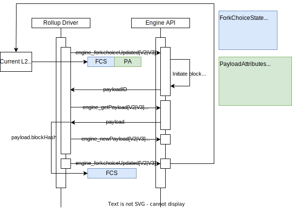

OP Stack Specification
Table of Contents
About Optimism
Optimism is a project dedicated to scaling Ethereum's technology and expanding its ability to coordinate people from across the world to build effective decentralized economies and governance systems. The Optimism Collective builds open-source software that powers scalable blockchains and aims to address key governance and economic challenges in the wider Ethereum ecosystem. Optimism operates on the principle of impact=profit, the idea that individuals who positively impact the Collective should be proportionally rewarded with profit.
Change the incentives and you change the world.
About the OP Stack
The OP Stack is a decentralized software stack maintained by the OP Stack that forms the backbone of blockchains like OP Mainnet and Base. The OP Stack is designed to be aggressively open-source — you are welcome to explore, modify, and extend the OP Stack to your heart's content.
Site Navigation
Navigate this site using the sidebar on the left, the search icon found at the top of this page, or the left/right navigation buttons found to the sides of each page.
Background
Table of Contents
Overview
The OP Stack is a decentralized software stack maintained by the OP Stack that forms the backbone of blockchains like OP Mainnet and Base. The OP Stack provides the infrastructure for operating EVM equivalent rollup blockchains designed to scale Ethereum while remaining maximally compatible with existing Ethereum infrastructure. This document provides an overview of the protocol to provide context for the rest of the specification.
Foundations
Ethereum Scalability
Scaling Ethereum means increasing the number of useful transactions the Ethereum network can process. Ethereum's limited resources, specifically bandwidth, computation, and storage, constrain the number of transactions which can be processed on the network. Of the three resources, computation and storage are currently the most significant bottlenecks. These bottlenecks limit the supply of transactions, leading to extremely high fees. Scaling ethereum and reducing fees can be achieved by better utilizing bandwidth, computation and storage.
Optimistic Rollups
An Optimistic Rollup is a layer 2 scalability construction which increases the computation & storage capacity of Ethereum while aiming to minimize sacrifices to scalability or decentralization. In a nutshell, an Optimistic Rollup utilizes Ethereum (or some other data availability layer) to host transaction data. Layer 2 nodes then execute a state transition function over this data. Users can propose the result of this off-chain execution to a smart contract on L1. A "fault proving" process can then demonstrate that a user's proposal is (or is not) valid.
EVM Equivalence
EVM Equivalence is complete compliance with the state transition function described in the Ethereum yellow paper, the formal definition of the protocol. By conforming to the Ethereum standard across EVM equivalent rollups, smart contract developers can write once and deploy anywhere.
Protocol Guarantees
We strive to preserve three critical properties: liveness, validity, and availability. A protocol that can maintain these properties can, effectively, scale Ethereum without sacrificing security.
Liveness
Liveness is defined as the ability for any party to be able to extend the rollup chain by including a transaction within a bounded amount of time. It should not be possible for an actor to block the inclusion of any given transaction for more than this bounded time period. This bounded time period should also be acceptable such that inclusion is not just theoretically possible but practically useful.
Validity
Validity is defined as the ability for any party to execute the rollup state transition function, subject to certain lower bound expectations for available computing and bandwidth resources. Validity is also extended to refer to the ability for a smart contract on Ethereum to be able to validate this state transition function economically.
Availability
Availability is defined as the ability for any party to retrieve the inputs that are necessary to execute the rollup state transition function correctly. Availability is essentially an element of validity and is required to be able to guarantee validity in general. Similar to validity, availability is subject to lower bound resource requirements.
Network Participants
Generally speaking, there are three primary actors that interact with an OP Stack chain: users, sequencers, and verifiers.
graph TD
EthereumL1(Ethereum L1)
subgraph "L2 Participants"
Users(Users)
Sequencers(Sequencers)
Verifiers(Verifiers)
end
Verifiers -.->|fetch transaction batches| EthereumL1
Verifiers -.->|fetch deposit data| EthereumL1
Verifiers -->|submit/validate/challenge output proposals| EthereumL1
Verifiers -.->|fetch realtime P2P updates| Sequencers
Users -->|submit deposits/withdrawals| EthereumL1
Users -->|submit transactions| Sequencers
Users -->|query data| Verifiers
Sequencers -->|submit transaction batches| EthereumL1
Sequencers -.->|fetch deposit data| EthereumL1
classDef l1Contracts stroke:#bbf,stroke-width:2px;
classDef l2Components stroke:#333,stroke-width:2px;
classDef systemUser stroke:#f9a,stroke-width:2px;
class EthereumL1 l1Contracts;
class Users,Sequencers,Verifiers l2Components;
Users
Users are the general class of network participants who:
- Submit transactions through a Sequencer or by interacting with contracts on Ethereum.
- Query transaction data from interfaces operated by verifiers.
Sequencers
Sequencers fill the role of the block producer on an OP Stack chain. Chains may have a single Sequencer or may choose to utilize some consensus protocol that coordinates multiple Sequencers. The OP Stack currently officially only supports a single active Sequencer at any given time. In general, specifications may use the term "the Sequencer" as a stand-in for either a single Sequencer or a consensus protocol of multiple Sequencers.
The Sequencer:
- Accepts transactions directly from Users.
- Observes "deposit" transactions generated on Ethereum.
- Consolidates both transaction streams into ordered L2 blocks.
- Submits information to L1 that is sufficient to fully reproduce those L2 blocks.
- Provides real-time access to pending L2 blocks that have not yet been confirmed on L1.
The Sequencer serves an important role for the operation of an L2 chain but is not a trusted actor. The Sequencer is generally responsible for improving the user experience by ordering transactions much more quickly and cheaply than would currently be possible if users were to submit all transactions directly to L1.
Verifiers
Verifiers download and execute the L2 state transition function independently of the Sequencer. Verifiers help to maintain the integrity of the network and serve blockchain data to Users.
Verifiers generally:
- Download rollup data from L1 and the Sequencer.
- Use rollup data to execute the L2 state transition function.
- Serve rollup data and computed L2 state information to Users.
Verifiers can also act as Proposers and/or Challengers who:
- Submit assertions about the state of the L2 to a smart contract on L1.
- Validate assertions made by other participants.
- Dispute invalid assertions made by other participants.
Key Interaction Diagrams
Depositing and Sending Transactions
Users will often begin their L2 journey by depositing ETH from L1. Once they have ETH to pay fees, they'll start sending transactions on L2. The following diagram demonstrates this interaction and all key OP Stack components which are or should be utilized:
graph TD
subgraph "Ethereum L1"
OptimismPortal(<a href="./protocol/withdrawals.html#the-optimism-portal-contract">OptimismPortal</a>)
BatchInbox(<a href="../glossary.html#batcher-transaction">Batch Inbox Address</a>)
end
Sequencer(Sequencer)
Users(Users)
%% Interactions
Users -->|<b>1.</b> submit deposit| OptimismPortal
Sequencer -.->|<b>2.</b> fetch deposit events| OptimismPortal
Sequencer -->|<b>3.</b> generate deposit block| Sequencer
Users -->|<b>4.</b> send transactions| Sequencer
Sequencer -->|<b>5.</b> submit transaction batches| BatchInbox
classDef l1Contracts stroke:#bbf,stroke-width:2px;
classDef l2Components stroke:#333,stroke-width:2px;
classDef systemUser stroke:#f9a,stroke-width:2px;
class OptimismPortal,BatchInbox l1Contracts;
class Sequencer l2Components;
class Users systemUser;
Withdrawing
Users may also want to withdraw ETH or ERC20 tokens from an OP Stack chain back to Ethereum. Withdrawals are initiated
as standard transactions on L2 but are then completed using transactions on L1. Withdrawals must reference a valid
FaultDisputeGame contract that proposes the state of the L2 at a given point in time.
graph LR
subgraph "Ethereum L1"
BatchInbox(<a href="../glossary.html#batcher-transaction">Batch Inbox Address</a>)
DisputeGameFactory(<a href="../fault-proof/stage-one/dispute-game-interface.html#disputegamefactory-interface">DisputeGameFactory</a>)
FaultDisputeGame(<a href="../fault-proof/stage-one/fault-dispute-game.html">FaultDisputeGame</a>)
OptimismPortal(<a href="./protocol/withdrawals.html#the-optimism-portal-contract">OptimismPortal</a>)
ExternalContracts(External Contracts)
end
Sequencer(Sequencer)
Proposers(Proposers)
Users(Users)
%% Interactions
Users -->|<b>1.</b> send withdrawal initialization txn| Sequencer
Sequencer -->|<b>2.</b> submit transaction batch| BatchInbox
Proposers -->|<b>3.</b> submit output proposal| DisputeGameFactory
DisputeGameFactory -->|<b>4.</b> generate game| FaultDisputeGame
Users -->|<b>5.</b> submit withdrawal proof| OptimismPortal
Users -->|<b>6.</b> wait for finalization| FaultDisputeGame
Users -->|<b>7.</b> submit withdrawal finalization| OptimismPortal
OptimismPortal -->|<b>8.</b> check game validity| FaultDisputeGame
OptimismPortal -->|<b>9.</b> execute withdrawal transaction| ExternalContracts
%% Styling
classDef l1Contracts stroke:#bbf,stroke-width:2px;
classDef l2Components stroke:#333,stroke-width:2px;
classDef systemUser stroke:#f9a,stroke-width:2px;
class BatchInbox,DisputeGameFactory,FaultDisputeGame,OptimismPortal l1Contracts;
class Sequencer l2Components;
class Users,Proposers systemUser;
Next Steps
Check out the sidebar to the left to find any specification you might want to read, or click one of the links embedded in one of the above diagrams to learn about particular components that have been mentioned.
Optimism Overview
Table of Contents
This document is a high-level technical overview of the Optimism protocol. It aims to explain how the protocol works in an informal manner, and direct readers to other parts of the specification so that they may learn more.
This document assumes you've read the background.
Architecture Design Goals
- Execution-Level EVM Equivalence: The developer experience should be identical to L1 except where L2 introduces a
fundamental difference.
- No special compiler.
- No unexpected gas costs.
- Transaction traces work out-of-the-box.
- All existing Ethereum tooling works - all you have to do is change the chain ID.
- Maximal compatibility with ETH1 nodes: The implementation should minimize any differences with a vanilla Geth
node, and leverage as many existing L1 standards as possible.
- The execution engine/rollup node uses the ETH2 Engine API to build the canonical L2 chain.
- The execution engine leverages Geth's existing mempool and sync implementations, including snap sync.
- Minimize state and complexity:
- Whenever possible, services contributing to the rollup infrastructure are stateless.
- Stateful services can recover to full operation from a fresh DB using the peer-to-peer network and on-chain sync mechanisms.
- Running a replica is as simple as running a Geth node.
Architecture Overview
Core L1 Smart Contracts
Below you'll find an architecture diagram describing the core L1 smart contracts for the OP Stack. Smart contracts that are considered "peripheral" and not core to the operation of the OP Stack system are described separately.
graph LR
subgraph "External Contracts"
ExternalERC20(External ERC20 Contracts)
ExternalERC721(External ERC721 Contracts)
end
subgraph "L1 Smart Contracts"
BatchDataEOA(<a href="../glossary.html#batcher-transaction">Batch Inbox Address</a>)
L1StandardBridge(<a href="./bridges.html">L1StandardBridge</a>)
L1ERC721Bridge(<a href="./bridges.html">L1ERC721Bridge</a>)
L1CrossDomainMessenger(<a href="./messengers.html">L1CrossDomainMessenger</a>)
OptimismPortal(<a href="./withdrawals.html#the-optimism-portal-contract">OptimismPortal</a>)
SuperchainConfig(<a href="./superchain-config.html">SuperchainConfig</a>)
SystemConfig(<a href="./system-config.html">SystemConfig</a>)
DisputeGameFactory(<a href="../fault-proof/stage-one/dispute-game-interface.html#disputegamefactory-interface">DisputeGameFactory</a>)
FaultDisputeGame(<a href="../fault-proof/stage-one/fault-dispute-game.html">FaultDisputeGame</a>)
AnchorStateRegistry(<a href="../fault-proof/stage-one/fault-dispute-game.html#anchor-state-registry">AnchorStateRegistry</a>)
DelayedWETH(<a href="../fault-proof/stage-one/bond-incentives.html#delayedweth#de">DelayedWETH</a>)
end
subgraph "User Interactions (Permissionless)"
Users(Users)
Challengers(Challengers)
end
subgraph "System Interactions"
Guardian(Guardian)
Batcher(<a href="./batcher.html">Batcher</a>)
end
subgraph "Layer 2 Interactions"
L2Nodes(Layer 2 Nodes)
end
L2Nodes -.->|fetch transaction batches| BatchDataEOA
L2Nodes -.->|fetch deposit events| OptimismPortal
Batcher -->|publish transaction batches| BatchDataEOA
ExternalERC20 <-->|mint/burn/transfer tokens| L1StandardBridge
ExternalERC721 <-->|mint/burn/transfer tokens| L1ERC721Bridge
L1StandardBridge <-->|send/receive messages| L1CrossDomainMessenger
L1StandardBridge -.->|query pause state| SuperchainConfig
L1ERC721Bridge <-->|send/receive messages| L1CrossDomainMessenger
L1ERC721Bridge -.->|query pause state| SuperchainConfig
L1CrossDomainMessenger <-->|send/receive messages| OptimismPortal
L1CrossDomainMessenger -.->|query pause state| SuperchainConfig
OptimismPortal -.->|query pause state| SuperchainConfig
OptimismPortal -.->|query config| SystemConfig
OptimismPortal -.->|query state proposals| DisputeGameFactory
DisputeGameFactory -->|generate instances| FaultDisputeGame
FaultDisputeGame -->|store bonds| DelayedWETH
FaultDisputeGame -->|query/update anchor states| AnchorStateRegistry
Users <-->|deposit/withdraw ETH/ERC20s| L1StandardBridge
Users <-->|deposit/withdraw ERC721s| L1ERC721Bridge
Users -->|prove/execute withdrawals| OptimismPortal
Challengers -->|propose output roots| DisputeGameFactory
Challengers -->|verify/challenge/defend proposals| FaultDisputeGame
Guardian -->|pause/unpause| SuperchainConfig
Guardian -->|safety net actions| OptimismPortal
Guardian -->|safety net actions| DisputeGameFactory
Guardian -->|safety net actions| DelayedWETH
classDef extContracts stroke:#ff9,stroke-width:2px;
classDef l1Contracts stroke:#bbf,stroke-width:2px;
classDef l1EOA stroke:#bbb,stroke-width:2px;
classDef userInt stroke:#f9a,stroke-width:2px;
classDef systemUser stroke:#f9a,stroke-width:2px;
classDef l2Nodes stroke:#333,stroke-width:2px
class ExternalERC20,ExternalERC721 extContracts;
class L1StandardBridge,L1ERC721Bridge,L1CrossDomainMessenger,OptimismPortal,SuperchainConfig,SystemConfig,DisputeGameFactory,FaultDisputeGame,DelayedWETH,AnchorStateRegistry l1Contracts;
class BatchDataEOA l1EOA;
class Users,Challengers userInt;
class Batcher,Guardian systemUser;
class L2Nodes l2Nodes;
Notes for Core L1 Smart Contracts
- The
Batch Inbox Addressdescribed above (highlighted in GREY) is not a smart contract and is instead an arbitrarily selected account that is assumed to have no known private key. The convention for deriving this account's address is provided on the Configurability page.- Historically, it was often derived as
0xFF0000....<L2 chain ID>where<L2 chain ID>is chain ID of the Layer 2 network for which the data is being posted. This is why many chains, such as OP Mainnet, have a batch inbox address of this form.
- Historically, it was often derived as
- Smart contracts that sit behind
Proxycontracts are highlighted in BLUE. Refer to the Smart Contract Proxies section below to understand how these proxies are designed.- The
L1CrossDomainMessengercontract sits behind theResolvedDelegateProxycontract, a legacy proxy contract type used within older versions of the OP Stack. This proxy type is used exclusively for theL1CrossDomainMessengerto maintain backwards compatibility. - The
L1StandardBridgecontract sits behind theL1ChugSplashProxycontract, a legacy proxy contract type used within older versions of the OP Stack. This proxy type is used exclusively for theL1StandardBridgecontract to maintain backwards compatibility.
- The
Core L2 Smart Contracts
Here you'll find an architecture diagram describing the core OP Stack smart contracts that exist natively on the L2 chain itself.
graph LR
subgraph "Layer 1 (Ethereum)"
L1SmartContracts(L1 Smart Contracts)
end
subgraph "L2 Client"
L2Node(L2 Node)
end
subgraph "L2 System Contracts"
L1Block(<a href="./predeploys.html#l1block">L1Block</a>)
GasPriceOracle(<a href="./predeploys.html#gaspriceoracle">GasPriceOracle</a>)
L1FeeVault(<a href="./predeploys.html#l1feevault">L1FeeVault</a>)
BaseFeeVault(<a href="./predeploys.html#basefeevault">BaseFeeVault</a>)
SequencerFeeVault(<a href="./predeploys.html#sequencerfeevault">SequencerFeeVault</a>)
end
subgraph "L2 Bridge Contracts"
L2CrossDomainMessenger(<a href="./predeploys.html#l2crossdomainmessenger">L2CrossDomainMessenger</a>)
L2ToL1MessagePasser(<a href="./predeploys.html#l2tol1messagepasser">L2ToL1MessagePasser</a>)
L2StandardBridge(<a href="./predeploys.html#l2standardbridge">L2StandardBridge</a>)
L2ERC721Bridge(<a href="./predeploys.html">L2ERC721Bridge</a>)
end
subgraph "Transactions"
DepositTransaction(Deposit Transaction)
UserTransaction(User Transaction)
end
subgraph "External Contracts"
ExternalERC20(External ERC20 Contracts)
ExternalERC721(External ERC721 Contracts)
end
subgraph "Remaining L2 Universe"
OtherContracts(Any Contracts and Addresses)
end
L2Node -.->|derives chain from| L1SmartContracts
L2Node -->|updates| L1Block
L2Node -->|distributes fees to| L1FeeVault
L2Node -->|distributes fees to| BaseFeeVault
L2Node -->|distributes fees to| SequencerFeeVault
L2Node -->|derives from deposits| DepositTransaction
L2Node -->|derives from chain data| UserTransaction
UserTransaction -->|can trigger| OtherContracts
DepositTransaction -->|maybe triggers| L2CrossDomainMessenger
DepositTransaction -->|can trigger| OtherContracts
ExternalERC20 <-->|mint/burn/transfer| L2StandardBridge
ExternalERC721 <-->|mint/burn/transfer| L2ERC721Bridge
L2StandardBridge <-->|sends/receives messages| L2CrossDomainMessenger
L2ERC721Bridge <-->|sends/receives messages| L2CrossDomainMessenger
GasPriceOracle -.->|queries| L1Block
L2CrossDomainMessenger -->|sends messages| L2ToL1MessagePasser
classDef extContracts stroke:#ff9,stroke-width:2px;
classDef l2Contracts stroke:#bbf,stroke-width:2px;
classDef transactions stroke:#fba,stroke-width:2px;
classDef l2Node stroke:#f9a,stroke-width:2px;
class ExternalERC20,ExternalERC721 extContracts;
class L2CrossDomainMessenger,L2ToL1MessagePasser,L2StandardBridge,L2ERC721Bridge l2Contracts;
class L1Block,L1FeeVault,BaseFeeVault,SequencerFeeVault,GasPriceOracle l2Contracts;
class UserTransaction,DepositTransaction transactions;
class L2Node l2Node;
Notes for Core L2 Smart Contracts
- Contracts highlighted as "L2 System Contracts" are updated or mutated automatically as part of the chain derivation
process. Users typically do not mutate these contracts directly, except in the case of the
FeeVaultcontracts where any user may trigger a withdrawal of collected fees to the pre-determined withdrawal address. - Smart contracts that sit behind
Proxycontracts are highlighted in BLUE. Refer to the Smart Contract Proxies section below to understand how these proxies are designed. - User interactions for the "L2 Bridge Contracts" have been omitted from this diagram but largely follow the same user interactions described in the architecture diagram for the Core L1 Smart Contracts.
Smart Contract Proxies
Most OP Stack smart contracts sit behind Proxy contracts that are managed by a ProxyAdmin contract.
The ProxyAdmin contract is controlled by some owner address that can be any EOA or smart contract.
Below you'll find a diagram that explains the behavior of the typical proxy contract.
graph LR
ProxyAdminOwner(Proxy Admin Owner)
ProxyAdmin(<a href="https://github.com/ethereum-optimism/optimism/blob/develop/packages/contracts-bedrock/src/universal/ProxyAdmin.sol">ProxyAdmin</a>)
subgraph "Logical Smart Contract"
Proxy(<a href="https://github.com/ethereum-optimism/optimism/blob/develop/packages/contracts-bedrock/src/universal/Proxy.sol">Proxy</a>)
Implementation(Implementation)
end
ProxyAdminOwner -->|manages| ProxyAdmin
ProxyAdmin -->|upgrades| Proxy
Proxy -->|delegatecall| Implementation
classDef l1Contracts stroke:#bbf,stroke-width:2px;
classDef systemUser stroke:#f9a,stroke-width:2px;
class Proxy l1Contracts;
class ProxyAdminOwner systemUser;
L2 Node Components
Below you'll find a diagram illustrating the basic interactions between the components that make up an L2 node as well as demonstrations of how different actors use these components to fulfill their roles.
graph LR
subgraph "L2 Node"
RollupNode(<a href="./rollup-node.html">Rollup Node</a>)
ExecutionEngine(<a href="./exec-engine.html">Execution Engine</a>)
end
subgraph "System Interactions"
BatchSubmitter(<a href="./batcher.html">Batch Submitter</a>)
OutputSubmitter(Output Submitter)
Challenger(Challenger)
end
subgraph "L1 Smart Contracts"
BatchDataEOA(<a href="../glossary.html#batcher-transaction">Batch Inbox Address</a>)
OptimismPortal(<a href="./withdrawals.html#the-optimism-portal-contract">OptimismPortal</a>)
DisputeGameFactory(<a href="../fault-proof/stage-one/dispute-game-interface.html#disputegamefactory-interface">DisputeGameFactory</a>)
FaultDisputeGame(<a href="../fault-proof/stage-one/fault-dispute-game.html">FaultDisputeGame</a>)
end
BatchSubmitter -.->|fetch transaction batch info| RollupNode
BatchSubmitter -.->|fetch transaction batch info| ExecutionEngine
BatchSubmitter -->|send transaction batches| BatchDataEOA
RollupNode -.->|fetch transaction batches| BatchDataEOA
RollupNode -.->|fetch deposit transactions| OptimismPortal
RollupNode -->|drives| ExecutionEngine
OutputSubmitter -.->|fetch outputs| RollupNode
OutputSubmitter -->|send output proposals| DisputeGameFactory
Challenger -.->|fetch dispute games| DisputeGameFactory
Challenger -->|verify/challenge/defend games| FaultDisputeGame
classDef l2Components stroke:#333,stroke-width:2px;
classDef systemUser stroke:#f9a,stroke-width:2px;
classDef l1Contracts stroke:#bbf,stroke-width:2px;
class RollupNode,ExecutionEngine l2Components;
class BatchSubmitter,OutputSubmitter,Challenger systemUser;
class BatchDataEOA,OptimismPortal,DisputeGameFactory,FaultDisputeGame l1Contracts;
Transaction/Block Propagation
Spec links:
Since the EE uses Geth under the hood, Optimism uses Geth's built-in peer-to-peer network and transaction pool to propagate transactions. The same network can also be used to propagate submitted blocks and support snap-sync.
Unsubmitted blocks, however, are propagated using a separate peer-to-peer network of Rollup Nodes. This is optional, however, and is provided as a convenience to lower latency for verifiers and their JSON-RPC clients.
The below diagram illustrates how the sequencer and verifiers fit together:

Key Interactions In Depth
Deposits
Spec links:
Optimism supports two types of deposits: user deposits, and L1 attributes deposits. To perform a user deposit, users
call the depositTransaction method on the OptimismPortal contract. This in turn emits TransactionDeposited events,
which the rollup node reads during block derivation.
L1 attributes deposits are used to register L1 block attributes (number, timestamp, etc.) on L2 via a call to the L1 Attributes Predeploy. They cannot be initiated by users, and are instead added to L2 blocks automatically by the rollup node.
Both deposit types are represented by a single custom EIP-2718 transaction type on L2.
Block Derivation
Overview
The rollup chain can be deterministically derived given an L1 Ethereum chain. The fact that the entire rollup chain can be derived based on L1 blocks is what makes Optimism a rollup. This process can be represented as:
derive_rollup_chain(l1_blockchain) -> rollup_blockchain
Optimism's block derivation function is designed such that it:
- Requires no state other than what is easily accessible using L1 and L2 execution engine APIs.
- Supports sequencers and sequencer consensus.
- Is resilient to sequencer censorship.
Epochs and the Sequencing Window
The rollup chain is subdivided into epochs. There is a 1:1 correspondence between L1 block numbers and epoch numbers.
For L1 block number n, there is a corresponding rollup epoch n which can only be derived after a sequencing window
worth of blocks has passed, i.e. after L1 block number n + SEQUENCING_WINDOW_SIZE is added to the L1 chain.
Each epoch contains at least one block. Every block in the epoch contains an L1 info transaction which contains
contextual information about L1 such as the block hash and timestamp. The first block in the epoch also contains all
deposits initiated via the OptimismPortal contract on L1. All L2 blocks can also contain sequenced transactions,
i.e. transactions submitted directly to the sequencer.
Whenever the sequencer creates a new L2 block for a given epoch, it must submit it to L1 as part of a batch, within
the epoch's sequencing window (i.e. the batch must land before L1 block n + SEQUENCING_WINDOW_SIZE). These batches are
(along with the TransactionDeposited L1 events) what allows the derivation of the L2 chain from the L1 chain.
The sequencer does not need for a L2 block to be batch-submitted to L1 in order to build on top of it. In fact, batches typically contain multiple L2 blocks worth of sequenced transactions. This is what enables fast transaction confirmations on the sequencer.
Since transaction batches for a given epoch can be submitted anywhere within the sequencing window, verifiers must search all blocks within the window for transaction batches. This protects against the uncertainty of transaction inclusion of L1. This uncertainty is also why we need the sequencing window in the first place: otherwise the sequencer could retroactively add blocks to an old epoch, and validators wouldn't know when they can finalize an epoch.
The sequencing window also prevents censorship by the sequencer: deposits made on a given L1 block will be included in
the L2 chain at worst after SEQUENCING_WINDOW_SIZE L1 blocks have passed.
The following diagram describes this relationship, and how L2 blocks are derived from L1 blocks (L1 info transactions have been elided):

Block Derivation Loop
A sub-component of the rollup node called the rollup driver is actually responsible for performing block derivation. The rollup driver is essentially an infinite loop that runs the block derivation function. For each epoch, the block derivation function performs the following steps:
- Downloads deposit and transaction batch data for each block in the sequencing window.
- Converts the deposit and transaction batch data into payload attributes for the Engine API.
- Submits the payload attributes to the Engine API, where they are converted into blocks and added to the canonical chain.
This process is then repeated with incrementing epochs until the tip of L1 is reached.
Engine API
The rollup driver doesn't actually create blocks. Instead, it directs the execution engine to do so via the Engine API. For each iteration of the block derivation loop described above, the rollup driver will craft a payload attributes object and send it to the execution engine. The execution engine will then convert the payload attributes object into a block, and add it to the chain. The basic sequence of the rollup driver is as follows:
- Call fork choice updated with the payload attributes object. We'll skip over the details of the
fork choice state parameter for now - just know that one of its fields is the L2 chain's
headBlockHash, and that it is set to the block hash of the tip of the L2 chain. The Engine API returns a payload ID. - Call get payload with the payload ID returned in step 1. The engine API returns a payload object that includes a block hash as one of its fields.
- Call new payload with the payload returned in step 2. (Ecotone blocks, must use V3, pre-Ecotone blocks MUST use the V2 version)
- Call fork choice updated with the fork choice parameter's
headBlockHashset to the block hash returned in step 2. The tip of the L2 chain is now the block created in step 1.
The swimlane diagram below visualizes the process:

Standard Bridges
Table of Contents
Overview
The standard bridges are responsible for allowing cross domain ETH and ERC20 token transfers. They are built on top of the cross domain messenger contracts and give a standard interface for depositing tokens.
The bridge works for both L1 native tokens and L2 native tokens. The legacy API
is preserved to ensure that existing applications will not experience any
problems with the Bedrock StandardBridge contracts.
The L2StandardBridge is a predeploy contract located at
0x4200000000000000000000000000000000000010.
interface StandardBridge {
event ERC20BridgeFinalized(address indexed localToken, address indexed remoteToken, address indexed from, address to, uint256 amount, bytes extraData);
event ERC20BridgeInitiated(address indexed localToken, address indexed remoteToken, address indexed from, address to, uint256 amount, bytes extraData);
event ETHBridgeFinalized(address indexed from, address indexed to, uint256 amount, bytes extraData);
event ETHBridgeInitiated(address indexed from, address indexed to, uint256 amount, bytes extraData);
function bridgeERC20(address _localToken, address _remoteToken, uint256 _amount, uint32 _minGasLimit, bytes memory _extraData) external;
function bridgeERC20To(address _localToken, address _remoteToken, address _to, uint256 _amount, uint32 _minGasLimit, bytes memory _extraData) external;
function bridgeETH(uint32 _minGasLimit, bytes memory _extraData) payable external;
function bridgeETHTo(address _to, uint32 _minGasLimit, bytes memory _extraData) payable external;
function deposits(address, address) view external returns (uint256);
function finalizeBridgeERC20(address _localToken, address _remoteToken, address _from, address _to, uint256 _amount, bytes memory _extraData) external;
function finalizeBridgeETH(address _from, address _to, uint256 _amount, bytes memory _extraData) payable external;
function messenger() view external returns (address);
function OTHER_BRIDGE() view external returns (address);
}
Token Depositing
The bridgeERC20 function is used to send a token from one domain to another
domain. An OptimismMintableERC20 token contract must exist on the remote
domain to be able to deposit tokens to that domain. One of these tokens can be
deployed using the OptimismMintableERC20Factory contract.
Upgradability
Both the L1 and L2 standard bridges should be behind upgradable proxies.
Cross Domain Messengers
Table of Contents
Overview
The cross domain messengers are responsible for providing a higher level API for developers who are interested in sending cross domain messages. They allow for the ability to replay cross domain messages and sit directly on top of the lower level system contracts responsible for cross domain messaging on L1 and L2.
The CrossDomainMessenger is extended to create both an
L1CrossDomainMessenger as well as a L2CrossDomainMessenger.
These contracts are then extended with their legacy APIs to provide backwards
compatibility for applications that integrated before the Bedrock system
upgrade.
The L2CrossDomainMessenger is a predeploy contract located at
0x4200000000000000000000000000000000000007.
The base CrossDomainMessenger interface is:
interface CrossDomainMessenger {
event FailedRelayedMessage(bytes32 indexed msgHash);
event RelayedMessage(bytes32 indexed msgHash);
event SentMessage(address indexed target, address sender, bytes message, uint256 messageNonce, uint256 gasLimit);
event SentMessageExtension1(address indexed sender, uint256 value);
function MESSAGE_VERSION() external view returns (uint16);
function MIN_GAS_CALLDATA_OVERHEAD() external view returns (uint64);
function MIN_GAS_CONSTANT_OVERHEAD() external view returns (uint64);
function MIN_GAS_DYNAMIC_OVERHEAD_DENOMINATOR() external view returns (uint64);
function MIN_GAS_DYNAMIC_OVERHEAD_NUMERATOR() external view returns (uint64);
function OTHER_MESSENGER() external view returns (address);
function baseGas(bytes memory _message, uint32 _minGasLimit) external pure returns (uint64);
function failedMessages(bytes32) external view returns (bool);
function messageNonce() external view returns (uint256);
function relayMessage(
uint256 _nonce,
address _sender,
address _target,
uint256 _value,
uint256 _minGasLimit,
bytes memory _message
) external payable returns (bytes memory returnData_);
function sendMessage(address _target, bytes memory _message, uint32 _minGasLimit) external payable;
function successfulMessages(bytes32) external view returns (bool);
function xDomainMessageSender() external view returns (address);
}
Message Passing
The sendMessage function is used to send a cross domain message. To trigger
the execution on the other side, the relayMessage function is called.
Successful messages have their hash stored in the successfulMessages mapping
while unsuccessful messages have their hash stored in the failedMessages
mapping.
The user experience when sending from L1 to L2 is a bit different than when
sending a transaction from L2 to L1. When going from L1 into L2, the user does
not need to call relayMessage on L2 themselves. The user pays for L2 gas on L1
and the transaction is automatically pulled into L2 where it is executed on L2.
When going from L2 into L1, the user proves their withdrawal on OptimismPortal,
then waits for the finalization window to pass, and then finalizes the withdrawal
on the OptimismPortal, which calls relayMessage on the
L1CrossDomainMessenger to finalize the withdrawal.
Upgradability
The L1 and L2 cross domain messengers should be deployed behind upgradable proxies. This will allow for updating the message version.
Message Versioning
Messages are versioned based on the first 2 bytes of their nonce. Depending on
the version, messages can have a different serialization and hashing scheme.
The first two bytes of the nonce are reserved for version metadata because
a version field was not originally included in the messages themselves, but
a uint256 nonce is so large that we can very easily pack additional data
into that field.
Message Version 0
abi.encodeWithSignature(
"relayMessage(address,address,bytes,uint256)",
_target,
_sender,
_message,
_messageNonce
);
Message Version 1
abi.encodeWithSignature(
"relayMessage(uint256,address,address,uint256,uint256,bytes)",
_nonce,
_sender,
_target,
_value,
_gasLimit,
_data
);
Backwards Compatibility Notes
An older version of the messenger contracts had the concept of blocked messages
in a blockedMessages mapping. This functionality was removed from the
messengers because a smart attacker could get around any message blocking
attempts. It also saves gas on finalizing withdrawals.
The concept of a "relay id" and the relayedMessages mapping was removed.
It was built as a way to be able to fund third parties who relayed messages
on the behalf of users, but it was improperly implemented as it was impossible
to know if the relayed message actually succeeded.
Deposits
Table of Contents
- Overview
- The Deposited Transaction Type
- Deposit Receipt
- L1 Attributes Deposited Transaction
- Special Accounts on L2
- User-Deposited Transactions
Overview
Deposited transactions, also known as deposits are transactions which are initiated on L1, and executed on L2. This document outlines a new transaction type for deposits. It also describes how deposits are initiated on L1, along with the authorization and validation conditions on L2.
Vocabulary note: deposited transaction refers specifically to an L2 transaction, while deposit can refer to the transaction at various stages (for instance when it is deposited on L1).
The Deposited Transaction Type
Deposited transactions have the following notable distinctions from existing transaction types:
- They are derived from Layer 1 blocks, and must be included as part of the protocol.
- They do not include signature validation (see User-Deposited Transactions for the rationale).
- They buy their L2 gas on L1 and, as such, the L2 gas is not refundable.
We define a new EIP-2718 compatible transaction type with the prefix 0x7E to represent a deposit transaction.
A deposit has the following fields (rlp encoded in the order they appear here):
bytes32 sourceHash: the source-hash, uniquely identifies the origin of the deposit.address from: The address of the sender account.address to: The address of the recipient account, or the null (zero-length) address if the deposited transaction is a contract creation.uint256 mint: The ETH value to mint on L2.uint256 value: The ETH value to send to the recipient account.uint64 gas: The gas limit for the L2 transaction.bool isSystemTx: If true, the transaction does not interact with the L2 block gas pool.- Note: boolean is disabled (enforced to be
false) starting from the Regolith upgrade.
- Note: boolean is disabled (enforced to be
bytes data: The calldata.
In contrast to EIP-155 transactions, this transaction type:
- Does not include a
nonce, since it is identified by thesourceHash. API responses still include anonceattribute:- Before Regolith: the
nonceis always0 - With Regolith: the
nonceis set to thedepositNonceattribute of the corresponding transaction receipt.
- Before Regolith: the
- Does not include signature information, and makes the
fromaddress explicit. API responses contain zeroed signaturev,r,svalues for backwards compatibility. - Includes new
sourceHash,from,mint, andisSystemTxattributes. API responses contain these as additional fields.
We select 0x7E because transaction type identifiers are currently allowed to go up to 0x7F.
Picking a high identifier minimizes the risk that the identifier will be used by another
transaction type on the L1 chain in the future. We don't pick 0x7F itself in case it becomes used
for a variable-length encoding scheme.
Source hash computation
The sourceHash of a deposit transaction is computed based on the origin:
- User-deposited:
keccak256(bytes32(uint256(0)), keccak256(l1BlockHash, bytes32(uint256(l1LogIndex)))). Where thel1BlockHash, andl1LogIndexall refer to the inclusion of the deposit log event on L1.l1LogIndexis the index of the deposit event log in the combined list of log events of the block. - L1 attributes deposited:
keccak256(bytes32(uint256(1)), keccak256(l1BlockHash, bytes32(uint256(seqNumber)))). Wherel1BlockHashrefers to the L1 block hash of which the info attributes are deposited. AndseqNumber = l2BlockNum - l2EpochStartBlockNum, wherel2BlockNumis the L2 block number of the inclusion of the deposit tx in L2, andl2EpochStartBlockNumis the L2 block number of the first L2 block in the epoch. - Upgrade-deposited:
keccak256(bytes32(uint256(2)), keccak256(intent)). Whereintentis a UTF-8 byte string, identifying the upgrade intent.
Without a sourceHash in a deposit, two different deposited transactions could have the same exact hash.
The outer keccak256 hashes the actual uniquely identifying information with a domain,
to avoid collisions between different types of sources.
The Interop derivation spec introduces two additional kinds of system deposits,
with domains 3 and 4.
We do not use the sender's nonce to ensure uniqueness because this would require an extra L2 EVM state read from the execution engine during block-derivation.
Kinds of Deposited Transactions
Although we define only one new transaction type, we can distinguish between two kinds of deposited transactions, based on their positioning in the L2 block:
- The first transaction MUST be a L1 attributes deposited transaction, followed by
- an array of zero-or-more user-deposited transactions
submitted to the deposit feed contract on L1 (called
OptimismPortal). User-deposited transactions are only present in the first block of a L2 epoch.
We only define a single new transaction type in order to minimize modifications to L1 client software, and complexity in general.
Validation and Authorization of Deposited Transactions
As noted above, the deposited transaction type does not include a signature for validation. Rather,
authorization is handled by the L2 chain derivation process, which when correctly
applied will only derive transactions with a from address attested to by the logs of the L1
deposit contract.
Execution
In order to execute a deposited transaction:
First, the balance of the from account MUST be increased by the amount of mint.
This is unconditional, and does not revert on deposit failure.
Then, the execution environment for a deposited transaction is initialized based on the transaction's attributes, in exactly the same manner as it would be for an EIP-155 transaction.
The deposit transaction is processed exactly like a type-2 (EIP-1559) transaction, with the exception of:
- No fee fields are verified: the deposit does not have any, as it pays for gas on L1.
- No
noncefield is verified: the deposit does not have any, it's uniquely identified by itssourceHash. - No access-list is processed: the deposit has no access-list, and it is thus processed as if the access-list is empty.
- No check if
fromis an Externally Owner Account (EOA): the deposit is ensured not to be an EOA through L1 address masking, this may change in future L1 contract-deployments to e.g. enable an account-abstraction like mechanism. - Before the Regolith upgrade:
- The execution output states a non-standard gas usage:
- If
isSystemTxis false: execution output states it usesgasLimitgas. - If
isSystemTxis true: execution output states it uses0gas.
- If
- The execution output states a non-standard gas usage:
- No gas is refunded as ETH. (either by not refunding or utilizing the fact the gas-price of the deposit is
0) - No transaction priority fee is charged. No payment is made to the block fee-recipient.
- No L1-cost fee is charged, as deposits are derived from L1 and do not have to be submitted as data back to it.
- No base fee is charged. The total base fee accounting does not change.
Note that this includes contract-deployment behavior like with regular transactions, and gas metering is the same (with the exception of fee related changes above), including metering of intrinsic gas.
Any non-EVM state-transition error emitted by the EVM execution is processed in a special way:
- It is transformed into an EVM-error:
i.e. the deposit will always be included, but its receipt will indicate a failure
if it runs into a non-EVM state-transition error, e.g. failure to transfer the specified
valueamount of ETH due to insufficient account-balance. - The world state is rolled back to the start of the EVM processing, after the minting part of the deposit.
- The
nonceoffromin the world state is incremented by 1, making the error equivalent to a native EVM failure. Note that a previousnonceincrement may have happened during EVM processing, but this would be rolled back first.
Finally, after the above processing, the execution post-processing runs the same:
i.e. the gas pool and receipt are processed identical to a regular transaction.
Starting with the Regolith upgrade however, the receipt of deposit transactions is extended with an additional
depositNonce value, storing the nonce value of the from sender as registered before the EVM processing.
Note that the gas used as stated by the execution output is subtracted from the gas pool, but this execution output value has special edge cases before the Regolith upgrade.
Note for application developers: because CALLER and ORIGIN are set to from, the
semantics of using the tx.origin == msg.sender check will not work to determine whether
or not a caller is an EOA during a deposit transaction. Instead, the check could only be useful for
identifying the first call in the L2 deposit transaction. However this check does still satisfy
the common case in which developers are using this check to ensure that the CALLER is unable to
execute code before and after the call.
Nonce Handling
Despite the lack of signature validation, we still increment the nonce of the from account when a
deposit transaction is executed. In the context of a deposit-only roll up, this is not necessary
for transaction ordering or replay prevention, however it maintains consistency with the use of
nonces during contract creation. It may also simplify integration with downstream
tooling (such as wallets and block explorers).
Deposit Receipt
Transaction receipts use standard typing as per EIP-2718.
The Deposit transaction receipt type is equal to a regular receipt,
but extended with an optional depositNonce field.
The RLP-encoded consensus-enforced fields are:
postStateOrStatus(standard): this contains the transaction status, see EIP-658.cumulativeGasUsed(standard): gas used in the block thus far, including this transaction.- The actual gas used is derived from the difference in
CumulativeGasUsedwith the previous transaction. - Starting with Regolith, this accounts for the actual gas usage by the deposit, like regular transactions.
- The actual gas used is derived from the difference in
bloom(standard): bloom filter of the transaction logs.logs(standard): log events emitted by the EVM processing.depositNonce(unique extension): Optional field. The deposit transaction persists the nonce used during execution.depositNonceVersion(unique extension): Optional field. The value must be 1 if the field is present- Before Canyon, these
depositNonce&depositNonceVersionfields must always be omitted. - With Canyon, these
depositNonce&depositNonceVersionfields must always be included.
- Before Canyon, these
Starting with Regolith, the receipt API responses utilize the receipt changes for more accurate response data:
- The
depositNonceis included in the receipt JSON data in API responses - For contract-deployments (when
to == null), thedepositNoncehelps derive the correctcontractAddressmeta-data, instead of assuming the nonce was zero. - The
cumulativeGasUsedaccounts for the actual gas usage, as metered in the EVM processing.
L1 Attributes Deposited Transaction
An L1 attributes deposited transaction is a deposit transaction sent to the L1 attributes predeployed contract.
This transaction MUST have the following values:
fromis0xdeaddeaddeaddeaddeaddeaddeaddeaddead0001(the address of the L1 Attributes depositor account)tois0x4200000000000000000000000000000000000015(the address of the L1 attributes predeployed contract).mintis0valueis0gasLimitis set to 150,000,000 prior to the Regolith upgrade, and 1,000,000 after.isSystemTxis set totrueprior to the Regolith upgrade, andfalseafter.datais an encoded call to the L1 attributes predeployed contract that depends on the upgrades that are active (see below).
This system-initiated transaction for L1 attributes is not charged any ETH for its allocated
gasLimit, as it is considered part of state-transition processing.
L1 Attributes Deposited Transaction Calldata
L1 Attributes - Bedrock, Canyon, Delta
The data field of the L1 attributes deposited transaction is an ABI encoded call to the
setL1BlockValues() function with correct values associated with the corresponding L1 block
(cf. reference implementation).
Special Accounts on L2
The L1 attributes deposit transaction involves two special purpose accounts:
- The L1 attributes depositor account
- The L1 attributes predeployed contract
L1 Attributes Depositor Account
The depositor account is an EOA with no known private key. It has the address
0xdeaddeaddeaddeaddeaddeaddeaddeaddead0001. Its value is returned by the CALLER and ORIGIN
opcodes during execution of the L1 attributes deposited transaction.
L1 Attributes Predeployed Contract
A predeployed contract on L2 at address 0x4200000000000000000000000000000000000015, which holds
certain block variables from the corresponding L1 block in storage, so that they may be accessed
during the execution of the subsequent deposited transactions.
The predeploy stores the following values:
- L1 block attributes:
number(uint64)timestamp(uint64)basefee(uint256)hash(bytes32)
sequenceNumber(uint64): This equals the L2 block number relative to the start of the epoch, i.e. the L2 block distance to the L2 block height that the L1 attributes last changed, and reset to 0 at the start of a new epoch.- System configurables tied to the L1 block, see System configuration specification:
batcherHash(bytes32): A versioned commitment to the batch-submitter(s) currently operating.overhead(uint256): The L1 fee overhead to apply to L1 cost computation of transactions in this L2 block.scalar(uint256): The L1 fee scalar to apply to L1 cost computation of transactions in this L2 block.
The contract implements an authorization scheme, such that it only accepts state-changing calls from the depositor account.
The contract has the following solidity interface, and can be interacted with according to the contract ABI specification.
L1 Attributes Predeployed Contract: Reference Implementation
A reference implementation of the L1 Attributes predeploy contract can be found in L1Block.sol.
User-Deposited Transactions
User-deposited transactions are deposited transactions
generated by the L2 Chain Derivation process. The content of each user-deposited
transaction are determined by the corresponding TransactionDeposited event emitted by the
deposit contract on L1.
fromis unchanged from the emitted value (though it may have been transformed to an alias inOptimismPortal, the deposit feed contract).tois any 20-byte address (including the zero address)- In case of a contract creation (cf.
isCreation), this address is set tonull.
- In case of a contract creation (cf.
mintis set to the emitted value.valueis set to the emitted value.gaslimitis unchanged from the emitted value. It must be at least 21000.isCreationis set totrueif the transaction is a contract creation,falseotherwise.datais unchanged from the emitted value. Depending on the value ofisCreationit is handled as either calldata or contract initialization code.isSystemTxis set by the rollup node for certain transactions that have unmetered execution. It isfalsefor user deposited transactions
Deposit Contract
The deposit contract is deployed to L1. Deposited transactions are derived from the values in
the TransactionDeposited event(s) emitted by the deposit contract.
The deposit contract is responsible for maintaining the guaranteed gas market, charging deposits for gas to be used on L2, and ensuring that the total amount of guaranteed gas in a single L1 block does not exceed the L2 block gas limit.
The deposit contract handles two special cases:
- A contract creation deposit, which is indicated by setting the
isCreationflag totrue. In the event that thetoaddress is non-zero, the contract will revert. - A call from a contract account, in which case the
fromvalue is transformed to its L2 alias.
Address Aliasing
If the caller is a contract, the address will be transformed by adding
0x1111000000000000000000000000000000001111 to it. The math is unchecked and done on a
Solidity uint160 so the value will overflow. This prevents attacks in which a
contract on L1 has the same address as a contract on L2 but doesn't have the same code. We can safely ignore this
for EOAs because they're guaranteed to have the same "code" (i.e. no code at all). This also makes
it possible for users to interact with contracts on L2 even when the Sequencer is down.
Deposit Contract Implementation: Optimism Portal
A reference implementation of the deposit contract can be found in OptimismPortal.sol.
Withdrawals
Table of Contents
- Overview
- Withdrawal Flow
- The L2ToL1MessagePasser Contract
- The Optimism Portal Contract
- Withdrawal Verification and Finalization
- Security Considerations
Overview
Withdrawals are cross domain transactions which are initiated on L2, and finalized by a transaction executed on L1. Notably, withdrawals may be used by an L2 account to call an L1 contract, or to transfer ETH from an L2 account to an L1 account.
Vocabulary note: withdrawal can refer to the transaction at various stages of the process, but we introduce more specific terms to differentiate:
- A withdrawal initiating transaction refers specifically to a transaction on L2 sent to the Withdrawals predeploy.
- A withdrawal proving transaction refers specifically to an L1 transaction which proves the withdrawal is correct (that it has been included in a merkle tree whose root is available on L1).
- A withdrawal finalizing transaction refers specifically to an L1 transaction which finalizes and relays the withdrawal.
Withdrawals are initiated on L2 via a call to the Message Passer predeploy contract, which records the important
properties of the message in its storage.
Withdrawals are proven on L1 via a call to the OptimismPortal, which proves the inclusion of this withdrawal message.
Withdrawals are finalized on L1 via a call to the OptimismPortal contract,
which verifies that the fault challenge period has passed since the withdrawal message has been proved.
In this way, withdrawals are different from deposits which make use of a special transaction type in the execution engine client. Rather, withdrawals transaction must use smart contracts on L1 for finalization.
Withdrawal Flow
We first describe the end to end flow of initiating and finalizing a withdrawal:
On L2
An L2 account sends a withdrawal message (and possibly also ETH) to the L2ToL1MessagePasser predeploy contract.
This is a very simple contract that stores the hash of the withdrawal data.
On L1
- A relayer submits a withdrawal proving transaction with the required inputs
to the
OptimismPortalcontract. The relayer is not necessarily the same entity which initiated the withdrawal on L2. These inputs include the withdrawal transaction data, inclusion proofs, and a block number. The block number must be one for which an L2 output root exists, which commits to the withdrawal as registered on L2. - The
OptimismPortalcontract retrieves the output root for the given block number from theL2OutputOracle'sgetL2Output()function, and performs the remainder of the verification process internally. - If proof verification fails, the call reverts. Otherwise the hash is recorded to prevent it from being re-proven. Note that the withdrawal can be proven more than once if the corresponding output root changes.
- After the withdrawal is proven, it enters a 7 day challenge period, allowing time for other network participants to challenge the integrity of the corresponding output root.
- Once the challenge period has passed, a relayer submits a withdrawal finalizing transaction to the
OptimismPortalcontract. The relayer doesn't need to be the same entity that initiated the withdrawal on L2. - The
OptimismPortalcontract receives the withdrawal transaction data and verifies that the withdrawal has both been proven and passed the challenge period. - If the requirements are not met, the call reverts. Otherwise the call is forwarded, and the hash is recorded to prevent it from being replayed.
The L2ToL1MessagePasser Contract
A withdrawal is initiated by calling the L2ToL1MessagePasser contract's initiateWithdrawal function.
The L2ToL1MessagePasser is a simple predeploy contract at 0x4200000000000000000000000000000000000016
which stores messages to be withdrawn.
interface L2ToL1MessagePasser {
event MessagePassed(
uint256 indexed nonce, // this is a global nonce value for all withdrawal messages
address indexed sender,
address indexed target,
uint256 value,
uint256 gasLimit,
bytes data,
bytes32 withdrawalHash
);
event WithdrawerBalanceBurnt(uint256 indexed amount);
function burn() external;
function initiateWithdrawal(address _target, uint256 _gasLimit, bytes memory _data) payable external;
function messageNonce() public view returns (uint256);
function sentMessages(bytes32) view external returns (bool);
}
The MessagePassed event includes all of the data that is hashed and
stored in the sentMessages mapping, as well as the hash itself.
Addresses are not Aliased on Withdrawals
When a contract makes a deposit, the sender's address is aliased. The same is not true of withdrawals, which do not modify the sender's address. The difference is that:
- on L2, the deposit sender's address is returned by the
CALLERopcode, meaning a contract cannot easily tell if the call originated on L1 or L2, whereas - on L1, the withdrawal sender's address is accessed by calling the
l2Sender()function on theOptimismPortalcontract.
Calling l2Sender() removes any ambiguity about which domain the call originated from. Still, developers will need to
recognize that having the same address does not imply that a contract on L2 will behave the same as a contract on L1.
The Optimism Portal Contract
The Optimism Portal serves as both the entry and exit point to the Optimism L2. It is a contract which inherits from the OptimismPortal contract, and in addition provides the following interface for withdrawals:
interface OptimismPortal {
event WithdrawalFinalized(bytes32 indexed withdrawalHash, bool success);
function l2Sender() returns(address) external;
function proveWithdrawalTransaction(
Types.WithdrawalTransaction memory _tx,
uint256 _l2OutputIndex,
Types.OutputRootProof calldata _outputRootProof,
bytes[] calldata _withdrawalProof
) external;
function finalizeWithdrawalTransaction(
Types.WithdrawalTransaction memory _tx
) external;
}
Withdrawal Verification and Finalization
The following inputs are required to prove and finalize a withdrawal:
- Withdrawal transaction data:
nonce: Nonce for the provided message.sender: Message sender address on L2.target: Target address on L1.value: ETH to send to the target.data: Data to send to the target.gasLimit: Gas to be forwarded to the target.
- Proof and verification data:
l2OutputIndex: The index in the L2 outputs where the applicable output root may be found.outputRootProof: Fourbytes32values which are used to derive the output root.withdrawalProof: An inclusion proof for the given withdrawal in the L2ToL1MessagePasser contract.
These inputs must satisfy the following conditions:
- The
l2OutputIndexmust be the index in the L2 outputs that contains the applicable output root. L2OutputOracle.getL2Output(l2OutputIndex)returns a non-zeroOutputProposal.- The keccak256 hash of the
outputRootProofvalues is equal to theoutputRoot. - The
withdrawalProofis a valid inclusion proof demonstrating that a hash of the Withdrawal transaction data is contained in the storage of the L2ToL1MessagePasser contract on L2.
Security Considerations
Key Properties of Withdrawal Verification
-
It should not be possible to 'double spend' a withdrawal, ie. to relay a withdrawal on L1 which does not correspond to a message initiated on L2. For reference, see this writeup of a vulnerability of this type found on Polygon.
-
For each withdrawal initiated on L2 (i.e. with a unique
messageNonce()), the following properties must hold:- It should only be possible to prove the withdrawal once, unless the outputRoot for the withdrawal has changed.
- It should only be possible to finalize the withdrawal once.
- It should not be possible to relay the message with any of its fields modified, ie.
- Modifying the
senderfield would enable a 'spoofing' attack. - Modifying the
target,data, orvaluefields would enable an attacker to dangerously change the intended outcome of the withdrawal. - Modifying the
gasLimitcould make the cost of relaying too high, or allow the relayer to cause execution to fail (out of gas) in thetarget.
- Modifying the
Handling Successfully Verified Messages That Fail When Relayed
If the execution of the relayed call fails in the target contract, it is unfortunately not possible to determine
whether or not it was 'supposed' to fail, and whether or not it should be 'replayable'. For this reason, and to
minimize complexity, we have not provided any replay functionality, this may be implemented in external utility
contracts if desired.
OptimismPortal can send arbitrary messages on L1
The L2ToL1MessagePasser contract's initiateWithdrawal function accepts a _target address and _data bytes,
which is passed to a CALL opcode on L1 when finalizeWithdrawalTransaction is called after the challenge
period. This means that, by design, the OptimismPortal contract can be used to send arbitrary transactions on
the L1, with the OptimismPortal as the msg.sender.
This means users of the OptimismPortal contract should be careful what permissions they grant to the portal.
For example, any ERC20 tokens mistakenly sent to the OptimismPortal contract are essentially lost, as they can
be claimed by anybody that pre-approves transfers of this token out of the portal, using the L2 to initiate the
approval and the L1 to prove and finalize the approval (after the challenge period).
Guaranteed Gas Fee Market
Table of Contents
- Overview
- Gas Stipend
- Default Values
- Limiting Guaranteed Gas
- Rationale for burning L1 Gas
- On Preventing Griefing Attacks
Overview
Deposited transactions are transactions on L2 that are initiated on L1. The gas that they use on L2 is bought on L1 via a gas burn (or a direct payment in the future). We maintain a fee market and hard cap on the amount of gas provided to all deposits in a single L1 block.
The gas provided to deposited transactions is sometimes called "guaranteed gas". The gas provided to deposited transactions is unique in the regard that it is not refundable. It cannot be refunded as it is sometimes paid for with a gas burn and there may not be any ETH left to refund.
The guaranteed gas is composed of a gas stipend, and of any guaranteed gas the user would like to purchase (on L1) on top of that.
Guaranteed gas on L2 is bought in the following manner. An L2 gas price is calculated via an
EIP-1559-style algorithm. The total amount of ETH required to buy that gas is then calculated as
(guaranteed gas * L2 deposit base fee). The contract then accepts that amount of ETH (in a future
upgrade) or (only method right now), burns an amount of L1 gas that corresponds to the L2 cost (L2 cost / L1 base fee). The L2 gas price for guaranteed gas is not synchronized with the base fee on
L2 and will likely be different.
Gas Stipend
To offset the gas spent on the deposit event, we credit gas spent * L1 base fee ETH to the cost
of the L2 gas, where gas spent is the amount of L1 gas spent processing the deposit. If the ETH
value of this credit is greater than the ETH value of the requested guaranteed gas (requested guaranteed gas * L2 gas price), no L1 gas is burnt.
Default Values
| Variable | Value |
|---|---|
MAX_RESOURCE_LIMIT | 20,000,000 |
ELASTICITY_MULTIPLIER | 10 |
BASE_FEE_MAX_CHANGE_DENOMINATOR | 8 |
MINIMUM_BASE_FEE | 1 gwei |
MAXIMUM_BASE_FEE | type(uint128).max |
SYSTEM_TX_MAX_GAS | 1,000,000 |
TARGET_RESOURCE_LIMIT | MAX_RESOURCE_LIMIT / ELASTICITY_MULTIPLIER |
Limiting Guaranteed Gas
The total amount of guaranteed gas that can be bought in a single L1 block must be limited to prevent a denial of service attack against L2 as well as ensure the total amount of guaranteed gas stays below the L2 block gas limit.
We set a guaranteed gas limit of MAX_RESOURCE_LIMIT gas per L1 block and a target of
MAX_RESOURCE_LIMIT / ELASTICITY_MULTIPLIER gas per L1 block. These numbers enabled
occasional large transactions while staying within our target and maximum gas usage on L2.
Because the amount of guaranteed L2 gas that can be purchased in a single block is now limited, we implement an EIP-1559-style fee market to reduce congestion on deposits. By setting the limit at a multiple of the target, we enable deposits to temporarily use more L2 gas at a greater cost.
# Pseudocode to update the L2 deposit base fee and cap the amount of guaranteed gas
# bought in a block. Calling code must handle the gas burn and validity checks on
# the ability of the account to afford this gas.
# prev_base fee is a u128, prev_bought_gas and prev_num are u64s
prev_base_fee, prev_bought_gas, prev_num = <values from previous update>
now_num = block.number
# Clamp the full base fee to a specific range. The minimum value in the range should be around 100-1000
# to enable faster responses in the base fee. This replaces the `max` mechanism in the ethereum 1559
# implementation (it also serves to enable the base fee to increase if it is very small).
def clamp(v: i256, min: u128, max: u128) -> u128:
if v < i256(min):
return min
elif v > i256(max):
return max
else:
return u128(v)
# If this is a new block, update the base fee and reset the total gas
# If not, just update the total gas
if prev_num == now_num:
now_base_fee = prev_base_fee
now_bought_gas = prev_bought_gas + requested_gas
elif prev_num != now_num:
# Width extension and conversion to signed integer math
gas_used_delta = int128(prev_bought_gas) - int128(TARGET_RESOURCE_LIMIT)
# Use truncating (round to 0) division - solidity's default.
# Sign extend gas_used_delta & prev_base_fee to 256 bits to avoid overflows here.
base_fee_per_gas_delta = prev_base_fee * gas_used_delta / TARGET_RESOURCE_LIMIT / BASE_FEE_MAX_CHANGE_DENOMINATOR
now_base_fee_wide = prev_base_fee + base_fee_per_gas_delta
now_base_fee = clamp(now_base_fee_wide, min=MINIMUM_BASE_FEE, max=UINT_128_MAX_VALUE)
now_bought_gas = requested_gas
# If we skipped multiple blocks between the previous block and now update the base fee again.
# This is not exactly the same as iterating the above function, but quite close for reasonable
# gas target values. It is also constant time wrt the number of missed blocks which is important
# for keeping gas usage stable.
if prev_num + 1 < now_num:
n = now_num - prev_num - 1
# Apply 7/8 reduction to prev_base_fee for the n empty blocks in a row.
now_base_fee_wide = now_base_fee * pow(1-(1/BASE_FEE_MAX_CHANGE_DENOMINATOR), n)
now_base_fee = clamp(now_base_fee_wide, min=MINIMUM_BASE_FEE, max=type(uint128).max)
require(now_bought_gas < MAX_RESOURCE_LIMIT)
store_values(now_base_fee, now_bought_gas, now_num)
Rationale for burning L1 Gas
There must be a sybil resistance mechanism for usage of the network. If it is very cheap to get guaranteed gas on L2, then it would be possible to spam the network. Burning a dynamic amount of gas on L1 acts as a sybil resistance mechanism as it becomes more expensive with more demand.
If we collect ETH directly to pay for L2 gas, every (indirect) caller of the deposit function will need to be marked with the payable selector. This won't be possible for many existing projects. Unfortunately this is quite wasteful. As such, we will provide two options to buy L2 gas:
- Burn L1 Gas
- Send ETH to the Optimism Portal (Not yet supported)
The payable version (Option 2) will likely have discount applied to it (or conversely, #1 has a premium applied to it).
For the initial release of bedrock, only #1 is supported.
On Preventing Griefing Attacks
The cost of purchasing all of the deposit gas in every block must be expensive enough to prevent attackers from griefing all deposits to the network. An attacker would observe a deposit in the mempool and frontrun it with a deposit that purchases enough gas such that the other deposit reverts. The smaller the max resource limit is, the easier this attack is to pull off. This attack is mitigated by having a large resource limit as well as a large elasticity multiplier. This means that the target resource usage is kept small, giving a lot of room for the deposit base fee to rise when the max resource limit is being purchased.
This attack should be too expensive to pull off in practice, but if an extremely wealthy adversary does decide to grief network deposits for an extended period of time, efforts will be placed to ensure that deposits are able to be processed on the network.
L2 Output Root Proposals Specification
Table of Contents
- Overview
- Proposing L2 Output Commitments
- L2 Output Commitment Construction
- L2 Output Oracle Smart Contract
- Security Considerations
Overview
After processing one or more blocks the outputs will need to be synchronized with the settlement layer (L1) for trustless execution of L2-to-L1 messaging, such as withdrawals. These output proposals act as the bridge's view into the L2 state. Actors called "Proposers" submit the output roots to the settlement layer (L1) and can be contested with a fault proof, with a bond at stake if the proof is wrong. The op-proposer in one such implementation of a proposer.
Note: Fault proofs on Optimism are not fully specified at this time. Although fault proof construction and verification is implemented in Cannon, the fault proof game specification and integration of a output-root challenger into the rollup-node are part of later specification milestones.
Proposing L2 Output Commitments
The proposer's role is to construct and submit output roots, which are commitments to the L2's state,
to the L2OutputOracle contract on L1 (the settlement layer). To do this, the proposer periodically
queries the rollup node for the latest output root derived from the latest
finalized L1 block. It then takes the output root and
submits it to the L2OutputOracle contract on the settlement layer (L1).
L2OutputOracle v1.0.0
The submission of output proposals is permissioned to a single account. It is expected that this account will continue to submit output proposals over time to ensure that user withdrawals do not halt.
The L2 output proposer is expected to submit output roots on a deterministic
interval based on the configured SUBMISSION_INTERVAL in the L2OutputOracle. The larger
the SUBMISSION_INTERVAL, the less often L1 transactions need to be sent to the L2OutputOracle
contract, but L2 users will need to wait a bit longer for an output root to be included in L1 (the settlement layer)
that includes their intention to withdraw from the system.
The honest op-proposer algorithm assumes a connection to the L2OutputOracle contract to know
the L2 block number that corresponds to the next output proposal that must be submitted. It also
assumes a connection to an op-node to be able to query the optimism_syncStatus RPC endpoint.
import time
while True:
next_checkpoint_block = L2OutputOracle.nextBlockNumber()
rollup_status = op_node_client.sync_status()
if rollup_status.finalized_l2.number >= next_checkpoint_block:
output = op_node_client.output_at_block(next_checkpoint_block)
tx = send_transaction(output)
time.sleep(poll_interval)
A CHALLENGER account can delete multiple output roots by calling the deleteL2Outputs() function
and specifying the index of the first output to delete, this will also delete all subsequent outputs.
L2 Output Commitment Construction
The output_root is a 32 byte string, which is derived based on the a versioned scheme:
output_root = keccak256(version_byte || payload)
where:
-
version_byte(bytes32) a simple version string which increments anytime the construction of the output root is changed. -
payload(bytes) is a byte string of arbitrary length.
In the initial version of the output commitment construction, the version is bytes32(0), and the payload is defined
as:
payload = state_root || withdrawal_storage_root || latest_block_hash
where:
-
The
latest_block_hash(bytes32) is the block hash for the latest L2 block. -
The
state_root(bytes32) is the Merkle-Patricia-Trie (MPT) root of all execution-layer accounts. This value is frequently used and thus elevated closer to the L2 output root, which removes the need to prove its inclusion in the pre-image of thelatest_block_hash. This reduces the merkle proof depth and cost of accessing the L2 state root on L1. -
The
withdrawal_storage_root(bytes32) elevates the Merkle-Patricia-Trie (MPT) root of the Message Passer contract storage. Instead of making an MPT proof for a withdrawal against the state root (proving first the storage root of the L2toL1MessagePasser against the state root, then the withdrawal against that storage root), we can prove against the L2toL1MessagePasser's storage root directly, thus reducing the verification cost of withdrawals on L1.After Isthmus hard fork, the
withdrawal_storage_rootis present in the block header aswithdrawalsRootand can be used directly, instead of computing the storage root of the L2toL1MessagePasser contract.Similarly, if Isthmus hard fork is active at the genesis block, the
withdrawal_storage_rootis present in the block header aswithdrawalsRoot.
L2 Output Oracle Smart Contract
L2 blocks are produced at a constant rate of L2_BLOCK_TIME (2 seconds).
A new L2 output MUST be appended to the chain once per SUBMISSION_INTERVAL which is based on a number of blocks.
The exact number is yet to be determined, and will depend on the design of the fault proving game.
The L2 Output Oracle contract implements the following interface:
/**
* @notice The number of the first L2 block recorded in this contract.
*/
uint256 public startingBlockNumber;
/**
* @notice The timestamp of the first L2 block recorded in this contract.
*/
uint256 public startingTimestamp;
/**
* @notice Accepts an L2 outputRoot and the timestamp of the corresponding L2 block. The
* timestamp must be equal to the current value returned by `nextTimestamp()` in order to be
* accepted.
* This function may only be called by the Proposer.
*
* @param _l2Output The L2 output of the checkpoint block.
* @param _l2BlockNumber The L2 block number that resulted in _l2Output.
* @param _l1Blockhash A block hash which must be included in the current chain.
* @param _l1BlockNumber The block number with the specified block hash.
*/
function proposeL2Output(
bytes32 _l2Output,
uint256 _l2BlockNumber,
bytes32 _l1Blockhash,
uint256 _l1BlockNumber
)
/**
* @notice Deletes all output proposals after and including the proposal that corresponds to
* the given output index. Only the challenger address can delete outputs.
*
* @param _l2OutputIndex Index of the first L2 output to be deleted. All outputs after this
* output will also be deleted.
*/
function deleteL2Outputs(uint256 _l2OutputIndex) external
/**
* @notice Computes the block number of the next L2 block that needs to be checkpointed.
*/
function nextBlockNumber() public view returns (uint256)
Configuration
The startingBlockNumber must be at least the number of the first Bedrock block.
The startingTimestamp MUST be the same as the timestamp of the start block.
The first outputRoot proposed will thus be at height startingBlockNumber + SUBMISSION_INTERVAL
Security Considerations
L1 Reorgs
If the L1 has a reorg after an output has been generated and submitted, the L2 state and correct output may change leading to a faulty proposal. This is mitigated against by allowing the proposer to submit an L1 block number and hash to the Output Oracle when appending a new output; in the event of a reorg, the block hash will not match that of the block with that number and the call will revert.
L2 Execution Engine
Table of Contents
- 1559 Parameters
- Extra Data
- Deposited transaction processing
- Fees
- Engine API
- Networking
- Sync
- Ecotone: disable Blob-transactions
- Ecotone: Beacon Block Root
- P2P Modifications
This document outlines the modifications, configuration and usage of a L1 execution engine for L2.
1559 Parameters
The execution engine must be able to take a per chain configuration which specifies the EIP-1559 Denominator
and EIP-1559 elasticity. After Canyon it should also take a new value EIP1559DenominatorCanyon and use that as
the denominator in the 1559 formula rather than the prior denominator.
The formula for EIP-1559 is otherwise not modified.
Starting with Holocene, the EIP-1559 parameters become dynamically configurable.
Starting with Jovian, a configurable minimum base fee is introduced.
Extra Data
Before Holocene, the genesis block may contain an arbitrary extraData value whereas all normal
blocks must have an empty extraData field.
With Holocene, the extraData field encodes the EIP-1559 parameters.
With Jovian, the extraData encoding is extended to include minBaseFee.
Deposited transaction processing
The Engine interfaces abstract away transaction types with EIP-2718.
To support rollup functionality, processing of a new Deposit TransactionType
is implemented by the engine, see the deposits specification.
This type of transaction can mint L2 ETH, run EVM, and introduce L1 information to enshrined contracts in the execution state.
Deposited transaction boundaries
Transactions cannot be blindly trusted, trust is established through authentication. Unlike other transaction types deposits are not authenticated by a signature: the rollup node authenticates them, outside of the engine.
To process deposited transactions safely, the deposits MUST be authenticated first:
- Ingest directly through trusted Engine API
- Part of sync towards a trusted block hash (trusted through previous Engine API instruction)
Deposited transactions MUST never be consumed from the transaction pool. The transaction pool can be disabled in a deposits-only rollup
Fees
Sequenced transactions (i.e. not applicable to deposits) are charged with 3 types of fees: priority fees, base fees, and L1-cost fees.
Fee Vaults
The three types of fees are collected in 3 distinct L2 fee-vault deployments for accounting purposes: fee payments are not registered as internal EVM calls, and thus distinguished better this way.
These are hardcoded addresses, pointing at pre-deployed proxy contracts.
The proxies are backed by vault contract deployments, based on FeeVault, to route vault funds to L1 securely.
| Vault Name | Predeploy |
|---|---|
| Sequencer Fee Vault | SequencerFeeVault |
| Base Fee Vault | BaseFeeVault |
| L1 Fee Vault | L1FeeVault |
Priority fees (Sequencer Fee Vault)
Priority fees follow the eip-1559 specification, and are collected by the fee-recipient of the L2 block. The block fee-recipient (a.k.a. coinbase address) is set to the Sequencer Fee Vault address.
Base fees (Base Fee Vault)
Base fees largely follow the eip-1559 specification, with the exception that base fees are not burned, but add up to the Base Fee Vault ETH account balance.
L1-Cost fees (L1 Fee Vault)
The protocol funds batch-submission of sequenced L2 transactions by charging L2 users an additional fee based on the estimated batch-submission costs. This fee is charged from the L2 transaction-sender ETH balance, and collected into the L1 Fee Vault.
The exact L1 cost function to determine the L1-cost fee component of a L2 transaction depends on the upgrades that are active.
Pre-Ecotone
Before Ecotone activation, L1 cost is calculated as:
(rollupDataGas + l1FeeOverhead) * l1BaseFee * l1FeeScalar / 1e6 (big-int computation, result
in Wei and uint256 range)
Where:
rollupDataGasis determined from the full encoded transaction (standard EIP-2718 transaction encoding, including signature fields):- Before Regolith fork:
rollupDataGas = zeroes * 4 + (ones + 68) * 16- The addition of
68non-zero bytes is a remnant of a pre-Bedrock L1-cost accounting function, which accounted for the worst-case non-zero bytes addition to complement unsigned transactions, unlike Bedrock.
- The addition of
- With Regolith fork:
rollupDataGas = zeroes * 4 + ones * 16
- Before Regolith fork:
l1FeeOverheadis the Gas Price Oracleoverheadvalue.l1FeeScalaris the Gas Price Oraclescalarvalue.l1BaseFeeis the L1 base fee of the latest L1 origin registered in the L2 chain.
Note that the rollupDataGas uses the same byte cost accounting as defined in eip-2028,
except the full L2 transaction now counts towards the bytes charged in the L1 calldata.
This behavior matches pre-Bedrock L1-cost estimation of L2 transactions.
Compression, batching, and intrinsic gas costs of the batch transactions are accounted for by the protocol
with the Gas Price Oracle overhead and scalar parameters.
The Gas Price Oracle l1FeeOverhead and l1FeeScalar, as well as the l1BaseFee of the L1 origin,
can be accessed in two interchangeable ways:
- read from the deposited L1 attributes (
l1FeeOverhead,l1FeeScalar,basefee) of the current L2 block - read from the L1 Block Info contract (
0x4200000000000000000000000000000000000015)- using the respective solidity
uint256-getter functions (l1FeeOverhead,l1FeeScalar,basefee) - using direct storage-reads:
- L1 basefee as big-endian
uint256in slot1 - Overhead as big-endian
uint256in slot5 - Scalar as big-endian
uint256in slot6
- L1 basefee as big-endian
- using the respective solidity
Ecotone L1-Cost fee changes (EIP-4844 DA)
Ecotone allows posting batches via Blobs which are subject to a new fee market. To account for this feature, L1 cost is computed as:
(zeroes*4 + ones*16) * (16*l1BaseFee*l1BaseFeeScalar + l1BlobBaseFee*l1BlobBaseFeeScalar) / 16e6
Where:
-
the computation is an unlimited precision integer computation, with the result in Wei and having
uint256range. -
zeroes and ones are the count of zero and non-zero bytes respectively in the full encoded signed transaction.
-
l1BaseFeeis the L1 base fee of the latest L1 origin registered in the L2 chain. -
l1BlobBaseFeeis the blob gas price, computed as described in EIP-4844 from the header of the latest registered L1 origin block.
Conceptually what the above function captures is the formula below, where compressedTxSize = (zeroes*4 + ones*16) / 16 can be thought of as a rough approximation of how many bytes the
transaction occupies in a compressed batch.
(compressedTxSize) * (16*l1BaseFee*lBaseFeeScalar + l1BlobBaseFee*l1BlobBaseFeeScalar) / 1e6
The precise cost function used by Ecotone at the top of this section preserves precision under integer arithmetic by postponing the inner division by 16 until the very end.
The two base fee values and their respective scalars can be accessed in two interchangeable ways:
- read from the deposited L1 attributes (
l1BaseFeeScalar,l1BlobBaseFeeScalar,basefee,blobBaseFee) of the current L2 block - read from the L1 Block Info contract (
0x4200000000000000000000000000000000000015)- using the respective solidity getter functions
- using direct storage-reads:
- basefee
uint256in slot1 - blobBaseFee
uint256in slot7 - l1BaseFeeScalar big-endian
uint32slot3at offset12 - l1BlobBaseFeeScalar big-endian
uint32in slot3at offset8
- basefee
Engine API
engine_forkchoiceUpdatedV2
This updates which L2 blocks the engine considers to be canonical (forkchoiceState argument),
and optionally initiates block production (payloadAttributes argument).
Within the rollup, the types of forkchoice updates translate as:
headBlockHash: block hash of the head of the canonical chain. Labeled"unsafe"in user JSON-RPC. Nodes may apply L2 blocks out of band ahead of time, and then reorg when L1 data conflicts.safeBlockHash: block hash of the canonical chain, derived from L1 data, unlikely to reorg.finalizedBlockHash: irreversible block hash, matches lower boundary of the dispute period.
To support rollup functionality, one backwards-compatible change is introduced
to engine_forkchoiceUpdatedV2: the extended PayloadAttributesV2
Extended PayloadAttributesV2
PayloadAttributesV2 is extended to:
PayloadAttributesV2: {
timestamp: QUANTITY
prevRandao: DATA (32 bytes)
suggestedFeeRecipient: DATA (20 bytes)
withdrawals: array of WithdrawalV1
transactions: array of DATA
noTxPool: bool
gasLimit: QUANTITY or null
}
The type notation used here refers to the HEX value encoding used by the Ethereum JSON-RPC API
specification, as this structure will need to be sent over JSON-RPC. array refers
to a JSON array.
Each item of the transactions array is a byte list encoding a transaction: TransactionType || TransactionPayload or LegacyTransaction, as defined in EIP-2718.
This is equivalent to the transactions field in ExecutionPayloadV2
The transactions field is optional:
- If empty or missing: no changes to engine behavior. The sequencers will (if enabled) build a block by consuming transactions from the transaction pool.
- If present and non-empty: the payload MUST be produced starting with this exact list of transactions. The rollup driver determines the transaction list based on deterministic L1 inputs.
The noTxPool is optional as well, and extends the transactions meaning:
- If
false, the execution engine is free to pack additional transactions from external sources like the tx pool into the payload, after any of thetransactions. This is the default behavior a L1 node implements. - If
true, the execution engine must not change anything about the given list oftransactions.
If the transactions field is present, the engine must execute the transactions in order and return STATUS_INVALID
if there is an error processing the transactions. It must return STATUS_VALID if all of the transactions could
be executed without error. Note: The state transition rules have been modified such that deposits will never fail
so if engine_forkchoiceUpdatedV2 returns STATUS_INVALID it is because a batched transaction is invalid.
The gasLimit is optional w.r.t. compatibility with L1, but required when used as rollup.
This field overrides the gas limit used during block-building.
If not specified as rollup, a STATUS_INVALID is returned.
engine_forkchoiceUpdatedV3
See engine_forkchoiceUpdatedV2 for a description of the forkchoice updated method.
engine_forkchoiceUpdatedV3 must only be called with Ecotone payload.
To support rollup functionality, one backwards-compatible change is introduced
to engine_forkchoiceUpdatedV3: the extended PayloadAttributesV3
Extended PayloadAttributesV3
PayloadAttributesV3 is extended to:
PayloadAttributesV3: {
timestamp: QUANTITY
prevRandao: DATA (32 bytes)
suggestedFeeRecipient: DATA (20 bytes)
withdrawals: array of WithdrawalV1
parentBeaconBlockRoot: DATA (32 bytes)
transactions: array of DATA
noTxPool: bool
gasLimit: QUANTITY or null
eip1559Params: DATA (8 bytes) or null
minBaseFee: QUANTITY or null
}
The requirements of this object are the same as extended PayloadAttributesV2 with
the addition of parentBeaconBlockRoot which is the parent beacon block root from the L1 origin block of the L2 block.
Starting at Ecotone, the parentBeaconBlockRoot must be set to the L1 origin parentBeaconBlockRoot,
or a zero bytes32 if the Dencun functionality with parentBeaconBlockRoot is not active on L1.
Starting with Holocene, the eip1559Params field must encode the EIP1559 parameters. It must be null before.
See Dynamic EIP-1559 Parameters for details.
Starting with Jovian, the minBaseFee field is added. It must be null before Jovian.
See Jovian Minimum Base Fee for details.
engine_newPayloadV2
No modifications to engine_newPayloadV2.
Applies a L2 block to the engine state.
engine_newPayloadV3
engine_newPayloadV3 applies an Ecotone L2 block to the engine state. There are no
modifications to this API.
engine_newPayloadV3 must only be called with Ecotone payload.
The additional parameters should be set as follows:
expectedBlobVersionedHashesMUST be an empty array.parentBeaconBlockRootMUST be the parent beacon block root from the L1 origin block of the L2 block.
engine_newPayloadV4
engine_newPayloadV4 applies an Isthmus L2 block to the engine state.
The ExecutionPayload parameter will contain an extra field, withdrawalsRoot, after the Isthmus hardfork.
engine_newPayloadV4 must only be called with Isthmus payload.
The additional parameters should be set as follows:
executionRequestsMUST be an empty array.
engine_getPayloadV2
No modifications to engine_getPayloadV2.
Retrieves a payload by ID, prepared by engine_forkchoiceUpdatedV2 when called with payloadAttributes.
engine_getPayloadV3
engine_getPayloadV3 retrieves a payload by ID, prepared by engine_forkchoiceUpdatedV3
when called with payloadAttributes.
engine_getPayloadV3 must only be called with Ecotone payload.
Extended Response
The response is extended to:
{
executionPayload: ExecutionPayload
blockValue: QUANTITY
blobsBundle: BlobsBundle
shouldOverrideBuilder: BOOLEAN
parentBeaconBlockRoot: DATA (32 bytes)
}
In Ecotone it MUST be set to the parentBeaconBlockRoot from the L1 Origin block of the L2 block.
engine_getPayloadV4
engine_getPayloadV4 retrieves a payload by ID, prepared by engine_forkchoiceUpdatedV3
when called with payloadAttributes.
engine_getPayloadV4 must only be called with Isthmus payload.
engine_signalSuperchainV1
Optional extension to the Engine API. Signals superchain information to the Engine: V1 signals which protocol version is recommended and required.
Types:
SuperchainSignal: {
recommended: ProtocolVersion;
required: ProtocolVersion;
}
ProtocolVersion: encoded for RPC as defined in
Protocol Version format specification.
Parameters:
signal:SuperchainSignal, the signaled superchain information.
Returns:
ProtocolVersion: the latest supported OP-Stack protocol version of the execution engine.
The execution engine SHOULD warn the user when the recommended version is newer than the current version supported by the execution engine.
The execution engine SHOULD take safety precautions if it does not meet the required protocol version. This may include halting the engine, with consent of the execution engine operator.
Networking
The execution engine can acquire all data through the rollup node, as derived from L1: P2P networking is strictly optional.
However, to not bottleneck on L1 data retrieval speed, the P2P network functionality SHOULD be enabled, serving:
- Peer discovery (Disc v5)
eth/66:- Transaction pool (consumed by sequencer nodes)
- State sync (happy-path for fast trustless db replication)
- Historical block header and body retrieval
- New blocks are acquired through the consensus layer instead (rollup node)
No modifications to L1 network functionality are required, except configuration:
networkID: Distinguishes the L2 network from L1 and testnets. Equal to thechainIDof the rollup network.- Activate Merge fork: Enables Engine API and disables propagation of blocks, as block headers cannot be authenticated without consensus layer.
- Bootnode list: DiscV5 is a shared network, bootstrap is faster through connecting with L2 nodes first.
Sync
The execution engine can operate sync in different ways:
- Happy-path: rollup node informs engine of the desired chain head as determined by L1, completes through engine P2P.
- Worst-case: rollup node detects stalled engine, completes sync purely from L1 data, no peers required.
The happy-path is more suitable to bring new nodes online quickly, as the engine implementation can sync state faster through methods like snap-sync.
Happy-path sync
- The rollup node informs the engine of the L2 chain head, unconditionally (part of regular node operation):
- Bedrock / Canyon / Delta Payloads
engine_newPayloadV2is called with latest L2 block received from P2P.engine_forkchoiceUpdatedV2is called with the currentunsafe/safe/finalizedL2 block hashes.
- Ecotone Payloads
engine_newPayloadV3is called with latest L2 block received from P2P.engine_forkchoiceUpdatedV3is called with the currentunsafe/safe/finalizedL2 block hashes.
- Bedrock / Canyon / Delta Payloads
- The engine requests headers from peers, in reverse till the parent hash matches the local chain
- The engine catches up: a) A form of state sync is activated towards the finalized or head block hash b) A form of block sync pulls block bodies and processes towards head block hash
The exact P2P based sync is out of scope for the L2 specification: the operation within the engine is the exact same as with L1 (although with an EVM that supports deposits).
Worst-case sync
- Engine is out of sync, not peered and/or stalled due other reasons.
- The rollup node maintains latest head from engine (poll
eth_getBlockByNumberand/or maintain a header subscription) - The rollup node activates sync if the engine is out of sync but not syncing through P2P (
eth_syncing) - The rollup node inserts blocks, derived from L1, one by one, potentially adapting to L1 reorg(s), as outlined in the rollup node spec.
Ecotone: disable Blob-transactions
EIP-4844 introduces Blob transactions: featuring all the functionality of an EIP-1559 transaction, plus a list of "blobs": "Binary Large Object", i.e. a dedicated data type for serving Data-Availability as base-layer.
With the Ecotone upgrade, all Cancun L1 execution features are enabled, with EIP-4844 as exception: as a L2, the OP-Stack does not serve blobs, and thus disables this new transaction type.
EIP-4844 is disabled as following:
- Transaction network-layer announcements, announcing blob-type transactions, are ignored.
- Transactions of the blob-type, through the RPC or otherwise, are not allowed into the transaction pool.
- Block-building code does not select EIP-4844 transactions.
- An L2 block state-transition with EIP-4844 transactions is invalid.
The BLOBBASEFEE opcode is present but its semantics are altered because there are no blobs processed by L2. The opcode will always push a value of 1 onto the stack.
Ecotone: Beacon Block Root
EIP-4788 introduces a "beacon block root" into the execution-layer block-header and EVM. This block root is an SSZ hash-tree-root of the consensus-layer contents of the previous consensus block.
With the adoption of EIP-4399 in the Bedrock upgrade the OP-Stack already includes the PREVRANDAO of L1.
And thus with EIP-4788 the L1 beacon block root is made available.
For the Ecotone upgrade, this entails that:
- The
parent_beacon_block_rootof the L1 origin is now embedded in the L2 block header. - The "Beacon roots contract" is deployed at Ecotone upgrade-time, or embedded at genesis if activated at genesis.
- The block state-transition process now includes the same special beacon-block-root EVM processing as L1 ethereum.
P2P Modifications
The Ethereum Node Record (ENR) for an Optimism execution node must contain an opel key-value pair where the key is
opel and the value is a EIP-2124 fork id.
The EL uses a different key from the CL in order to stop EL and CL nodes from connecting to each other.
Rollup Node Specification
Table of Contents
Overview
The rollup node is the component responsible for deriving the L2 chain from L1 blocks (and their associated receipts).
The part of the rollup node that derives the L2 chain is called the rollup driver. This document is currently only concerned with the specification of the rollup driver.
Driver
The task of the driver in the rollup node is to manage the derivation process:
- Keep track of L1 head block
- Keep track of the L2 chain sync progress
- Iterate over the derivation steps as new inputs become available
Derivation
This process happens in three steps:
- Select inputs from the L1 chain, on top of the last L2 block: a list of blocks, with transactions and associated data and receipts.
- Read L1 information, deposits, and sequencing batches in order to generate payload attributes (essentially a block without output properties).
- Pass the payload attributes to the execution engine, so that the L2 block (including output block properties) may be computed.
While this process is conceptually a pure function from the L1 chain to the L2 chain, it is in practice incremental. The L2 chain is extended whenever new L1 blocks are added to the L1 chain. Similarly, the L2 chain re-organizes whenever the L1 chain re-organizes.
For a complete specification of the L2 block derivation, refer to the L2 block derivation document.
L2 Output RPC method
The Rollup node has its own RPC method, optimism_outputAtBlock which returns a 32
byte hash corresponding to the L2 output root.
Structures
These define the types used by rollup node API methods. The types defined here are extended from the engine API specs.
BlockID
hash:DATA, 32 Bytesnumber:QUANTITY, 64 Bits
L1BlockRef
hash:DATA, 32 Bytesnumber:QUANTITY, 64 BitsparentHash:DATA, 32 Bytestimestamp:QUANTITY, 64 Bits
L2BlockRef
hash:DATA, 32 Bytesnumber:QUANTITY, 64 BitsparentHash:DATA, 32 Bytestimestamp:QUANTITY, 64 Bitsl1origin:BlockIDsequenceNumber:QUANTITY, 64 Bits - distance to first block of epoch
SyncStatus
Represents a snapshot of the rollup driver.
current_l1:Object- instance ofL1BlockRef.current_l1_finalized:Object- instance ofL1BlockRef.head_l1:Object- instance ofL1BlockRef.safe_l1:Object- instance ofL1BlockRef.finalized_l1:Object- instance ofL1BlockRef.unsafe_l2:Object- instance ofL2BlockRef.safe_l2:Object- instance ofL2BlockRef.finalized_l2:Object- instance ofL2BlockRef.pending_safe_l2:Object- instance ofL2BlockRef.queued_unsafe_l2:Object- instance ofL2BlockRef.
Output Method API
The input and return types here are as defined by the engine API specs.
- method:
optimism_outputAtBlock - params:
blockNumber:QUANTITY, 64 bits - L2 integer block number.
- returns:
version:DATA, 32 Bytes - the output root version number, beginning with 0.outputRoot:DATA, 32 Bytes - the output root.blockRef:Object- instance ofL2BlockRef.withdrawalStorageRoot: 32 bytes - storage root of theL2toL1MessagePassercontract.stateRoot:DATA: 32 bytes - the state root.syncStatus:Object- instance ofSyncStatus.
Protocol Version tracking
The rollup-node should monitor the recommended and required protocol version by monitoring the Protocol Version contract on L1, as specified in the Superchain Version Signaling specifications.
This can be implemented through polling in the Driver loop.
After polling the Protocol Version, the rollup node SHOULD communicate it with the execution-engine through an
engine_signalSuperchainV1 call.
The rollup node SHOULD warn the user when the recommended version is newer than the current version supported by the rollup node.
The rollup node SHOULD take safety precautions if it does not meet the required protocol version. This may include halting the engine, with consent of the rollup node operator.
Rollup-node P2P interface
Table of Contents
Overview
The rollup node has an optional peer-to-peer (P2P) network service to improve the latency between the view of sequencers and the rest of the network by bypassing the L1 in the happy case, without relying on a single centralized endpoint.
This also enables faster historical sync to be bootstrapped by providing block headers to sync towards, and only having to compare the L2 chain inputs to the L1 data as compared to processing everything one block at a time.
The rollup node will always prioritize L1 and reorganize to match the canonical chain. The L2 data retrieved via the P2P interface is strictly a speculative extension, also known as the "unsafe" chain, to improve the happy case performance.
This also means that P2P behavior is a soft-rule: nodes keep each other in check with scoring and eventual banning of malicious peers by identity or IP. Any behavior on the P2P layer does not affect the rollup security, at worst nodes rely on higher-latency data from L1 to serve.
In summary, the P2P stack looks like:
- Discovery to find peers: Discv5
- Connections, peering, transport security, multiplexing, gossip: LibP2P
- Application-layer publishing and validation of gossiped messages like L2 blocks.
This document only specifies the composition and configuration of these network libraries. These components have their own standards, implementations in Go/Rust/Java/Nim/JS/more, and are adopted by several other blockchains, most notably the L1 consensus layer (Eth2).
P2P configuration
Identification
Nodes have a separate network- and consensus-identity.
The network identity is a secp256k1 key, used for both discovery and active LibP2P connections.
Common representations of network identity:
PeerID: a LibP2P specific ID derived from the pubkey (through protobuf encoding, typing and hashing)NodeID: a Discv5 specific ID derived from the pubkey (through hashing, used in the DHT)Multi-address: an unsigned address, containing: IP, TCP port, PeerIDENR: a signed record used for discovery, containing: IP, TCP port, UDP port, signature (pubkey can be derived) and L2 network identification. Generally encoded in base64.
Discv5
Consensus Layer Structure
The Ethereum Node Record (ENR) for an Optimism rollup node must contain the following values, identified by unique keys:
- An IPv4 address (
ipfield) and/or IPv6 address (ip6field). - A TCP port (
tcpfield) representing the local libp2p listening port. - A UDP port (
udpfield) representing the local discv5 listening port. - An OpStack (
opstackfield) L2 network identifier
The opstack value is encoded as a single RLP bytes value, the concatenation of:
- chain ID (
unsigned varint) - fork ID (
unsigned varint)
Note that DiscV5 is a shared DHT (Distributed Hash Table): the L1 consensus and execution nodes, as well as testnet nodes, and even external IOT nodes, all communicate records in this large common DHT. This makes it more difficult to censor the discovery of node records.
The discovery process in Optimism is a pipeline of node records:
- Fill the table with
FINDNODESif necessary (Performed by Discv5 library) - Pull additional records with searches to random Node IDs if necessary
(e.g. iterate
RandomNodes()in Go implementation) - Pull records from the DiscV5 module when looking for peers
- Check if the record contains the
opstackentry, verify it matches the chain ID and current or future fork number - If not already connected, and not recently disconnected or put on deny-list, attempt to dial.
LibP2P
Transport
TCP transport. Additional transports are supported by LibP2P, but not required.
Dialing
Nodes should be publicly dialable, not rely on relay extensions, and able to dial both IPv4 and IPv6.
NAT
The listening endpoint must be publicly facing, but may be configured behind a NAT. LibP2P will use PMP / UPNP based techniques to track the external IP of the node. It is recommended to disable the above if the external IP is static and configured manually.
Peer management
The default is to maintain a peer count with a tide-system based on active peer count:
- At "low tide" the node starts to actively search for additional peer connections.
- At "high tide" the node starts to prune active connections, except those that are marked as trusted or have a grace period.
Peers will have a grace period for a configurable amount of time after joining. In an emergency, when memory runs low, the node should start pruning more aggressively.
Peer records can be persisted to disk to quickly reconnect with known peers after restarting the rollup node.
The discovery process feeds the peerstore with peer records to connect to, tagged with a time-to-live (TTL). The current P2P processes do not require selective topic-specific peer connections, other than filtering for the basic network participation requirement.
Peers may be banned if their performance score is too low, or if an objectively malicious action was detected.
Banned peers will be persisted to the same data-store as the peerstore records.
TODO: the connection gater does currently not gate by IP address on the dial Accept-callback.
Transport security
Libp2p-noise, XX handshake, with the secp256k1 P2P identity, as popularized in Eth2.
The TLS option is available as well, but noise should be prioritized in negotiation.
Protocol negotiation
Multistream-select 1.0 (/multistream/1.0.0) is an interactive protocol
used to negotiate sub-protocols supported in LibP2P peers. Multistream-select 2.0 may be used in the future.
Identify
LibP2P offers a minimal identification module to share client version and programming language. This is optional and can be disabled for enhanced privacy. It also includes the same protocol negotiation information, which can speed up initial connections.
Ping
LibP2P includes a simple ping protocol to track latency between connections. This should be enabled to help provide insight into the network health.
Multiplexing
For async communication over different channels over the same connection, multiplexing is used.
mplex (/mplex/6.7.0) is required, and yamux (/yamux/1.0.0) is recommended but optional
GossipSub
GossipSub 1.1 (/meshsub/1.1.0, i.e. with peer-scoring extension) is a pubsub protocol for mesh-networks,
deployed on L1 consensus (Eth2) and other protocols such as Filecoin, offering lots of customization options.
Content-based message identification
Messages are deduplicated, and filtered through application-layer signature verification.
Thus origin-stamping is disabled and published messages must only contain application data,
enforced through a StrictNoSign Signature Policy
This provides greater privacy, and allows sequencers (consensus identity) to maintain multiple network identities for redundancy.
Message compression and limits
The application contents are compressed with snappy single-block-compression (as opposed to frame-compression), and constrained to 10 MiB.
Message ID computation
Same as L1, with recognition of compression:
- If
message.datahas a valid snappy decompression, setmessage-idto the first 20 bytes of theSHA256hash of the concatenation ofMESSAGE_DOMAIN_VALID_SNAPPYwith the snappy decompressed message data, i.e.SHA256(MESSAGE_DOMAIN_VALID_SNAPPY + snappy_decompress(message.data))[:20]. - Otherwise, set
message-idto the first 20 bytes of theSHA256hash of the concatenation ofMESSAGE_DOMAIN_INVALID_SNAPPYwith the raw message data, i.e.SHA256(MESSAGE_DOMAIN_INVALID_SNAPPY + message.data)[:20].
Heartbeat and parameters
GossipSub parameters:
D(topic stable mesh target count): 8D_low(topic stable mesh low watermark): 6D_high(topic stable mesh high watermark): 12D_lazy(gossip target): 6heartbeat_interval(interval of heartbeat, in seconds): 0.5fanout_ttl(ttl for fanout maps for topics we are not subscribed to but have published to, in seconds): 24mcache_len(number of windows to retain full messages in cache forIWANTresponses): 12mcache_gossip(number of windows to gossip about): 3seen_ttl(number of heartbeat intervals to retain message IDs): 130 (= 65 seconds)
Notable differences from L1 consensus (Eth2):
seen_ttldoes not need to cover a full L1 epoch (6.4 minutes), but rather just a small window covering latest blocksfanout_ttl: adjusted to lower thanseen_ttlmcache_len: a larger number of heartbeats can be retained since the gossip is much less noisy.heartbeat_interval: faster interval to reduce latency, bandwidth should still be reasonable since there are far fewer messages to gossip about each interval than on L1 which uses an interval of 0.7 seconds.
Topic configuration
Topics have string identifiers and are communicated with messages and subscriptions.
/optimism/chain_id/hardfork_version/Name
chain_id: replace with decimal representation of chain IDhardfork_version: replace with decimal representation of hardfork, starting at0Name: topic application-name
Note that the topic encoding depends on the topic, unlike L1, since there are less topics, and all are snappy-compressed.
Topic validation
To ensure only valid messages are relayed, and malicious peers get scored based on application behavior, an extended validator checks the message before it is relayed or processed. The extended validator emits one of the following validation signals:
ACCEPTvalid, relayed to other peers and passed to local topic subscriberIGNOREscored like inactivity, message is dropped and not processedREJECTscore penalties, message is dropped
Gossip Topics
Listed below are the topics for distributing blocks to other nodes faster than proxying through L1 would. These are:
blocksv1
Pre-Canyon/Shanghai blocks are broadcast on /optimism/<chainId>/0/blocks.
blocksv2
Canyon/Delta blocks are broadcast on /optimism/<chainId>/1/blocks.
blocksv3
Ecotone blocks are broadcast on /optimism/<chainId>/2/blocks.
blocksv4
Isthmus blocks are broadcast on /optimism/<chainId>/3/blocks.
Block encoding
A block is structured as the concatenation of:
- V1 and V2 topics
signature: Asecp256k1signature, always 65 bytes,r (uint256), s (uint256), y_parity (uint8)payload: A SSZ-encodedExecutionPayload, always the remaining bytes.
- V3 topic
signature: Asecp256k1signature, always 65 bytes,r (uint256), s (uint256), y_parity (uint8)parentBeaconBlockRoot: L1 origin parent beacon block root, always 32 bytespayload: A SSZ-encodedExecutionPayload, always the remaining bytes.
- V4 topic
signature: Asecp256k1signature, always 65 bytes,r (uint256), s (uint256), y_parity (uint8)parentBeaconBlockRoot: L1 origin parent beacon block root, always 32 bytespayload: A SSZ-encodedExecutionPayload, always the remaining bytes.- Note - the
ExecutionPayloadis modified for the first time in Isthmus. See "Update toExecutionPayload" in the Isthmus spec.
- Note - the
All topics use Snappy block-compression (i.e. no snappy frames): the above needs to be compressed after encoding, and decompressed before decoding.
Block signatures
The signature is a secp256k1 signature, and signs over a message:
keccak256(domain ++ chain_id ++ payload_hash), where:
domainis 32 bytes, reserved for message types and versioning info. All zero for this signature.chain_idis a big-endian encodeduint256.payload_hashiskeccak256(payload), wherepayloadis:- the
payloadin V1 and V2, parentBeaconBlockRoot ++ payloadin V3 + V4 (NOTE: In V4,payloadis extended to include thewithdrawalsRoot).
- the
The secp256k1 signature must have y_parity = 1 or 0, the chain_id is already signed over.
Block validation
An extended-validator checks the incoming messages as follows, in order of operation:
[REJECT]if the compression is not valid[REJECT]if the block encoding is not valid[REJECT]if thepayload.timestampis older than 60 seconds in the past (graceful boundary for worst-case propagation and clock skew)[REJECT]if thepayload.timestampis more than 5 seconds into the future[REJECT]if theblock_hashin thepayloadis not valid[REJECT]if the block is on the V1 topic and has withdrawals[REJECT]if the block is on the V1 topic and has a withdrawals list[REJECT]if the block is on a topic >= V2 and does not have an empty withdrawals list[REJECT]if the block is on a topic <= V2 and has a blob gas-used value set[REJECT]if the block is on a topic <= V2 and has an excess blob gas value set[REJECT]if the block is on a topic <= V2 and the parent beacon block root is not nil[REJECT]if the block is on a topic >= V3 and has a blob gas-used value that is not zero[REJECT]if the block is on a topic >= V3 and has an excess blob gas value that is not zero[REJECT]if the block is on a topic >= V3 and the parent beacon block root is nil[REJECT]if the block is on a topic <= V3 and the l2 withdrawals root is not nil[REJECT]if the block is on a topic >= V4 and the l2 withdrawals root is nil[REJECT]if more than 5 different blocks have been seen with the same block height[IGNORE]if the block has already been seen[REJECT]if the signature by the sequencer is not valid- Mark the block as seen for the given block height
The block is signed by the corresponding sequencer, to filter malicious messages. The sequencer model is singular but may change to multiple sequencers in the future. A default sequencer pubkey is distributed with rollup nodes and should be configurable.
Note that blocks that a block may still be propagated even if the L1 already confirmed a different block. The local L1 view of the node may be wrong, and the time and signature validation will prevent spam. Hence, calling into the execution engine with a block lookup every propagation step is not worth the added delay.
Block processing
A node may apply the block to their local engine ahead of L1 availability, if it ensures that:
- The application of the block is reversible, in case of a conflict with delayed L1 information
- The subsequent forkchoice-update ensures this block is recognized as "unsafe" (see fork choice updated)
Branch selection
Nodes expect that the sequencer will not equivocate, and therefore the fork choice rule for unsafe blocks is a "first block wins" model, where the unsafe chain will not change once it has been extended, unless invalidated by safe data published to the L1.
Nodes who see a different initial unsafe block will not reach consensus until the L1 is published, which resolves the disagreement. Because the L1 published data depends on the batcher's view of the data, the safe head will be based on whatever the batcher's source's unsafe head is.
Block topic scoring parameters
TODO: GossipSub per-topic scoring to fine-tune incentives for ideal propagation delay and bandwidth usage.
Req-Resp
The op-node implements a similar request-response encoding for its sync protocols as the L1 ethereum Beacon-Chain. See L1 P2P-interface req-resp specification and Altair P2P update.
However, the protocol is simplified, to avoid several issues seen in L1:
- Error strings in responses, if there is any alternative response, should not need to be compressed or have an artificial global length limit.
- Payload lengths should be fixed-length: byte-by-byte uvarint reading from the underlying stream is undesired.
<context-bytes>are relaxed to encode auint32, rather than a beacon-chainForkDigest.- Payload-encoding may change per hardfork, so is not part of the protocol-ID.
- Usage of response-chunks is specific to the req-resp method: most basic req-resp does not need chunked responses.
- Compression is encouraged to be part of the payload-encoding, specific to the req-resp method, where necessary: pings and such do not need streaming frame compression etc.
And the protocol ID format follows the same scheme as L1, except the trailing encoding schema part, which is now message-specific:
/ProtocolPrefix/MessageName/SchemaVersion/
The req-resp protocols served by the op-node all have /ProtocolPrefix set to /opstack/req.
Individual methods may include the chain ID as part of the /MessageName segment,
so it's immediately clear which chain the method applies to, if the communication is chain-specific.
Other methods may include chain-information in the request and/or response data,
such as the ForkDigest <context-bytes> in L1 beacon chain req-resp protocols.
Each segment starts with a /, and may contain multiple /, and the final protocol ID is suffixed with a /.
payload_by_number
This is an optional chain syncing method, to request/serve execution payloads by number. This serves as a method to fill gaps upon missed gossip, and sync short to medium ranges of unsafe L2 blocks.
Protocol ID: /opstack/req/payload_by_number/<chain-id>/0/
/MessageNameis/block_by_number/<chain-id>where<chain-id>is set to the op-node L2 chain ID./SchemaVersionis/0
Request format: <num>: a little-endian uint64 - the block number to request.
Response format: <response> = <res><version><payload>
<res>is a byte code describing the result.0on success,<version><payload>should follow.1if valid request, but unavailable payload.2if invalid request3+if other error- The
>= 128range is reserved for future use.
<version>is a little-endianuint32, identifying the response type (fork-specific)<payload>is an encoded block, read till stream EOF.
The input of <response> should be limited, as well as any generated decompressed output,
to avoid unexpected resource usage or zip-bomb type attacks.
A 10 MB limit is recommended, to ensure all blocks may be synced.
Implementations may opt for a different limit, since this sync method is optional.
<version> list:
0: SSZ-encodedExecutionPayload, with Snappy framing compression, matching theExecutionPayloadSSZ definition of the L1 Merge, L2 Bedrock and L2 Regolith, L2 Canyon versions.1: SSZ-encodedExecutionPayloadEnvelopewith Snappy framing compression, matching theExecutionPayloadEnvelopeSSZ definition of the L2 Ecotone version.2: SSZ-encodedExecutionPayloadwith Snappy framing compression, matching theExecutionPayloadSSZ definition of the L2 Isthmus version.
The request is by block-number, enabling parallel fetching of a chain across many peers.
A res = 0 response should be verified to:
- Have a block-number matching the requested block number.
- Have a consistent
blockhashw.r.t. the other block contents. - Build towards a known canonical block.
- This can be verified by checking if the parent-hash of a previous trusted canonical block matches that of the verified hash of the retrieved block.
- For unsafe blocks this may be relaxed to verification against the parent-hash of any previously trusted block:
- The gossip validation process limits the amount of blocks that may be trusted to sync towards.
- The unsafe blocks should be queued for processing, the latest received L2 unsafe blocks should always override any previous chain, until the final L2 chain can be reproduced from L1 data.
A res > 0 response code should not be accepted. The result code is helpful for debugging,
but the client should regard any error like any other unanswered request, as the responding peer cannot be trusted.
L2 Chain Derivation Specification
Table of Contents
- Overview
- Batch Submission
- Architecture
- Deriving Payload Attributes
Overview
Note the following assumes a single sequencer and batcher. In the future, the design will be adapted to accommodate multiple such entities.
L2 chain derivation — deriving L2 blocks from L1 data — is one of the main responsibilities of the rollup node, both in validator mode, and in sequencer mode (where derivation acts as a sanity check on sequencing, and enables detecting L1 chain re-organizations).
The L2 chain is derived from the L1 chain. In particular, each L1 block following L2 chain inception is mapped to a sequencing epoch comprising at least one L2 block. Each L2 block belongs to exactly one epoch, and we call the corresponding L1 block its L1 origin. The epoch's number equals that of its L1 origin block.
To derive the L2 blocks of epoch number E, we need the following inputs:
- L1 blocks in the range
[E, E + SWS), called the sequencing window of the epoch, andSWSthe sequencing window size. (Note that sequencing windows overlap.) - Batcher transactions from blocks in the sequencing window.
- These transactions allow us to reconstruct the epoch's sequencer batches, each of
which will produce one L2 block. Note that:
- The L1 origin will never contain any data needed to construct sequencer batches since each batch must contain the L1 origin hash.
- An epoch may have no sequencer batches.
- These transactions allow us to reconstruct the epoch's sequencer batches, each of
which will produce one L2 block. Note that:
- Deposits made in the L1 origin (in the form of events emitted by the deposit contract).
- L1 block attributes from the L1 origin (to derive the L1 attributes deposited transaction).
- The state of the L2 chain after the last L2 block of the previous epoch, or the L2 genesis state
if
Eis the first epoch.
To derive the whole L2 chain from scratch, we start with the L2 genesis state and the L2 genesis block as the first L2 block. We then derive L2 blocks from each epoch in order, starting at the first L1 block following L2 chain inception. Refer to the Architecture section for more information on how we implement this in practice. The L2 chain may contain pre-Bedrock history, but the L2 genesis here refers to the Bedrock L2 genesis block.
Each L2 block with origin l1_origin is subject to the following constraints (whose values are
denominated in seconds):
-
block.timestamp = prev_l2_timestamp + l2_block_timeprev_l2_timestampis the timestamp of the L2 block immediately preceding this one. If there is no preceding block, then this is the genesis block, and its timestamp is explicitly specified.l2_block_timeis a configurable parameter of the time between L2 blocks (2s on Optimism).
-
l1_origin.timestamp <= block.timestamp <= max_l2_timestamp, wheremax_l2_timestamp = max(l1_origin.timestamp + max_sequencer_drift, prev_l2_timestamp + l2_block_time)max_sequencer_driftis a configurable parameter that bounds how far the sequencer can get ahead of the L1.
Finally, each epoch must have at least one L2 block.
The first constraint means there must be an L2 block every l2_block_time seconds following L2
chain inception.
The second constraint ensures that an L2 block timestamp never precedes its L1 origin timestamp,
and is never more than max_sequencer_drift ahead of it, except only in the unusual case where it
might prohibit an L2 block from being produced every l2_block_time seconds. (Such cases might arise
for example under a proof-of-work L1 that sees a period of rapid L1 block production.) In either
case, the sequencer enforces len(batch.transactions) == 0 while max_sequencer_drift is
exceeded. See Batch Queue for more details.
The final requirement that each epoch must have at least one L2 block ensures that all relevant information from the L1 (e.g. deposits) is represented in the L2, even if it has no sequencer batches.
Post-merge, Ethereum has a fixed 12s block time, though some slots can be
skipped. Under a 2s L2 block time, we thus expect each epoch to typically contain 12/2 = 6 L2
blocks. The sequencer will however produce bigger epochs in order to maintain liveness in case of
either a skipped slot on the L1 or a temporary loss of connection to it. For the lost connection
case, smaller epochs might be produced after the connection was restored to keep L2 timestamps from
drifting further and further ahead.
Eager Block Derivation
Deriving an L2 block requires that we have constructed its sequencer batch and derived all L2 blocks and state updates prior to it. This means we can typically derive the L2 blocks of an epoch eagerly without waiting on the full sequencing window. The full sequencing window is required before derivation only in the very worst case where some portion of the sequencer batch for the first block of the epoch appears in the very last L1 block of the window. Note that this only applies to block derivation. Sequencer batches can still be derived and tentatively queued without deriving blocks from them.
Protocol Parameters
The following table gives an overview of some protocol parameters, and how they are affected by protocol upgrades.
| Parameter | Bedrock (default) value | Latest (default) value | Changes | Notes |
|---|---|---|---|---|
max_sequencer_drift | 600 | 1800 | Fjord | Changed from a chain parameter to a constant with Fjord. |
MAX_RLP_BYTES_PER_CHANNEL | 10,000,000 | 100,000,000 | Fjord | Constant increased with Fjord. |
MAX_CHANNEL_BANK_SIZE | 100,000,000 | 1,000,000,000 | Fjord | Constant increased with Fjord. |
MAX_SPAN_BATCH_ELEMENT_COUNT | 10,000,000 | 10,000,000 | Effectively introduced in Fjord | Number of elements |
Batch Submission
Sequencing & Batch Submission Overview
The sequencer accepts L2 transactions from users. It is responsible for building blocks out of these. For each such block, it also creates a corresponding sequencer batch. It is also responsible for submitting each batch to a data availability provider (e.g. Ethereum calldata), which it does via its batcher component.
The difference between an L2 block and a batch is subtle but important: the block includes an L2 state root, whereas the batch only commits to transactions at a given L2 timestamp (equivalently: L2 block number). A block also includes a reference to the previous block (*).
(*) This matters in some edge case where a L1 reorg would occur and a batch would be reposted to the L1 chain but not the preceding batch, whereas the predecessor of an L2 block cannot possibly change.
This means that even if the sequencer applies a state transition incorrectly, the transactions in the batch will still be considered part of the canonical L2 chain. Batches are still subject to validity checks (i.e. they have to be encoded correctly), and so are individual transactions within the batch (e.g. signatures have to be valid). Invalid batches and invalid individual transactions within an otherwise valid batch are discarded by correct nodes.
If the sequencer applies a state transition incorrectly and posts an output root, then this output root will be incorrect. The incorrect output root will be challenged by a fault proof, then replaced by a correct output root for the existing sequencer batches.
Refer to the Batch Submission specification for more information.
Batch Submission Wire Format
Batch submission is closely tied to L2 chain derivation because the derivation process must decode the batches that have been encoded for the purpose of batch submission.
The batcher submits batcher transactions to a data availability provider. These transactions contain one or multiple channel frames, which are chunks of data belonging to a channel.
A channel is a sequence of sequencer batches (for any L2 blocks) compressed together. The reason to group multiple batches together is simply to obtain a better compression rate, hence reducing data availability costs.
Channels might be too large to fit in a single batcher transaction, hence we need to split it into chunks known as channel frames. A single batcher transaction can also carry multiple frames (belonging to the same or to different channels).
This design gives use the maximum flexibility in how we aggregate batches into channels, and split channels over batcher transactions. It notably allows us to maximize data utilization in a batcher transaction: for instance it allows us to pack the final (small) frame of one channel with one or more frames from the next channel.
Also note that we use a streaming compression scheme, and we do not need to know how many batches a channel will end up containing when we start a channel, or even as we send the first frames in the channel.
And by splitting channels across multiple data transactions, the L2 can have larger block data than the data-availability layer may support.
All of this is illustrated in the following diagram. Explanations below.

The first line represents L1 blocks with their numbers. The boxes under the L1 blocks represent batcher transactions included within the block. The squiggles under the L1 blocks represent deposits (more specifically, events emitted by the deposit contract).
Each colored chunk within the boxes represents a channel frame. So A and B are
channels whereas A0, A1, B0, B1, B2 are frames. Notice that:
- multiple channels are interleaved
- frames do not need to be transmitted in order
- a single batcher transaction can carry frames from multiple channels
In the next line, the rounded boxes represent individual sequencer batches that were extracted from
the channels. The four blue/purple/pink were derived from channel A while the other were derived from channel B.
These batches are here represented in the order they were decoded from batches (in this case B is decoded first).
Note The caption here says "Channel B was seen first and will be decoded into batches first", but this is not a requirement. For instance, it would be equally acceptable for an implementation to peek into the channels and decode the one that contains the oldest batches first.
The rest of the diagram is conceptually distinct from the first part and illustrates L2 chain derivation after the channels have been reordered.
The first line shows batcher transactions. Note that in this case, there exists an ordering of the batches that makes
all frames within the channels appear contiguously. This is not true in general. For instance, in the second
transaction, the position of A1 and B0 could have been inverted for exactly the same result — no changes needed in
the rest of the diagram.
The second line shows the reconstructed channels in proper order. The third line shows the batches extracted from the channel. Because the channels are ordered and the batches within a channel are sequential, this means the batches are ordered too. The fourth line shows the L2 block derived from each batch. Note that we have a 1-1 batch to block mapping here but, as we'll see later, empty blocks that do not map to batches can be inserted in cases where there are "gaps" in the batches posted on L1.
The fifth line shows the L1 attributes deposited transaction which, within each L2 block, records information about the L1 block that matches the L2 block's epoch. The first number denotes the epoch/L1x number, while the second number (the "sequence number") denotes the position within the epoch.
Finally, the sixth line shows user-deposited transactions derived from the deposit contract event mentioned earlier.
Note the 101-0 L1 attributes transaction on the bottom right of the diagram. Its presence there is only possible if
frame B2 indicates that it is the last frame within the channel and (2) no empty blocks must be inserted.
The diagram does not specify the sequencing window size in use, but from this we can infer that it must be at least 4
blocks, because the last frame of channel A appears in block 102, but belong to epoch 99.
As for the comment on "security types", it explains the classification of blocks as used on L1 and L2.
- Unsafe L2 blocks:
- Safe L2 blocks:
- Finalized L2 blocks: refer to block that have been derived from finalized L1 data.
These security levels map to the headBlockHash, safeBlockHash and finalizedBlockHash values transmitted when
interacting with the execution-engine API.
Batcher Transaction Format
Batcher transactions are encoded as version_byte ++ rollup_payload (where ++ denotes concatenation).
version_byte | rollup_payload |
|---|---|
| 0 | frame ... (one or more frames, concatenated) |
| 1 | da_commitment (experimental, see alt-da) |
Unknown versions make the batcher transaction invalid (it must be ignored by the rollup node). All frames in a batcher transaction must be parseable. If any one frame fails to parse, the all frames in the transaction are rejected.
Batch transactions are authenticated by verifying that the to address of the transaction matches the batch inbox
address, and the from address matches the batch-sender address in the system configuration at the
time of the L1 block that the transaction data is read from.
Frame Format
A channel frame is encoded as:
frame = channel_id ++ frame_number ++ frame_data_length ++ frame_data ++ is_last
channel_id = bytes16
frame_number = uint16
frame_data_length = uint32
frame_data = bytes
is_last = bool
Where uint32 and uint16 are all big-endian unsigned integers. Type names should be interpreted to and
encoded according to the Solidity ABI.
All data in a frame is fixed-size, except the frame_data. The fixed overhead is 16 + 2 + 4 + 1 = 23 bytes.
Fixed-size frame metadata avoids a circular dependency with the target total data length,
to simplify packing of frames with varying content length.
where:
channel_idis an opaque identifier for the channel. It should not be reused and is suggested to be random; however, outside of timeout rules, it is not checked for validityframe_numberidentifies the index of the frame within the channelframe_data_lengthis the length offrame_datain bytes. It is capped to 1,000,000 bytes.frame_datais a sequence of bytes belonging to the channel, logically after the bytes from the previous framesis_lastis a single byte with a value of 1 if the frame is the last in the channel, 0 if there are frames in the channel. Any other value makes the frame invalid (it must be ignored by the rollup node).
Channel Format
A channel is encoded by applying a streaming compression algorithm to a list of batches:
encoded_batches = []
for batch in batches:
encoded_batches ++ batch.encode()
rlp_batches = rlp_encode(encoded_batches)
where:
batchesis the input, a sequence of batches each with a byte-encoder function.encode()as per the next section ("Batch Encoding")encoded_batchesis a byte array: the concatenation of the encoded batchesrlp_batchesis the rlp encoding of the concatenated encoded batches
channel_encoding = zlib_compress(rlp_batches)
where zlib_compress is the ZLIB algorithm (as specified in RFC-1950) with no dictionary.
The Fjord upgrade introduces an additional versioned channel encoding format to support alternate compression algorithms.
When decompressing a channel, we limit the amount of decompressed data to MAX_RLP_BYTES_PER_CHANNEL (defined in the
Protocol Parameters table), in order to avoid "zip-bomb" types of attack (where a small
compressed input decompresses to a humongous amount of data).
If the decompressed data exceeds the limit, things proceeds as though the channel contained
only the first MAX_RLP_BYTES_PER_CHANNEL decompressed bytes. The limit is set on RLP decoding, so all batches that
can be decoded in MAX_RLP_BYTES_PER_CHANNEL will be accepted even if the size of the channel is greater than
MAX_RLP_BYTES_PER_CHANNEL. The exact requirement is that length(input) <= MAX_RLP_BYTES_PER_CHANNEL.
While the above pseudocode implies that all batches are known in advance, it is possible to perform streaming compression and decompression of RLP-encoded batches. This means it is possible to start including channel frames in a batcher transaction before we know how many batches (and how many frames) the channel will contain.
Batch Format
Recall that a batch contains a list of transactions to be included in a specific L2 block.
A batch is encoded as batch_version ++ content, where content depends on the batch_version.
Prior to the Delta upgrade, batches all have batch_version 0 and are encoded as described below.
batch_version | content |
|---|---|
| 0 | rlp_encode([parent_hash, epoch_number, epoch_hash, timestamp, transaction_list]) |
where:
batch_versionis a single byte, prefixed before the RLP contents, alike to transaction typing.rlp_encodeis a function that encodes a batch according to the RLP format, and[x, y, z]denotes a list containing itemsx,yandzparent_hashis the block hash of the previous L2 blockepoch_numberandepoch_hashare the number and hash of the L1 block corresponding to the sequencing epoch of the L2 blocktimestampis the timestamp of the L2 blocktransaction_listis an RLP-encoded list of EIP-2718 encoded transactions.
The Delta upgrade introduced an additional batch type, span batches.
Unknown versions make the batch invalid (it must be ignored by the rollup node), as do malformed contents.
Note if the batch version and contents can be RLP decoded correctly but extra content exists beyond the batch, the additional data may be ignored during parsing. Data between RLP encoded batches may not be ignored (as they are seen as malformed batches), but if a batch can be fully described by the RLP decoding, extra content does not invalidate the decoded batch.
The epoch_number and the timestamp must also respect the constraints listed in the Batch Queue
section, otherwise the batch is considered invalid and will be ignored.
Architecture
The above primarily describes the general encodings used in L2 chain derivation, primarily how batches are encoded within batcher transactions.
This section describes how the L2 chain is produced from the L1 batches using a pipeline architecture.
A verifier may implement this differently, but must be semantically equivalent to not diverge from the L2 chain.
L2 Chain Derivation Pipeline
Our architecture decomposes the derivation process into a pipeline made up of the following stages:
- L1 Traversal
- L1 Retrieval
- Frame Queue
- Channel Bank
- Channel Reader (Batch Decoding)
- Batch Queue
- Payload Attributes Derivation
- Engine Queue
The data flows from the start (outer) of the pipeline towards the end (inner). From the innermost stage the data is pulled from the outermost stage.
However, data is processed in reverse order. Meaning that if there is any data to be processed in the last stage, it will be processed first. Processing proceeds in "steps" that can be taken at each stage. We try to take as many steps as possible in the last (most inner) stage before taking any steps in its outer stage, etc.
This ensures that we use the data we already have before pulling more data and minimizes the latency of data traversing the derivation pipeline.
Each stage can maintain its own inner state as necessary. In particular, each stage maintains a L1 block reference (number + hash) to the latest L1 block such that all data originating from previous blocks has been fully processed, and the data from that block is being or has been processed. This allows the innermost stage to account for finalization of the L1 data-availability used to produce the L2 chain, to reflect in the L2 chain forkchoice when the L2 chain inputs become irreversible.
Let's briefly describe each stage of the pipeline.
L1 Traversal
In the L1 Traversal stage, we simply read the header of the next L1 block. In normal operations, these will be new L1 blocks as they get created, though we can also read old blocks while syncing, or in case of an L1 re-org.
Upon traversal of the L1 block, the system configuration copy used by the L1 retrieval stage is updated, such that the batch-sender authentication is always accurate to the exact L1 block that is read by the stage.
L1 Retrieval
In the L1 Retrieval stage, we read the block we get from the outer stage (L1 traversal), and extract data from its batcher transactions. A batcher transaction is one with the following properties:
-
The
tofield is equal to the configured batcher inbox address. -
The transaction type is one of
0,1,2,3, or0x7e(L2 Deposited transaction type, to support force-inclusion of batcher transactions on nested OP Stack chains). -
The sender, as recovered from the transaction signature (
v,r, ands), is the batcher address loaded from the system config matching the L1 block of the data.
Each batcher transaction is versioned and contains a series of channel frames to be read by the Frame Queue, see Batch Submission Wire Format. Each batcher transaction in the block is processed in the order they appear in the block by passing its calldata on to the next phase.
Frame Queue
The Frame Queue buffers one data-transaction at a time, decoded into channel frames, to be consumed by the next stage. See Batcher transaction format and Frame format specifications.
Channel Bank
The Channel Bank stage is responsible for managing buffering from the channel bank that was written to by the L1 retrieval stage. A step in the channel bank stage tries to read data from channels that are "ready".
Channels are currently fully buffered until read or dropped, streaming channels may be supported in a future version of the ChannelBank.
To bound resource usage, the Channel Bank prunes based on channel size, and times out old channels.
Channels are recorded in FIFO order in a structure called the channel queue. A channel is added to the channel queue the first time a frame belonging to the channel is seen.
Pruning
After successfully inserting a new frame, the ChannelBank is pruned:
channels are dropped in FIFO order, until total_size <= MAX_CHANNEL_BANK_SIZE, where:
total_sizeis the sum of the sizes of each channel, which is the sum of all buffered frame data of the channel, with an additional frame-overhead of200bytes per frame.MAX_CHANNEL_BANK_SIZEis a protocol constant defined in the Protocol Parameters table.
Timeouts
The L1 origin that the channel was opened in is tracked with the channel as channel.open_l1_block,
and determines the maximum span of L1 blocks that the channel data is retained for, before being pruned.
A channel is timed out if: current_l1_block.number > channel.open_l1_block.number + CHANNEL_TIMEOUT, where:
current_l1_blockis the L1 origin that the stage is currently traversing.CHANNEL_TIMEOUTis a rollup-configurable, expressed in number of L1 blocks.
New frames for timed-out channels are dropped instead of buffered.
Reading
Upon reading, while the first opened channel is timed-out, remove it from the channel-bank.
Prior to the Canyon network upgrade, once the first opened channel, if any, is not timed-out and is ready, then it is read and removed from the channel-bank. After the Canyon network upgrade, the entire channel bank is scanned in FIFO order (by open time) & the first ready (i.e. not timed-out) channel will be returned.
The canyon behavior will activate when frames from a L1 block whose timestamp is greater than or equal to the canyon time first enter the channel queue.
A channel is ready if:
- The channel is closed
- The channel has a contiguous sequence of frames until the closing frame
If no channel is ready, the next frame is read and ingested into the channel bank.
Loading frames
When a channel ID referenced by a frame is not already present in the Channel Bank, a new channel is opened, tagged with the current L1 block, and appended to the channel-queue.
Frame insertion conditions:
- New frames matching timed-out channels that have not yet been pruned from the channel-bank are dropped.
- Duplicate frames (by frame number) for frames that have not been pruned from the channel-bank are dropped.
- Duplicate closes (new frame
is_last == 1, but the channel has already seen a closing frame and has not yet been pruned from the channel-bank) are dropped.
If a frame is closing (is_last == 1) any existing higher-numbered frames are removed from the channel.
Note that while this allows channel IDs to be reused once they have been pruned from the channel-bank, it is recommended that batcher implementations use unique channel IDs.
Channel Reader (Batch Decoding)
In this stage, we decompress the channel we pull from the last stage, and then parse batches from the decompressed byte stream.
See Channel Format and Batch Format for decompression and decoding specification.
Batch Queue
During the Batch Buffering stage, we reorder batches by their timestamps. If batches are missing for some time slots and a valid batch with a higher timestamp exists, this stage also generates empty batches to fill the gaps.
Batches are pushed to the next stage whenever there is one sequential batch directly following the timestamp of the current safe L2 head (the last block that can be derived from the canonical L1 chain). The parent hash of the batch must also match the hash of the current safe L2 head.
Note that the presence of any gaps in the batches derived from L1 means that this stage will need to buffer for a whole sequencing window before it can generate empty batches (because the missing batch(es) could have data in the last L1 block of the window in the worst case).
A batch can have 4 different forms of validity:
drop: the batch is invalid, and will always be in the future, unless we reorg. It can be removed from the buffer.accept: the batch is valid and should be processed.undecided: we are lacking L1 information until we can proceed batch filtering.future: the batch may be valid, but cannot be processed yet and should be checked again later.
The batches are processed in order of the inclusion on L1: if multiple batches can be accept-ed the first is applied.
An implementation can defer future batches a later derivation step to reduce validation work.
The batches validity is derived as follows:
Definitions:
batchas defined in the Batch format section.epoch = safe_l2_head.l1_origina L1 origin coupled to the batch, with properties:number(L1 block number),hash(L1 block hash), andtimestamp(L1 block timestamp).inclusion_block_numberis the L1 block number whenbatchwas first fully derived, i.e. decoded and output by the previous stage.next_timestamp = safe_l2_head.timestamp + block_timeis the expected L2 timestamp the next batch should have, see block time information.next_epochmay not be known yet, but would be the L1 block afterepochif available.batch_originis eitherepochornext_epoch, depending on validation.
Note that processing of a batch can be deferred until batch.timestamp <= next_timestamp,
since future batches will have to be retained anyway.
Rules, in validation order:
batch.timestamp > next_timestamp->future: i.e. the batch must be ready to process.batch.timestamp < next_timestamp->drop: i.e. the batch must not be too old.batch.parent_hash != safe_l2_head.hash->drop: i.e. the parent hash must be equal to the L2 safe head block hash.batch.epoch_num + sequence_window_size < inclusion_block_number->drop: i.e. the batch must be included timely.batch.epoch_num < epoch.number->drop: i.e. the batch origin is not older than that of the L2 safe head.batch.epoch_num == epoch.number: definebatch_originasepoch.batch.epoch_num == epoch.number+1:- If
next_epochis not known ->undecided: i.e. a batch that changes the L1 origin cannot be processed until we have the L1 origin data. - If known, then define
batch_originasnext_epoch
- If
batch.epoch_num > epoch.number+1->drop: i.e. the L1 origin cannot change by more than one L1 block per L2 block.batch.epoch_hash != batch_origin.hash->drop: i.e. a batch must reference a canonical L1 origin, to prevent batches from being replayed onto unexpected L1 chains.batch.timestamp < batch_origin.time->drop: enforce the min L2 timestamp rule.batch.timestamp > batch_origin.time + max_sequencer_drift: enforce the L2 timestamp drift rule, but with exceptions to preserve above min L2 timestamp invariant:len(batch.transactions) == 0:epoch.number == batch.epoch_num: this implies the batch does not already advance the L1 origin, and must thus be checked againstnext_epoch.- If
next_epochis not known ->undecided: without the next L1 origin we cannot yet determine if time invariant could have been kept. - If
batch.timestamp >= next_epoch.time->drop: the batch could have adopted the next L1 origin without breaking theL2 time >= L1 timeinvariant.
- If
len(batch.transactions) > 0: ->drop: when exceeding the sequencer time drift, never allow the sequencer to include transactions.
batch.transactions:dropif thebatch.transactionslist contains a transaction that is invalid or derived by other means exclusively:- any transaction that is empty (zero length byte string)
- any deposited transactions (identified by the transaction type prefix byte)
- any transaction of a future type > 2 (note that
Isthmus adds support
for
SetCodetransactions of type 4)
If no batch can be accept-ed, and the stage has completed buffering of all batches that can fully be read from the L1
block at height epoch.number + sequence_window_size, and the next_epoch is available,
then an empty batch can be derived with the following properties:
parent_hash = safe_l2_head.hashtimestamp = next_timestamptransactionsis empty, i.e. no sequencer transactions. Deposited transactions may be added in the next stage.- If
next_timestamp < next_epoch.time: the current L1 origin is repeated, to preserve the L2 time invariant.epoch_num = epoch.numberepoch_hash = epoch.hash
- If the batch is the first batch of the epoch, that epoch is used instead of advancing the epoch to ensure that
there is at least one L2 block per epoch.
epoch_num = epoch.numberepoch_hash = epoch.hash
- Otherwise,
epoch_num = next_epoch.numberepoch_hash = next_epoch.hash
Payload Attributes Derivation
In the Payload Attributes Derivation stage, we convert the batches we get from the previous stage into instances of
the PayloadAttributes structure. Such a structure encodes the transactions that need to figure into
a block, as well as other block inputs (timestamp, fee recipient, etc). Payload attributes derivation is detailed in the
section Deriving Payload Attributes section below.
This stage maintains its own copy of the system configuration, independent of the L1 retrieval stage. The system configuration is updated with L1 log events whenever the L1 epoch referenced by the batch input changes.
Engine Queue
In the Engine Queue stage, the previously derived PayloadAttributes structures are buffered and sent to the
execution engine to be executed and converted into a proper L2 block.
The stage maintains references to three L2 blocks:
- The finalized L2 head: everything up to and including this block can be fully derived from the finalized (i.e. canonical and forever irreversible) part of the L1 chain.
- The safe L2 head: everything up to and including this block can be fully derived from the currently canonical L1 chain.
- The unsafe L2 head: blocks between the safe and unsafe heads are unsafe blocks that have not been derived from L1. These blocks either come from sequencing (in sequencer mode) or from unsafe sync to the sequencer (in validator mode). This is also known as the "latest" head.
Additionally, it buffers a short history of references to recently processed safe L2 blocks, along with references from which L1 blocks each was derived. This history does not have to be complete, but enables later L1 finality signals to be translated into L2 finality.
Engine API usage
To interact with the engine, the execution engine API is used, with the following JSON-RPC methods:
Bedrock, Canyon, Delta: API Usage
engine_forkchoiceUpdatedV2— updates the forkchoice (i.e. the chain head) toheadBlockHashif different, and instructs the engine to start building an execution payload if the payload attributes parameter is notnull.engine_getPayloadV2— retrieves a previously requested execution payload build.engine_newPayloadV2— executes an execution payload to create a block.
Ecotone: API Usage
engine_forkchoiceUpdatedV3— updates the forkchoice (i.e. the chain head) toheadBlockHashif different, and instructs the engine to start building an execution payload if the payload attributes parameter is notnull.engine_getPayloadV3— retrieves a previously requested execution payload build.engine_newPayloadengine_newPayloadV2— executes a Bedrock/Canyon/Delta execution payload to create a block.engine_newPayloadV3— executes an Ecotone execution payload to create a block.engine_newPayloadV4- executes an Isthmus execution payload to create a block.
The current version of op-node uses the v4 Engine API RPC methods as well as engine_newPayloadV3 and
engine_newPayloadV2, due to engine_newPayloadV4 only supporting Isthmus execution payloads. Both
engine_forkchoiceUpdatedV4 and engine_getPayloadV4 are backwards compatible with Ecotone, Bedrock,
Canyon & Delta payloads.
Prior versions of op-node used v3, v2 and v1 methods.
The execution payload is an object of type ExecutionPayloadV3.
The ExecutionPayload has the following requirements:
- Bedrock
- The withdrawals field MUST be nil
- The blob gas used field MUST be nil
- The blob gas limit field MUST be nil
- Canyon, Delta
- The withdrawals field MUST be non-nil
- The withdrawals field MUST be an empty list
- The blob gas used field MUST be nil
- The blob gas limit field MUST be nil
- Ecotone
- The withdrawals field MUST be non-nil
- The withdrawals field MUST be an empty list
- The blob gas used field MUST be 0
- The blob gas limit field MUST be 0
Forkchoice synchronization
If there are any forkchoice updates to be applied, before additional inputs are derived or processed, then these are applied to the engine first.
This synchronization may happen when:
- A L1 finality signal finalizes one or more L2 blocks: updating the "finalized" L2 block.
- A successful consolidation of unsafe L2 blocks: updating the "safe" L2 block.
- The first thing after a derivation pipeline reset, to ensure a consistent execution engine forkchoice state.
The new forkchoice state is applied by calling fork choice updated on the engine API. On forkchoice-state validity errors the derivation pipeline must be reset to recover to consistent state.
L1-consolidation: payload attributes matching
If the unsafe head is ahead of the safe head, then consolidation is attempted, verifying that existing unsafe L2 chain matches the derived L2 inputs as derived from the canonical L1 data.
During consolidation, we consider the oldest unsafe L2 block, i.e. the unsafe L2 block directly after the safe head. If the payload attributes match this oldest unsafe L2 block, then that block can be considered "safe" and becomes the new safe head.
The following fields of the derived L2 payload attributes are checked for equality with the L2 block:
- Bedrock, Canyon, Delta, Ecotone Blocks
parent_hashtimestamprandaofee_recipienttransactions_list(first length, then equality of each of the encoded transactions, including deposits)gas_limit
- Canyon, Delta, Ecotone Blocks
withdrawals(first presence, then length, then equality of each of the encoded withdrawals)
- Ecotone Blocks
parent_beacon_block_root
If consolidation succeeds, the forkchoice change will synchronize as described in the section above.
If consolidation fails, the L2 payload attributes will be processed immediately as described in the section below. The payload attributes are chosen in favor of the previous unsafe L2 block, creating an L2 chain reorg on top of the current safe block. Immediately processing the new alternative attributes enables execution engines like go-ethereum to enact the change, as linear rewinds of the tip of the chain may not be supported.
L1-sync: payload attributes processing
If the safe and unsafe L2 heads are identical (whether because of failed consolidation or not), we send the L2 payload attributes to the execution engine to be constructed into a proper L2 block. This L2 block will then become both the new L2 safe and unsafe head.
If a payload attributes created from a batch cannot be inserted into the chain because of a validation error (i.e. there was an invalid transaction or state transition in the block) the batch should be dropped & the safe head should not be advanced. The engine queue will attempt to use the next batch for that timestamp from the batch queue. If no valid batch is found, the rollup node will create a deposit only batch which should always pass validation because deposits are always valid.
Interaction with the execution engine via the execution engine API is detailed in the Communication with the Execution Engine section.
The payload attributes are then processed with a sequence of:
- Engine: Fork choice updated with current forkchoice state of the stage, and the attributes to
start block building.
- Non-deterministic sources, like the tx-pool, must be disabled to reconstruct the expected block.
- Engine: Get Payload to retrieve the payload, by the payload-ID in the result of the previous step.
- Engine: New Payload to import the new payload into the execution engine.
- Engine: Fork Choice Updated to make the new payload canonical,
now with a change of both
safeandunsafefields to refer to the payload, and no payload attributes.
Engine API Error handling:
- On RPC-type errors the payload attributes processing should be re-attempted in a future step.
- On payload processing errors the attributes must be dropped, and the forkchoice state must be left unchanged.
- Eventually the derivation pipeline will produce alternative payload attributes, with or without batches.
- If the payload attributes only contained deposits, then it is a critical derivation error if these are invalid.
- On forkchoice-state validity errors the derivation pipeline must be reset to recover to consistent state.
Processing unsafe payload attributes
If no forkchoice updates or L1 data remain to be processed, and if the next possible L2 block is already available through an unsafe source such as the sequencer publishing it via the p2p network, then it is optimistically processed as an "unsafe" block. This reduces later derivation work to just consolidation with L1 in the happy case, and enables the user to see the head of the L2 chain faster than the L1 may confirm the L2 batches.
To process unsafe payloads, the payload must:
- Have a block number higher than the current safe L2 head.
- The safe L2 head may only be reorged out due to L1 reorgs.
- Have a parent blockhash that matches the current unsafe L2 head.
- This prevents the execution engine individually syncing a larger gap in the unsafe L2 chain.
- This prevents unsafe L2 blocks from reorging other previously validated L2 blocks.
- This check may change in the future versions to adopt e.g. the L1 snap-sync protocol.
The payload is then processed with a sequence of:
- Bedrock/Canyon/Delta Payloads
engine_newPayloadV2: process the payload. It does not become canonical yet.engine_forkchoiceUpdatedV2: make the payload the canonical unsafe L2 head, and keep the safe/finalized L2 heads.
- Ecotone Payloads
engine_newPayloadV3: process the payload. It does not become canonical yet.engine_forkchoiceUpdatedV3: make the payload the canonical unsafe L2 head, and keep the safe/finalized L2 heads.
- Isthmus Payloads
engine_newPayloadV4: process the payload. It does not become canonical yet.
Engine API Error handling:
- On RPC-type errors the payload processing should be re-attempted in a future step.
- On payload processing errors the payload must be dropped, and not be marked as canonical.
- On forkchoice-state validity errors the derivation pipeline must be reset to recover to consistent state.
Resetting the Pipeline
It is possible to reset the pipeline, for instance if we detect an L1 reorg (reorganization). This enables the rollup node to handle L1 chain reorg events.
Resetting will recover the pipeline into a state that produces the same outputs as a full L2 derivation process, but starting from an existing L2 chain that is traversed back just enough to reconcile with the current L1 chain.
Note that this algorithm covers several important use-cases:
- Initialize the pipeline without starting from 0, e.g. when the rollup node restarts with an existing engine instance.
- Recover the pipeline if it becomes inconsistent with the execution engine chain, e.g. when the engine syncs/changes.
- Recover the pipeline when the L1 chain reorganizes, e.g. a late L1 block is orphaned, or a larger attestation failure.
- Initialize the pipeline to derive a disputed L2 block with prior L1 and L2 history inside a fault-proof program.
Handling these cases also means a node can be configured to eagerly sync L1 data with 0 confirmations, as it can undo the changes if the L1 later does recognize the data as canonical, enabling safe low-latency usage.
The Engine Queue is first reset, to determine the L1 and L2 starting points to continue derivation from. After this, the other stages are reset independent of each other.
Finding the sync starting point
To find the starting point, there are several steps, relative to the head of the chain traversing back:
- Find the current L2 forkchoice state
- If no
finalizedblock can be found, start at the Bedrock genesis block. - If no
safeblock can be found, fallback to thefinalizedblock. - The
unsafeblock should always be available and consistent with the above (it may not be in rare engine-corruption recovery cases, this is being reviewed).
- If no
- Find the first L2 block with plausible L1 reference to be the new
unsafestarting point, starting from previousunsafe, back tofinalizedand no further.- Plausible iff: the L1 origin of the L2 block is known and canonical, or unknown and has a block-number ahead of L1.
- Find the first L2 block with an L1 reference older than the sequencing window, to be the new
safestarting point, starting at the above plausibleunsafehead, back tofinalizedand no further.- If at any point the L1 origin is known but not canonical, the
unsafehead is revised to parent of the current. - The highest L2 block with known canonical L1 origin is remembered as
highest. - If at any point the L1 origin in the block is corrupt w.r.t. derivation rules, then error. Corruption includes:
- Inconsistent L1 origin block number or parent-hash with parent L1 origin
- Inconsistent L1 sequence number (always changes to
0for a L1 origin change, or increments by1if not)
- If the L1 origin of the L2 block
nis older than the L1 origin ofhighestby more than a sequence window, andn.sequence_number == 0, then the parent L2 block ofnwill be thesafestarting point.
- If at any point the L1 origin is known but not canonical, the
- The
finalizedL2 block persists as thefinalizedstarting point. - Find the first L2 block with an L1 reference older than the channel-timeout
- The L1 origin referenced by this block which we call
l2basewill be thebasefor the L2 pipeline derivation: By starting here, the stages can buffer any necessary data, while dropping incomplete derivation outputs until L1 traversal has caught up with the actual L2 safe head.
- The L1 origin referenced by this block which we call
While traversing back the L2 chain, an implementation may sanity-check that the starting point is never set too far back compared to the existing forkchoice state, to avoid an intensive reorg because of misconfiguration.
Implementers note: step 1-4 are known as FindL2Heads. Step 5 is currently part of the Engine Queue reset.
This may change to isolate the starting-point search from the bare reset logic.
Resetting derivation stages
- L1 Traversal: start at L1
baseas first block to be pulled by next stage. - L1 Retrieval: empty previous data, and fetch the
baseL1 data, or defer the fetching work to a later pipeline step. - Frame Queue: empty the queue.
- Channel Bank: empty the channel bank.
- Channel Reader: reset any batch decoding state.
- Batch Queue: empty the batch queue, use
baseas initial L1 point of reference. - Payload Attributes Derivation: empty any batch/attributes state.
- Engine Queue:
- Initialize L2 forkchoice state with syncing start point state. (
finalized/safe/unsafe) - Initialize the L1 point of reference of the stage to
base. - Require a forkchoice update as first task
- Reset any finality data
- Initialize L2 forkchoice state with syncing start point state. (
Where necessary, stages starting at base can initialize their system-config from data encoded in the l2base block.
About reorgs Post-Merge
Note that post-merge, the depth of reorgs will be bounded by the L1 finality delay (2 L1 beacon epochs, or approximately 13 minutes, unless more than 1/3 of the network consistently disagrees). New L1 blocks may be finalized every L1 beacon epoch (approximately 6.4 minutes), and depending on these finality-signals and batch-inclusion, the derived L2 chain will become irreversible as well.
Note that this form of finalization only affects inputs, and nodes can then subjectively say the chain is irreversible, by reproducing the chain from these irreversible inputs and the set protocol rules and parameters.
This is however completely unrelated to the outputs posted on L1, which require a form of proof like a fault-proof or zk-proof to finalize. Optimistic-rollup outputs like withdrawals on L1 are only labeled "finalized" after passing a week without dispute (fault proof challenge window), a name-collision with the proof-of-stake finalization.
Deriving Payload Attributes
For every L2 block derived from L1 data, we need to build payload attributes,
represented by an expanded version of the PayloadAttributesV2 object,
which includes additional transactions and noTxPool fields.
This process happens during the payloads-attributes queue ran by a verifier node, as well as during block-production ran by a sequencer node (the sequencer may enable the tx-pool usage if the transactions are batch-submitted).
Deriving the Transaction List
For each L2 block to be created by the sequencer, we start from a sequencer batch matching the target L2 block number. This could potentially be an empty auto-generated batch, if the L1 chain did not include a batch for the target L2 block number. Remember that the batch includes a sequencing epoch number, an L2 timestamp, and a transaction list.
This block is part of a sequencing epoch, whose number matches that of an L1 block (its L1 origin). This L1 block is used to derive L1 attributes and (for the first L2 block in the epoch) user deposits.
Therefore, a PayloadAttributesV2 object must include the following transactions:
- one or more deposited transactions, of two kinds:
- a single L1 attributes deposited transaction, derived from the L1 origin.
- for the first L2 block in the epoch, zero or more user-deposited transactions, derived from the receipts of the L1 origin.
- zero or more network upgrade automation transactions: special transactions to perform network upgrades.
- zero or more sequenced transactions: regular transactions signed by L2 users, included in the sequencer batch.
Transactions must appear in this order in the payload attributes.
The L1 attributes are read from the L1 block header, while deposits are read from the L1 block's receipts. Refer to the deposit contract specification for details on how deposits are encoded as log entries.
Logs are derived from transactions following the future-proof best-effort process described in On Future Proof Transaction Log Derivation
Network upgrade automation transactions
Some network upgrades require automated contract changes or deployments at specific blocks. To automate these, without adding persistent changes to the execution-layer, special transactions may be inserted as part of the derivation process.
Building Individual Payload Attributes
After deriving the transactions list, the rollup node constructs a PayloadAttributesV2 as
follows:
timestampis set to the batch's timestamp.randomis set to theprev_randaoL1 block attribute.suggestedFeeRecipientis set to the Sequencer Fee Vault address. See Fee Vaults specification.transactionsis the array of the derived transactions: deposited transactions and sequenced transactions, all encoded with EIP-2718.noTxPoolis set totrue, to use the exact abovetransactionslist when constructing the block.gasLimitis set to the currentgasLimitvalue in the system configuration of this payload.withdrawalsis set to nil prior to Canyon and an empty array after Canyon
On Future-Proof Transaction Log Derivation
As described in L1 Retrieval, batcher transactions' types are required to be from a fixed allow-list.
However, we want to allow deposit transactions and SystemConfig update events to get derived even from receipts of
future transaction types, as long as the receipts can be decoded following a best-effort process:
As long as a future transaction type follows the EIP-2718 specification, the type can be decoded from the first byte of the transaction's (or its receipt's) binary encoding. We can then proceed as follows to get the logs of such a future transaction, or discard the transaction's receipt as invalid.
- If it's a known transaction type, that is, legacy (first byte of the encoding is in the range
[0xc0, 0xfe]) or its first byte is in the range[0, 4]or0x7e(deposited), then it's not a future transaction and we know how to decode the receipt and this process is irrelevant. - If a transaction's first byte is in the range
[0x05, 0x7d], it is expected to be a future EIP-2718 transaction, so we can proceed to the receipt. Note that we excluded0x7ebecause that's the deposit transaction type, which is known. - The future receipt encoding's first byte must be the same byte as the transaction encoding's first byte, or it is discarded as invalid, because we require it to be an EIP-2718-encoded receipt to continue.
- The receipt payload is decoded as if it is encoded as
rlp([status, cumulative_transaction_gas_used, logs_bloom, logs]), which is the encoding of the known non-legacy transaction types.- If this decoding fails, the transaction's receipt is discarded as invalid.
- If this decoding succeeds, the
logshave been obtained and can be processed as those of known transaction types.
The intention of this best-effort decoding process is to future-proof the protocol for new L1 transaction types.
Batch Submitter
Table of Contents
Overview
The batch submitter, also referred to as the batcher, is the entity submitting the L2 sequencer data to L1, to make it available for verifiers.
The format of the data transactions is defined in the derivation spec: the data is constructed from L2 blocks in the reverse order as it is derived from data into L2 blocks.
The timing, operation and transaction signing is implementation-specific: any data can be submitted at any time, but only the data that matches the derivation spec rules will be valid from the verifier perspective.
The most minimal batcher implementation can be defined as a loop of the following operations:
- See if the
unsafeL2 block number is past thesafeblock number:unsafedata needs to be submitted. - Iterate over all unsafe L2 blocks, skip any that were previously submitted.
- Open a channel, buffer all the L2 block data to be submitted, while applying the encoding and compression as defined in the derivation spec.
- Pull frames from the channel to fill data transactions with, until the channel is empty.
- Submit the data transactions to L1
The L2 view of safe/unsafe does not instantly update after data is submitted, nor when it gets confirmed on L1, so special care may have to be taken to not duplicate data submissions.
Flashblocks
Table of Contents
- Abstract
- Prerequisites
- Motivation
- Specification
- Terminology
- Parameters
- Data structures
- System architecture
- Out-of-Protocol Design
- Assumptions About Op Stack
- Flashblock Lifecycle
- Flashblock Construction Process
- Flashblocks Metadata
- Rationale for Including State Roots in Flashblocks
- Builder-to-Rollup-boost Communication Flow
- Flashblock Validity Rules
- Flashblock System Invariants
- Flashblock Propagation
- Flashblock JSON-RPC APIs
- Reliability and Operational Considerations
- Rationale
- Backwards Compatibility
- Implementation
Abstract
Introduces a standard for partial blocks called “Flashblocks,†inspired but not entirely identical to Solana Shreds, enabling rapid preconfirmations on Ethereum Layer 2 networks such as OP Stack. Flashblocks propagate transaction batches incrementally and expose their state via a modified Ethereum JSON-RPC interface, giving users immediate feedback equivalent to drastically reduced block times without modifying the underlying OP Stack protocol. Flashblocks can be combined with Trusted Execution Environment technology to enable quick verifiability over various networks of machines in addition to protection from equivocation.
Prerequisites
This document assumes knowledge of the terminology, definitions, and other material in
- 🔗 Ethereum Optimism Protocol Specs
- 🔗 OP Stack Engine API
- 🔗 External Block Production in OP Stack Design Doc
- 🔗 Ethereum Execution APIs
- 🔗 Introducing Rollup-Boost - Launching on Unichain
- 🔗 Rollup-boost design doc
Motivation
As of April 2025, Layer 2 (L2) protocols built with the OP Stack have a minimum block time of one second, imposing significant constraints on user experience. The limitation on minimum block times is primarily historical and architectural, reflecting earlier assumptions of Ethereum network as well as deeply-integrated type definitions, from the L2 blockchain client all the way down to smart contracts on the L1, making modification a very large task.
Due to similar constraints on Ethereum Layer 1, preconfirmations have gained attention as a promising method to decouple blockchain user experiences from rigid block-time limitations and sidestep the longstanding debate between block time and block size. Existing preconfirmation solutions predominantly depend on economic security in the form of cryptoeconomic mechanisms such as staking. As well as focus on per-transaction preconfirmations, inadvertently pushing protocols into the “Latency Auction†region of the MEV Trilemma. Furthermore, previous approaches have often introduced entirely new Ethereum JSON-RPC methods, presenting substantial integration barriers and hindering practical adoption.
Inspired by modern blockchain networks like Solana and Celestia, Flashblocks introduce an “out-of-protocol†standard for incremental delivery of partial blocks containing batches of transactions. This approach significantly reduces perceived latency for end-users and improves network bandwidth without modifying underlying protocol rules, offering a streamlined path for incremental adoption by node operators and existing infrastructure.
Specification
Terminology
All terms, actors, and components are used in this document identically to how they are defined in the OP Stack protocol definition
Additional terms introduced:
- External Block Builder - External Block Builders are first introduced to the OP Stack in the External Block Production Design Document where they are described as an external party that the Sequencer can request blocks from.
- Rollup Boost - A sidecar piece of software first introduced without name in the External Block Production Design
Document with two
roles:
- obfuscate the presence of External Block Builder software from theÂ
op-node andÂop-geth software - manage communication from the sequencer with External Block Builders and handle block delivery toÂ
op-node.
- obfuscate the presence of External Block Builder software from theÂ
- Fallback EL - The standard Execution Layer of the Sequencer, used by Rollup Boost as a fallback mechanism when it cannot successfully build a block through the External Block Builder. This is an unmodified EL node that maintains the ability to construct valid blocks according to standard OP Stack protocol rules.
- RPC Provider - Ethereum RPC software operator with the purpose of serving Ethereum state.
Parameters
| Constant | Value | Description |
|---|---|---|
FLASHBLOCKS_TIME | 200ms | Default wall clock time per flashblock. |
FLASHBLOCKS_PER_L2_BLOCK | L2_BLOCK_TIME/FLASHBLOCKS_TIME | Supported number of flashblocks per L2 block. (Ex: 2s/200ms = 10 Flashblocks) |
MAX_EXTRA_DATA_BYTES | 32 | Extra data size in an Optimism block |
BYTES_PER_LOGS_BLOOM | 256 | Size of a logs bloom field in an Optimism block |
Data structures
FlashblocksPayloadV1
The core data structure sent from the Block Builder to Rollup Boost and then external parties. A container representing a Flashblock payload, encapsulating block deltas, base configuration, and additional metadata.
class FlashblocksPayloadV1():
version: Bytes4
payload_id: Bytes8
parent_flash_hash: Optional[Bytes32]
index: uint64
static: Optional[ExecutionPayloadStaticV1]
diff: ExecutionPayloadFlashblockDeltaV1
metadata: FlashblocksMetadata
**Field descriptions:**
payload_id: PayloadID is an identifier of the payload build process. The same for all flashblocks.index: Index of the Flashblock within the parent block.parent_flash_hash: SSZ hash of the parent flashblock in the sequence. For the first flashblock (index 0), the field is empty.base(Optional): Reference execution payload serving as the unchanging base configuration.diff: Container with fields representing changes from the base payload.metadata: Supplementary information about the execution of the flashblock. For example: account state changes, storage modifications, transaction receipts.
ExecutionPayloadFlashblockDeltaV1
Container encoding only the mutable portions of the execution payload updated during Flashblock construction.
class ExecutionPayloadFlashblockDeltaV1():
state_root: Bytes32
receipts_root: Bytes32
logs_bloom: ByteVector[BYTES_PER_LOGS_BLOOM]
gas_used: uint64
block_hash: Bytes32
transactions: List[Transaction]
withdrawals: List[Withdrawal]
withdrawals_root: Bytes32
Field descriptions:
state_root: Root hash of the post-execution state trie.receipts_root: Root hash of the transaction receipts trie.logs_bloom: Bloom filter of all logs emitted by the block.gas_used: Gas consumed by included transactions.block_hash: Final hash of the completed execution block.transactions: List of transactions included in the Flashblock.withdrawals: Withdrawals included (as per Optimism specification). Must be non-nil but empty whenwithdrawals_rootis used directly.withdrawals_root: OP-Stack Isthmus specific field: instead of computing the root from a withdrawals list, set it directly. The "withdrawals" list attribute must be non-nil but empty.
Supporting Type Definitions
Transaction: Transaction bytes as per execution payload specification.Withdrawal: Standard Ethereum Capella withdrawal container.
All fields in this structure represent the cumulative state of the entire block up to and including the current flashblock, not just the changes from this specific flashblock.
ExecutionPayloadStaticV1
Container representing immutable fundamental block properties established at initial block creation, unchanged throughout construction.
class ExecutionPayloadStaticV1():
parent_beacon_block_root: Bytes32
parent_hash: Bytes32
fee_recipient: ExecutionAddress
prev_randao: Bytes32
block_number: uint64
gas_limit: uint64
timestamp: uint64
extra_data: ByteList[MAX_EXTRA_DATA_BYTES]
base_fee_per_gas: uint256
Field descriptions:
parent_beacon_block_root: Ecotone parent beacon block root.parent_hash: Hash of the parent execution block.fee_recipient: Address receiving transaction fees.prev_randao: Previous block’s RANDAO reveal for randomness.block_number: Sequential execution block number.gas_limit: Maximum allowable gas consumption for the block.timestamp: Unix timestamp at block creation.extra_data: Arbitrary extra data bytes included in the block header.base_fee_per_gas: Base fee per gas unit at the block.
Metadata
Container encapsulating all metadata for a flashblock, including account state changes and transaction results.
class FlashblockMetadata():
accounts: List[AccountMetadata]
transactions: List[TransactionMetadata]
Field descriptions:
accounts: List of accounts with modified state in this flashblock.transactions: List of transaction execution results in this flashblock.
AccountMetadata
Container representing account state changes included in the Flashblock metadata. It is used by providers to fulfill the RPC requests.
class AccountMetadata():
address: ExecutionAddress
balance: Optional[uint256]
nonce: uint64
code: Optional[Bytes]
storage_slots: List[StorageSlot]
Field descriptions:
address: Ethereum address of the affected account.balance: Updated account balance after the Flashblock's execution (None if unchanged).nonce: Updated account nonce (transaction count) after the Flashblock's execution.code_created: Contract bytecode if created in this Flashblock.storage_slots: List of modified storage slots and their new values.
Storage slot keys must be de-duplicated (only the final value for each key should be included) and sorted in ascending byte order for deterministic processing.
StorageSlot
Container representing a single modified storage slot within an account.
class StorageSlot():
key: Bytes32
value: Bytes32
Field descriptions:
key: Storage slot location (32-byte key).value: New value stored at this slot after the Flashblock's execution.
TransactionMetadata
Container representing succinct transaction execution results.
class TransactionMetadata():
status: uint8
gas_used: uint64
contract_address: Optional[ExecutionAddress]
Field descriptions:
status: Execution status (1 for success, 0 for failure).gas_used: Amount of gas used by this specific transaction.contract_address: Address of created contract (None for non-creation transactions).
System architecture
The following diagram illustrates the Flashblocks system architecture, showing the relationships between key components:
flowchart LR
subgraph Sequencer
ON[OP Node]
RB[Rollup Boost]
FEL[Fallback EL]
BB[Block Builder]
end
subgraph Network
WSP[WebSocket Proxy]
end
subgraph Clients
RPC[RPC Providers]
Users[End Users]
end
ON --> RB
RB --> FEL
RB <--> BB
RB --> WSP
WSP --> RPC
RPC --> Users
This architecture shows the flow of data through the Flashblocks system:
- The OP Node initiates block production and sends requests to Rollup Boost
- Rollup Boost coordinates between multiple components:
- It communicates with the Block Builder to create Flashblocks
- It maintains a connection to the Fallback EL for reliability if the Block Builder fails
- It propagates validated Flashblocks to the network via the WebSocket Proxy
- The WebSocket Proxy distributes Flashblocks to multiple RPC Providers
- RPC Providers serve preconfirmation data to End Users
The rest of this document provides detailed specifications for each component and their interactions, explaining the protocols, data structures, and operational considerations.
Out-of-Protocol Design
The Flashblocks specification follows a deliberate "out-of-protocol" design philosophy. This section clarifies what we mean by this term and explains its implications for the OP Stack ecosystem.
In-Protocol vs. Out-of-Protocol
In the context of OP Stack, "in-protocol" components form the core protocol itself. These components implement fundamental consensus rules, are required for basic rollup functionality, and need standardization across all participants. Modifying in-protocol components requires protocol-level changes and network-wide upgrades.
By contrast, "out-of-protocol" components like Flashblocks operate as optional extensions to the core protocol. They can be added or removed without breaking the consensus rules of the network, though they may still impact network performance or operations if implemented poorly.
The only in-protocol guarantee that Flashblocks must uphold is producing valid blocks at the established block time interval (typically 1-2 seconds in current OP Stack implementations).
Design Rationale and Benefits
The out-of-protocol design for Flashblocks emerged from practical constraints during initial development. Without strong coordination with the OP Stack team at the outset, and given the complexity of the challenge, working within the existing protocol boundaries was the most pragmatic approach.
This constraint ultimately proved beneficial, as it forced the design to be minimally invasive. Flashblocks can be implemented immediately on any OP Stack chain without waiting for protocol upgrades or network-wide consensus.
Any issues with the Flashblocks implementation remain isolated from the core protocol, protecting overall network stability. In case of serious problems, Flashblocks can be disabled entirely, allowing the system to revert to normal operation without disrupting the underlying rollup. This clean fallback mechanism benefits from the centralized trust model of L2s, where the sequencer has the authority to quickly enact such operational changes without requiring network-wide consensus.
Now that the usefulness of the system has been proven, as more collaboration venues with the OP Stack team emerge, integrating parts of Flashblocks directly into the protocol could provide even stronger guarantees and open the design space for future innovations. We are considering that approach too in the future.
Implications for This Specification
Most elements defined in this document are out-of-protocol components that operate as extensions to the core OP Stack. The only hard guarantee the system must provide is that valid blocks are delivered at the expected intervals.
Everything else—from how Flashblocks are constructed and propagated to how RPC providers implement preconfirmation caches—represents iterative improvements designed to achieve the goal of faster user feedback as efficiently and impactfully as possible.
This means the specification describes a recommended implementation path rather than rigid protocol requirements. Components can evolve independently without requiring protocol-level coordination, and implementations may vary in how they achieve the same functional goals.
Assumptions About Op Stack
The Flashblocks design makes several assumptions about OP Stack behavior:
- Quick Response for engine_getPayload: We assume that
engine_getPayloadrequests should return as quickly as possible for a normal and healthy chain. - Deterministic Payload IDs: While not specific to Flashblocks but to Rollup Boost in general, we assume that payload IDs from different execution layer nodes are deterministically computed for the same ForkChoiceUpdate request. This is not explicitly enforced in specifications, but execution layers tend to maintain this consistency as a practical implementation detail.
Flashblock Lifecycle
Note that familiarity with Rollup-boost is expected throughout this entire document, as Flashblocks is designed as an extension built on top of the existing Rollup-boost architecture.
The lifecycle of a Flashblock begins with the Sequencer initiating block creation and ends with a normal L2 block consisting of all delivered flashblocks propagating according to the OP Stack protocol. The process proceeds as follows:
-
Fork Choice Update:
The Sequencer initiates the block-building cycle by sending an
engine_forkchoiceUpdatedwith attributes call to Rollup Boost as it normally would to its local Execution Engine. -
Fork Choice Update Forwarding:
Rollup Boost forwards the
engine_forkchoiceUpdatedcall concurrently to:- The Sequencer's local Execution Engine
- The External Block Builder
-
Flashblock Construction:
Upon receiving the fork choice update, the External Block Builder constructs and continuously delivers
FlashblocksPayloadV1at intervals defined byFLASHBLOCKS_TIMEfollowing the Flashblocks Construction Process defined in this document.It's important to emphasize that during this process, the External Block Builder sends only the incremental changes in each Flashblock, not the full block state each time. EachÂ
FlashblocksPayloadV1Â contains just the delta from the previous state (new transactions, updated state roots, etc.), allowing for efficient bandwidth usage and faster propagation.Only the first Flashblock (with
index0) includes thestaticfield containing immutable block data, while subsequent Flashblocks omit this field since this information remains constant throughout the block's construction. Each Flashblock includes aparent_flash_hashthat references the SSZ hash of the previous Flashblock in the sequence, creating a hash-linked chain within the block.The combined information received across all flashblocks is sufficient to fully reconstruct the complete block without any additional data.
-
Flashblock Validation and Propagation:
For each received
FlashblocksPayloadV1, Rollup Boost validates it against the Sequencer’s local Execution Engine and according to the Flashblocks Validity Rules defined in this document. Upon successful validation, Rollup Boost propagates the payload to all subscribed Flashblock-compatible RPC providers. -
Preconfirmed State Updates:
Flashblock-compatible RPC providers insert validated payloads into their local Preconfirmed State Overlay, providing immediate preconfirmation states to end-users via Flashblock-enhanced Ethereum JSON-RPC endpoints.
-
Final L2 Block Delivery:
When the Sequencer calls
engine_getPayload, Rollup Boost returns a single coherent block payload based on the validated Flashblocks received since the last fork choice update. Note that this does not require additional external requests or any last-minute processing. -
Full Block Propagation:
The Sequencer propagates the aggregated block following standard OP Stack protocol rules.
sequenceDiagram
participant S as Sequencer Driver (op-node)
participant RB as Rollup Boost
participant EE as Sequencer Execution Engine (op-geth)
participant BB as External Block Builder
participant RPC as Flashblock RPC Providers
participant U as End Users
rect rgb(230,247,255)
Note over S: 1. **Fork Choice Update**
S->>RB: engine_forkchoiceUpdated
end
rect rgb(255,242,230)
Note over RB: 2. **Fork Choice Update Forwarding**
RB->>EE: engine_forkchoiceUpdated
RB->>BB: engine_forkchoiceUpdated
end
rect rgb(230,255,235)
loop **Flashblock Construction** (every FLASHBLOCKS_TIME)
Note over BB: **3. Flashblock Construction**
BB->>RB: FlashblocksPayloadV1
rect rgb(252,244,255)
Note over RB, EE: 4. **Flashblock Validation and Propagation**
RB->>EE: Validate Payload
EE-->>RB: Validation Result
alt Success
RB->>RPC: Propagate Valid Payload
Note over RPC: 5. **Preconfirmed State Updates**
RPC->>RPC: Update State Overlay
RPC->>U: Serve Preconfirmed State
else Failure
RB-->>RB: Discard and fallback
end
end
end
end
rect rgb(255,249,196)
Note over S, RB: 6. **Final L2 Block Delivery**
S->>RB: engine_getPayload
RB->>S: Aggregate Payload
end
rect rgb(240,240,240)
Note over S: 7. **Full Block Propagation**
S->>S: Propagate Block (standard OP Stack)
end
Flashblock Construction Process
The External Block Builder initiates the construction of Flashblocks upon receiving a fork choice update
(engine_forkchoiceUpdated) call forwarded by Rollup Boost. The construction of Flashblocks follows a defined sequence
of steps repeated every FLASHBLOCKS_TIME interval, ensuring consistent, incremental, and ordered propagation of
preconfirmed state to end-users. It's important to note that FLASHBLOCKS_TIME serves as a target interval rather than
a strictly enforced rule in Rollup Boost.
Handling of Sequencer Transactions
An important protocol rule that the Flashblock construction process must adhere to involves handling "system transactions" within the OP Stack. These include deposits and system transactions that arrive with the Fork Choice Update (FCU) and must always be executed as the first transactions in any valid block.
From an "in-protocol" perspective, a block is not considered valid if these sequencer transactions are missing. Consequently, the minimum valid block that can be constructed must include the execution of these transactions.
The External Block Builder follows this mandate by executing these sequencer transactions first and including them in the initial Flashblock (index 0). This serves as the foundation upon which all subsequent Flashblocks in the sequence will build.
When processing these mandatory sequencer transactions, the builder does not apply the same gas allocation heuristics used for regular transactions in later Flashblocks. While these transactions do consume gas like any other transaction, they receive special handling as they must be included regardless of gas considerations to maintain protocol validity.
Transaction Inclusion Heuristics
As part of the flashblock construction process, the External Block Builder makes sophisticated decisions about transaction inclusion. Unlike rigid gas limit enforcement, the decision of when to stop including transactions in a flashblock involves nuanced heuristics that may evolve over time.
The builder must balance multiple factors when deciding which transactions to include in each flashblock:
- Optimizing for user experience by providing quick feedback
- Ensuring transactions with higher gas usage aren't permanently excluded
- Maintaining efficient gas utilization across the entire block
- Accounting for execution time constraints within the
FLASHBLOCKS_TIMEwindow
In some cases, the builder might include a transaction that exceeds what would be a strict per-flashblock gas limit because executing that transaction is important for user experience or economic reasons. This flexibility is a key advantage of the out-of-protocol approach.
While the specific heuristics for transaction allocation across flashblocks are not mandated by this specification, the following section examines a common approach with linear gas limit allocation and its implications for transaction inclusion. Builders may adopt this or alternative strategies based on their chain's transaction patterns, user expectations, and economic models.
Linear Gas Limit Increase and Transaction Inclusion Guarantees
A common heuristic for gas allocation defines the gas limit for flashblock (where ) as:
This linear increase means cumulative gas usage for flashblock is bounded by:
When optimally filling each flashblock's gas allocation, the block gas limit is reached at flashblock index and incidentally the theoretical maximum transaction gas limit that can be included is:
For example, with flashblocks we have . This means that if each flashblock is optimally filled, the block gas limit is reached by flashblock 4. The theoretical maximum transaction gas limit would be of the block gas limit.
Large Transaction Inclusion Guarantees
A potential concern is the difficulty of including large transactions with gas limits greater than when the chain experiences heavy loads of smaller transactions. Due to the linear increase of gas limits across flashblocks, even transactions with higher priority may not fit in the earlier, smaller flashblocks. If subsequent flashblocks fill up with smaller transactions, large transactions may be excluded entirely from the block.
No perfect solution exists for this issue, but certain design choices can mitigate it. With , the theoretical maximum transaction gas limit is of the block gas limit. Since this maximum only occurs under optimal filling conditions, transactions requiring up to of the block gas limit can reasonably expect inclusion even under high load. This threshold aligns with the transaction gas limit cap proposed in EIP-7825.
A maximum of flashblocks ensures that of the block gas limit, eliminating potential inclusion discrimination for transactions that comply with EIP-7825, at the cost of slower flashblock cadence.
Post-block Execution Rules
In the OP Stack protocol, certain operations such as withdrawals and system requests are applied at the end of block execution. Since each flashblock must function as a valid standalone block for preconfirmation purposes, these post-block execution rules must be applied at the end of each flashblock's construction.
When constructing a flashblock, the builder applies all required post-block operations after executing the selected transactions. These operations modify the state according to protocol rules, ensuring the flashblock represents a complete and valid block state.
However, an important implementation detail is that these post-block changes must be reverted before beginning execution for the next flashblock. This reversion is necessary because the post-block operations should only be applied once per actual L2 block, not cumulatively for each flashblock. Failing to revert these changes would lead to their repeated application across multiple flashblocks, potentially creating invalid cumulative state and ultimately an invalid final block.
Construction Steps
After handling the mandatory sequencer transactions in the initial Flashblock, the External Block Builder proceeds with constructing subsequent Flashblocks by following these steps for each interval:
-
Transaction Selection
- Retrieve transactions from local or external mempool:
- Prioritize and sort transactions based on predefined sequencing policies, such as priority ordering or by MEV paid.
-
Transaction Execution
- Sequentially execute selected transactions against a state snapshot derived from the current execution payload base (ExecutionPayloadBaseV1) or the last validated flashblock
- Apply the transaction inclusion heuristics described earlier to determine when to stop including transactions
- After transaction execution completes, apply all post-block execution rules as described in the Post-Block Execution Rules section
-
Flashblock Payload Assembly
- After transaction execution, compute and record the following execution state updates:
state_root: The new post-execution state root resulting from the executed transactions.receipts_root: The receipts trie root derived from execution outcomes.logs_bloom: Aggregated logs bloom from all emitted transaction logs within this flashblock.gas_used: Total gas consumed by executed transactions.transactions: Serialized transaction payloads included within the flashblock.withdrawals(if applicable): Withdrawals executed during the current flashblock interval (as per OP Stack withdrawal specification).block_hash: Computed block hash uniquely identifying this flashblock execution state.
Note that each flashblock builds upon the state of all previous flashblocks, with these fields reflecting the cumulative state after applying the new transactions in this particular flashblock.
- Encapsulate these computed updates into
ExecutionPayloadFlashblockDeltaV1.
-
Flashblock Indexing and Metadata
- Assign a monotonically incremented
indexto the newly constructed Flashblock payload. - Compute the SSZ hash of the previous Flashblock and assign it as the
parent_flash_hash(for the first Flashblock with index 0, this field is empty)
- Assign a monotonically incremented
-
Flashblock Delivery
- Package the
index,payload_id,ExecutionPayloadFlashblockDeltaV1, and metadata into aFlashblocksPayloadV1payload. - Deliver the assembled
FlashblocksPayloadV1payload promptly to Rollup Boost via the designated Flashblocks submission API.
- Package the
-
Subsequent Flashblock Construction
- Immediately after successful delivery, increment the Flashblock
index. - Revert any post-block execution changes as described in the Post-Block Execution Rules section
- Reset the transaction execution context based on the newly delivered state.
- Begin constructing the next
FlashblocksPayloadV1payload, repeating from step 1 until a termination condition is reached (e.g., end of block building period viaengine_getPayloadrequest).
- Immediately after successful delivery, increment the Flashblock
-
Flashblock Construction Termination
- Flashblock construction continues iteratively until:
- Rollup Boost signals final block aggregation and propagation via
engine_getPayload. - A failure or timeout condition arises requiring failover procedures, detailed separately.
sequenceDiagram
participant BB as External Block Builder
participant RB as Rollup Boost
participant EE as Execution Engine (local)
participant M as Mempool
loop Every FLASHBLOCKS_TIME
BB->>M: Retrieve and Prioritize Transactions
M-->>BB: Transactions batch
Note over BB: Execute transactions sequentially
BB->>EE: Execute transactions and compute state root
EE-->>BB: Execution results (state root, receipts, gas used)
Note over BB: Construct Flashblock Delta
BB->>BB: Assemble FlashblocksPayloadV1 (state_root, receipts_root, logs_bloom, gas_used, block_hash, txs,
withdrawals, metadata)
BB->>RB: Submit FlashblocksPayloadV1
RB-->>BB: Acknowledge reception (async)
Note over BB: Increment index, prepare next Flashblock
end
Flashblocks Metadata
The FlashblocksPayloadV1 structure defined above contains the minimum required data for Rollup Boost to return a
valid block. The metadata field provides additional information to enable preconfirmations.
This metadata contains supplementary information about the execution state that is not strictly necessary for block construction but is valuable for RPC providers to offer comprehensive preconfirmation services. Examples of such metadata include:
- Account state changes (which accounts have been modified)
- Updated account balances
- Storage slot modifications
- Contract deployment information
- Detailed transaction execution results
Alternative Design Consideration
While this specification includes detailed metadata in Flashblocks, a viable alternative would be for RPC providers to execute transactions themselves as they receive them through the stream. In this approach, providers would receive only transaction data, execute them in order, maintain their own state cache, and use it to fulfill RPC requests. This would significantly reduce bandwidth requirements by eliminating metadata transmission.
Rationale for Including State Roots in Flashblocks
One of the most discussed aspects of the Flashblocks design is the decision to include state roots with every flashblock. This section explains the rationale behind this design choice.
Non-Blocking Block Production
We operate under the assumption that engine_getPayload requests should return quickly with a valid, complete block.
This assumption, which we believe to be correct based on our understanding of the OP Stack, guides our design decisions.
Currently in OP Stack implementations, execution layer nodes compute payloads in the background and can return them
immediately when requested via engine_getPayload. This allows for near-instant responses, maintaining the flow of
block production without delays. For Flashblocks to provide similar performance, it must have all block components -
including state roots - readily available when engine_getPayload is called.
Without pre-computed state roots for each flashblock, Rollup Boost would face a critical decision when handling
engine_getPayload:
- Request the state root from the Execution Layer: This approach would be problematic because the Execution Layer does not maintain a "hot" state that matches the current flashblock sequence. It would need to apply all pending transactions and compute a new state root, which is exactly the operation we're trying to optimize with flashblocks.
- Request the state root from the External Block Builder: This would require an additional synchronous request to the builder with a protocol which is not engine-specific. Not only does this introduce an extra communication hop and latency, but it also creates a single point of failure - if the builder is unavailable at that moment, Rollup Boost cannot fulfill the request and we fall into the failure path rather than the happy path.
Builder Availability and System Reliability
The key advantage of including state roots with each flashblock is system reliability. By having state roots
immediately available, Rollup Boost can respond to engine_getPayload requests without additional external
dependencies at that critical moment.
Without pre-included state roots, a builder failure at the moment of block production would force the system to either:
- Recompute the entire state from scratch (time-consuming and potentially disruptive)
- Fail to produce a block on time (violating protocol assumptions)
- Be unable to fulfill the preconfirmations that have already been exposed to users
Future Design Considerations
This approach represents our current understanding of the optimal design given existing constraints. However, as mentioned in the Out-of-Protocol Design section, alternative approaches may be worth exploring as we gain production experience. Future iterations might consider different state root handling approaches, particularly in the context of high-availability sequencer setups and deeper integration with OP Stack components.
Builder-to-Rollup-boost Communication Flow
Rollup Boost maintains an open WebSocket connection with the External Block Builder. Through this persistent
connection, the builder pushes the FlashblocksPayloadV1 payloads as soon as they're constructed, without waiting for
requests from Rollup Boost.
If the WebSocket connection goes down, the builder buffers (queues) the messages internally and attempts to resend them once the connection is restored. This buffering only applies for the current block being built; when a new block cycle begins, any queued messages from the previous block are discarded as they are no longer relevant to the current state.
SSZ Encoding for Flashblocks Messages
Flashblocks messages transmitted between the Block Builder and Rollup Boost use Simple Serialize (SSZ) for binary encoding. Unlike JSON or other self-describing formats, SSZ is schema-less and does not embed field names or type information in the serialized data. This makes explicit versioning necessary, especially in a streaming context where message types cannot be inferred from surrounding context.
For the FlashblocksPayloadV1 structure, a version field is placed as the first field in the container.
This design leverages SSZ's deterministic encoding characteristics, where fixed-size fields like Bytes4 appear at
predictable offsets in the serialized data. When a recipient receives a serialized Flashblocks message over the
WebSocket stream:
- It first reads the initial 4 bytes to determine the message version
- Based on the version identifier, it selects the appropriate container structure for deserializing the remainder of the data
Flashblock Validity Rules
For a flashblock to be considered valid the following must hold:
-
Monotonically Increasing Payload Index: Each successive Flashblock payload delivered within the same L2 block cycle must have an index exactly one greater than the previous payload. Any skipped indices or duplicated indices constitute a violation. When a violation occurs, Rollup Boost will ignore the invalid flashblock and maintain its internal state, only updating when it receives a new flashblock with the correct next index value.
-
Immutable Payload Base: Immutable block header fields (
parent_hash,block_number,prev_randao, etc.) set by the initialExecutionPayloadBaseV1cannot be altered by subsequent Flashblocks during the same L2 block period. -
Execution Validity: Every Flashblock must be validated successfully against the Sequencer’s local execution engine state to ensure OP protocol-level correctness.
-
Valid Full Block: Every flashblock, when combined with prior flashblocks, should be a valid L2 Block without requiring Rollup Boost to perform any additional operations other than repackaging the data structure. This means that state roots are calculated on each Flashblock contrary to publication due to the out-of-protocol nature of the implementation.
A flashblock is considered a valid block if:
-
It includes the first flashblock (with index 0 containing the base data)
-
It comprises a continuous sequence of flashblocks with incrementing indices.
Flashblock System Invariants
The following invariants must hold true for the Flashblocks protocol to function reliably:
- No Equivocation: At no point should multiple distinct Flashblocks for the same payload index be delivered or propagated to RPC subscribers.
- Preconfirmation Preservation:Â The system always gives strong preference to maintaining the integrity of issued preconfirmations. Once a transaction has been included in a flashblock and made visible to users as preconfirmed, the system will prioritize preserving this state over other considerations such as block value optimization or alternative builder selection.
Flashblock Propagation
Once Rollup Boost has validated a flashblock, it is then propagated to the rest of the network to be included in each RPC Provider’s Preconfirmation state.
sequenceDiagram
participant B as Block Builder
participant R as Rollup-boost
box Node
participant RPC as JSON-RPC Interface
end
participant U as Users
B->>R: Preconfirmation batches
R->>R: Validate batches
R->>RPC: Preconfirmation updates
U->>RPC: Standard RPC queries
note right of U: Regular users
Flashblocks Compatible RPC Providers subscribe to the Flashblocks websocket stream from Rollup Boost and maintain an in-memory representation of the preconfirmation state. RPC providers validate that the flashblock sequence is correct before updating their preconfirmation state. This preconfirmation state is ephemeral, maintained only until the corresponding block is propagated and the information becomes available through standard chain state.
Throughout the entire propagation path, flashblocks are transmitted in binary SSZ-encoded format.
Secure propagation
Since the preconfirmation data originates directly from the Sequencer's Rollup Boost instance, exposing this WebSocket endpoint directly to external parties presents security and scalability concerns. Instead, a reverse proxy should be implemented between Rollup Boost and external RPC providers to relay this information securely.
This mirror simply relays WebSocket data without requiring any Flashblocks-specific knowledge, acting purely as a transport layer that forwards WebSocket messages from Rollup Boost to subscribed RPC providers. You can find an example implementation in the flashblocks-websocket-proxy repository.
flowchart TD
subgraph Sequencer
BB[Block Builder]
RB[Rollup Boost]
Mirror[Flashblocks Mirror]
end
subgraph RPC Providers
RPC1[RPC Provider 1]
RPC2[RPC Provider 2]
RPC3[RPC Provider 3]
RPCN[RPC Provider N]
end
BB -->|Flashblocks| RB
RB -->|Flashblocks| Mirror
Mirror -->|Flashblocks| RPC1
Mirror -->|Flashblocks| RPC2
Mirror -->|Flashblocks| RPC3
Mirror -->|Flashblocks| RPCN
Flashblock JSON-RPC APIs
Ethereum JSON RPC Modifications
All modifications done to the existing Ethereum JSON RPC methods are confined to overloading the existing pending
tag except a few JSON RPC methods which become inherently aware of preconfirmation state.
Originally, this tag was designed to return block data being processed by the node's internal miner. It's fitting
that we now use it for a similar purpose: exposing blocks in their preconfirmation stage. When queried with the
pending tag, the endpoint uses the preconfirmation state state to construct the response. The response might include
not only transactions but also block metadata like state root and receipt root.
The tag is currently in a soft-deprecated state due to inconsistent implementations across clients, particularly after
The Merge. However, it's worth noting that it's still actively used for certain endpoints, particularly
eth_getTransactionCount where it serves the important function of returning the next available nonce for an account
(including transactions in the mempool). This presents an opportunity: the tag is well-defined enough to be supported
by client libraries, yet loosely defined enough to allow for our preconfirmation use case. While there's a possibility
of the tag being removed in the future (see EIP discussions),
the design could adapt by introducing a flashblocks-specific tag if needed.
We repurpose the pending tag in the following RPC calls to enable consuming preconfirmed state:
- eth_call
- eth_estimateGas
- eth_getBlockByNumber
- eth_getBalance
- eth_getTransactionCount
- eth_getCode
- eth_getStorageAt
Note: not all RPC methods explicitly require a "pending" tag to tap into the Flashblocks' state's awareness
The following RPC methods implicitly incorporate Flashblocks awareness like that whenever possible:
- eth_getTransactionReceipt
- eth_getTransactionByHash
op_supportedCapabilities
This endpoint allows clients to discover whether the RPC provider supports certain features, including Flashblocks.
Request
{
"method": "op_supportedCapabilities",
"params": [],
"id": 1,
"jsonrpc": "2.0"
}
Response
{
"id": 1,
"jsonrpc": "2.0",
"result": ["flashblocksv1"]
}
When this method is called on a Flashblocks-compatible RPC provider, the response includes "flashblocksv1" in the returned array of supported capabilities. This allows clients to programmatically determine whether they can utilize Flashblocks functionality before making related requests.
This endpoint follows a similar pattern to the Engine API's engine_exchangeCapabilities method, which allows
consensus and execution clients to exchange information about supported features.
This is the only new RPC endpoint introduced by the Flashblocks specification. We consider this addition acceptable because it provides necessary feature discovery while keeping the name abstract enough to accommodate future extensions to the protocol or for other protocols.
eth_getTransactionReceipt
Request
{
"method": "eth_getTransactionReceipt",
"params": ["0x..."],// Transaction hash
"id": 1,
"jsonrpc": "2.0"
}
Response
{
"transactionHash": "0x...",
"blockHash": "0x0", // Empty hash as placeholder
"blockNumber": "0x...", // Current pending block number
"transactionIndex": "0x0",
"from": "0x...",
"to": "0x...",
"gasUsed": "0x...",
"status": "0x1",
"cumulativeGasUsed": "0x...",
"effectiveGasPrice": "0x...",
"contractAddress": "0x...", // For contract creations
"logs": [],
"logsBloom": "0x..."
}
When queried, this endpoint first checks the preconfirmation state for the requested transaction hash before falling back to the standard chain state lookup.
Some fields in the response cannot be final at the preconfirmation stage and require placeholder values:
blockHash: Uses empty hash as placeholderblockNumber: Can be set to the current block number being processed
eth_getTransactionByHash
Request
{
"method": "eth_getTransactionByHash",
"params": ["0x..."], // Transaction hash of the potentially pre-confirmed transaction
"id": 1,
"jsonrpc": "2.0"
}
Response
{
"id": 1,
"result": {
"blockHash": "0x...",
"blockNumber": "0x...",
"hash": "0x...",
"transactionIndex": "0x0",
"type": "0x2",
"nonce": "0x...",
"from": "0x...",
"to": "0x...",
"gas": "0x...",
"value": "0x...",
"gasPrice": "0x...",
"chainId": "0x..."
},
"jsonrpc": "2.0"
}
When queried, this endpoint first checks the preconfirmation state for the requested transaction hash before falling back to the standard chain state lookup.
Some fields in the response cannot be final at the preconfirmation stage and require placeholder values:
blockHash: Uses the block hash of pending block at the time transaction was pre-confirmed.blockNumber: Can be set to the current block number being processed
eth_getBlockByNumber
Request
{
"method": "eth_getBlockByNumber",
"params": ["pending", false], // Second parameter indicates full transaction objects (true) or only hashes (false)
"id": 1,
"jsonrpc": "2.0"
}
Response
{
"hash": "0x0", // Empty hash as placeholder
"parentHash": "0x...",
"stateRoot": "0x...",
"transactionsRoot": "0x...",
"receiptsRoot": "0x...",
"number": "0x...", // Current pending block number
"gasUsed": "0x...",
"gasLimit": "0x...",
"timestamp": "0x...",
"extraData": "0x...",
"mixHash": "0x...",
"nonce": "0x...", // // Used to signal flashblock index
"transactions": [] // Array of transaction hashes or full transaction objects
}
The endpoint implements an append-only pattern - multiple queries during the same block's preconfirmation phase will show an expanding list of transactions as new flashblocks are processed. Each query reflects the current state of all preconfirmed transactions at that moment.
sequenceDiagram
participant U as User
participant RPC
participant R as Rollup-boost
Note over R: Block building starts
R->>RPC: Batch 1 (txs: A, B)
U->>RPC: Query 1
RPC-->>U: Block with txs: A, B
R->>RPC: Batch 2 (txs: C, D)
U->>RPC: Query 2
RPC-->>U: Block with txs: A, B, C, D
R->>RPC: Batch 3 (txs: E)
U->>RPC: Query 3
RPC-->>U: Block with txs: A, B, C, D, E
R->>RPC: Batch 4 (txs: F, G)
U->>RPC: Query 4
RPC-->>U: Block with txs: A, B, C, D, E, F, G
Note over R: Block sealed
eth_getBalance
Request
{
"method": "eth_getBalance",
"params": ["0x...", "pending"], // Account address and block parameter
"id": 1,
"jsonrpc": "2.0"
}
Response
"0x..." // Balance in wei
When queried with the "pending" tag, the endpoint uses the preconfirmation state state to return the account balance.
If the requested account appears in the AccountMetadata of a received Flashblock with a non-null balance field, the
RPC provider can directly return this value without needing to access the full state. The response reflects all changes
from preconfirmed transactions that affect the requested account's balance.
eth_call
Request
{
"method": "eth_call",
"params": [{"to": "0x...", "data": "0x..."}, "pending"], // Transaction call object and block parameter
"id": 1,
"jsonrpc": "2.0"
}
Response
"0x..." // Return data from the call
When queried with the "pending" tag, the endpoint uses the preconfirmation state state to return the call result. For this endpoint to work, the preconfirmation stream needs to include state differences for both accounts and storage after each flashblock.
Similar to the current override functionality in eth_call where EVM transitions are executed on top of modified
state, this implementation executes the call on top of the preconfirmation state changes.
eth_estimateGas
Generates and returns an estimate of how much gas is necessary to allow the transaction to complete considering the latest pre-confirmed state.
Request
{
"jsonrpc": "2.0",
"method": "eth_estimateGas",
"params": [{"from":"0x...","to":"0x...","value":"0x..."}, "pending"],
"id": 1
}
Response
{
"jsonrpc": "2.0",
"id": "1",
"result": "0x..." // The estimated amount of gas required for the transaction, as a hexadecimal string.
}
eth_getCode
Request
{
"method": "eth_getCode",
"params": ["0x...", "pending"],// Contract address and block parameter
"id": 1,
"jsonrpc": "2.0"
}
Response
"0x..."// Contract bytecode
When queried with the "pending" tag, the endpoint returns the contract bytecode from the preconfirmation state state.
If the requested account appears in the AccountMetadata of a received Flashblock with a non-null code field, the
RPC provider can directly return this value without accessing the full state.
eth_getTransactionCount
Request
{
"method": "eth_getTransactionCount",
"params": ["0x...", "pending"],// Account address and block parameter
"id": 1,
"jsonrpc": "2.0"
}
Response
"0x..."// Nonce value as a hex string
When queried with the "pending" tag, the endpoint returns the transaction count (nonce) of the account from the
preconfirmation state. If the requested account appears in the AccountMetadata of a received Flashblock, the RPC
provider can directly use the nonce field without additional state access.
eth_getStorageAt
Request
{
"method": "eth_getStorageAt",
"params": ["0x...", "0x...", "pending"],// Contract address, storage position, and block parameter
"id": 1,
"jsonrpc": "2.0"
}
Response
"0x..." // Storage value as a hex string
When queried with the "pending" tag, the endpoint returns the value from the specified storage slot using the
preconfirmation state state. If the requested account appears in the AccountMetadata of a received Flashblock, the
RPC provider scans the storage_slots list for the requested key and returns the corresponding value directly.
Reliability and Operational Considerations
Transaction Propagation
Similar to the design laid out in the External Block Production design document, Flashblocks makes no assumptions about how transactions are delivered to the block builder. A non-exhaustive list of valid approaches:
- transaction forwarding via mutliplex’ing software at the Rollup Operator’s RPC
- Private p2p connections between Sequencer transaction ingress nodes and block building nodes
Failover scenarios
Block Builder
As per the normal Rollup-boost behavior, if the builder is down, the Rollup-boost picks up the block from the fallback builder. However, since we are dealing with preconfirmations, we must consider the relative value of preserving preconfirmations versus building a potentially more valuable block.
In this design document, we follow the invariant that preserving preconfirmations takes precedence. If the block builder goes down after the first flashblocks have been delivered, we still return those flashblocks to maintain the integrity of any preconfirmations already issued to users. The next block would work as expected through the normal fallback mechanism, as the builder is down and the fallback builder would be used.
We could technically discard the partial flashblocks and use the fallback block entirely, but this would violate the preconfirmations commitment. Our design assumes normal execution conditions. If losing the builder mid-flashblock becomes a common occurrence, this would indicate fundamental architectural issues that require separate improvements beyond the scope of this failover mechanism.
The Sequencer or Rollup-boost
These failure scenarios are addressed as part of the High Availability (HA) sequencer setups. The HA architecture ensures continuity of operations by automatically failing over to standby instances when failures occur.
Integration with High Availability Sequencer Setups
The integration of Flashblocks with High Availability (HA) Sequencer setups is outside the scope of this initial specification document. For details on managing Flashblock state across multiple sequencer instances and maintaining preconfirmation integrity during failovers, please refer to the resources linked below.
- what do with a rotating set of sequencers like with OP conductor op-conductor
- World HA design discussionflashbots
- Base Technical Design Document TDD: Rollup Boost Integration with HA Sequencer
Faults
Safety Faults
In the rollup security vocabulary safety implies that “no one can create or withdraw assets they are not entitled to.†A safety fault therefore occurs the moment an invalid L2 state root is accepted on Ethereum and at least one L2→L1 action (withdrawal, message relay, etc.) that depends on that root is executed and the dispute game period has ended. After that point the canonical record on Ethereum says the invalid state is final and the rollup’s honesty assumption is broken.
The safety of a flashblock is directly equivalent to the safety of an L2 block. Additionally, on each submission of a flashblock to Rollup Boost, it is simulated against the Sequencer’s local execution engine, ensuring the Block Builder’s view is equivalent to the Sequencer’s.
The real thing we are interested in regards to safety faults for the Flashblock stream is whether they can be reorged. The answer to this question is that the preconfirmed state can be reorged out if the Sequencer reorgs. Given that the sequencer is the one validating the block builder blocks, then there is no additional risk of reorg from the introduction of the External Block Builder and Flashblocks stream, as in both cases, the reorg is due to Sequencer Operator error.
Liveness Faults
In the rollup vocabulary *Liveness implies that “*every honest user can (a) get a transaction included within a bounded time and (b) complete a withdrawal within the 7‑day challenge window.†A liveness fault is any condition that makes either promise untrue without violating safety (no invalid state is accepted).
The liveness of a flashblock is therefore directly equivalent to the liveness of L2 blocks as user’s are able to force include via the L1 as normal.
Rationale
Why out-of-protocol
The design is implemented as an out-of-protocol solution rather than a core protocol modification to allow for faster iteration and development. This approach respects the stability guarantees of the OP Stack while allowing participants to adopt the features at their own pace.
We do not, however, discard the possibility of enshrining these features inside the OP Stack protocol as both teams become more comfortable working together and more familiar with the specification. This out-of-protocol approach serves as a proving ground that can inform a potential future core integration.
Why not shorter block times
While reducing block times is a potential solution, it would require non-trivial changes to the OP Stack codebase, where the current minimum timestamp used is 1 second. Additionally, extremely short block times (sub-200ms) might introduce significant performance issues in other blockchain infrastructure like block explorers and indexers.
Flashblocks provide a more balanced approach: they maintain reasonable block times for network decentralization and stability, while offering a fast-lane feedback mechanism for users who need immediate transaction status.
This approach also opens the door to an interesting possibility: chains could potentially implement longer block times (tens of seconds) while still maintaining quick preconfirmations via Flashblocks. This combination might enable new and interesting use cases that benefit from both paradigms.
Backwards Compatibility
End Users
At present, consuming Flashblocks data is completely opt-in through the use of the pending tag, therefore once turned
on, no applications will require changes to how they consume data from their RPC. Instead an additional opt-in flow is
enabled.
Infrastructure Operators
For Sequencer Operators, Flashblocks and Rollup Boost can be enabled and disabled with no additional harm to the system.
For RPC Operators, Flashblocks will require a modified RPC node that subscribes to the Flashblock stream in addition to
maintaining a Preconfirmation state and responding with the relevant data on request with the pending tag.
Implementation
A feature complete implementation of all components described in this document can be found in the rollup-boost op-rbuilder flashblocks-websocket-proxy, and reth-flashblocks.
Fault Proof
Table of Contents
- Overview
- Pre-image Oracle
- Fault Proof Program
- Prologue
- Main content
- Epilogue
- Pre-image hinting routes
l1-block-header <blockhash>l1-transactions <blockhash>l1-receipts <blockhash>l1-precompile <precompile ++ inputbytes>l2-block-header <blockhash> <chainID>?l2-transactions <blockhash> <chainID>?l2-receipts <blockhash> <chainID>l2-code <codehash> <chainID>?l2-state-node <nodehash> <chainID>?l2-output <outputroot> <chainID>?l2-payload-witness <payload_attributes>l2-account-proof <blockhash_and_address>l2-block-data <blockhash>
- Precompile Accelerators
- Fault Proof VM
- Fault Proof Interactive Dispute Game
Overview
A fault proof, also known as fraud proof or interactive game, consists of 3 components:
- Program: given a commitment to all rollup inputs (L1 data) and the dispute, verify the dispute statelessly.
- VM: given a stateless program and its inputs, trace any instruction step, and prove it on L1.
- Interactive Dispute Game: bisect a dispute down to a single instruction, and resolve the base-case using the VM.
Each of these 3 components may have different implementations, which can be combined into different proof stacks, and contribute to proof diversity when resolving a dispute.
"Stateless execution" of the program, and its individual instructions, refers to reproducing the exact same computation by authenticating the inputs with a Pre-image Oracle.
Pre-image Oracle
The pre-image oracle is the only form of communication between the Program (in the Client role) and the VM (in the Server role).
The program uses the pre-image oracle to query any input data that is understood to be available to the user:
- The initial inputs to bootstrap the program. See Bootstrapping.
- External data not already part of the program code. See Pre-image hinting routes.
The communication happens over a simple request-response wire protocol, see Pre-image communication.
Pre-image key types
Pre-images are identified by a bytes32 type-prefixed key:
- The first byte identifies the type of request.
- The remaining 31 bytes identify the pre-image key.
Type 0: Zero key
The zero prefix is illegal. This ensures all pre-image keys are non-zero, enabling storage lookup optimizations and avoiding easy mistakes with invalid zeroed keys in the EVM.
Type 1: Local key
Information specific to the dispute: the remainder of the key may be an index, a string, a hash, etc. Only the contract(s) managing this dispute instance may serve the value for this key: it is localized and context-dependent.
This type of key is used for program bootstrapping, to identify the initial input arguments by index or name.
Type 2: Global keccak256 key
This type of key uses a global pre-image store contract, and is fully context-independent and permissionless. I.e. every key must have a single unique value, regardless of chain history or time.
Using a global store reduces duplicate pre-image registration work, and avoids unnecessary contract redeployments per dispute.
This global store contract should be non-upgradeable.
Since keccak256 is a safe 32-byte hash input, the first byte is overwritten with a 2 to derive the key,
while keeping the rest of the key "readable" (matching the original hash).
Type 3: Global generic key
Reserved. This scheme allows for unlimited application-layer pre-image types without fault-proof VM redeployments.
This is a generic version of a global key store: key = 0x03 ++ keccak256(x, sender)[1:], where:
xis abytes32, which can be a hash of an arbitrary-length type of cryptographically secure commitment.senderis abytes32identifying the pre-image inserter address (left-padded to 32 bytes)
This global store contract should be non-upgradeable.
The global contract is permissionless: users can standardize around external contracts that verify pre-images
(i.e. a specific sender will always be trusted for a specific kind of pre-image).
The external contract verifies the pre-image before inserting it into the global store for usage by all
fault proof VMs without requiring the VM or global store contract to be changed.
Users may standardize around upgradeable external pre-image contracts, in case the implementation of the verification of the pre-image is expected to change.
The store update function is update(x bytes32, offset uint64, span uint8, value bytes32):
xis thebytes32xthat the pre-imagekeyis computed with.- Only part of the pre-image, starting at
offset, and up to (incl.) 32 bytesspancan be inserted at a time. - Pre-images may have an undefined length (e.g. a stream), we only need to know how many bytes of
valueare usable. - The key and offset will be hashed together to uniquely store the
valueandspan, for later pre-image serving.
This enables fault proof programs to adopt any new pre-image schemes without VM update or contract redeployment.
It is up to the user to index the special pre-image values by this key scheme, as there is no way to revert it to the original commitment without knowing said commitment or value.
Type 4: Global SHA2-256 key
A SHA-256 pre-image.
Key: the SHA-256 hash, with the first byte overwritten with the type byte: 4 ++ sha256(data)[1:].
Type 5: Global EIP-4844 Point-evaluation key
An EIP-4844 point-evaluation. In an EIP-4844 blob, 4096 field elements represent the blob data.
It verifies p(z) = y given commitment that corresponds to the polynomial p(x) and a KZG proof.
The value y is the pre-image.
The value z is part of the key; the index of the point within the blob.
The commitment is part of the key.
Each element is proven with a point-evaluation.
Key: 5 ++ keccak256(commitment ++ z)[1:], where:
5is the type byte++is concatenationcommitmentis a bytes48, representing the KZG commitment.zis a big-endianuint256
Type 6: Global Precompile key
A precompile result. It maps directly to precompiles on Ethereum.
This preimage key can be used to avoid running expensive precompile operations in the program.
Key: 6 ++ keccak256(precompile ++ input)[1:], where:
6is the type byte++is concatenationprecompileis the 20-byte address of the precompile contractinputis the input to the precompile contract
The result is identical to that of a call to the precompile contract, prefixed with a revert indicator:
reverted ++ precompile_result.
reverted is a 1-byte indicator with a 0 value if the precompile reverts for the given input, otherwise it's 1.
Type 7-128: reserved range
Range start and end both inclusive.
This range of key types is reserved for future usage by the core protocol. E.g. version changes, contract migrations, chain-data, additional core features, etc.
128 specifically (1000 0000 in binary) is reserved for key-type length-extension
(reducing the content part to 30 or less key bytes), if the need arises.
Type 129-255: application usage
This range of key types may be used by forks or customized versions of the fault proof protocol.
Bootstrapping
Initial inputs are deterministic, but not necessarily singular or global: there may be multiple different disputes at the same time, each with its own disputed claims and L1 context.
To bootstrap, the program requests the initial inputs from the VM, using pre-image key type 1.
The VM is aware of the external context, and maps requested pre-image keys based on their type, i.e.
a local lookup for type 1, or global one for 2, and optionally support other key-types.
Hinting
There is one more form of optional communication between client and server: pre-image hinting. Hinting is optional, and is a no-op in a L1 VM implementation.
The hint itself comes at very low cost onchain: the hint can be a single write sys-call,
which is instant as the memory to write as hint does not actually need to be loaded as part of the onchain proof.
Hinting allows the program, when generating a proof offchain, to instruct the VM what data it is interested in.
The VM can choose to execute the requested hint at any time: either locally (for standard requests), or in a modular form by redirecting the hint to tooling that may come with the VM program.
Hints do not have to be executed directly: they may first just be logged to show the intents of the program, and the latest hint may be buffered for lazy execution, or dropped entirely when in read-only mode (like onchain).
When the pre-image oracle serves a request, and the request cannot be served from an existing collection of pre-images (e.g. a local pre-image cache) then the VM can execute the hint to retrieve the missing pre-image(s). It is the responsibility of the program to provide sufficient hinting for every pre-image request. Some hints may have to be repeated: the VM only has to execute the last hint when handling a missing pre-image.
Note that hints may produce multiple pre-images: e.g. a hint for an ethereum block with transaction list may prepare pre-images for the header, each of the transactions, and the intermediate merkle-nodes that form the transactions-list Merkle Patricia Trie.
Hinting is implemented with a request-acknowledgement wire-protocol over a blocking two-way stream:
<request> := <length prefix> <hint bytes>
<response> := <ack>
<length prefix> := big-endian uint32 # length of <hint bytes>
<hint bytes> := byte sequence
<ack> := 1-byte zero value
The ack informs the client that the hint has been processed. Servers may respond to hints and pre-image (see below) requests asynchronously as they are on separate streams. To avoid requesting pre-images that are not yet fetched, clients should request the pre-image only after it has observed the hint acknowledgement.
Pre-image communication
Pre-images are communicated with a minimal wire-protocol over a blocking two-way stream. This protocol can be implemented with blocking read/write syscalls.
<request> := <bytes32> # the type-prefixed pre-image key
<response> := <length prefix> <pre-image bytes>
<length prefix> := big-endian uint64 # length of <pre-image bytes>, note: uint64
The <length prefix> here may be arbitrarily high:
the client can stop reading at any time if the required part of the pre-image has been read.
After the client writes new <request> bytes, the server should be prepared to respond with
the pre-image starting from offset == 0 upon read calls.
The server may limit read results artificially to only a small amount of bytes at a time,
even though the full pre-image is ready: this is expected regular IO protocol,
and the client will just have to continue to read the small results at a time,
until 0 bytes are read, indicating EOF.
This enables the server to serve e.g. at most 32 bytes at a time or align reads with VM memory structure,
to limit the amount of VM state that changes per syscall instruction,
and thus keep the proof size per instruction bounded.
Fault Proof Program
The Fault Proof Program defines the verification of claims of the state-transition outputs of the L2 rollup as a pure function of L1 data.
The op-program is the reference implementation of the program, based on op-node and op-geth implementations.
The program consists of:
- Prologue: load the inputs, given minimal bootstrapping, with possible test-overrides.
- Main content: process the L2 state-transition, i.e. derive the state changes from the L1 inputs.
- Epilogue: inspect the state changes to verify the claim.
Prologue
The program is bootstrapped with two primary inputs:
l1_head: the L1 block hash that will be perceived as the tip of the L1 chain, authenticating all prior L1 history.dispute: identity of the claim to verify.
Bootstrapping happens through special input requests to the host of the program.
Additionally, there are implied inputs, which are derived from the above primary inputs, but can be overridden for testing purposes:
l2_head: the L2 block hash that will be perceived as the previously agreed upon tip of the L2 chain, authenticating all prior L2 history.- Chain configurations: chain configuration may be baked into the program,
or determined from attributes of the identified
disputeon L1.l1_chain_config: The chain-configuration of the L1 chain (also known asl1_genesis.json)l2_chain_config: The chain-configuration of the L2 chain (also known asl2_genesis.json)rollup_config: The rollup configuration used by the rollup-node (also known asrollup.json)
The implied inputs rely on L1-introspection to load attributes of the dispute through the
dispute game interface, in the L1 history up and till the specified l1_head.
The dispute may be the claim itself, or a pointer to specific prior claimed data in L1,
depending on the dispute game interface.
Implied inputs are loaded in a "prologue" before the actual core state-transition function executes. During testing a simplified prologue that loads the overrides may be used.
Note: only the test-prologues are currently supported, since the dispute game interface is actively changing.
Main content
To verify a claim about L2 state, the program first reproduces the L2 state by applying L1 data to prior agreed L2 history.
This process is also known as the L2 derivation process, and matches the processing in the rollup node and execution-engine.
The difference is that rather than retrieving inputs from an RPC and applying state changes to disk, the inputs are loaded through the pre-image oracle and the changes accumulate in memory.
The derivation executes with two data-sources:
- Interface to read-only L1 chain, backed by the pre-image oracle:
- The
l1_headdetermines the view over the available L1 data: no later L1 data is available. - The implementation of the chain traverses the header-chain from the
l1_headdown to serve by-number queries. - The
l1_headis the L1 unsafe head, safe head, and finalized head.
- The
- Interface to L2 engine API
- Prior L2 chain history is backed by the pre-image oracle, similar to the L1 chain:
- The initial
l2_headdetermines the view over the initial available L2 history: no later L2 data is available. - The implementation of the chain traverses the header-chain from the
l2_headdown to serve by-number queries. - The
l2_headis the initial L2 unsafe head, safe head, and finalized head.
- The initial
- New L2 chain history accumulates in memory.
- Although the pre-image oracle can be used to retrieve data by hash if memory is limited, the program should prefer to keep the newly created chain data in memory, to minimize pre-image oracle access.
- The L2 unsafe head, safe head, and finalized L2 head will potentially change as derivation progresses.
- L2 state consists of the diff of changes in memory, and any unchanged state nodes accessible through the read-only L2 history view.
- Prior L2 chain history is backed by the pre-image oracle, similar to the L1 chain:
See Pre-image routes for specifications of the pre-image oracle backing of these data sources.
Using these data-sources, the derivation pipeline is processed till we hit one of two conditions:
EOF: when we run out of L1 data, the L2 chain will not change further, and the epilogue can start.- Eager epilogue condition: depending on the type of claim to verify, if the L2 result is irreversible (i.e. no later L1 inputs can override it), the processing may end early when the result is ready. E.g. when asserting state at a specific L2 block, rather than the very tip of the L2 chain.
Epilogue
While the main-content produces the disputed L2 state already, the epilogue concludes what this means for the disputed claim.
The program produces a binary output to verify the claim, using a standard single-byte Unix exit-code:
- a
0for success, i.e. the claim is correct. - a non-zero code for failure, i.e. the claim is incorrect.
1should be preferred for identifying an incorrect claim.- Other non-zero exit codes may indicate runtime failure,
e.g. a bug in the program code may resolve in a kind of
panicor unexpected error. Safety should be preferred over liveness in this case, and theclaimwill fail.
To assert the disputed claim, the epilogue, like the main content, can introspect L1 and L2 chain data and post-process it further, to then make a statement about the claim with the final exit code.
A disputed output-root may be disproven by first producing the output-root, and then comparing it:
- Retrieve the output attributes from the L2 chain view: the state-root, block-hash, withdrawals storage-root.
- Compute the output-root, as the proposer should compute it.
- If the output-root matches the
claim, exit with code 0. Otherwise, exit with code 1.
Note: the dispute game interface is actively changing, and may require additional claim assertions. the output-root epilogue may be replaced or extended for general L2 message proving.
Pre-image hinting routes
The fault proof program implements hint handling for the VM to use, as well as any program testing outside of VM environment. This can be exposed via a CLI, or alternative inter-process API.
Every instance of <blockhash> in the below routes is 0x-prefixed, lowercase, hex-encoded.
l1-block-header <blockhash>
Requests the host to prepare the L1 block header RLP pre-image of the block <blockhash>.
l1-transactions <blockhash>
Requests the host to prepare the list of transactions of the L1 block with <blockhash>:
prepare the RLP pre-images of each of them, including transactions-list MPT nodes.
l1-receipts <blockhash>
Requests the host to prepare the list of receipts of the L1 block with <blockhash>:
prepare the RLP pre-images of each of them, including receipts-list MPT nodes.
l1-precompile <precompile ++ inputbytes>
Requests the host to prepare the result of an L1 call to the precompile address given
<inputbytes> as the input. The host also prepares a global keccak256 preimage
of the hint data <precompile ++ inputbytes>.
l2-block-header <blockhash> <chainID>?
Requests the host to prepare the L2 block header RLP pre-image of the block <blockhash>.
The <chainID> is optionally concatenated after the <blockHash> as a big endian uint64 value to specify which L2
chain to retrieve data from. <chainID> must be specified when the interop hard fork is active.
l2-transactions <blockhash> <chainID>?
Requests the host to prepare the list of transactions of the L2 block with <blockhash>:
prepare the RLP pre-images of each of them, including transactions-list MPT nodes.
The <chainID> is optionally concatenated after the <blockHash> as a big endian uint64 value to specify which L2
chain to retrieve data from. <chainID> must be specified when the interop hard fork is active.
l2-receipts <blockhash> <chainID>
Requests the host to prepare the list of receipts of the L2 block with <blockhash> for the specified <chainID>:
prepare the RLP pre-images of each of them, including receipts-list MPT nodes.
This hint is used only when the interop hard fork is active.
l2-code <codehash> <chainID>?
Requests the host to prepare the L2 smart-contract code with the given <codehash>.
The <chainID> is optionally concatenated after the <blockHash> as a big endian uint64 value to specify which L2
chain to retrieve data from. <chainID> must be specified when the interop hard fork is active.
l2-state-node <nodehash> <chainID>?
Requests the host to prepare the L2 MPT node preimage with the given <nodehash>.
The <chainID> is optionally concatenated after the <blockHash> as a big endian uint64 value to specify which L2
chain to retrieve data from. <chainID> must be specified when the interop hard fork is active.
l2-output <outputroot> <chainID>?
Requests the host to prepare the L2 Output at the l2 output root <outputroot>.
The L2 Output is the preimage of a
computed output root.
The <chainID> is optionally concatenated after the <blockHash> as a big endian uint64 value to specify which L2
chain to retrieve data from. <chainID> must be specified when the interop hard fork is active.
l2-payload-witness <payload_attributes>
Requests the host to prepare all preimages used in the building of the payload specified by <payload_attributes>.
<payload_attributes> is a JSON object with the fields parentBlockHash, payloadAttributes and optionally chainID.
The chainID must be specific when the interop hard fork is active.
l2-account-proof <blockhash_and_address>
Requests the host send account proof for a certain block hash and address. <blockhash_and_address> is hex
encoded: 32-byte block hash + 20-byte address + 8 byte big endian chain ID.
l2-payload-witness and l2-account-proof hints are preferred over the more granular l2-code and l2-state-node,
and they should be sent before the more granular hints to ensure proper handling.
l2-block-data <blockhash>
Requests the host to prepare all preimages used in the building of the block specified by <blockhash>.
<blockhash> is a hex encoded concatenation of the following:
- 32-byte parent block hash
- 32-byte block hash of the block to be prepared
- 8-byte big-endian chain ID
This hint is used only when the interop hard fork is active.
Precompile Accelerators
Precompiles that are too expensive to be executed in a fault-proof VM can be executed more efficiently using the pre-image oracle. This approach ensures that the fault proof program can complete a state transition in a reasonable amount of time.
During program execution, the precompiles are substituted with interactions with pre-image oracle. The program hints the host for a precompile input. Which it the subsequently retrieves the result of the precompile operation using the type 6 global precompile key. All accelerated precompiles must be functionally equivalent to their EVM equivalent.
Fault Proof VM
A fault proof VM implements:
- a smart-contract to verify a single execution-trace step, e.g. a single MIPS instruction.
- a CLI command to generate a proof of a single execution-trace step.
- a CLI command to compute a VM state-root at step N
A fault proof VM relies on a fault proof program to provide an interface for fetching any missing pre-images based on hints.
The VM emulates the program, as prepared for the VM target architecture, and generates the state-root or instruction proof data as requested through the VM CLI.
Refer to the documentation of the fault proof VM for further usage information.
Fault Proof VMs:
- Cannon: big-endian 64-bit MIPS64 architecture, by OP Labs, in active development.
- cannon-rs: Rust implementation of
Cannon, by@clabby, deprecated. - Asterisc: little-endian 64-bit RISC-V architecture, by
@protolambda, in active development.
Fault Proof Interactive Dispute Game
The interactive dispute game allows actors to resolve a dispute with an onchain challenge-response game that bisects to a disagreed block state transition, and then over the execution trace of the VM which models this state transition, bounded with a base-case that proves a single VM trace step.
The game is multi-player: different non-aligned actors may participate when bonded.
Response time is allocated based on the remaining time in the branch of the tree and alignment with the claim. The allocated response time is limited by the dispute-game window, and any additional time necessary based on L1 fee changes when bonds are insufficient.
Note: the timed, bonded, bisection dispute game is in development. Also see fault dispute-game specs for fault dispute game system specifications, And dispute-game-interface specs
Multithreaded Cannon Fault Proof Virtual Machine
Table of Contents
- Overview
- Multithreading
- Stateful Instructions
- FPVM State
- Memory
- Delay Slots
- Syscalls
- I/O
- Exceptions
- Security Model
Overview
This is a description of the second iteration of the Cannon Fault Proof Virtual Machine (FPVM). When necessary to distinguish this version from the initial implementation, it can be referred to as Multithreaded Cannon (MTCannon). Similarly, the original Cannon implementation can be referred to as Singlethreaded Cannon (STCannon) where necessary for clarity.
The MTCannon FPVM emulates a minimal uniprocessor Linux-based system running on big-endian 64-bit MIPS64 architecture. A lot of its behaviors are copied from Linux/MIPS with a few tweaks made for fault proofs. For the rest of this doc, we refer to the MTCannon FPVM as simply the FPVM.
Operationally, the FPVM is a state transition function. This state transition is referred to as a Step, that executes a single instruction. We say the VM is a function , given an input state , steps on a single instruction encoded in the state to produce a new state .
Thus, the trace of a program executed by the FPVM is an ordered set of VM states.
Definitions
Concepts
Natural Alignment
A memory address is said to be "naturally aligned" in the context of some data type
if it is a multiple of that data type's byte size.
For example, the address of a 32-bit (4-byte) value is naturally aligned if it is a multiple of 4 (e.g. 0x1000, 0x1004).
Similarly, the address of a 64-bit (8-byte) value is naturally aligned if it is a multiple of 8 (e.g. 0x1000, 0x1008).
A non-aligned address can be naturally aligned by dropping the least significant bits of the address:
aligned = unaligned & ^(byteSize - 1).
For example, to align the address 0x1002 targeting a 32-bit value:
aligned = 0x1002 & ^(0x3) = 0x1000.
Data types
Boolean- An 8-bit boolean value equal to 0 (false) or 1 (true).Hash- A 256-bit fixed-size value produced by the Keccak-256 cryptographic hash function.UInt8- An 8-bit unsigned integer value.UInt64- A 64-bit unsigned integer value.Word- A 64-bit value.
Constants
EBADF- A Linux error number indicating a bad file descriptor:0x9.MaxWord- AWordwith all bits set to 1:0xFFFFFFFFFFFFFFFF. When interpreted as a signed value, this is equivalent to -1.ProgramBreakAddress- The fixed memory address for the program break:Word(0x0000_4000_0000_0000).WordSize- The number of bytes in aWord(8).
New Features
Multithreading
MTCannon adds support for multithreading. Thread management and scheduling are typically handled by the operating system (OS) kernel: programs make thread-related requests to the OS kernel via syscalls. As such, this implementation includes a few new Linux-specific thread-related syscalls. Additionally, the FPVM state has been modified in order to track the set of active threads and thread-related global state.
64-bit Architecture
MTCannon emulates a MIPS64 machine whereas STCannon emulates a MIPS32 machine. The transition from MIPS32 to MIPS64 means the address space goes from 32-bit to 64-bit, greatly expanding addressable memory.
Robustness
In the initial implementation of Cannon, unrecognized syscalls were treated as noops (see "Noop Syscalls"). To ensure no unexpected behaviors are triggered, MTCannon will now raise an exception if unrecognized syscalls are encountered during program execution.
Multithreading
The MTCannon FPVM rotates between threads to provide multitasking rather than true parallel processing. The VM state holds an ordered set of thread state objects representing all executing threads.
On any given step, there is one active thread that will be processed.
Thread Management
The FPVM state contains two thread stacks that are used to represent the set of all threads: leftThreadStack and
rightThreadStack. An additional boolean value (traverseRight) determines which stack contains the currently active
thread and how threads are rearranged when the active thread is preempted (see "Thread Preemption"
for details).
When traversing right, the thread on the top of the right stack is the active thread, the right stack is referred to as the "active" stack, and the left the "inactive" stack. Conversely, when traversing left, the active thread is on top of the left stack, the left stack is "active", and the right is "inactive".
Representing the set of threads as two stacks allows for a succinct commitment to the contents of all threads. For details, see “Thread Stack Hashing”.
Thread Traversal Mechanics
Threads are traversed deterministically by moving from the first thread to the last thread, then from the last thread to the first thread repeatedly. For example, given the set of threads: {0,1,2,3}, the FPVM would traverse to each as follows: 0, 1, 2, 3, 3, 2, 1, 0, 0, 1, 2, 3, 3, 2, ….
Thread Preemption
Threads are traversed via "preemption": the currently active thread is popped from the active stack and pushed to the
inactive stack. If the active stack is empty, the FPVM state's traverseRight field is flipped ensuring that
there is always an active thread.
Exited Threads
When the VM encounters an active thread that has exited, it is popped from the active thread stack, removing it from the VM state.
Futex Operations
The VM supports futex syscall operations
FUTEX_WAIT_PRIVATE and FUTEX_WAKE_PRIVATE.
Futexes are commonly used to implement locks in user space. In this scenario, a shared 32-bit value (the "futex value") represents the state of a lock. If a thread cannot acquire the lock, it calls a futex wait, which puts the thread to sleep. To release the lock, the owning thread updates the futex value and then calls a futex wake to notify any other waiting threads.
Because wake-ups may be spurious or could be triggered by unrelated operations on the same memory, waiting threads must always re-check the futex value after waking up to decide if they can proceed.
Wait
When a futex wait is successfully executed, the current thread is simply preempted. This gives other threads a chance to run and potentially change the shared futex value (for example, by releasing a lock). When the thread is eventually scheduled again, if the futex value has not changed the wakeup will be considered spurious and the thread will simply call futex wait again.
Wake
When a futex wake is executed, the current thread is preempted. This allows the scheduler to move on to other threads which may potentially be ready to run (for example, because a shared lock was released).
Voluntary Preemption
In addition to the futex syscall, there are a few other syscalls that
will cause a thread to be "voluntarily" preempted: sched_yield, nanosleep.
Forced Preemption
To avoid thread starvation (for example where a thread hogs resources by never executing a sleep, yield, wait, etc.), the FPVM will force a context switch if the active thread has been executing too long.
For each step executed on a particular thread, the state field stepsSinceLastContextSwitch is incremented.
When a thread is preempted, StepsSinceLastContextSwitch is reset to 0.
If StepsSinceLastContextSwitch reaches a maximum value (SchedQuantum = 100_000),
the FPVM preempts the active thread.
Stateful Instructions
Load Linked / Store Conditional Word
The Load Linked Word (ll) and Store Conditional Word (sc) instructions provide the low-level
primitives used to implement atomic read-modify-write (RMW) operations. A typical RMW sequence might play out as
follows:
llplaces a "reservation" targeting a 32-bit value in memory and returns the current value at this location.- Subsequent instructions take this value and perform some operation on it:
- For example, maybe a counter variable is loaded and then incremented.
scis called and the modified value overwrites the original value in memory only if the memory reservation is still intact.
This RMW sequence ensures that if another thread or process modifies a reserved value while an atomic update is being performed, the reservation will be invalidated and the atomic update will fail.
Prior to MTCannon, we could be assured that no intervening process would modify such a reserved value because
STCannon is singlethreaded. With the introduction of multithreading, additional fields need to be stored in the
FPVM state to track memory reservations initiated by ll operations.
When an ll instruction is executed:
llReservationStatusis set to1.llAddressis set to the virtual memory address specified byll.llOwnerThreadis set to thethreadIDof the active thread.
Only a single memory reservation can be active at a given time - a new reservation will clear any previous reservation.
When the VM writes any data to memory, these ll-related fields are checked and any existing memory reservation
is cleared if a memory write touches the naturally-aligned Word that contains llAddress.
When an sc instruction is executed, the operation will only succeed if:
- The
llReservationStatusfield is equal to1. - The active thread's
threadIDmatchesllOwnerThread. - The virtual address specified by
scmatchesllAddress.
On success, sc stores a value to the specified address after it is naturally aligned,
clears the memory reservation by zeroing out llReservationStatus, llOwnerThread, and llAddress
and returns 1.
On failure, sc returns 0.
Load Linked / Store Conditional Doubleword
With the transition to MIPS64, Load Linked Doubleword (lld), and Store Conditional Doubleword (scd) instructions
are also now supported.
These instructions are similar to ll and sc, but they operate on 64-bit rather than 32-bit values.
The lld instruction functions similarly to ll, but the llReservationStatus is set to 2.
The scd instruction functions similarly to sc, but the llReservationStatus must be equal to 2
for the operation to succeed. In other words, an scd instruction must be preceded by a matching lld instruction
just as the sc instruction must be preceded by a matching ll instruction if the store operation is to succeed.
FPVM State
State
The FPVM is a state transition function that operates on a state object consisting of the following fields:
memRoot- [Hash] A value representing the merkle root of VM memory.preimageKey- [Hash] The value of the last requested pre-image key.preimageOffset- [Word] The value of the last requested pre-image offset.heap- [Word] The base address of the most recent memory allocation via mmap.llReservationStatus- [UInt8] The current memory reservation status where:0means there is no reservation,1means anll/sc-compatible reservation is active, and2means anlld/scd-compatible reservation is active. Memory is reserved via Load Linked Word (ll) and Load Linked Doubleword (lld) instructions.llAddress- [Word] If a memory reservation is active, the value of the address specified by the lastllorlldinstruction. Otherwise, set to0.llOwnerThread- [Word] The id of the thread that initiated the current memory reservation or0if there is no active reservation.exitCode- [UInt8] The exit code value.exited- [Boolean] Indicates whether the VM has exited.step- [UInt64] A step counter.stepsSinceLastContextSwitch- [UInt64] A step counter that tracks the number of steps executed on the current thread since the last preemption.traverseRight- [Boolean] Indicates whether the currently active thread is on the left or right thread stack, as well as some details on thread traversal mechanics. See "Thread Traversal Mechanics" for details.leftThreadStack- [Hash] A hash of the contents of the left thread stack. For details, see the “Thread Stack Hashing†section.rightThreadStack- [Hash] A hash of the contents of the right thread stack. For details, see the “Thread Stack Hashing†section.nextThreadID- [Word] The value defining the id to assign to the next thread that is created.
The state is represented by packing the above fields, in order, into a 188-byte buffer.
State Hash
The state hash is computed by hashing the 188-byte state buffer with the Keccak256 hash function and then setting the high-order byte to the respective VM status.
The VM status can be derived from the state's exited and exitCode fields.
enum VmStatus {
Valid = 0,
Invalid = 1,
Panic = 2,
Unfinished = 3,
}
fn vm_status(exit_code: u8, exited: bool) -> u8 {
if exited {
match exit_code {
0 => VmStatus::Valid,
1 => VmStatus::Invalid,
_ => VmStatus::Panic,
}
} else {
VmStatus::Unfinished
}
}
Thread State
The state of a single thread is tracked and represented by a thread state object consisting of the following fields:
threadID- [Word] A unique thread identifier.exitCode- [UInt8] The exit code value.exited- [Boolean] Indicates whether the thread has exited.pc- [Word] The program counter.nextPC- [Word] The next program counter. Note that this value may not always be when executing a branch/jump delay slot.lo- [Word] The MIPS LO special register.hi- [Word] The MIPS HI special register.registers- 32 general-purpose MIPS registers numbered 0 - 31. Each register contains aWordvalue.
A thread is represented by packing the above fields, in order, into a 298-byte buffer.
Thread Hash
A thread hash is computed by hashing the 298-byte thread state buffer with the Keccak256 hash function.
Thread Stack Hashing
Note: The
++operation represents concatenation of 2 byte string arguments
Each thread stack is represented in the FPVM state by a "hash onion" construction using the Keccak256 hash
function. This construction provides a succinct commitment to the contents of a thread stack using a single bytes32
value:
- An empty stack is represented by the value:
c0 = hash(bytes32(0) ++ bytes32(0))
- To push a thread to the stack, hash the concatenation of the current stack commitment with the thread hash:
push(c0, el0) => c1 = hash(c0 ++ hash(el0)).
- To push another thread:
push(c1, el1) => c2 = hash(c1 ++ hash(el1)).
- To pop an element from the stack, peel back the last hash (push) operation:
pop(c2) => c3 = c1
- To prove the top value
elTopon the stack, given some commitmentc, you just need to reveal thebytes32commitmentc'for the stack withoutelTopand verify:c = hash(c' ++ hash(elTop))
Memory
Memory is represented as a binary merkle tree.
The tree has a fixed-depth of 59 levels, with leaf values of 32 bytes each.
This spans the full 64-bit address space, where each leaf contains the memory at that part of the tree.
The state memRoot represents the merkle root of the tree, reflecting the effects of memory writes.
As a result of this memory representation, all memory operations are WordSize-byte aligned.
Memory access doesn't require any privileges. An instruction step can access any memory
location as the entire address space is unprotected.
Heap
FPVM state contains a heap that tracks the base address of the most recent memory allocation.
Heap pages are bump allocated at the page boundary, per mmap syscall.
mmap-ing is purely to satisfy program runtimes that need the memory-pointer
result of the syscall to locate free memory. The page size is 4096.
The FPVM has a fixed program break at ProgramBreakAddress. However, the FPVM is permitted to extend the
heap beyond this limit via mmap syscalls.
For simplicity, there are no memory protections against "heap overruns" against other memory segments.
Such VM steps are still considered valid state transitions.
Specification of memory mappings is outside the scope of this document as it is irrelevant to the VM state. FPVM implementers may refer to the Linux/MIPS kernel for inspiration.
mmap hints
When a process issues an mmap(2) syscall with a non-NULL addr parameter, the FPVM honors this hint as a strict requirement rather than a suggestion. The VM unconditionally maps memory at exactly the requested address, creating the mapping without performing address validity checks.
The VM does not validate whether the specified address range overlaps with existing mappings. As this is a single-process execution environment, collision detection is delegated to userspace. The calling process must track its own page mappings to avoid mapping conflicts, as the usual kernel protections against overlapping mappings are not implemented.
Delay Slots
The post-state of a step updates the nextPC, indicating the instruction following the pc.
However, in the case of where a branch instruction is being stepped, the nextPC post-state is
set to the branch target. And the pc post-state set to the branch delay slot as usual.
A VM state transition is invalid whenever the current instruction is a delay slot that is filled with jump or branch type instruction. That is, where while stepping on a jump/branch instruction. Otherwise, there would be two consecutive delay slots. While this is considered "undefined" behavior in typical MIPS implementations, FPVM must raise an exception when stepping on such states.
Syscalls
Syscalls work similar to Linux/MIPS, including the syscall calling conventions and general syscall handling behavior. However, the FPVM supports a subset of Linux/MIPS syscalls with slightly different behaviors. These syscalls have identical syscall numbers and ABIs as Linux/MIPS.
For all of the following syscalls, an error is indicated by setting the return
register ($v0) to MaxWord and errno ($a3) is set accordingly.
The VM must not modify any register other than $v0 and $a3 during syscall handling.
The following tables summarize supported syscalls and their behaviors. If an unsupported syscall is encountered, the VM will raise an exception.
Supported Syscalls
| $v0 | system call | $a0 | $a1 | $a2 | $a3 | Effect |
|---|---|---|---|---|---|---|
| 5009 | mmap | uint64 addr | uint64 len | 🚫 | 🚫 | Allocates a page from the heap. See heap for details. |
| 5012 | brk | 🚫 | 🚫 | 🚫 | 🚫 | Returns a fixed address for the program break at ProgramBreakAddress |
| 5205 | exit_group | uint8 exit_code | 🚫 | 🚫 | 🚫 | Sets the exited and exitCode state fields to true and $a0 respectively. |
| 5000 | read | uint64 fd | char *buf | uint64 count | 🚫 | Similar behavior as Linux/MIPS with support for unaligned reads. See I/O for more details. |
| 5001 | write | uint64 fd | char *buf | uint64 count | 🚫 | Similar behavior as Linux/MIPS with support for unaligned writes. See I/O for more details. |
| 5070 | fcntl | uint64 fd | int64 cmd | 🚫 | 🚫 | Similar behavior as Linux/MIPS. Only the F_GETFD(1) and F_GETFL (3) cmds are supported. Sets errno to 0x16 for all other commands. |
| 5055 | clone | uint64 flags | uint64 stack_ptr | 🚫 | 🚫 | Creates a new thread based on the currently active thread's state. Supports a flags argument equal to 0x00050f00, other values cause the VM to exit with exit_code VmStatus.PANIC. |
| 5058 | exit | uint8 exit_code | 🚫 | 🚫 | 🚫 | Sets the active thread's exited and exitCode state fields to true and $a0 respectively. |
| 5023 | sched_yield | 🚫 | 🚫 | 🚫 | 🚫 | Preempts the active thread and returns 0. |
| 5178 | gettid | 🚫 | 🚫 | 🚫 | 🚫 | Returns the active thread's threadID field. |
| 5194 | futex | uint64 addr | uint64 futex_op | uint64 val | uint64 *timeout | Supports futex_op's FUTEX_WAIT_PRIVATE (128) and FUTEX_WAKE_PRIVATE (129). Other operations set errno to 0x16. |
| 5002 | open | 🚫 | 🚫 | 🚫 | 🚫 | Sets errno to EBADF. |
| 5034 | nanosleep | 🚫 | 🚫 | 🚫 | 🚫 | Preempts the active thread and returns 0. |
| 5222 | clock_gettime | uint64 clock_id | uint64 addr | 🚫 | 🚫 | Supports clock_id's REALTIME(0) and MONOTONIC(1). For other clock_id's, sets errno to 0x16. Calculates a deterministic time value based on the state's step field and a constant HZ (10,000,000) where HZ represents the approximate clock rate (steps / second) of the FPVM:seconds = step/HZnsecs = (step % HZ) * 10^9/HZSeconds are set at memory address addr and nsecs are set at addr + WordSize. |
| 5038 | getpid | 🚫 | 🚫 | 🚫 | 🚫 | Returns 0. |
| 5313 | getrandom | char *buf | uint64 buflen | 🚫 | 🚫 | Generates pseudorandom bytes and writes them to the buffer at buf. Uses splitmix64 seeded with the current step count. Returns the number of bytes written, which is at most buflen and limited by alignment boundaries. |
| 5284 | eventfd2 | uint64 initval | int64 flags | 🚫 | 🚫 | Creates an eventfd file descriptor. Only non-blocking mode is supported: if flags does not include EFD_NONBLOCK (0x80), sets errno to 0x16. On success, returns file descriptor 100. |
Noop Syscalls
For the following noop syscalls, the VM must do nothing except to zero out the syscall return ($v0)
and errno ($a3) registers.
| $v0 | system call |
|---|---|
| 5011 | munmap |
| 5010 | mprotect |
| 5196 | sched_get_affinity |
| 5027 | madvise |
| 5014 | rt_sigprocmask |
| 5129 | sigaltstack |
| 5013 | rt_sigaction |
| 5297 | prlimit64 |
| 5003 | close |
| 5016 | pread64 |
| 5004 | stat |
| 5005 | fstat |
| 5247 | openat |
| 5087 | readlink |
| 5257 | readlinkat |
| 5015 | ioctl |
| 5285 | epoll_create1 |
| 5287 | pipe2 |
| 5208 | epoll_ctl |
| 5272 | epoll_pwait |
| 5061 | uname |
| 5100 | getuid |
| 5102 | getgid |
| 5026 | mincore |
| 5225 | tgkill |
| 5095 | getrlimit |
| 5008 | lseek |
| 5036 | setitimer |
| 5216 | timer_create |
| 5217 | timer_settime |
| 5220 | timer_delete |
I/O
The VM does not support Linux open(2). However, the VM can read from and write to a predefined set of file descriptors.
| Name | File descriptor | Description |
|---|---|---|
| stdin | 0 | read-only standard input stream. |
| stdout | 1 | write-only standard output stream. |
| stderr | 2 | write-only standard error stream. |
| hint response | 3 | read-only. Used to read the status of pre-image hinting. |
| hint request | 4 | write-only. Used to provide pre-image hints |
| pre-image response | 5 | read-only. Used to read pre-images. |
| pre-image request | 6 | write-only. Used to request pre-images. |
| eventfd | 100 | read-write. Created by eventfd2 syscall. Reads return EAGAIN. Writes return EAGAIN. |
Syscalls referencing unknown file descriptors fail with an EBADF errno as done on Linux.
Writing to and reading from standard output, input and error streams have no effect on the FPVM state. FPVM implementations may use them for debugging purposes as long as I/O is stateless.
All I/O operations are restricted to a maximum of WordSize bytes per operation.
Any read or write syscall request exceeding this limit will be truncated to WordSize bytes.
Consequently, the return value of read/write syscalls is at most WordSize bytes,
indicating the actual number of bytes read/written.
Standard Streams
Writing to stderr/stdout standard stream always succeeds with the write count input returned, effectively continuing execution without writing work. Reading from stdin has no effect other than to return zero and errno set to 0, signalling that there is no input.
Hint Communication
Hint requests and responses have no effect on the VM state other than setting the $v0 return
register to the requested read/write count.
VM implementations may utilize hints to setup subsequent pre-image requests.
Pre-image Communication
The preimageKey and preimageOffset state are updated via read/write syscalls to the pre-image
read and write file descriptors (see I/O).
The preimageKey buffers the stream of bytes written to the pre-image write fd.
The preimageKey buffer is shifted to accommodate new bytes written to the end of it.
A write also resets the preimageOffset to 0, indicating the intent to read a new pre-image.
When handling pre-image reads, the preimageKey is used to lookup the pre-image data from an Oracle.
A max WordSize-byte chunk of the pre-image at the preimageOffset is read to the specified address.
Each read operation increases the preimageOffset by the number of bytes requested
(truncated to WordSize bytes and subject to alignment constraints).
Pre-image I/O Alignment
As mentioned earlier in memory, all memory operations are WordSize-byte aligned.
Since pre-image I/O occurs on memory, all pre-image I/O operations must strictly adhere to alignment boundaries.
This means the start and end of a read/write operation must fall within the same alignment boundary.
If an operation were to violate this, the input count of the read/write syscall must be
truncated such that the effective address of the last byte read/written matches the input effective address.
The VM must read/write the maximum amount of bytes possible without crossing the input address alignment boundary. For example, the effect of a write request for a 3-byte aligned buffer must be exactly 3 bytes. If the buffer is misaligned, then the VM may write less than 3 bytes depending on the size of the misalignment.
Exceptions
The FPVM may raise an exception rather than output a post-state to signal an invalid state transition. Nominally, the FPVM must raise an exception in at least the following cases:
- Invalid instruction (either via an invalid opcode or an instruction referencing registers outside the general purpose registers).
- Unsupported syscall.
- Pre-image read at an offset larger than the size of the pre-image.
- Delay slot contains branch/jump instruction types.
- Invalid thread state: the active thread stack is empty.
VM implementations may raise an exception in other cases that is specific to the implementation.
For example, an on-chain FPVM that relies on pre-supplied merkle proofs for memory access may
raise an exception if the supplied merkle proof does not match the pre-state memRoot.
Security Model
Compiler Correctness
MTCannon is designed to prove the correctness of a particular state transition that emulates a MIPS64 machine. MTCannon does not guarantee that the MIPS64 instructions correctly implement the program that the user intends to prove. As a result, MTCannon's use as a Fault Proof system inherently depends to some extent on the correctness of the compiler used to generate the MIPS64 instructions over which MTCannon operates.
To illustrate this concept, suppose that a user intends to prove simple program input + 1 = output.
Suppose then that the user's compiler for this program contains a bug and errantly generates the MIPS instructions for a
slightly different program input + 2 = output. Although MTCannon would correctly prove the operation of this compiled program,
the result proven would differ from the user's intent. MTCannon proves the MIPS state transition but makes no assertion about
the correctness of the translation between the user's high-level code and the resulting MIPS program.
As a consequence of the above, it is the responsibility of a program developer to develop tests that demonstrate that MTCannon is capable of proving their intended program correctly over a large number of possible inputs. Such tests defend against bugs in the user's compiler as well as ways in which the compiler may inadvertently break one of MTCannon's Compiler Assumptions. Users of Fault Proof systems are strongly encouraged to utilize multiple proof systems and/or compilers to mitigate the impact of errant behavior in any one toolchain.
Compiler Assumptions
MTCannon makes the simplifying assumption that users are utilizing compilers that do not rely on MIPS exception states for standard program behavior. In other words, MTCannon generally assumes that the user's compiler generates spec-compliant instructions that would not trigger an exception. Refer to Exceptions for a list of conditions that are explicitly handled.
Certain cases that would typically be asserted by a strict implementation of the MIPS64 specification are not handled by MTCannon as follows:
add,addi, andsubdo not trigger an exception on signed integer overflow.- Instruction encoding validation does not trigger an exception for fields that should be zero.
- Memory instructions do not trigger an exception when addresses are not naturally aligned.
Many compilers, including the Golang compiler, will not generate code that would trigger these conditions under bug-free operation. Given the inherent reliance on Compiler Correctness in applications using MTCannon, the tests and defense mechanisms that must necessarily be employed by MTCannon users to protect their particular programs against compiler bugs should also suffice to surface bugs that would break these compiler assumptions. Stated simply, MTCannon can rely on specific compiler behaviors because users inherently must employ safety nets to guard against compiler bugs.
Stage One Decentralization
This section of the specification contains the system design for stage one decentralization, with a fault-proof system
for output proposals and the integration with the OptimismPortal contract, which is the arbiter of
withdrawals on L1.
AnchorStateRegistry
Table of Contents
- Overview
- Definitions
- Assumptions
- Invariants
- Function Specification
- constructor
- initialize
- paused
- respectedGameType
- retirementTimestamp
- disputeGameFinalityDelaySeconds
- setRespectedGameType
- updateRetirementTimestamp
- blacklistDisputeGame
- isGameRegistered
- isGameRespected
- isGameBlacklisted
- isGameRetired
- isGameProper
- isGameResolved
- isGameFinalized
- isGameClaimValid
- getAnchorRoot
- anchors
- setAnchorState
Overview
The AnchorStateRegistry was designed as a registry where DisputeGame contracts could store and
register their results so that these results could be used as the starting states for new
DisputeGame instances. These starting states, called "anchor states", allow new DisputeGame
contracts to use a newer starting state to bound the size of the execution trace for any given
game.
We are generally aiming to shift the AnchorStateRegistry to act as a unified source of truth for
the validity of DisputeGame contracts and their corresponding root claims. This specification
corresponds to the first iteration of the AnchorStateRegistry that will move us in this
direction.
Definitions
Dispute Game
A Dispute Game is a smart contract that makes a determination about the validity of some claim. In the context of the OP Stack, the claim is generally assumed to be a claim about the value of an output root at a given L2 block height. We assume that all Dispute Game contracts using the same AnchorStateRegistry contract are arguing over the same underlying state/claim structure.
Respected Game Type
The AnchorStateRegistry contract defines a Respected Game Type which is the Dispute Game type
that is considered to be the correct by the AnchorStateRegistry and, by extension, other
contracts that may rely on the assertions made within the AnchorStateRegistry. The Respected Game
Type is, in a more general sense, a game type that the system believes will resolve correctly. For
now, the AnchorStateRegistry only allows a single Respected Game Type.
Dispute Game Finality Delay (Airgap)
The Dispute Game Finality Delay or Airgap is the amount of time that must elapse after a game resolves before the game's result is considered "final".
Registered Game
A Dispute Game is considered to be a Registered Game if the game contract was created by the
system's DisputeGameFactory contract.
Respected Game
A Dispute Game is considered to be a Respected Game if the game contract's game type was
the Respected Game Type defined by the AnchorStateRegistry contract at the time of the game's
creation. Games that are not Respected Games cannot be used as an Anchor Game. See
Respected Game Type for more information.
Blacklisted Game
A Dispute Game is considered to be a Blacklisted Game if the game contract's address is marked
as blacklisted inside of the AnchorStateRegistry contract.
Retirement Timestamp
The Retirement Timestamp is a timestamp value maintained within the AnchorStateRegistry that
can be used to invalidate games. Games with a creation timestamp less than or equal to the
Retirement Timestamp are automatically considered to be invalid.
The RetirementTimestamp has the effect of retiring all games created before the specific transaction in which the retirement timestamp was set. This includes all games created in the same block as the transaction that set the Retirement Timestamp. We acknowledge the edge-case that games created in the same block after the Retirement Timestamp was set will be considered Retired Games even though they were technically created "after" the Retirement Timestamp was set.
Retired Game
A Dispute Game is considered to be a Retired Game if the game contract was created with a timestamp less than or equal to the Retirement Timestamp.
Proper Game
A Dispute Game is considered to be a Proper Game if it has not been invalidated through any of
the mechanisms defined by the AnchorStateRegistry contract. A Proper Game is, in a sense, a
"clean" game that exists in the set of games that are playing out correctly in a bug-free manner. A
Dispute Game can be a Proper Game even if it has not yet resolved or resolves in favor of the
Challenger.
A Dispute Game that is NOT a Proper Game can also be referred to as an Improper Game for brevity. A Dispute Game can go from being a Proper Game to later not being an Improper Game if it is invalidated by being blacklisted or retired.
ALL Dispute Games TEMPORARILY become Improper Games while the
Pause Mechanism is active. However, this is
a temporary condition such that Registered Games that are not invalidated by
blacklisting or retirement will become Proper Games again
once the pause is lifted. The Pause Mechanism is therefore a way to temporarily prevent Dispute
Games from being used by consumers like the OptimismPortal while relevant parties coordinate the
use of some other invalidation mechanism.
A Game is considered to be a Proper Game if all of the following are true:
- The game is a Registered Game
- The game is NOT a Blacklisted Game
- The game is NOT a Retired Game
- The Pause Mechanism is not active
Resolved Game
A Dispute Game is considered to be a Resolved Game if the game has resolved a result in favor of either the Challenger or the Defender.
Finalized Game
A Dispute Game is considered to be a Finalized Game if all of the following are true:
- The game is a Resolved Game
- The game resolved a result more than
Dispute Game Finality Delay seconds ago as defined by the
disputeGameFinalityDelaySecondsvariable in theAnchorStateRegistrycontract.
Valid Claim
A Dispute Game is considered to have a Valid Claim if all of the following are true:
- The game is a Proper Game
- The game is a Respected Game
- The game is a Finalized Game
- The game resolved in favor of the root claim (i.e., in favor of the Defender)
Truly Valid Claim
A Truly Valid Claim is a claim that accurately represents the correct root for the L2 block height on the L2 system as would be reported by a perfect oracle for the L2 system state.
Starting Anchor State
The Starting Anchor State is the anchor state (root and L2 block height) that is used as the
starting state for new Dispute Game instances when there is no current Anchor Game. The Starting
Anchor State is set during the initialization of the AnchorStateRegistry contract.
Anchor Game
The Anchor Game is a game whose claim is used as the starting state for new Dispute Game instances. A Game can become the Anchor Game if it has a Valid Claim and the claim's L2 block height is greater than the claim of the current Anchor Game. If there is no current Anchor Game, a Game can become the Anchor Game if it has a Valid Claim and the claim's L2 block height is greater than the current Starting Anchor State's L2 block height.
After a Game becomes the Anchor Game, it will remain the Anchor Game until it is replaced by some other Game. A Game that is retired after becoming the Anchor Game will remain the Anchor Game.
Anchor Root
The Anchor Root is the root and L2 block height that is used as the starting state for new Dispute Game instances. The value of the Anchor Root is the Starting Anchor State if no Anchor Game has been set. Otherwise, the value of the Anchor Root is the root and L2 block height of the current Anchor Game.
Assumptions
NOTE: Assumptions are utilized by specific invariants and do not apply globally. Invariants typically only rely on a subset of the following assumptions. Different invariants may rely on different assumptions. Refer to individual invariants for their dependencies.
aASR-001: Dispute Game contracts properly report important properties
We assume that the FaultDisputeGame and PermissionedDisputeGame contracts properly and
faithfully report the following properties:
- Game type
- L2 block number
- Root claim value
- Game extra data
- Creation timestamp
- Resolution timestamp
- Resolution result
- Whether the game was the respected game type at creation
We also specifically assume that the game creation timestamp and the resolution timestamp are not set to values in the future.
Mitigations
- Existing audit on the
FaultDisputeGamecontract - Integration testing
aASR-002: DisputeGameFactory properly reports its created games
We assume that the DisputeGameFactory contract properly and faithfully reports the games it has
created.
Mitigations
- Existing audit on the
DisputeGameFactorycontract - Integration testing
aASR-003: Incorrectly resolving games will be invalidated before they have Valid Claims
We assume that any games that are resolved incorrectly will be invalidated either by blacklisting or by retirement BEFORE they are considered to have Valid Claims.
Proper Games that resolve in favor the Defender will be considered to have Valid Claims after the Dispute Game Finality Delay has elapsed UNLESS the Pause Mechanism is active. Therefore, in the absence of the Pause Mechanism, parties responsible for game invalidation have exactly the Dispute Game Finality Delay to invalidate a withdrawal after it resolves incorrectly. If the Pause Mechanism is active, then any incorrectly resolving games must be invalidated before the pause is deactivated.
Mitigations
- Stakeholder incentives / processes
- Incident response plan
- Monitoring
Invariants
iASR-001: Games are represented as Proper Games accurately
When asked if a game is a Proper Game, the AnchorStateRegistry must serve a response that is
identical to the response that would be given by a perfect oracle for this query.
Impact
Severity: High
If this invariant is broken, the Anchor Game could be set to an incorrect value, which would cause
future Dispute Game instances to use an incorrect starting state. This would lead games to resolve
incorrectly. Additionally, this could cause a FaultDisputeGame to incorrectly choose the wrong
bond refunding mode.
Dependencies
iASR-002: All Valid Claims are Truly Valid Claims
When asked if a game has a Valid Claim, the AnchorStateRegistry must serve a response that is
identical to the response that would be given by a perfect oracle for this query. However, it is
important to note that we do NOT say that all Truly Valid Claims are Valid Claims. It is possible
that a game has a Truly Valid Claim but the AnchorStateRegistry reports that the claim is not
a Valid Claim. This permits the AnchorStateRegistry and system-wide safety net actions to err on
the side of caution.
In a nutshell, the set of Valid Claims is a subset of the set of Truly Valid Claims.
Impact
Severity: Critical
If this invariant is broken, then any component that relies on the correctness of this function may allow actions to occur based on invalid dispute games.
Some examples of strong negative impact are:
- Invalid Dispute Game could be used as the Anchor Game, which would cause future Dispute Game instances to use an incorrect starting state. This would lead these games to resolve incorrectly. (HIGH)
- Invalid Dispute Game could be used to prove or finalize withdrawals within the
OptimismPortalcontract. This would lead to a critical vulnerability in the bridging system. (CRITICAL)
Dependencies
iASR-003: The Anchor Game is a Truly Valid Claim
We require that the Anchor Game is a Truly Valid Claim. This makes it possible to use the Anchor Game as the starting state for new Dispute Game instances. Notably, given the allowance that not all Truly Valid Claims are Valid Claims, this invariant does not imply that the Anchor Game is a Valid Claim.
We allow retired games to be used as the Anchor Game because the retirement mechanism is broad in a way that commonly causes Truly Valid Claims to no longer be considered Valid Claims. We allow both blacklisted games and retired games to remain the Anchor Game if they are already the Anchor Game. This is because we assume games that become the Anchor Game would be invalidated before becoming the Anchor Game. After the game becomes the Anchor Game, it would be possible to use that game to execute withdrawals from the system, which would already be a critical bug in the system.
Impact
Severity: High
If this invariant is broken, an invalid Anchor Game could be used as the starting state for new Dispute Game instances. This would lead games to resolve incorrectly.
Dependencies
iASR-004: Invalidation functions operate correctly
We require that the blacklisting and retirement functions operate correctly. Games that are blacklisted must not be used as the Anchor Game, must not be considered Valid Games, and must not be usable to prove or finalize withdrawals. Any game created before a transaction that updates the retirement timestamp must not be set as the Anchor Game, must not be considered Valid Games, and must not be usable to prove or finalize withdrawals.
Impact
Severity: High/Critical
If this invariant is broken, the Anchor Game could be set to an incorrect value, which would cause future Dispute Game instances to use an incorrect starting state. This would lead games to resolve incorrectly and would be considered a High Severity issue. Issues that would allow users to finalize withdrawals with invalidated games would be considered Critical Severity.
Dependencies
iASR-005: The Anchor Game is recent enough to be fault provable
We require that the Anchor Game corresponds to an L2 block with an L1 origin timestamp that is no older than 6 months from the current timestamp. This time constraint is necessary because the fault proof VM must walk backwards through L1 blocks to verify derivation, and processing 7 months worth of L1 blocks approaches the maximum time available to challengers in the dispute game process.
Impact
Severity: High
If this invariant is broken, challengers will be unable to participate in fault proofs within the allotted response time, and resolution would require intervention from the Proxy Admin Owner.
Function Specification
constructor
- MUST set the value of the Dispute Game Finality Delay.
initialize
- MUST only be callable by the ProxyAdmin or its owner.
- MUST only be triggerable once.
- MUST set the value of the
SystemConfigcontract that stores the address of the Guardian. - MUST set the value of the
DisputeGameFactorycontract that creates Dispute Game instances. - MUST set the value of the Starting Anchor State.
- MUST set the value of the initial Respected Game Type.
- MUST set the value of the Retirement Timestamp to the current block
timestamp. NOTE that this is a safety mechanism that invalidates all existing Dispute Game
contracts to support the safe transition away from the
OptimismPortalas the source of truth for game validity. In this way, theAnchorStateRegistrydoes not need to consider the state of the legacy blacklisting/retirement mechanisms within theOptimismPortaland starts from a clean slate.
paused
Returns the value of paused() from the SystemConfig contract.
respectedGameType
Returns the value of the currently Respected Game Type.
retirementTimestamp
Returns the value of the current Retirement Timestamp.
disputeGameFinalityDelaySeconds
Returns the value of the Dispute Game Finality Delay.
setRespectedGameType
Permits the Guardian role to set the Respected Game Type.
- MUST revert if called by any address other than the Guardian.
- MUST update the respected game type with the provided type.
- MUST emit an event showing that the game type was updated.
updateRetirementTimestamp
Permits the Guardian role to update the Retirement Timestamp.
- MUST revert if called by any address other than the Guardian.
- MUST set the retirement timestamp to the current block timestamp.
- MUST emit an event showing that the retirement timestamp was updated.
blacklistDisputeGame
Permits the Guardian role to blacklist a Dispute Game.
- MUST revert if called by any address other than the Guardian.
- MUST mark the game as blacklisted.
- MUST emit an event showing that the game was blacklisted.
isGameRegistered
Determines if a game is a Registered Game.
- MUST return
trueif and only if the game was created by the system'sDisputeGameFactorycontract AND the game'sAnchorStateRegistryaddress matches the address of this contract.
isGameRespected
Determines if a game is a Respected Game.
- MUST return
trueif and only if the game's game type was the respected game type defined by theAnchorStateRegistrycontract at the time of the game's creation as per a call toAnchorStateRegistry.respectedGameType().
isGameBlacklisted
Determines if a game is a Blacklisted Game.
- MUST return
trueif and only if the game's address is marked as blacklisted inside of theAnchorStateRegistrycontract.
isGameRetired
Determines if a game is a Retired Game.
- MUST return
trueif and only if the game was created before or at the retirement timestamp defined by theAnchorStateRegistrycontract as per a call toAnchorStateRegistry.retirementTimestamp(). We check for less than or equal to the current retirement timestamp to prevent games from being created in the same block but before the transaction in which the retirement timestamp was set. Note that this has the side effect of also invalidating any games created in the same block after the retirement timestamp was set but this is an acceptable tradeoff.
isGameProper
Determines if a game is a Proper Game.
- MUST return
trueif and only ifisGameRegistered(game)istrue,isGameBlacklisted(game)andisGameRetired(game)are bothfalse, andpaused()isfalse.
isGameResolved
Determines if a game is a Resolved Game.
- MUST return
trueif and only if the game has resolved a result in favor of either the Challenger or the Defender as determined by theFaultDisputeGame.status()function.
isGameFinalized
Determines if a game is a Finalized Game.
- MUST return
trueif and only ifisGameResolved(game)and the game has resolved a result more than the airgap delay seconds ago as defined by thedisputeGameFinalityDelaySecondsvariable in theAnchorStateRegistrycontract.
isGameClaimValid
Determines if a game has a Valid Claim.
- MUST return
trueif and only ifisGameProper(game)istrue,isGameRespected(game)istrue,isGameFinalized(game)istrue, and the game resolved in favor of the root claim (i.e., in favor of the Defender).
getAnchorRoot
Retrieves the current anchor root.
- MUST return the root hash and L2 block height of the current anchor state.
anchors
Legacy function. Accepts a game type as a parameter but does not use it.
- MUST return the current value of
getAnchorRoot().
setAnchorState
Allows any address to attempt to update the Anchor Game with a new Game as input.
- MUST revert if the provided game does not have a Valid Claim for any reason.
- MUST revert if the provided game corresponds to an L2 block height that is less than or equal to the current anchor state's L2 block height.
- MUST otherwise update the anchor state to match the game's result.
Dispute Game Interface
Table of Contents
Overview
A dispute game is played between multiple parties when contesting the truthiness of a claim. In the context of an optimistic rollup, claims are made about the state of the layer two network to enable withdrawals to the layer one. A proposer makes a claim about the layer two state such that they can withdraw and a challenger can dispute the validity of the claim. The security of the layer two comes from the ability of fraudulent withdrawals being able to be disputed.
A dispute game interface is defined to allow for multiple implementations of dispute games to exist. If multiple dispute games run in production, it gives a similar security model as having multiple protocol clients, as a bug in a single dispute game will not result in the bug becoming consensus.
Types
For added context, we define a few types that are used in the following snippets.
/// @notice A `Claim` type represents a 32 byte hash or other unique identifier for a claim about
/// a certain piece of information.
type Claim is bytes32;
/// @notice A custom type for a generic hash.
type Hash is bytes32;
/// @notice A dedicated timestamp type.
type Timestamp is uint64;
/// @notice A `GameType` represents the type of game being played.
type GameType is uint32;
/// @notice A `GameId` represents a packed 4 byte game type, a 8 byte timestamp, and a 20 byte address.
/// @dev The packed layout of this type is as follows:
/// ┌───────────┬───────────┐
/// │ Bits │ Value │
/// ├───────────┼───────────┤
/// │ [0, 32) │ Game Type │
/// │ [32, 96) │ Timestamp │
/// │ [96, 256) │ Address │
/// └───────────┴───────────┘
type GameId is bytes32;
/// @title GameTypes
/// @notice A library that defines the IDs of games that can be played.
library GameTypes {
/// @dev A dispute game type the uses the cannon vm.
GameType internal constant CANNON = GameType.wrap(0);
/// @dev A dispute game type that performs output bisection and then uses the cannon vm.
GameType internal constant OUTPUT_CANNON = GameType.wrap(1);
/// @notice A dispute game type that performs output bisection and then uses an alphabet vm.
/// Not intended for production use.
GameType internal constant OUTPUT_ALPHABET = GameType.wrap(254);
/// @notice A dispute game type that uses an alphabet vm.
/// Not intended for production use.
GameType internal constant ALPHABET = GameType.wrap(255);
}
/// @notice The current status of the dispute game.
enum GameStatus {
/// @dev The game is currently in progress, and has not been resolved.
IN_PROGRESS,
/// @dev The game has concluded, and the `rootClaim` was challenged successfully.
CHALLENGER_WINS,
/// @dev The game has concluded, and the `rootClaim` could not be contested.
DEFENDER_WINS
}
DisputeGameFactory Interface
The dispute game factory is responsible for creating new DisputeGame contracts
given a GameType and a root Claim. Challenger agents listen to the DisputeGameCreated events in order to
keep up with on-going disputes in the protocol and participate accordingly.
A clones-with-immutable-args factory
(originally by @wighawag, but forked and improved by @Vectorized) is used to create Clones. Each GameType has
a corresponding implementation within the factory, and when a new game is created, the factory creates a
clone of the GameType's pre-deployed implementation contract.
The rootClaim of created dispute games can either be a claim that the creator agrees or disagrees with.
This is an implementation detail that is left up to the IDisputeGame to handle within its resolve function.
When the DisputeGameFactory creates a new DisputeGame contract, it calls initialize() on the clone to
set up the game. The factory passes immutable arguments to the clone using the CWIA (Clone With Immutable Args)
pattern. There are two CWIA layouts depending on whether the game type has implementation args configured:
Standard CWIA Layout (when gameArgs[_gameType] is empty):
| Bytes | Description |
|---|---|
| [0, 20) | Game creator address |
| [20, 52) | Root claim |
| [52, 84) | Parent block hash at creation time |
| [84, 84 + n) | Extra data (opaque) |
Extended CWIA Layout (when gameArgs[_gameType] is non-empty):
| Bytes | Description |
|---|---|
| [0, 20) | Game creator address |
| [20, 52) | Root claim |
| [52, 84) | Parent block hash at creation time |
| [84, 88) | Game type |
| [88, 88 + n) | Extra data (opaque) |
| [88 + n, 88 + n + m) | Implementation args (opaque) |
The implementation args allow chain-specific configuration to be passed to the game implementation at clone creation time, enabling a single implementation contract to be reused across different chain configurations.
/// @title IDisputeGameFactory
/// @notice The interface for a DisputeGameFactory contract.
interface IDisputeGameFactory {
/// @notice Emitted when a new dispute game is created
/// @param disputeProxy The address of the dispute game proxy
/// @param gameType The type of the dispute game proxy's implementation
/// @param rootClaim The root claim of the dispute game
event DisputeGameCreated(address indexed disputeProxy, GameType indexed gameType, Claim indexed rootClaim);
/// @notice Emitted when a new game implementation added to the factory
/// @param impl The implementation contract for the given `GameType`.
/// @param gameType The type of the DisputeGame.
event ImplementationSet(address indexed impl, GameType indexed gameType);
/// @notice Emitted when a game type's implementation args are set
/// @param gameType The type of the DisputeGame.
/// @param args The constructor args for the game type.
event ImplementationArgsSet(GameType indexed gameType, bytes args);
/// @notice Emitted when a game type's initialization bond is updated
/// @param gameType The type of the DisputeGame.
/// @param newBond The new bond (in wei) for initializing the game type.
event InitBondUpdated(GameType indexed gameType, uint256 indexed newBond);
/// @notice Information about a dispute game found in a `findLatestGames` search.
struct GameSearchResult {
uint256 index;
GameId metadata;
Timestamp timestamp;
Claim rootClaim;
bytes extraData;
}
/// @notice The total number of dispute games created by this factory.
/// @return gameCount_ The total number of dispute games created by this factory.
function gameCount() external view returns (uint256 gameCount_);
/// @notice `games` queries an internal mapping that maps the hash of
/// `gameType ++ rootClaim ++ extraData` to the deployed `DisputeGame` clone.
/// @dev `++` equates to concatenation.
/// @param _gameType The type of the DisputeGame - used to decide the proxy implementation
/// @param _rootClaim The root claim of the DisputeGame.
/// @param _extraData Any extra data that should be provided to the created dispute game.
/// @return proxy_ The clone of the `DisputeGame` created with the given parameters.
/// Returns `address(0)` if nonexistent.
/// @return timestamp_ The timestamp of the creation of the dispute game.
function games(
GameType _gameType,
Claim _rootClaim,
bytes calldata _extraData
)
external
view
returns (IDisputeGame proxy_, Timestamp timestamp_);
/// @notice `gameAtIndex` returns the dispute game contract address and its creation timestamp
/// at the given index. Each created dispute game increments the underlying index.
/// @param _index The index of the dispute game.
/// @return gameType_ The type of the DisputeGame - used to decide the proxy implementation.
/// @return timestamp_ The timestamp of the creation of the dispute game.
/// @return proxy_ The clone of the `DisputeGame` created with the given parameters.
/// Returns `address(0)` if nonexistent.
function gameAtIndex(uint256 _index)
external
view
returns (GameType gameType_, Timestamp timestamp_, IDisputeGame proxy_);
/// @notice `gameImpls` is a mapping that maps `GameType`s to their respective
/// `IDisputeGame` implementations.
/// @param _gameType The type of the dispute game.
/// @return impl_ The address of the implementation of the game type.
/// Will be cloned on creation of a new dispute game with the given `gameType`.
function gameImpls(GameType _gameType) external view returns (IDisputeGame impl_);
/// @notice Returns the required bonds for initializing a dispute game of the given type.
/// @param _gameType The type of the dispute game.
/// @return bond_ The required bond for initializing a dispute game of the given type.
function initBonds(GameType _gameType) external view returns (uint256 bond_);
/// @notice Returns the chain-specific configuration arguments for a given game type's implementation.
/// @dev These arguments are typically passed to the game implementation during proxy creation using CWIA.
/// @param _gameType The type of the dispute game.
/// @return args_ The chain-specific configuration arguments.
function gameArgs(GameType _gameType) external view returns (bytes memory args_);
/// @notice Creates a new DisputeGame proxy contract.
/// @param _gameType The type of the DisputeGame - used to decide the proxy implementation.
/// @param _rootClaim The root claim of the DisputeGame.
/// @param _extraData Any extra data that should be provided to the created dispute game.
/// @return proxy_ The address of the created DisputeGame proxy.
function create(
GameType _gameType,
Claim _rootClaim,
bytes calldata _extraData
)
external
payable
returns (IDisputeGame proxy_);
/// @notice Sets the implementation contract for a specific `GameType`.
/// @dev May only be called by the `owner`.
/// @param _gameType The type of the DisputeGame.
/// @param _impl The implementation contract for the given `GameType`.
/// @param _args The chain-specific configuration arguments for this game type's implementation.
function setImplementation(GameType _gameType, IDisputeGame _impl, bytes calldata _args) external;
/// @notice Sets the bond (in wei) for initializing a game type.
/// @dev May only be called by the `owner`.
/// @param _gameType The type of the DisputeGame.
/// @param _initBond The bond (in wei) for initializing a game type.
function setInitBond(GameType _gameType, uint256 _initBond) external;
/// @notice Returns a unique identifier for the given dispute game parameters.
/// @dev Hashes the concatenation of `gameType . rootClaim . extraData`
/// without expanding memory.
/// @param _gameType The type of the DisputeGame.
/// @param _rootClaim The root claim of the DisputeGame.
/// @param _extraData Any extra data that should be provided to the created dispute game.
/// @return uuid_ The unique identifier for the given dispute game parameters.
function getGameUUID(
GameType _gameType,
Claim _rootClaim,
bytes memory _extraData
)
external
pure
returns (Hash uuid_);
/// @notice Finds the `_n` most recent `GameId`'s of type `_gameType` starting at `_start`. If there are less than
/// `_n` games of type `_gameType` starting at `_start`, then the returned array will be shorter than `_n`.
/// @param _gameType The type of game to find.
/// @param _start The index to start the reverse search from.
/// @param _n The number of games to find.
function findLatestGames(
GameType _gameType,
uint256 _start,
uint256 _n
)
external
view
returns (GameSearchResult[] memory games_);
}
DisputeGame Interface
The dispute game interface defines a generic, black-box dispute. It exposes stateful information such as the status of
the dispute, when it was created, as well as the bootstrap data and dispute type. This interface exposes one state
mutating function, resolve, which when implemented should deterministically yield an opinion about the rootClaim
and reflect the opinion by updating the status to CHALLENGER_WINS or DEFENDER_WINS.
Clones of the IDisputeGame's initialize functions will be called by the DisputeGameFactory atomically upon
creation.
/// @title IDisputeGame
/// @notice The generic interface for a DisputeGame contract.
interface IDisputeGame is IInitializable {
/// @notice Emitted when the game is resolved.
/// @param status The status of the game after resolution.
event Resolved(GameStatus indexed status);
/// @notice Returns the timestamp that the DisputeGame contract was created at.
/// @return createdAt_ The timestamp that the DisputeGame contract was created at.
function createdAt() external view returns (Timestamp createdAt_);
/// @notice Returns the timestamp that the DisputeGame contract was resolved at.
/// @return resolvedAt_ The timestamp that the DisputeGame contract was resolved at.
function resolvedAt() external view returns (Timestamp resolvedAt_);
/// @notice Returns the current status of the game.
/// @return status_ The current status of the game.
function status() external view returns (GameStatus status_);
/// @notice Getter for the game type.
/// @dev The reference impl should be entirely different depending on the type (fault, validity)
/// i.e. The game type should indicate the security model.
/// @return gameType_ The type of proof system being used.
function gameType() external view returns (GameType gameType_);
/// @notice Getter for the creator of the dispute game.
/// @dev `clones-with-immutable-args` argument #1
/// @return creator_ The creator of the dispute game.
function gameCreator() external pure returns (address creator_);
/// @notice Getter for the root claim.
/// @dev `clones-with-immutable-args` argument #2
/// @return rootClaim_ The root claim of the DisputeGame.
function rootClaim() external pure returns (Claim rootClaim_);
/// @notice Getter for the parent hash of the L1 block when the dispute game was created.
/// @dev `clones-with-immutable-args` argument #3
/// @return l1Head_ The parent hash of the L1 block when the dispute game was created.
function l1Head() external pure returns (Hash l1Head_);
/// @notice Getter for the L2 sequence number (typically the L2 block number).
/// @dev Extracted from the extra data supplied to the dispute game contract by the creator.
/// @return l2SequenceNumber_ The L2 sequence number for this dispute game.
function l2SequenceNumber() external pure returns (uint256 l2SequenceNumber_);
/// @notice Getter for the extra data.
/// @dev `clones-with-immutable-args` argument #4
/// @return extraData_ Any extra data supplied to the dispute game contract by the creator.
function extraData() external pure returns (bytes memory extraData_);
/// @notice If all necessary information has been gathered, this function should mark the game
/// status as either `CHALLENGER_WINS` or `DEFENDER_WINS` and return the status of
/// the resolved game. It is at this stage that the bonds should be awarded to the
/// necessary parties.
/// @dev May only be called if the `status` is `IN_PROGRESS`.
/// @return status_ The status of the game after resolution.
function resolve() external returns (GameStatus status_);
/// @notice A compliant implementation of this interface should return the components of the
/// game UUID's preimage provided in the cwia payload. The preimage of the UUID is
/// constructed as `keccak256(gameType . rootClaim . extraData)` where `.` denotes
/// concatenation.
/// @return gameType_ The type of proof system being used.
/// @return rootClaim_ The root claim of the DisputeGame.
/// @return extraData_ Any extra data supplied to the dispute game contract by the creator.
function gameData() external view returns (GameType gameType_, Claim rootClaim_, bytes memory extraData_);
/// @notice Returns whether the game type was respected when this game was created.
/// @dev Used as a withdrawal finality condition - games created when their type wasn't
/// respected cannot be used to finalize withdrawals.
/// @return wasRespected_ True if the game type was the respected game type when created.
function wasRespectedGameTypeWhenCreated() external view returns (bool wasRespected_);
}
Fault Dispute Game
Table of Contents
Overview
The Fault Dispute Game (FDG) is a specific type of dispute game that verifies the validity of a root claim by iteratively bisecting over output roots and execution traces of single block state transitions down to a single instruction step. It relies on a Virtual Machine (VM) to falsify invalid claims made at a single instruction step.
Actors, i.e. Players, interact with the game by making claims that dispute other claims in the FDG. Each claim made narrows the range over the entire historical state of L2, until the source of dispute is a single state transition. Once a time limit is reached, the dispute game is resolved, based on claims made that are disputed and which aren't, to determine the winners of the game.
Definitions
Virtual Machine (VM)
This is a state transition function (STF) that takes a pre-state and computes the post-state. The VM may access data referenced during the STF and as such, it also accepts a proof of this data. Typically, the pre-state contains a commitment to the proof to verify the integrity of the data referenced.
Mathematically, we define the STF as where
- is the pre-state
- is an optional proof needed for the transition from to .
PreimageOracle
This is a pre-image data store. It is often used by VMs to read external data during its STF. Before successfully executing a VM STF, it may be necessary to preload the PreimageOracle with pertinent data. The method for key-based retrieval of these pre-images varies according to the specific VM.
Execution Trace
An execution trace is a sequence where each is a VM state and for each , , . Every execution trace has a unique starting state, , that's preset to a FDG implementation. We refer to this state as the ABSOLUTE_PRESTATE.
Claims
Claims assert an output root or the state of the FPVM at a given instruction. This is represented as
a Hash type, a bytes32 representing either an output root or a commitment to the last VM state in a
trace. A FDG is initialized with an output root that corresponds to the state of L2 at a given L2 block number, and
execution trace subgames at SPLIT_DEPTH + 1 are initialized with a claim that commits to the entire execution trace
between two consecutive output roots (a block n -> n+1 state transition). As we'll see later, there can be multiple
claims, committing to different output roots and FPVM states in the FDG.
Anchor State
An anchor state, or anchor output root, is a previous output root that is assumed to be valid. An FDG is always initialized with an anchor state and execution is carried out between this anchor state and the claimed output root. FDG contracts pull their anchor state from the Anchor State Registry contract. The initial anchor state for a FDG is the genesis state of the L2.
Clients must currently gather L1 data for the window between the anchor state and the claimed state. In order to reduce this L1 data requirement, claims about the state of the L2 become new anchor states when dispute games resolve in their favor. FDG contracts set their anchor states at initialization time so that these updates do not impact active games.
Anchor State Registry
The Anchor State Registry is a registry that the FDG uses to determine its anchor state. It also determines if the game is finalized and "proper" for purposes of Bond Distribution. See Anchor State Registry for more details.
Respected Game Type
A Fault Dispute Game must record whether its game type is respected at the time of its creation. See Respected Game Type for more details.
DAG
A Directed Acyclic Graph representing the relationship between claims, where:
- is the set of nodes, each representing a claim. Formally, , where is a claim.
- is the set of directed edges. An edge exists if is a direct dispute against through either an "Attack" or "Defend" move.
Subgame
A sub-game is a DAG of depth 1, where the root of the DAG is a Claim and the children are Claims that counter the
root. A good mental model around this structure is that it is a fundamental dispute between two parties over a single
piece of information. These subgames are chained together such that a child within a subgame is the root of its own
subgame, which is visualized in the resolution section. There are two types of sub-games in the fault
dispute game:
- Output Roots
- Execution Trace Commitments
At and above the split depth, all subgame roots correspond to output roots, or commitments to the full state of L2 at a given L2 block number. Below the split depth, subgame roots correspond to commitments to the fault proof VM's state at a given instruction step.
Game Tree
The Game Tree is a binary tree of positions. Every claim in the DAG references a position in the Game Tree.
The Game Tree has a split depth and maximum depth, SPLIT_DEPTH and MAX_GAME_DEPTH respectively, that are both
preset to an FDG implementation. The split depth defines the maximum depth at which claims about
output roots can occur, and below it, execution trace bisection occurs. Thus, the Game Tree contains
positions, where is the MAX_GAME_DEPTH (unless , in which case there's only 1 position).
The full game tree, with a layer of the tree allocated to output bisection, and sub-trees after an arbitrary split depth, looks like:

Position
A position represents the location of a claim in the Game Tree. This is represented by a "generalized index" (or gindex) where the high-order bit is the level in the tree and the remaining bits is a unique bit pattern, allowing a unique identifier for each node in the tree.
The gindex of a position can be calculated as , where:
- is a function returning the depth of the position in the Game Tree
- is a function returning the index of the position at its depth (starting from the left).
Positions at the deepest level of the game tree correspond to indices in the execution trace, whereas claims at the split depth represent single L2 blocks' output roots. Positions higher up the game tree also cover the deepest, right-most positions relative to the current position. We refer to this coverage as the trace index of a Position.
This means claims commit to an execution trace that terminates at the same index as their Position's trace index. That is, for a given trace index , its state witness hash corresponds to the th state in the trace.
Note that there can be multiple positions covering the same trace index.
MAX_CLOCK_DURATION
This is an immutable, preset to a FDG implementation, representing the maximum amount of time that may accumulate on a team's chess clock.
CLOCK_EXTENSION
This is an immutable, preset to a FDG implementation, representing the flat credit that is given to a team's clock if
their clock has less than CLOCK_EXTENSION seconds remaining.
Freeloader Claims
Due to the subgame resolution logic, there are certain moves which result in the correct final resolution of the game, but do not pay out bonds to the correct parties.
An example of this is as follows:
- Alice creates a dispute game with an honest root claim.
- Bob counters the honest root with a correct claim at the implied L2 block number.
- Alice performs a defense move against Bob's counter, as the divergence exists later in Bob's view of the chain state.
- Bob attacks his own claim.
Bob's attack against his own claim is a counter to a bad claim, but with the incorrect pivot direction. If left untouched, because it exists at a position further left than Alice's, he will reclaim his own bond upon resolution. Because of this, the honest challenger must always counter freeloader claims for incentive compatibility to be preserved.
Critically, freeloader claims, if left untouched, do not influence incorrect resolution of the game globally.
Core Game Mechanics
This section specifies the core game mechanics of the FDG. The full FDG mechanics includes a specification for Bonds. Readers should understand basic game mechanics before reading up on the Bond specification.
Actors
The game involves two types of participants (or Players): Challengers and Defenders. These players are grouped into separate teams, each employing distinct strategies to interact with the game. Team members share a common goal regarding the game's outcome. Players interact with the game primarily through moves.
Moves
A Move is a challenge against an existing claim and must include an alternate claim asserting a different trace. Moves can either be attacks or defenses and serve to update to DAG by adding nodes and edges targeting the disputed claim.
Moves within the fault dispute game can claim two separate values: output roots and execution trace
commitments. At and above the SPLIT_DEPTH, claims correspond to output roots, while below the split depth, they
correspond to execution trace commitments.
Initially, claims added to the DAG are uncontested (i.e. not countered). Once a move targets a claim, that claim is considered countered. The status of a claim — whether it's countered or not — helps determine its validity and, ultimately, the game's winner.
Attack
A logical move made when a claim is disagreed with.
A claim at the relative attack position to a node, n, in the Game Tree commits to half
of the trace of the n’s claim.
The attack position relative to a node can be calculated by multiplying its gindex by 2.
To illustrate this, here's a Game Tree highlighting an attack on a Claim positioned at 6.

Attacking the node at 6 moves creates a new claim positioned at 12.
Defend
The logical move against a claim when you agree with both it and its parent.
A defense at the relative position to a node, n, in the Game Tree commits to the first half of n + 1’s trace range.

Note that because of this, some nodes may never exist within the Game Tree. However, they're not necessary as these nodes have complimentary, valid positions with the same trace index within the tree. For example, a Position with gindex 5 has the same trace index as another Position with gindex 2. We can verify that all trace indices have valid moves within the game:

There may be multiple claims at the same position, so long as their state witness hashes are unique.
Each move adds new claims to the Game Tree at strictly increasing depth.
Once a claim is at MAX_GAME_DEPTH, the only way to dispute such claims is to step.
L2 Block Number Challenge
This is a special type of action, made by the Challenger, to counter a root claim.
Given an output root preimage and its corresponding RLP-encoded L2 block header, the L2 block number can be verified. This process ensures the integrity and authenticity of an L2 block number. The procedure for this verification involves three steps: checking the output root preimage, validating the block hash preimage, and extracting the block number from the RLP-encoded header. By comparing the challenger-supplied preimages and the extracted block number against their claimed values, the consistency of the L2 block number with the one in the provided header can be confirmed, detecting any discrepancies.
Root claims made with an invalid L2 block number can be disputed through a special challenge. This challenge is validated in the FDG contract using the aforementioned procedure. However, it is crucial to note that this challenge can only be issued against the root claim, as it's the only entity making explicit claims on the L2 block number. A successful challenge effectively disputes the root claim once its subgame is resolved.
Step
At MAX_GAME_DEPTH, the position of claims correspond to indices of an execution trace.
It's at this point that the FDG is able to query the VM to determine the validity of claims,
by checking the states they're committing to.
This is done by applying the VM's STF to the state a claim commits to.
If the STF post-state does not match the claimed state, the challenge succeeds.
/// @notice Perform an instruction step via an on-chain fault proof processor.
/// @dev This function should point to a fault proof processor in order to execute
/// a step in the fault proof program on-chain. The interface of the fault proof
/// processor contract should adhere to the `IBigStepper` interface.
/// @param _claimIndex The index of the challenged claim within `claimData`.
/// @param _isAttack Whether or not the step is an attack or a defense.
/// @param _stateData The stateData of the step is the preimage of the claim at the given
/// prestate, which is at `_stateIndex` if the move is an attack and `_claimIndex` if
/// the move is a defense. If the step is an attack on the first instruction, it is
/// the absolute prestate of the fault proof VM.
/// @param _proof Proof to access memory nodes in the VM's merkle state tree.
function step(uint256 _claimIndex, bool _isAttack, bytes calldata _stateData, bytes calldata _proof) external;
Step Types
Similar to moves, there are two ways to step on a claim; attack or defend. These determine the pre-state input to the VM STF and the expected output.
- Attack Step - Challenges a claim by providing a pre-state, proving an invalid state transition. It uses the previous state in the execution trace as input and expects the disputed claim's state as output. There must exist a claim in the DAG that commits to the input.
- Defense Step - Challenges a claim by proving it was an invalid attack, thereby defending the disputed ancestor's claim. It uses the disputed claim's state as input and expects the next state in the execution trace as output. There must exist a claim in the DAG that commits to the expected output.
The FDG step handles the inputs to the VM and asserts the expected output.
A step that successfully proves an invalid post-state (when attacking) or pre-state (when defending) is a
successful counter against the disputed claim.
Players interface with step by providing an indicator of attack and state data (including any proofs)
that corresponds to the expected pre/post state (depending on whether it's an attack or defend).
The FDG will assert that an existing claim commits to the state data provided by players.
PreimageOracle Interaction
Certain steps (VM state transitions) require external data to be available by the PreimageOracle.
To ensure a successful state transition, players should provide this data in advance.
The FDG provides the following interface to manage data loaded to the PreimageOracle:
/// @notice Posts the requested local data to the VM's `PreimageOracle`.
/// @param _ident The local identifier of the data to post.
/// @param _execLeafIdx The index of the leaf claim in an execution subgame that requires the local data for a step.
/// @param _partOffset The offset of the data to post.
function addLocalData(uint256 _ident, uint256 _execLeafIdx, uint256 _partOffset) external;
The addLocalData function loads local data into the VM's PreimageOracle. This data consists of bootstrap data for
the program. There are multiple sets of local preimage keys that belong to the FaultDisputeGame contract due to the
ability for players to bisect to any block state transition since the configured anchor state, the
_execLeafIdx parameter enables a search for the starting / disputed outputs to be performed such that the contract
can write to and reference unique local keys in the PreimageOracle for each of these
transitions.
| Identifier | Description |
|---|---|
1 | Parent L1 head hash at the time of the proposal |
2 | Starting output root hash (commits to block # n) |
3 | Disputed output root hash (commits to block # n + 1) |
4 | Disputed L2 block number (block # n + 1) |
5 | L2 Chain ID |
For global keccak256 preimages, there are two routes for players to submit:
- Small preimages atomically.
- Large preimages via streaming.
Global keccak256 preimages are non-context specific and can be submitted directly to the PreimageOracle via the
loadKeccak256PreimagePart function, which takes the part offset as well as the full preimage. In the event that the
preimage is too large to be submitted through calldata in a single block, challengers must resort to the streaming
option.
Large Preimage Proposals
Large preimage proposals allow for submitters to stream in a large preimage over multiple transactions, along-side
commitments to the intermediate state of the keccak256 function after absorbing/permuting the bit block.
This data is progressively merkleized on-chain as it is streamed in, with each leaf constructed as follows:
/// @notice Returns a leaf hash to add to a preimage proposal merkle tree.
/// @param input A single 136 byte chunk of the input.
/// @param blockIndex The index of the block that `input` corresponds to in the full preimage's absorption.
/// @param stateCommitment The hash of the full 5x5 state matrix *after* absorbing and permuting `input`.
function hashLeaf(
bytes memory input,
uint256 blockIndex,
bytes32 stateCommitment
) internal view returns (bytes32 leaf) {
require(input.length == 136, "input must be exactly the size of the keccak256 rate");
leaf = keccak256(abi.encodePacked(input, blockIndex, stateCommitment));
}
Once the full preimage and all intermediate state commitments have been posted, the large preimage proposal enters a
challenge period. During this time, a challenger can reconstruct the merkle tree that was progressively built on-chain
locally by scanning the block bodies that contain the proposer's leaf preimages. If they detect that a commitment to
the intermediate state of the hash function is incorrect at any step, they may perform a single-step dispute for the
proposal in the PreimageOracle. This involves:
- Creating a merkle proof for the agreed upon prestate leaf (not necessary if the invalid leaf is the first one, the setup state of the matrix is constant.) within the proposal's merkle root.
- Creating a merkle proof for the disputed post state leaf within the proposal's merkle root.
- Computing the state matrix at the agreed upon prestate (not necessary if the invalid leaf is the first one, the setup state of the matrix is constant.)
The challenger then submits this data to the PreimageOracle, where the post state leaf's claimed input is absorbed into
the pre state leaf's state matrix and the SHA3 permutation is executed on-chain. After that, the resulting state matrix
is hashed and compared with the proposer's claim in the post state leaf. If the hash does not match, the proposal
is marked as challenged, and it may not be finalized. If, after the challenge period is concluded, a proposal has no
challenges, it may be finalized and the preimage part may be placed into the authorized mappings for the FPVM to read.
Team Dynamics
Challengers seek to dispute the root claim, while Defenders aim to support it. Both types of actors will move accordingly to support their team. For Challengers, this means attacking the root claim and disputing claims positioned at even depths in the Game Tree. Defenders do the opposite by disputing claims positioned at odd depths.
Players on either team are motivated to support the actions of their teammates. This involves countering disputes against claims made by their team (assuming these claims are honest). Uncontested claims are likely to result in a loss, as explained later under Resolution.
Game Clock
Every claim in the game has a Clock. A claim inherits the clock of its grandparent claim in the DAG (and so on). Akin to a chess clock, it keeps track of the total time each team takes to make moves, preventing delays. Making a move resumes the clock for the disputed claim and pauses it for the newly added one.
If a move is performed, where the potential grandchild's clock has less time than CLOCK_EXTENSION seconds remaining,
the potential grandchild's clock is granted exactly CLOCK_EXTENSION seconds remaining. This is to combat the situation
where a challenger must inherit a malicious party's clock when countering a freeloader claim, in
order to preserve incentive compatibility for the honest party. As the extension only applies to the potential
grandchild's clock, the max possible extension for the game is bounded, and scales with the MAX_GAME_DEPTH.
If the potential grandchild is an execution trace bisection root claim and their clock has less than CLOCK_EXTENSION
seconds remaining, exactly CLOCK_EXTENSION * 2 seconds are allocated for the potential grandchild. This extra time
is allotted to allow for completion of the off-chain FPVM run to generate the initial instruction trace.
A move against a particular claim is no longer possible once the parent of the disputed claim's Clock
has accumulated MAX_CLOCK_DURATION seconds. By which point, the claim's clock has expired.
Resolution
Resolving the FDG determines which team won the game. To do this, we use the internal sub game structure. Each claim within the game is the root of its own sub game. These subgames are modeled as nested DAGs, each with a max depth of 1. In order for a claim to be considered countered, only one of its children must be uncountered. Subgames can also not be resolved until all of their children, which are subgames themselves, have been resolved and the potential opponent's chess clock has run out. To determine if the potential opponent's chess clock has ran out, and therefore no more moves against the subgame are possible, the duration elapsed on the subgame root's parent clock is added to the difference between the current time and the timestamp of the subgame root's creation. Because each claim is the root of its own sub-game, truth percolates upwards towards the root claim by resolving each individual sub-game bottom-up.
In a game like the one below, we can resolve up from the deepest subgames. Here, we'd resolve b0
to uncountered and a0 to countered by walking up from their deepest children, and once all children of the
root game are recursively resolved, we can resolve the root to countered due to b0 remaining uncountered.
https://github.com/ethereum-optimism/optimism/assets/8406232/d2b708a0-539e-439d-96bd-c2f66f3a45f8
Another example is this game, which has a slightly different structure. Here, the root claim will also
be countered due to b0 remaining uncountered.
Given these rules, players are motivated to move quickly to challenge all dishonest claims.
Each move bisects the historical state of L2 and eventually, MAX_GAME_DEPTH is reached where disputes
can be settled conclusively. Dishonest players are disincentivized to participate, via backwards induction,
as an invalid claim won't remain uncontested. Further incentives can be added to the game by requiring
claims to be bonded, while rewarding game winners using the bonds of dishonest claims.
Resolving the L2 Block Number Challenge
The resolution of an L2 block number challenge occurs in the same manner as subgame resolution, with one caveat; the L2 block number challenger, if it exist, must be the winner of a root subgame. Thus, no moves against the root, including uncontested ones, can win a root subgame that has an L2 block number challenge.
Finalization
Once the game is resolved, it must wait for the disputeGameFinalityDelaySeconds on the OptimismPortal to pass before
it can be finalized, after which bonds can be distributed via the process outlined in Bond Incentives: Game
Finalization.
Honest Challenger (Fault Dispute Game)
Table of Contents
Overview
The honest challenger is an agent interacting in the Fault Dispute Game that supports honest claims and disputes false claims. An honest challenger strives to ensure a correct, truthful, game resolution. The honest challenger is also rational as any deviation from its behavior will result in negative outcomes. This document specifies the expected behavior of an honest challenger.
The Honest Challenger has two primary duties:
- Support valid root claims in Fault Dispute Games.
- Dispute invalid root claims in Fault Dispute Games.
The honest challenger polls the DisputeGameFactory contract for new and on-going Fault
Dispute Games.
For verifying the legitimacy of claims, it relies on a synced, trusted rollup node
as well as a trace provider (ex: Cannon).
The trace provider must be configured with the ABSOLUTE_PRESTATE
of the game being interacted with to generate the traces needed to make truthful claims.
Invariants
To ensure an accurate and incentive compatible fault dispute system, the honest challenger behavior must preserve three invariants for any game:
- The game resolves as
DefenderWinsif the root claim is correct andChallengerWinsif the root claim is incorrect - The honest challenger is refunded the bond for every claim it posts and paid the bond of the parent of that claim
- The honest challenger never counters its own claim
Fault Dispute Game Responses
The honest challenger determines which claims to counter by iterating through the claims in the order they are stored in the contract. This ordering ensures that a claim's ancestors are processed prior to the claim itself. For each claim, the honest challenger determines and tracks the set of honest responses to all claims, regardless of whether that response already exists in the full game state.
The root claim is considered to be an honest claim if and only if it has a state witness Hash that agrees with the honest challenger's state witness hash for the root claim.
The honest challenger should counter a claim if and only if:
- The claim is a child of a claim in the set of honest responses
- The set of honest responses, contains a sibling to the claim with a trace index greater than or equal to the claim's trace index
Note that this implies the honest challenger never counters its own claim, since there is at most one honest counter to each claim, so an honest claim never has an honest sibling.
Moves
To respond to a claim with a depth in the range of [1, MAX_DEPTH], the honest challenger determines if the claim
has a valid commitment. If the state witness hash matches the honest challenger's at the same trace
index, then we disagree with the claim's stance by move to defend.
Otherwise, the claim is attacked.
The claim that would be added as a result of the move is added to the set of honest moves being tracked.
If the resulting claim does not already exist in the full game state, the challenger issue the move by calling
the FaultDisputeGame contract.
Steps
At the max depth of the game, claims represent commitments to the state of the fault proof VM
at a single instruction step interval.
Because the game can no longer bisect further, when the honest challenger counters these claims,
the only option for an honest challenger is to execute a VM step on-chain to disprove the claim at MAX_GAME_DEPTH.
If the counteredBy of the claim being countered is non-zero, the claim has already been countered and the honest
challenger does not perform any action.
Otherwise, similar to the above section, the honest challenger will issue an attack step when in response to such claims with invalid state witness commitments. Otherwise, it issues a defense step.
Timeliness
The honest challenger responds to claims as soon as possible to avoid the clock of its counter-claim from expiring.
Resolution
When the chess clock of a subgame root has run out, the subgame can be resolved. The honest challenger should resolve all subgames in bottom-up order, until the subgame rooted at the game root is resolved.
The honest challenger accomplishes this by calling the resolveClaim function on the
FaultDisputeGame contract. Once the root claim's subgame is resolved,
the challenger then finally calls the resolve function to resolve the entire game.
The FaultDisputeGame does not put a time cap on resolution - because of the liveness
assumption on honest challengers and the bonds attached to the claims they’ve countered,
challengers are economically incentivized to resolve the game promptly to capture the bonds.
Bond Incentives
Table of Contents
Overview
Bonds is an add-on to the core Fault Dispute Game. The core game mechanics are designed to ensure honesty as the best response to winning subgames. By introducing financial incentives, Bonds makes it worthwhile for honest challengers to participate. Without the bond reward incentive, the FDG will be too costly for honest players to participate in given the cost of verifying and making claims.
Implementations may allow the FDG to directly receive bonds, or delegate this responsibility to another entity. Regardless, there must be a way for the FDG to query and distribute bonds linked to a claim.
Bonds are integrated into the FDG in two areas:
- Moves
- Subgame Resolution
Moves
Moves must be adequately bonded to be added to the FDG. This document does not specify a scheme for determining the minimum bond requirement. FDG implementations should define a function computing the minimum bond requirement with the following signature:
function getRequiredBond(Position _movePosition) public pure returns (uint256 requiredBond_)
As such, attacking or defending requires a check for the getRequiredBond() amount against the bond
attached to the move. To incentivize participation, the minimum bond should cover the cost of a possible
counter to the move being added. Thus, the minimum bond depends only on the position of the move that's added.
Subgame Resolution
If a subgame root resolves incorrectly, then its bond is distributed to the leftmost claimant that countered it. This creates an incentive to identify the earliest point of disagreement in an execution trace. The subgame root claimant gets back its bond iff it resolves correctly.
At maximum game depths, where a claimant counters a bonded claim via step, the bond is instead distributed
to the account that successfully called step.
Leftmost Claim Incentives
There exists defensive positions that cannot be countered, even if they hold invalid claims. These positions are located on the same level as honest claims, but situated to its right (i.e. its gindex > honest claim's).
An honest challenger can always successfully dispute any sibling claims not positioned to the right of an honest claim. The leftmost payoff rule encourages such disputes, ensuring only one claim is leftmost at correct depths. This claim will be the honest one, and thus bond rewards will be directed exclusively to honest claims.
Fault Proof Mainnet Incentives
This section describes the specific bond incentives to be used for the Fault Proof Mainnet launch of the OP Stack fault proof system.
Authenticated Roles
| Name | Description |
|---|---|
| Guardian | Role responsible for blacklisting dispute game contracts and changing the respected dispute game type |
| System Owner | Role that owns the ProxyAdmin contract that in turn owns most Proxy contracts within the OP Stack |
Base Fee Assumption
FPM bonds are to assume a fixed 200 Gwei base fee.
Future iterations of the fault proof may include a dynamic base fee calculation.
For the moment, we suppose that the Guardian address may account for increased average base fees by updating the
OptimismPortal contract to a new respected game type with a higher assumed base fee.
Bond Scaling
FPM bonds are priced in the amount of gas that they are intended to cover.
Bonds start at the very first depth of the game at a baseline of 400_000 gas.
The 400_000 value is chosen as a deterrence amount that is approximately double the cost to respond at the top level.
Bonds scale up to a value of 300_000_000 gas, a value chosen to cover approximately double the cost of a max-size
Large Preimage Proposal.
We use a multiplicative scaling mechanism to guarantee that the ratio between bonds remains constant.
We determine the multiplier based on the proposed MAX_DEPTH of 73.
We can use the formula x = (300_000_000 / 400_000) ** (1 / 73) to determine that x = 1.09493.
At each depth N, the amount of gas charged is therefore 400_000 * (1.09493 ** N)
Below is a diagram demonstrating this curve for a max depth of 73.
Required Bond Formula
Applying the Base Fee Assumption and Bond Scaling specifications, we have a
getRequiredBond function:
def get_required_bond(position):
assumed_gas_price = 200 gwei
base_gas_charged = 400_000
gas_charged = 400_000 * (1.09493 ** position.depth)
return gas_charged * assumed_gas_price
Other Incentives
There are other costs associated with participating in the game, including operating a challenger agent and the opportunity cost of locking up capital in the dispute game. While we do not explicitly create incentives to cover these costs, we assume that the current bond rewards, based on this specification, are enough as a whole to cover all other costs of participation.
Game Finalization
After the game is resolved, claimants must wait for the AnchorStateRegistry's
isGameFinalized() to return true before they can claim their bonds. This
implies a wait period of at least the disputeGameFinalityDelaySeconds variable from the OptimismPortal contract.
After the game is finalized, bonds can be distributed.
Bond Distribution Mode
The FDG will in most cases distribute bonds to the winners of the game after it is resolved and finalized, but in special cases will refund the bonds to the original depositor.
Normal Mode
In normal mode, the FDG will distribute bonds to the winners of the game after it is resolved and finalized.
Refund Mode
In refund mode, the FDG will refund the bonds to the original depositor.
Game Closure
The FaultDisputeGame contract can be closed after finalization via the closeGame() function.
closeGame must do the following:
- Verify the game is resolved and finalized according to the Anchor State Registry
- Attempt to set this game as the new anchor game.
- Determine the bond distribution mode based on whether the AnchorStateRegistry's
isGameProper()returnstrue. - Emit a
GameClosedevent with the chosen distribution mode.
Claiming Credit
There is a 2-step process to claim credit. First, claimCredit(address claimant) should be called to unlock the credit
from the DelayedWETH contract. After DelayedWETH's delay period has passed,
claimCredit should be called again to withdraw the credit.
The claimCredit(address claimant) function must do the following:
- Call
closeGame()to determine the distribution mode if not already closed.- In NORMAL mode: Distribute credit from the standard
normalModeCreditmapping. - In REFUND mode: Distribute credit from the
refundModeCreditmapping.
- In NORMAL mode: Distribute credit from the standard
- If the claimant has not yet unlocked their credit, unlock it by calling
DelayedWETH.unlock(claimant, credit).- Claimant must not be able to unlock this credit again.
- If the claimant has already unlocked their credit, call
DelayedWETH.withdraw(claimant, credit)(implying a delay period) to withdraw the credit, and set claimant'screditbalances to 0.
DelayedWETH
DelayedWETH is designed to hold the bonded ETH for each
Fault Dispute Game.
DelayedWETH is an extended version of the standard WETH contract that introduces a delayed unwrap mechanism that
allows an owner address to function as a backstop in the case that a Fault Dispute Game would
incorrectly distribute bonds.
DelayedWETH is modified from WETH as follows:
DelayedWETHis an upgradeable proxy contract.DelayedWETHhas anowner()address. We typically expect this to be set to theSystem Owneraddress.DelayedWETHhas adelay()function that returns a period of time that withdrawals will be delayed.DelayedWETHhas anunlock(guy,wad)function that modifies a mapping calledwithdrawalskeyed aswithdrawals[msg.sender][guy] => WithdrawalRequestwhereWithdrawalRequestisstruct Withdrawal Request { uint256 amount, uint256 timestamp }. Whenunlockis called, the timestamp forwithdrawals[msg.sender][guy]is set to the current timestamp and the amount is increased by the given amount.DelayedWETHmodifies theWETH.withdrawfunction such that an address must provide a "sub-account" to withdraw from. The function signature becomeswithdraw(guy,wad). The function retrieveswithdrawals[msg.sender][guy]and checks that the currentblock.timestampis greater than the timestamp on the withdrawal request plus thedelay()seconds and reverts if not. It also confirms that the amount being withdrawn is less than the amount in the withdrawal request. Before completing the withdrawal, it reduces the amount contained within the withdrawal request. The originalwithdraw(wad)function becomes an alias forwithdraw(msg.sender, wad).withdraw(guy,wad)will not be callable whenSuperchainConfig.paused()istrue.DelayedWETHhas ahold(guy,wad)function that allows theowner()address to, for any holder, give itself an allowance and immediatelytransferFromthat allowance amount to itself.DelayedWETHhas ahold(guy)function that allows theowner()address to, for any holder, give itself a full allowance of the holder's balance and immediatelytransferFromthat amount to itself.DelayedWETHhas arecover()function that allows theowner()address to recover any amount of ETH from the contract.
Sub-Account Model
This specification requires that withdrawal requests specify "sub-accounts" that these requests correspond to. This
takes the form of requiring that unlock and withdraw both take an address guy parameter as input. By requiring
this extra input, withdrawals are separated between accounts and it is always possible to see how much WETH a specific
end-user of the FaultDisputeGame can withdraw at any given time. It is therefore possible for the DelayedWETH
contract to account for all bug cases within the FaultDisputeGame as long as the FaultDisputeGame always passes the
correct address into withdraw.
Delay Period
We propose a delay period of 7 days for most OP Stack chains. 7 days provides sufficient time for the owner() of the
DelayedWETH contract to act even if that owner is a large multisig that requires action from many different members
over multiple timezones.
Integration
DelayedWETH is expected to be integrated into the Fault Dispute Game as follows:
- When
FaultDisputeGame.initializeis triggered,DelayedWETH.deposit{value: msg.value}()is called. - When
FaultDisputeGame.moveis triggered,DelayedWETH.deposit{value: msg.value}()is called. - When
FaultDisputeGame.resolveClaimis triggered, the game will add to the claimant's internal credit balance. - When
FaultDisputeGame.claimCreditis triggered,DelayedWETH.withdraw(recipient, credit)is called.
sequenceDiagram
participant U as User
participant FDG as FaultDisputeGame
participant DW as DelayedWETH
U->>FDG: initialize()
FDG->>DW: deposit{value: msg.value}()
Note over DW: FDG gains balance in DW
loop move by Users
U->>FDG: move()
FDG->>DW: deposit{value: msg.value}()
Note over DW: Increases FDG balance in DW
end
loop resolveClaim by Users
U->>FDG: resolveClaim()
FDG->>FDG: Add to claimant credit
end
loop Initial claimCredit call by Users
U->>FDG: claimCredit()
FDG->>DW: unlock(recipient, bond)
end
loop Subsequent claimCredit call by Users
U->>FDG: claimCredit()
FDG->>DW: withdraw(recipient, credit)
Note over DW: Checks timer/amount for recipient
DW->>FDG: Transfer claim to FDG
FDG->>U: Transfer claim to User
end
Bridge Integration
Table of Contents
- Overview
- Legacy Semantics
- FPAC
OptimismPortalMods Specification - Permissioned
FaultDisputeGame
Overview
With fault proofs, the withdrawal path changes such that withdrawals submitted to the OptimismPortal are proven
against output proposals submitted as a FaultDisputeGame prior to being finalized. Output
proposals are now finalized whenever a dispute game resolves in their favor.
Legacy Semantics
The OptimismPortal uses the L2OutputOracle in the withdrawal path of the rollup to allow users to prove the
presence of their withdrawal inside of the L2ToL1MessagePasser account storage root, which can be retrieved by
providing a preimage to an output root in the oracle. The oracle currently holds a list of all L2 outputs proposed to
L1 by a permissioned PROPOSER key. The list in the contract has the following properties:
- It must always be sorted by the L2 Block Number that the output proposal is claiming it corresponds to.
- All outputs in the list that are >
FINALIZATION_PERIOD_SECONDSold are considered "finalized." The separator between unfinalized/finalized outputs moves forwards implicitly as time passes.

Currently, if there is a faulty output proposed by the permissioned PROPOSER key, a separate permissioned
CHALLENGER key may intervene. Note that the CHALLENGER role effectively has god-mode privileges, and can currently
act without proving that the outputs they're deleting are indeed incorrect. By deleting an output proposal, the
challenger also deletes all output proposals in front of it.
With the upgrade to the Fault Proof Alpha Chad system, output proposals are no longer sent to the L2OutputOracle, but
to the DisputeGameFactory in order to be fault proven. In contrast to the L2OO, an incorrect output proposal is not
deleted, but proven to be incorrect. The semantics of finalization timelines and the definition of a "finalized" output
proposal also change. Since the DisputeGameFactory fulfills the same role as the L2OutputOracle in a post fault proofs
world by tracking proposed outputs, and the L2OO's semantics are incompatible with the new system, the L2OO is no
longer required.
FPAC OptimismPortal Mods Specification
Roles - OptimismPortal
Guardian: Permissioned actor able to pause the portal, blacklist dispute games, and change theRESPECTED_GAME_TYPE.
New DeployConfig Variables
| Name | Description |
|---|---|
DISPUTE_GAME_FINALITY_DELAY_SECONDS | The amount of time given to the Guardian role to blacklist a resolved dispute game before any withdrawals proven against it can be finalized, in case of system failure. |
PROOF_MATURITY_DELAY_SECONDS | Formerly FINALIZATION_PERIOD_SECONDS in the L2OutputOracle, defines the duration that must pass between proving and finalizing a withdrawal. |
RESPECTED_GAME_TYPE | The dispute game type that the portal uses for the withdrawal path. |
Data Structures
Withdrawals are now proven against dispute games, which have immutable "root claims" representing the output root
being proposed. The ProvenWithdrawal struct is now defined as:
/// @notice Represents a proven withdrawal.
/// @custom:field disputeGameProxy The address of the dispute game proxy that the withdrawal was proven against.
/// @custom:field timestamp Timestamp at which the withdrawal was proven.
struct ProvenWithdrawal {
IDisputeGame disputeGameProxy;
uint64 timestamp;
}
State Layout
Legacy Spacers
Spacers should be added at the following storage slots in the OptimismPortal so that they may not be reused:
| Slot | Description |
|---|---|
52 | Legacy provenWithdrawals mapping. Withdrawals proven against the L2OutputOracle's output proposals will be deleted upon the upgrade. |
54 | Legacy L2OutputOracle address. |
New State Variables
DisputeGameFactory address
/// @notice Address of the DisputeGameFactory.
/// @custom:network-specific
DisputeGameFactory public disputeGameFactory;
Respected Game Type
/// @notice The respected game type of the `OptimismPortal`.
/// Can be changed by Guardian.
GameType public respectedGameType;
Respected Game Type Updated Timestamp
/// @notice The timestamp at which the respected game type was last updated.
uint64 public respectedGameTypeUpdatedAt;
New ProvenWithdrawals mapping
/// @notice A mapping of withdrawal hashes to `ProvenWithdrawal` data.
mapping(bytes32 => ProvenWithdrawal) public provenWithdrawals;
Blacklisted DisputeGame mapping
/// @notice A mapping of dispute game addresses to whether or not they are blacklisted.
mapping(IDisputeGame => bool) public disputeGameBlacklist;
proveWithdrawalTransaction modifications
Proving a withdrawal transaction now proves against an output root in a dispute game, rather than one in the
L2OutputOracle.
Interface
The type signature of the function does not change, but the purpose of the second argument transitions from providing
an index within the L2OutputOracle's l2Outputs array to an index within the DisputeGameFactory's list of created
games.
/// @notice Proves a withdrawal transaction.
/// @param _tx Withdrawal transaction to finalize.
/// @param _disputeGameIndex Index of the dispute game to prove the withdrawal against.
/// @param _outputRootProof Inclusion proof of the L2ToL1MessagePasser contract's storage root.
/// @param _withdrawalProof Inclusion proof of the withdrawal in L2ToL1MessagePasser contract.
function proveWithdrawalTransaction(
Types.WithdrawalTransaction memory _tx,
uint256 _disputeGameIndex,
Types.OutputRootProof calldata _outputRootProof,
bytes[] calldata _withdrawalProof
) external whenNotPaused;
New Invariants - proveWithdrawalTransaction
Trusted GameType
The DisputeGameFactory can create many different types of dispute games, delineated by their GameType. The game
type of the dispute game fetched from the factory's list at _disputeGameIndex must be of type RESPECTED_GAME_TYPE.
The call should revert on all other game types it encounters.
Changed Invariants - proveWithdrawalTransaction
Re-proving withdrawals Users being able to re-prove withdrawals, in special cases, is still necessary to prevent user withdrawals from being bricked. It is kept to protect honest users when they prove their withdrawal inside of a malicious proposal. The timestamp of re-proven withdrawals is still reset.
- Old: Re-proving is allowed if the output root at the proven withdrawal's
l2OutputIndexchanged in theL2OutputOracle. - New: Re-proving is allowed at any time by the user. When a withdrawal is re-proven, its proof maturity delay is reset.
finalizeWithdrawalTransaction modifications
Finalizing a withdrawal transaction now references a DisputeGame to determine the status of the output proposal that
the withdrawal was proven against.
New Invariants - finalizeWithdrawalTransaction
Trusted GameType
The DisputeGameFactory can create many different types of dispute games, delineated by their GameType. The game
type of the dispute game fetched from the factory's list at _disputeGameIndex must be of type RESPECTED_GAME_TYPE.
The call should revert on all other game types it encounters.
Respected Game Type Updated A withdrawal may never be finalized if the dispute game was created before the respected game type was last updated.
Dispute Game Blacklist
The Guardian role can blacklist certain DisputeGame addresses in the event of a system failure. If the address of
the dispute game that the withdrawal was proven against is present in the disputeGameBlacklist mapping, the call
should always revert.
Dispute Game Maturity See "Air-gap"
Changed Invariants - finalizeWithdrawalTransaction
Output Proposal Validity
Instead of checking if the proven withdrawal's output proposal has existed for longer the legacy finalization period,
we check if the dispute game has resolved in the root claim's favor. A FaultDisputeGame must never be considered to
have resolved in the rootClaim's favor unless its status() is equal to DEFENDER_WINS.
Air-gap
Given it's own section due to it's importance, the air gap is an enforced period of time between a dispute game's
resolution and users being able to finalize withdrawals that were proven against its root claim. When the DisputeGame
resolves globally, it stores the timestamp. The portal's finalizeWithdrawalTransaction function asserts that
DISPUTE_GAME_FINALITY_DELAY_SECONDS have passed since the resolution timestamp before allowing any withdrawals proven
against the dispute game to be finalized. Because the FaultDisputeGame is a trusted implementation set by the owner
of the DisputeGameFactory, it is safe to trust that this value is honestly set.
Blacklisting DisputeGames
A new method is added to assign DisputeGames in the disputeGameBlacklist mapping mentioned in
"State Layout", in the event that a dispute game is detected to have resolved incorrectly. The only
actor who may call this function is the Guardian role.
Blacklisting a dispute game means that no withdrawals proven against it will be allowed to finalize (per the "Dispute Game Blacklist" invariant), and they must re-prove against a new dispute game that resolves correctly. The Portal's guardian role is obligated to blacklist any dispute games that it deems to have resolved incorrectly. Withdrawals proven against a blacklisted dispute game are not prevented from re-proving or being finalized in the future.
Blacklisting a full GameType
In the event of a catastrophic failure, we can upgrade the OptimismPortal proxy to an implementation with a
different RESPECTED_GAME_TYPE. All pending withdrawals that reference a different game type will not be allowed to
finalize and must re-prove, due to the "Trusted GameType" invariant. This should generally be avoided, but allows
for a blanket blacklist of pending withdrawals corresponding to the current RESPECTED_GAME_TYPE. Depending on if
we're okay with the tradeoffs, this also may be the most efficient way to upgrade the dispute game in the future.
Proxy Upgrade
Upgrading the OptimismPortal proxy to an implementation that follows this specification will invalidate all pending
withdrawals. This means that all users with pending withdrawals will need to re-prove their withdrawals against an
output proposal submitted in the form of a DisputeGame.
Permissioned FaultDisputeGame
As a fallback to permissioned proposals, a child contract of the FaultDisputeGame will be created that has 2 new
roles: the PROPOSER and a CHALLENGER (or set of challengers). Each interaction
(move [attack / defend], step, resolve / resolveClaim, addLocalData, etc.) will be permissioned to the
CHALLENGER key, and the initialize function will be permissioned to the PROPOSER key.
In the event that we'd like to switch back to permissioned proposals, we can change the RESPECTED_GAME_TYPE in the
OptimismPortal to a deployment of the PermissionedFaultDisputeGame.
Roles - PermissionedDisputeGame
PROPOSER- Actor that can create aPermissionedFaultDisputeGameand participate in the games they've created.CHALLENGER- Actor(s) that can participate in aPermissionedFaultDisputeGame.
Modifications
State Layout
2 new immutables:
/// @notice The `PROPOSER` role.
address public immutable PROPOSER;
/// @notice The `CHALLENGER` role.
address public immutable CHALLENGER;
Functions
Every function that can mutate state should be overridden to add a check that either:
- The
msg.senderhas theCHALLENGERrole. - The
msg.senderhas thePROPOSERrole.
If the msg.sender does not have either role, the function must revert.
The exception is the initialize function, which may only be called if the tx.origin is the PROPOSER role.
OptimismPortal
Table of Contents
- Overview
- Definitions
- Assumptions
- Dependencies
- Invariants
- Function Specification
- constructor
- initialize
- paused
- guardian
- ethLockbox
- proofMaturityDelaySeconds
- disputeGameFactory
- disputeGameFinalityDelaySeconds
- respectedGameType
- respectedGameTypeUpdatedAt
- l2Sender
- proveWithdrawalTransaction
- checkWithdrawal
- finalizeWithdrawalTransaction
- donateETH
- finalizeWithdrawalTransactionExternalProof
- numProofSubmitters
- receive
- minimumGasLimit
- superchainConfig
- disputeGameBlacklist
- depositTransaction
Overview
The OptimismPortal contract is the primary interface for deposits and withdrawals between the L1
and L2 chains within an OP Stack system. The OptimismPortal contract allows users to create
"deposit transactions" on the L1 chain that are automatically executed on the L2 chain within a
bounded amount of time. Additionally, the OptimismPortal contract allows users to execute
withdrawal transactions by proving that such a withdrawal was initiated on the L2 chain. The
OptimismPortal verifies the correctness of these withdrawal transactions against Output Roots
that have been declared valid by the L1 Fault Proof system.
Definitions
Proof Maturity Delay
The Proof Maturity Delay is the minimum amount of time that a withdrawal must be a Proven Withdrawal before it can be finalized.
Proven Withdrawal
A Proven Withdrawal is a withdrawal transaction that has been proven against some Output Root by a user. Users can prove withdrawals against any Dispute Game contract that meets the following conditions:
- The game is a Registered Game
- The game is not a Retired Game
- The game has a game type that matches the current Respected Game Type
- The game has not resolved in favor of the Challenger
Notably, the OptimismPortal allows users to prove withdrawals against games that are currently
in progress (games that are not Resolved Games).
Users may re-prove a withdrawal at any time. User withdrawals are stored on a per-user basis such that re-proving a withdrawal cannot cause the timer for finalizing a withdrawal to be reset for another user.
Finalized Withdrawal
A Finalized Withdrawal is a withdrawal transaction that was previously a Proven Withdrawal and meets a number of additional conditions that allow the withdrawal to be executed.
Users can finalize a withdrawal if they have previously proven the withdrawal and their withdrawal meets the following conditions:
- Withdrawal is a Proven Withdrawal
- Withdrawal was proven at least Proof Maturity Delay seconds ago
- Withdrawal was proven against a game with a Valid Claim
- Withdrawal was not previously finalized
Valid Withdrawal
A Valid Withdrawal is a withdrawal transaction that was correctly executed on the L2 system as would be reported by a perfect oracle for the query.
Invalid Withdrawal
An Invalid Withdrawal is any withdrawal that is not a Valid Withdrawal.
L2 Withdrawal Sender
The L2 Withdrawal Sender is the address of the account that triggered a given withdrawal
transaction on L2. The OptimismPortal is expected to expose a variable that includes this value
when finalizing a withdrawal.
Receive Default Gas Limit
The receive default gas limit is the gas limit provided for simple ETH deposits that are triggered
when a user sends ETH to the OptimismPortal via the receive function. This gas limit is
currently set to a value of 100000 gas.
Minimum Gas Limit
The minimum gas limit is the minimum amount of L2 gas that must be purchased when creating a deposit transaction. This limit increases linearly based on the size of the calldata to prevent users from creating L2 resource usage without paying for it. The minimum gas limit is calculated as: calldata_byte_count * 40 + 21000.
Unsafe Target
An Unsafe Target is a target address that is considered unsafe for withdrawal or deposit transactions. Unsafe targets include the OptimismPortal contract itself and the ETHLockbox contract. Targeting these addresses could potentially create attack vectors.
Block Output
A Block Output, commonly called an Output, is a data structure that wraps the key hash elements of a given L2 block.
The structure of the Block Output is versioned (32 bytes). The current Block Output version is
0x0000000000000000000000000000000000000000000000000000000000000000 (V0). A V0 Block Output has
the following structure:
struct BlockOutput {
bytes32 version;
bytes32 stateRoot;
bytes32 messagePasserStorageRoot;
bytes32 blockHash;
}
Where:
versionis a version identifier that describes the structure of the Output RootstateRootis the state root of the L2 block this Output Root corresponds tomessagePasserStorageRootis the storage root of theL2ToL1MessagePassercontract at the L2 block this Output Root corresponds toblockHashis the block hash of the L2 block this Output Root corresponds to
Output Root
An Output Root is a commitment to a Block Output. A detailed description of this commitment can be found on this page.
Super Output
A Super Output is a data structure that commits all of the Block Outputs for all chains within the Superchain Interop Set at a given timestamp. A Super Output can also commit to a single Block Output to maintain compatibility with chains outside of the Interop Set.
The structure of the Super Output is versioned (1 byte). The current version is 0x01 (V1). A V1
Super Output has the following structure:
struct OutputRootWithChainId {
uint256 chainId;
bytes32 root;
}
struct SuperOutput {
uint64 timestamp;
OutputRootWithChainid[] outputRoots;
}
The output root for each chain in the super root MUST be for the block with a timestamp where where is the super root timestamp, is the chain block time and is the block timestamp. That is the output root must be from the last possible block at or before the super root timestamp.
The output roots in the super root MUST be sorted by chain ID ascending.
Super Root
A Super Root is a commitment to a Super Output, computed as:
keccak256(encodeSuperRoot(SuperRoot))
Where encodeSuperRoot for the V1 Super Output is:
function encodeSuperRoot(SuperRoot memory root) returns (bytes) {
require(root.outputRoots.length > 0); // Super Root must have at least one Output Root.
return concat(
0x01, // Super Root version byte
root.timestamp,
[
concat(outputRoot.chainId, outputRoot.root)
for outputRoot
in root.outputRoots
]
);
}
Assumptions
aOP-001: Dispute Game contracts properly report important properties
We assume that the FaultDisputeGame and PermissionedDisputeGame contracts properly and
faithfully report the following properties:
- Game type
- L2 block number
- Root claim value
- Game extra data
- Creation timestamp
- Resolution timestamp
- Resolution result
- Whether the game was the respected game type at creation
We also specifically assume that the game creation timestamp and the resolution timestamp are not set to values in the future.
Mitigations
- Existing audit on the
FaultDisputeGamecontract - Integration testing
aOP-002: DisputeGameFactory properly reports its created games
We assume that the DisputeGameFactory contract properly and faithfully reports the games it has
created.
Mitigations
- Existing audit on the
DisputeGameFactorycontract - Integration testing
aOP-003: Incorrectly resolving games will be invalidated before they have Valid Claims
We assume that any games that are resolved incorrectly will be invalidated either by blacklisting or by retirement BEFORE they are considered to have Valid Claims.
Proper Games that resolve in favor the Defender will be considered to have Valid Claims after the Dispute Game Finality Delay has elapsed UNLESS the Pause Mechanism is active. Therefore, in the absence of the Pause Mechanism, parties responsible for game invalidation have exactly the Dispute Game Finality Delay to invalidate a withdrawal after it resolves incorrectly. If the Pause Mechanism is active, then any incorrectly resolving games must be invalidated before the pause is deactivated.
Mitigations
- Stakeholder incentives / processes
- Incident response plan
- Monitoring
Dependencies
Invariants
iOP-001: Invalid Withdrawals can never be finalized
We require that Invalid Withdrawals can never be finalized for any reason.
Impact
Severity: Critical
If this invariant is broken, any number of arbitrarily bad outcomes could happen. Most obviously,
we would expect all bridge systems relying on the OptimismPortal to be immediately compromised.
iOP-002: Valid Withdrawals can always be finalized in bounded time
We require that Valid Withdrawals can always be finalized within some reasonable, bounded amount of time.
Impact
Severity: Critical
If this invariant is broken, we would expect that users are unable to withdraw bridged assets. We see this as a critical system risk.
Function Specification
constructor
- MUST set the value of the Proof Maturity Delay.
initialize
- MUST only be callable by the ProxyAdmin or its owner.
- MUST set the value of the
SystemConfigcontract. - MUST set the value of the
AnchorStateRegistrycontract. - MUST assert that the ETHLockbox state is valid based on the feature flag.
- MUST set the value of the L2 Withdrawal Sender variable to the default value if the value is not set already.
- MUST initialize the resource metering configuration.
paused
Returns the current state of the SystemConfig.paused() function.
guardian
Returns the address of the Guardian as per SystemConfig.guardian().
ethLockbox
Returns the address of the ETHLockbox configured for this contract. If the contract has not been
configured for this OptimismPortal, this function will return address(0).
proofMaturityDelaySeconds
Returns the value of the Proof Maturity Delay.
disputeGameFactory
Returns the DisputeGameFactory contract from the AnchorStateRegistry contract.
disputeGameFinalityDelaySeconds
Legacy Function
Returns the value of the
Dispute Game Finality Delay as per
a call to AnchorStateRegistry.disputeGameFinalityDelaySeconds().
respectedGameType
Legacy Function
Returns the value of the current
Respected Game Type as per a call to
AnchorStateRegistry.respectedGameType.
respectedGameTypeUpdatedAt
Legacy Function
Returns the value of the current Retirement Timestamp as per a call to `AnchorStateRegistry.retirementTimestamp.
l2Sender
Returns the address of the L2 Withdrawal Sender. If the OptimismPortal
has not been initialized then this value will be address(0) and should not be used. If the
OptimismPortal is not currently executing an withdrawal transaction then this value will be
0x000000000000000000000000000000000000dEaD and should not be used.
proveWithdrawalTransaction
Allows a user to prove a withdrawal transaction.
- MUST revert if the system is paused.
- MUST revert if the withdrawal target is an Unsafe Target.
- MUST revert if the withdrawal is being proven against a game that is not a Proper Game.
- MUST revert if the withdrawal is being proven against a game that is not a Respected Game.
- MUST revert if the withdrawal is being proven against a game that has resolved in favor of the Challenger.
- MUST revert if the current timestamp is less than or equal to the dispute game's creation timestamp.
- MUST revert if the proof provided by the user of the preimage of the Output Root that the dispute game argues about is invalid. This proof is verified by hashing the user-provided preimage and comparing them to the root claim of the referenced dispute game.
- MUST revert if the provided merkle trie proof that the withdrawal was included within the root claim of the provided dispute game is invalid.
- MUST otherwise store a record of the withdrawal proof that includes the hash of the proven withdrawal, the address of the game against which it was proven, and the block timestamp at which the proof transaction was submitted.
- MUST add the proof submitter to the list of submitters for this withdrawal hash.
- MUST emit a
WithdrawalProvenevent with the withdrawal hash, sender, and target. - MUST emit a
WithdrawalProvenExtension1event with the withdrawal hash and proof submitter address.
checkWithdrawal
Checks that a withdrawal transaction can be finalized.
- MUST revert if the withdrawal being finalized has already been finalized.
- MUST revert if the withdrawal being finalized has not been proven.
- MUST revert if the withdrawal was proven at a timestamp less than or equal to the creation timestamp of the dispute game it was proven against, which would signal an unexpected proving bug. Note that prevents withdrawals from being proven in the same block that a dispute game is created.
- MUST revert if the withdrawal being finalized has been proven less than Proof Maturity Delay seconds ago.
- MUST revert if the withdrawal being finalized was proven against a game that does not have a Valid Claim.
finalizeWithdrawalTransaction
Allows a user to finalize a withdrawal transaction.
- MUST delegate to
finalizeWithdrawalTransactionExternalProofwithmsg.senderas the proof submitter.
donateETH
Allows any address to donate ETH to the contract without triggering a deposit to L2.
- MUST accept ETH payments via the payable modifier.
- MUST not perform any state-changing operations.
- MUST not trigger a deposit transaction to L2.
finalizeWithdrawalTransactionExternalProof
Allows a user to finalize a withdrawal transaction using a proof submitted by another address.
- MUST revert if the system is paused.
- MUST revert if the function is called while a previous withdrawal is being executed.
- MUST revert if the withdrawal target is an Unsafe Target.
- MUST revert if the withdrawal being finalized does not pass
checkWithdrawal. - MUST mark the withdrawal as finalized.
- MUST unlock ETH from the ETHLockbox if the withdrawal includes an ETH value AND the OptimismPortal has an ETHLockbox configured AND the ETHLockbox system feature is active.
- MUST set the L2 Withdrawal Sender variable correctly.
- MUST execute the withdrawal transaction by executing a contract call to the target address with the data and ETH value specified within the withdrawal using AT LEAST the minimum amount of gas specified by the withdrawal.
- MUST unset the L2 Withdrawal Sender after the withdrawal call.
- MUST emit a
WithdrawalFinalizedevent with the withdrawal hash and success status. - MUST lock any unused ETH back into the ETHLockbox if the call to the target address fails AND the OptimismPortal has an ETHLockbox configured AND the ETHLockbox system feature is active.
- MUST revert if the withdrawal call fails and the transaction origin is the estimation address, to help determine exact gas costs.
numProofSubmitters
Returns the number of proof submitters for a given withdrawal hash.
- MUST return the length of the proofSubmitters array for the specified withdrawal hash.
- MUST NOT change state.
receive
Accepts ETH value and creates a deposit transaction to the sender's address on L2.
- MUST be payable and accept ETH.
- MUST create a deposit transaction where the sender and target are the same address, refer to depositTransaction for full specification of expected behavior.
- MUST use the receive default gas limit as the gas limit.
- MUST set contract creation flag to false.
- MUST use empty data for the deposit.
- MUST transform the sender address to its alias if the caller is a contract.
- MUST emit a TransactionDeposited event with the appropriate parameters.
minimumGasLimit
Computes the minimum gas limit for a deposit transaction based on calldata size.
- MUST calculate the minimum gas limit using the formula: calldata_byte_count * 40 + 21000.
superchainConfig
Returns the SuperchainConfig contract address.
- MUST return the address of the
SuperchainConfigcontract stored in theSystemConfigcontract that was set during initialization.
disputeGameBlacklist
Legacy Function
Checks if a dispute game is blacklisted.
- MUST delegate to the blacklist of the
AnchorStateRegistrycontract that was set during initialization. - MUST return whether the given dispute game is blacklisted.
depositTransaction
Accepts deposits of ETH and data, and emits a TransactionDeposited event for use in
deriving deposit transactions. Note that if a deposit is made by a contract, its
address will be aliased when retrieved using tx.origin or msg.sender. Consider
using the CrossDomainMessenger contracts for a simpler developer experience.
- MUST lock any ETH value (msg.value) in the ETHLockbox contract if the OptimismPortal has an ETHLockbox configured AND the ETHLockbox system feature is active.
- MUST revert if the target address is not address(0) for contract creations.
- MUST revert if the gas limit provided is below the minimum gas limit.
- MUST revert if the calldata is too large (> 120,000 bytes).
- MUST transform the sender address to its alias if the caller is a contract.
- MUST apply resource metering to the gas limit parameter.
- MUST emit a TransactionDeposited event with the from address, to address, deposit version, and opaque data.
Precompiles
Table of Contents
Overview
Precompiled contracts exist on OP-Stack chains at predefined addresses. They are similar to predeploys but are implemented as native code in the EVM as opposed to bytecode. Precompiles are used for computationally expensive operations, that would be cost prohibitive to implement in Solidity. Where possible predeploys are preferred, as precompiles must be implemented in every execution client.
OP-Stack chains contain the standard Ethereum precompiles as well as a small number of additional precompiles. The following table lists each of the additional precompiles. The system version indicates when the precompile was introduced.
| Name | Address | Introduced |
|---|---|---|
| P256VERIFY | 0x0000000000000000000000000000000000000100 | Fjord |
P256VERIFY
The P256VERIFY precompile performs signature verification for the secp256r1 elliptic curve. This curve has widespread
adoption. It's used by Passkeys, Apple Secure Enclave and many other systems.
It is specified as part of RIP-7212 and was added to the OP-Stack protocol in the Fjord release. The op-geth implementation is here.
Address: 0x0000000000000000000000000000000000000100
Predeploys
Table of Contents
- Overview
- LegacyMessagePasser
- L2ToL1MessagePasser
- DeployerWhitelist
- LegacyERC20ETH
- WETH9
- L2CrossDomainMessenger
- L2StandardBridge
- L1BlockNumber
- GasPriceOracle
- L1Block
- ProxyAdmin
- SequencerFeeVault
- OptimismMintableERC20Factory
- OptimismMintableERC721Factory
- BaseFeeVault
- L1FeeVault
- SchemaRegistry
- EAS
- Beacon Block Root
- Governance Token
- Operator Fee Vault
Overview
Predeployed smart contracts exist on Optimism at predetermined addresses in the genesis state. They are similar to precompiles but instead run directly in the EVM instead of running native code outside of the EVM.
Predeploys are used instead of precompiles to make it easier for multiclient implementations as well as allowing for more integration with hardhat/foundry network forking.
Predeploy addresses exist in a prefixed namespace 0x4200000000000000000000000000000000000xxx.
Proxies are set at the first 2048 addresses in the namespace, except for the addresses reserved for the
GovernanceToken and WETH predeploys.
The LegacyERC20ETH predeploy lives at a special address 0xDeadDeAddeAddEAddeadDEaDDEAdDeaDDeAD0000
and there is no proxy deployed at that account.
The following table includes each of the predeploys. The system version
indicates when the predeploy was introduced. The possible values are Legacy
or Bedrock or Canyon. Deprecated contracts should not be used.
| Name | Address | Introduced | Deprecated | Proxied |
|---|---|---|---|---|
| LegacyMessagePasser | 0x4200000000000000000000000000000000000000 | Legacy | Yes | Yes |
| DeployerWhitelist | 0x4200000000000000000000000000000000000002 | Legacy | Yes | Yes |
| LegacyERC20ETH | 0xDeadDeAddeAddEAddeadDEaDDEAdDeaDDeAD0000 | Legacy | Yes | No |
| WETH9 | 0x4200000000000000000000000000000000000006 | Legacy | No | No |
| L2CrossDomainMessenger | 0x4200000000000000000000000000000000000007 | Legacy | No | Yes |
| L2StandardBridge | 0x4200000000000000000000000000000000000010 | Legacy | No | Yes |
| SequencerFeeVault | 0x4200000000000000000000000000000000000011 | Legacy | No | Yes |
| OptimismMintableERC20Factory | 0x4200000000000000000000000000000000000012 | Legacy | No | Yes |
| L1BlockNumber | 0x4200000000000000000000000000000000000013 | Legacy | Yes | Yes |
| GasPriceOracle | 0x420000000000000000000000000000000000000F | Legacy | No | Yes |
| GovernanceToken | 0x4200000000000000000000000000000000000042 | Legacy | No | No |
| L1Block | 0x4200000000000000000000000000000000000015 | Bedrock | No | Yes |
| L2ToL1MessagePasser | 0x4200000000000000000000000000000000000016 | Bedrock | No | Yes |
| L2ERC721Bridge | 0x4200000000000000000000000000000000000014 | Legacy | No | Yes |
| OptimismMintableERC721Factory | 0x4200000000000000000000000000000000000017 | Bedrock | No | Yes |
| ProxyAdmin | 0x4200000000000000000000000000000000000018 | Bedrock | No | Yes |
| BaseFeeVault | 0x4200000000000000000000000000000000000019 | Bedrock | No | Yes |
| L1FeeVault | 0x420000000000000000000000000000000000001a | Bedrock | No | Yes |
| SchemaRegistry | 0x4200000000000000000000000000000000000020 | Bedrock | No | Yes |
| EAS | 0x4200000000000000000000000000000000000021 | Bedrock | No | Yes |
| BeaconBlockRoot | 0x000F3df6D732807Ef1319fB7B8bB8522d0Beac02 | Ecotone | No | No |
| OperatorFeeVault | 0x420000000000000000000000000000000000001B | Isthmus | No | Yes |
LegacyMessagePasser
Address: 0x4200000000000000000000000000000000000000
The LegacyMessagePasser contract stores commitments to withdrawal
transactions before the Bedrock upgrade. A merkle proof to a particular
storage slot that commits to the withdrawal transaction is used as part
of the withdrawing transaction on L1. The expected account that includes
the storage slot is hardcoded into the L1 logic. After the bedrock upgrade,
the L2ToL1MessagePasser is used instead. Finalizing withdrawals from this
contract will no longer be supported after the Bedrock and is only left
to allow for alternative bridges that may depend on it. This contract does
not forward calls to the L2ToL1MessagePasser and calling it is considered
a no-op in context of doing withdrawals through the CrossDomainMessenger
system.
Any pending withdrawals that have not been finalized are migrated to the
L2ToL1MessagePasser as part of the upgrade so that they can still be
finalized.
L2ToL1MessagePasser
Address: 0x4200000000000000000000000000000000000016
The L2ToL1MessagePasser stores commitments to withdrawal transactions.
When a user is submitting the withdrawing transaction on L1, they provide a
proof that the transaction that they withdrew on L2 is in the sentMessages
mapping of this contract.
Any withdrawn ETH accumulates into this contract on L2 and can be
permissionlessly removed from the L2 supply by calling the burn() function.
DeployerWhitelist
Address: 0x4200000000000000000000000000000000000002
The DeployerWhitelist is a predeploy that was used to provide additional safety
during the initial phases of Optimism.
It previously defined the accounts that are allowed to deploy contracts to the network.
Arbitrary contract deployment was subsequently enabled and it is not possible to turn
off. In the legacy system, this contract was hooked into CREATE and
CREATE2 to ensure that the deployer was allowlisted.
In the Bedrock system, this contract will no longer be used as part of the
CREATE codepath.
This contract is deprecated and its usage should be avoided.
LegacyERC20ETH
Address: 0xDeadDeAddeAddEAddeadDEaDDEAdDeaDDeAD0000
The LegacyERC20ETH predeploy represents all ether in the system before the
Bedrock upgrade. All ETH was represented as an ERC20 token and users could opt
into the ERC20 interface or the native ETH interface.
The upgrade to Bedrock migrates all ether out of this contract and moves it to its native representation. All of the stateful methods in this contract will revert after the Bedrock upgrade.
This contract is deprecated and its usage should be avoided.
WETH9
Address: 0x4200000000000000000000000000000000000006
WETH9 is the standard implementation of Wrapped Ether on Optimism. It is a
commonly used contract and is placed as a predeploy so that it is at a
deterministic address across Optimism based networks.
L2CrossDomainMessenger
Address: 0x4200000000000000000000000000000000000007
The L2CrossDomainMessenger gives a higher level API for sending cross domain
messages compared to directly calling the L2ToL1MessagePasser.
It maintains a mapping of L1 messages that have been relayed to L2
to prevent replay attacks and also allows for replayability if the L1 to L2
transaction reverts on L2.
Any calls to the L1CrossDomainMessenger on L1 are serialized such that they
go through the L2CrossDomainMessenger on L2.
The relayMessage function executes a transaction from the remote domain while
the sendMessage function sends a transaction to be executed on the remote
domain through the remote domain's relayMessage function.
L2StandardBridge
Address: 0x4200000000000000000000000000000000000010
The L2StandardBridge is a higher level API built on top of the
L2CrossDomainMessenger that gives a standard interface for sending ETH or
ERC20 tokens across domains.
To deposit a token from L1 to L2, the L1StandardBridge locks the token and
sends a cross domain message to the L2StandardBridge which then mints the
token to the specified account.
To withdraw a token from L2 to L1, the user will burn the token on L2 and the
L2StandardBridge will send a message to the L1StandardBridge which will
unlock the underlying token and transfer it to the specified account.
The OptimismMintableERC20Factory can be used to create an ERC20 token contract
on a remote domain that maps to an ERC20 token contract on the local domain
where tokens can be deposited to the remote domain. It deploys an
OptimismMintableERC20 which has the interface that works with the
StandardBridge.
This contract can also be deployed on L1 to allow for L2 native tokens to be withdrawn to L1.
L1BlockNumber
Address: 0x4200000000000000000000000000000000000013
The L1BlockNumber returns the last known L1 block number. This contract was
introduced in the legacy system and should be backwards compatible by calling
out to the L1Block contract under the hood.
It is recommended to use the L1Block contract for getting information about
L1 on L2.
GasPriceOracle
Address: 0x420000000000000000000000000000000000000F
In the legacy system, the GasPriceOracle was a permissioned contract
that was pushed the L1 base fee and the L2 gas price by an offchain actor.
The offchain actor observes the L1 blockheaders to get the
L1 base fee as well as the gas usage on L2 to compute what the L2 gas price
should be based on a congestion control algorithm.
After Bedrock, the GasPriceOracle is no longer a permissioned contract
and only exists to preserve the API for offchain gas estimation. The
function getL1Fee(bytes) accepts an unsigned RLP transaction and will return
the L1 portion of the fee. This fee pays for using L1 as a data availability
layer and should be added to the L2 portion of the fee, which pays for
execution, to compute the total transaction fee.
The values used to compute the L1 portion of the fee prior to the Ecotone upgrade are:
- scalar
- overhead
- decimals
After the Bedrock upgrade, these values are instead managed by the
SystemConfig contract on L1. The scalar and overhead values
are sent to the L1Block contract each block and the decimals value
has been hardcoded to 6.
Following the Ecotone upgrade, the values used for L1 fee computation are:
- baseFeeScalar
- blobBaseFeeScalar
- decimals
These new scalar values are managed by the SystemConfig contract on the L1 by introducing a
backwards compatible versioned encoding scheme of its scalars storage
slot. The decimals remains hardcoded to 6, and the overhead value is ignored.
L1Block
Address: 0x4200000000000000000000000000000000000015
The L1Block was introduced in Bedrock and is responsible for maintaining L1 context in L2. This allows for L1 state to be accessed in L2.
ProxyAdmin
ProxyAdmin
Address: 0x4200000000000000000000000000000000000018
The ProxyAdmin is the owner of all of the proxy contracts set at the
predeploys. It is itself behind a proxy. The owner of the ProxyAdmin will
have the ability to upgrade any of the other predeploy contracts.
SequencerFeeVault
Address: 0x4200000000000000000000000000000000000011
The SequencerFeeVault accumulates any transaction priority fee and is the value of
block.coinbase.
When enough fees accumulate in this account, they can be withdrawn to an immutable L1 address.
To change the L1 address that fees are withdrawn to, the contract must be upgraded by changing its proxy's implementation key.
OptimismMintableERC20Factory
Address: 0x4200000000000000000000000000000000000012
The OptimismMintableERC20Factory is responsible for creating ERC20 contracts on L2 that can be
used for depositing native L1 tokens into. These ERC20 contracts can be created permissionlessly
and implement the interface required by the StandardBridge to just work with deposits and withdrawals.
Each ERC20 contract that is created by the OptimismMintableERC20Factory allows for the L2StandardBridge to mint
and burn tokens, depending on if the user is depositing from L1 to L2 or withdrawing from L2 to L1.
OptimismMintableERC721Factory
Address: 0x4200000000000000000000000000000000000017
The OptimismMintableERC721Factory is responsible for creating ERC721 contracts on L2 that can be used for
depositing native L1 NFTs into.
BaseFeeVault
Address: 0x4200000000000000000000000000000000000019
The BaseFeeVault predeploy receives the base fees on L2. The base fee is not
burnt on L2 like it is on L1. Once the contract has received a certain amount
of fees, the ETH can be withdrawn to an immutable address on
L1.
L1FeeVault
Address: 0x420000000000000000000000000000000000001a
The L1FeeVault predeploy receives the L1 portion of the transaction fees.
Once the contract has received a certain amount of fees, the ETH can be
withdrawn to an immutable address on L1.
SchemaRegistry
Address: 0x4200000000000000000000000000000000000020
The SchemaRegistry predeploy implements the global attestation schemas for the Ethereum Attestation Service
protocol.
EAS
Address: 0x4200000000000000000000000000000000000021
The EAS predeploy implements the Ethereum Attestation Service protocol.
Beacon Block Root
Address: 0x000F3df6D732807Ef1319fB7B8bB8522d0Beac02
The BeaconBlockRoot predeploy provides access to the L1 beacon block roots. This was added during the
Ecotone network upgrade and is specified in EIP-4788.
Governance Token
Address: 0x4200000000000000000000000000000000000042
Operator Fee Vault
Address: 0x420000000000000000000000000000000000001B
See Operator Fee Vault spec.
Preinstalls
Table of Contents
- Overview
- Safe
- SafeL2
- MultiSend
- MultiSendCallOnly
- SafeSingletonFactory
- Multicall3
- Create2Deployer
- CreateX
- Arachnid's Deterministic Deployment Proxy
- Permit2
- ERC-4337 v0.6.0 EntryPoint
- ERC-4337 v0.6.0 SenderCreator
- ERC-4337 v0.7.0 EntryPoint
- ERC-4337 v0.7.0 SenderCreator
Overview
Preinstalled smart contracts exist on Optimism at predetermined addresses in the genesis state. They are similar to precompiles but instead run directly in the EVM instead of running native code outside of the EVM and are developed by third parties unaffiliated with the Optimism Collective.
These preinstalls are commonly deployed smart contracts that are being placed at genesis for convenience. It's important to note that these contracts do not have the same security guarantees as Predeployed smart contracts.
The following table includes each of the preinstalls.
| Name | Address |
|---|---|
| Safe | 0x69f4D1788e39c87893C980c06EdF4b7f686e2938 |
| SafeL2 | 0xfb1bffC9d739B8D520DaF37dF666da4C687191EA |
| MultiSend | 0x998739BFdAAdde7C933B942a68053933098f9EDa |
| MultiSendCallOnly | 0xA1dabEF33b3B82c7814B6D82A79e50F4AC44102B |
| SafeSingletonFactory | 0x914d7Fec6aaC8cd542e72Bca78B30650d45643d7 |
| Multicall3 | 0xcA11bde05977b3631167028862bE2a173976CA11 |
| Create2Deployer | 0x13b0D85CcB8bf860b6b79AF3029fCA081AE9beF2 |
| CreateX | 0xba5Ed099633D3B313e4D5F7bdc1305d3c28ba5Ed |
| Arachnid's Deterministic Deployment Proxy | 0x4e59b44847b379578588920cA78FbF26c0B4956C |
| Permit2 | 0x000000000022D473030F116dDEE9F6B43aC78BA3 |
| ERC-4337 v0.6.0 EntryPoint | 0x5FF137D4b0FDCD49DcA30c7CF57E578a026d2789 |
| ERC-4337 v0.6.0 SenderCreator | 0x7fc98430eaedbb6070b35b39d798725049088348 |
| ERC-4337 v0.7.0 EntryPoint | 0x0000000071727De22E5E9d8BAf0edAc6f37da032 |
| ERC-4337 v0.7.0 SenderCreator | 0xEFC2c1444eBCC4Db75e7613d20C6a62fF67A167C |
Safe
Address: 0x69f4D1788e39c87893C980c06EdF4b7f686e2938
A multisignature wallet with support for confirmations using signed messages based on ERC191. Differs from SafeL2 by not emitting events to save gas.
SafeL2
Address: 0xfb1bffC9d739B8D520DaF37dF666da4C687191EA
A multisignature wallet with support for confirmations using signed messages based on ERC191. Differs from Safe by emitting events.
MultiSend
Address: 0x998739BFdAAdde7C933B942a68053933098f9EDa
Allows to batch multiple transactions into one.
MultiSendCallOnly
Address: 0xA1dabEF33b3B82c7814B6D82A79e50F4AC44102B
Allows to batch multiple transactions into one, but only calls.
SafeSingletonFactory
Address: 0x914d7Fec6aaC8cd542e72Bca78B30650d45643d7
Singleton factory used by Safe-related contracts based on Arachnid's Deterministic Deployment Proxy.
The original library used a pre-signed transaction without a chain ID to allow deployment on different chains. Some chains do not allow such transactions to be submitted; therefore, this contract will provide the same factory that can be deployed via a pre-signed transaction that includes the chain ID. The key that is used to sign is controlled by the Safe team.
Multicall3
Address: 0xcA11bde05977b3631167028862bE2a173976CA11
Multicall3 has two main use cases:
- Aggregate results from multiple contract reads into a single JSON-RPC request.
- Execute multiple state-changing calls in a single transaction.
Create2Deployer
The create2Deployer is a nice Solidity wrapper around the CREATE2 opcode. It provides the following ABI.
/**
* @dev Deploys a contract using `CREATE2`. The address where the
* contract will be deployed can be known in advance via {computeAddress}.
*
* The bytecode for a contract can be obtained from Solidity with
* `type(contractName).creationCode`.
*
* Requirements:
* - `bytecode` must not be empty.
* - `salt` must have not been used for `bytecode` already.
* - the factory must have a balance of at least `value`.
* - if `value` is non-zero, `bytecode` must have a `payable` constructor.
*/
function deploy(uint256 value, bytes32 salt, bytes memory code) public;
/**
* @dev Deployment of the {ERC1820Implementer}.
* Further information: https://eips.ethereum.org/EIPS/eip-1820
*/
function deployERC1820Implementer(uint256 value, bytes32 salt);
/**
* @dev Returns the address where a contract will be stored if deployed via {deploy}.
* Any change in the `bytecodeHash` or `salt` will result in a new destination address.
*/
function computeAddress(bytes32 salt, bytes32 codeHash) public view returns (address);
/**
* @dev Returns the address where a contract will be stored if deployed via {deploy} from a
* contract located at `deployer`. If `deployer` is this contract's address, returns the
* same value as {computeAddress}.
*/
function computeAddressWithDeployer(
bytes32 salt,
bytes32 codeHash,
address deployer
) public pure returns (address);
Address: 0x13b0D85CcB8bf860b6b79AF3029fCA081AE9beF2
When Canyon activates, the contract code at 0x13b0D85CcB8bf860b6b79AF3029fCA081AE9beF2 is set to
0x6080604052600436106100435760003560e01c8063076c37b21461004f578063481286e61461007157806356299481146100ba57806366cfa057146100da57600080fd5b3661004a57005b600080fd5b34801561005b57600080fd5b5061006f61006a366004610327565b6100fa565b005b34801561007d57600080fd5b5061009161008c366004610327565b61014a565b60405173ffffffffffffffffffffffffffffffffffffffff909116815260200160405180910390f35b3480156100c657600080fd5b506100916100d5366004610349565b61015d565b3480156100e657600080fd5b5061006f6100f53660046103ca565b610172565b61014582826040518060200161010f9061031a565b7fffffffffffffffffffffffffffffffffffffffffffffffffffffffffffffffe082820381018352601f90910116604052610183565b505050565b600061015683836102e7565b9392505050565b600061016a8484846102f0565b949350505050565b61017d838383610183565b50505050565b6000834710156101f4576040517f08c379a000000000000000000000000000000000000000000000000000000000815260206004820152601d60248201527f437265617465323a20696e73756666696369656e742062616c616e636500000060448201526064015b60405180910390fd5b815160000361025f576040517f08c379a000000000000000000000000000000000000000000000000000000000815260206004820181905260248201527f437265617465323a2062797465636f6465206c656e677468206973207a65726f60448201526064016101eb565b8282516020840186f5905073ffffffffffffffffffffffffffffffffffffffff8116610156576040517f08c379a000000000000000000000000000000000000000000000000000000000815260206004820152601960248201527f437265617465323a204661696c6564206f6e206465706c6f790000000000000060448201526064016101eb565b60006101568383305b6000604051836040820152846020820152828152600b8101905060ff815360559020949350505050565b61014e806104ad83390190565b6000806040838503121561033a57600080fd5b50508035926020909101359150565b60008060006060848603121561035e57600080fd5b8335925060208401359150604084013573ffffffffffffffffffffffffffffffffffffffff8116811461039057600080fd5b809150509250925092565b7f4e487b7100000000000000000000000000000000000000000000000000000000600052604160045260246000fd5b6000806000606084860312156103df57600080fd5b8335925060208401359150604084013567ffffffffffffffff8082111561040557600080fd5b818601915086601f83011261041957600080fd5b81358181111561042b5761042b61039b565b604051601f82017fffffffffffffffffffffffffffffffffffffffffffffffffffffffffffffffe0908116603f011681019083821181831017156104715761047161039b565b8160405282815289602084870101111561048a57600080fd5b826020860160208301376000602084830101528095505050505050925092509256fe608060405234801561001057600080fd5b5061012e806100206000396000f3fe6080604052348015600f57600080fd5b506004361060285760003560e01c8063249cb3fa14602d575b600080fd5b603c603836600460b1565b604e565b60405190815260200160405180910390f35b60008281526020818152604080832073ffffffffffffffffffffffffffffffffffffffff8516845290915281205460ff16608857600060aa565b7fa2ef4600d742022d532d4747cb3547474667d6f13804902513b2ec01c848f4b45b9392505050565b6000806040838503121560c357600080fd5b82359150602083013573ffffffffffffffffffffffffffffffffffffffff8116811460ed57600080fd5b80915050925092905056fea26469706673582212205ffd4e6cede7d06a5daf93d48d0541fc68189eeb16608c1999a82063b666eb1164736f6c63430008130033a2646970667358221220fdc4a0fe96e3b21c108ca155438d37c9143fb01278a3c1d274948bad89c564ba64736f6c63430008130033.
CreateX
Address: 0xba5Ed099633D3B313e4D5F7bdc1305d3c28ba5Ed
CreateX introduces additional logic for deploying contracts using CREATE, CREATE2 and CREATE3.
It adds salt protection for sender and chainID
and includes a set of helper functions.
The keccak256 of the CreateX bytecode is 0xbd8a7ea8cfca7b4e5f5041d7d4b17bc317c5ce42cfbc42066a00cf26b43eb53f.
Arachnid's Deterministic Deployment Proxy
Address: 0x4e59b44847b379578588920cA78FbF26c0B4956C
This contract can deploy other contracts with a deterministic address on any chain using CREATE2. The CREATE2
call will deploy a contract (like CREATE opcode) but instead of the address being
keccak256(rlp([deployer_address, nonce])) it instead uses the hash of the contract's bytecode and a salt.
This means that a given deployer address will deploy the
same code to the same address no matter when or where they issue the deployment. The deployer is deployed
with a one-time-use account, so no matter what chain the deployer is on, its address will always be the same. This
means the only variables in determining the address of your contract are its bytecode hash and the provided salt.
Between the use of CREATE2 opcode and the one-time-use account for the deployer, this contracts ensures
that a given contract will exist at the exact same address on every chain, but without having to use the
same gas pricing or limits every time.
Permit2
Address: 0x000000000022D473030F116dDEE9F6B43aC78BA3
Permit2 introduces a low-overhead, next-generation token approval/meta-tx system to make token approvals easier, more secure, and more consistent across applications.
ERC-4337 v0.6.0 EntryPoint
Address: 0x5FF137D4b0FDCD49DcA30c7CF57E578a026d2789
This contract verifies and executes the bundles of ERC-4337 v0.6.0 UserOperations sent to it.
ERC-4337 v0.6.0 SenderCreator
Address: 0x7fc98430eaedbb6070b35b39d798725049088348
Helper contract for EntryPoint v0.6.0, to call userOp.initCode from a "neutral" address,
which is explicitly not EntryPoint itself.
ERC-4337 v0.7.0 EntryPoint
Address: 0x0000000071727De22E5E9d8BAf0edAc6f37da032
This contract verifies and executes the bundles of ERC-4337 v0.7.0 UserOperations sent to it.
ERC-4337 v0.7.0 SenderCreator
Address: 0xEFC2c1444eBCC4Db75e7613d20C6a62fF67A167C
Helper contract for EntryPoint v0.7.0, to call userOp.initCode from a "neutral" address,
which is explicitly not EntryPoint itself.
Superchain Configuration
Table of Contents
Overview
The SuperchainConfig contract is used to manage global configuration values for multiple OP Chains within a single Superchain network.
Configuration Data Structure
The SuperchainDefinition type represents the configuration for a
Superchain target, containing information about L1 contract addresses
and network parameters.
SuperchainDefinition
SuperchainDefinition {
Name string
ProtocolVersionsAddr address
SuperchainConfigAddr address
OPContractsManagerAddr address
Hardforks Hardforks
L1 SuperchainL1
}
Fields:
Name: The name of the superchain (e.g., "mainnet", "sepolia")ProtocolVersionsAddr: Address of the ProtocolVersions contract on L1SuperchainConfigAddr: Address of the SuperchainConfig contract on L1OPContractsManagerAddr: Address of the OP Contracts Manager on L1Hardforks: Hardfork activation configuration for the superchainL1: L1 chain information including chain ID, RPC endpoint, and explorer URL
Hardforks
The Hardforks type contains optional activation timestamps for each network upgrade.
Hardforks {
CanyonTime uint64
DeltaTime uint64
EcotoneTime uint64
FjordTime uint64
GraniteTime uint64
HoloceneTime uint64
IsthmusTime uint64
InteropTime uint64
}
Fields:
CanyonTime: Activation timestamp for the Canyon upgradeDeltaTime: Activation timestamp for the Delta upgradeEcotoneTime: Activation timestamp for the Ecotone upgradeFjordTime: Activation timestamp for the Fjord upgradeGraniteTime: Activation timestamp for the Granite upgradeHoloceneTime: Activation timestamp for the Holocene upgradeIsthmusTime: Activation timestamp for the Isthmus upgradeInteropTime: Activation timestamp for the Interop upgrade
SuperchainL1
The SuperchainL1 type contains L1 chain information for the superchain.
SuperchainL1 {
ChainID uint64
PublicRPC string
Explorer string
}
Fields:
ChainID: The chain ID of the L1 network (e.g. 1 for Ethereum mainnet, 11155111 for Sepolia)PublicRPC: Public RPC endpoint URL for the L1 networkExplorer: Block explorer URL for the L1 network
Invariants
iSUPC-001: The Guardian and Pause Deputy must be able to trigger the Pause Mechanism
We require that the SuperchainConfig is constructed such that both the
Guardian and the Pause Deputy must be able to
trigger the Pause Mechanism at any time.
Impact
Severity: High
Existing recovery runbooks would not function as expected if the SuperchainConfig prevented one
of these actors from triggering the pause as needed.
iSUPC-002: The Guardian must be able to reset or undo the Pause Mechanism
We require that the SuperchainConfig is constructed such that the
Guardian must be able to unpause or extend the
Pause Mechanism at any time.
Impact
Severity: Medium
If the Pause Mechanism cannot be reset then it cannot be used again without intervention from the Proxy Admin Owner. We consider this to be a Medium severity issue because the Proxy Admin Owner will have several months to coordinate such a fix assuming that iSUPC-001 holds.
Function Specification
initialize
- MUST only be triggerable by the ProxyAdmin or its owner.
- MUST only be triggerable once.
- MUST set the value of the Guardian role.
- MUST emit a ConfigUpdate event with the Guardian address.
upgrade
- MUST only be triggerable by the ProxyAdmin or its owner.
- MUST migrate the guardian from old storage to new storage.
- MUST clear old storage slots.
- MUST maintain contract version information.
guardian
Returns the address of the current Guardian.
pauseExpiry
Returns the duration after which a pause expires, which is a hardcoded constant of 7,884,000 seconds (approximately 3 months).
pause
Allows the Guardian to trigger the
Pause Mechanism. pause takes an address
Pause Identifier as an input. This identifier determines which
systems or chains are affected by the pause.
- MUST revert if called by an address other than the Guardian.
- MUST revert if the pause timestamp for the given identifier is non-zero (already paused).
- MUST set the pause timestamp for the given identifier to the current block timestamp.
- MUST emit a Paused event with the identifier.
unpause
Allows the Guardian to explicitly unpause the system for a given Pause Identifier rather than waiting for the pause to expire. Unpausing a specific identifier does NOT unpause the global pause (zero address identifier). If the global pause is active, all systems will remain paused even if their specific identifiers are unpaused.
- MUST revert if called by an address other than the Guardian.
- MUST set the pause timestamp for the given identifier to 0, representing "not paused".
- MUST emit an Unpaused event with the identifier.
- Will not revert if the system is not already paused for the given identifier.
extend
Allows the Guardian to extend an active pause by resetting the pause timestamp to the current block timestamp, effectively restarting the expiry timer.
- MUST revert if called by an address other than the Guardian.
- MUST revert if the pause timestamp for the given identifier is zero (not currently paused).
- MUST set the pause timestamp for the given identifier to the current block timestamp.
- MUST emit a Paused event with the identifier.
pausable
Allows any user to check if the Pause Mechanism can be triggered for a specific Pause Identifier. The pausable status of a specific identifier is independent of the pausable status of the global pause (zero address identifier).
- MUST return true if the pause timestamp for the given identifier is 0 (not currently paused).
- MUST return false if the pause timestamp for the given identifier is non-zero (currently paused).
paused
Allows any user to check if the system is currently paused for a specific Pause Identifier.
- MUST return true if the pause timestamp for the given identifier is non-zero AND not expired (current time < pause timestamp + expiry duration).
- MUST return false otherwise.
- When called without parameters, MUST check the pause status for the global identifier (address(0)).
expiration
Returns the timestamp at which the pause for a given Pause Identifier will expire. This function only returns the expiration for the specific identifier provided.
- MUST return the pause timestamp plus the configured expiry duration if the pause timestamp is non-zero.
- MUST return 0 if the pause timestamp is 0 (system is not paused) for the given identifier.
Superchain Upgrades
Table of Contents
- Overview
- Protocol Version
- Superchain Target
- Activation rules
- OP-Stack Protocol versions
- Post-Bedrock Network upgrades
Overview
Superchain upgrades, also known as forks or hardforks, implement consensus-breaking changes.
A Superchain upgrade requires the node software to support up to a given Protocol Version. The version indicates support, the upgrade indicates the activation of new functionality.
This document lists the protocol versions of the OP-Stack, starting at the Bedrock upgrade, as well as the default Superchain Targets.
Activation rule parameters of network upgrades are configured as part of the Superchain Target specification: chains following the same Superchain Target upgrade synchronously.
Protocol Version
The Protocol Version documents the progression of the total set of canonical OP-Stack specifications. Components of the OP-Stack implement the subset of their respective protocol component domain, up to a given Protocol Version of the OP-Stack.
OP-Stack mods, i.e. non-canonical extensions to the OP-Stack, are not included in the versioning of the Protocol. Instead, mods must specify which upstream Protocol Version they are based on and where breaking changes are made. This ensures tooling of the OP-Stack can be shared and collaborated on with OP-Stack mods.
The Protocol Version is NOT a hardfork identifier, but rather indicates software-support for a well-defined set of features introduced in past and future hardforks, not the activation of said hardforks.
Changes that can be included in prospective Protocol Versions may be included in the specifications as proposals, with explicit notice of the Protocol Version they are based on. This enables an iterative integration process into the canonical set of specifications, but does not guarantee the proposed specifications become canonical.
Note that the Protocol Version only applies to the Protocol specifications with the Superchain Targets specified within. This versioning is independent of the Semver versioning used in OP Stack smart-contracts, and the Semver-versioned reference software of the OP-Stack.
Protocol Version Format
The Protocol Version is Semver-compatible.
It is encoded as a single 32 bytes long <protocol version>.
The version must be encoded as 32 bytes of DATA in JSON RPC usage.
The encoding is typed, to ensure future-compatibility.
<protocol version> ::= <version-type><typed-payload>
<version-type> ::= <uint8>
<typed-payload> ::= <31 bytes>
version-type 0:
<reserved><build><major><minor><patch><pre-release>
<reserved> ::= <7 zeroed bytes>
<build> ::= <8 bytes>
<major> ::= <big-endian uint32>
<minor> ::= <big-endian uint32>
<patch> ::= <big-endian uint32>
<pre-release> ::= <big-endian uint32>
The <reserved> bytes of the Protocol Version are reserved for future extensions.
Protocol versions with a different <version-type> should not be compared directly.
Build identifier
The <build> identifier, as defined by Semver, is ignored when determining version precedence.
The <build> must be non-zero to apply to the protocol version.
Modifications of the OP-Stack should define a <build> to distinguish from the canonical protocol feature-set.
Changes to the <build> may be encoded in the <build> itself to stay aligned with the upstream protocol.
The major/minor/patch versions should align with that of the upstream protocol that the modifications are based on.
Users of the protocol can choose to implement custom support for the alternative <build>,
but may work out of the box if the major features are consistent with that of the upstream protocol version.
The 8 byte <build> identifier may be presented as a string for human readability if the contents are alpha-numeric,
including - and ., as outlined in the Semver format specs. Trailing 0 bytes can be used for padding.
It may be presented as 0x-prefixed hex string otherwise.
Major versions
Major version changes indicate support for new consensus-breaking functionality.
Major versions should retain support for functionality of previous major versions for
syncing/indexing of historical chain data.
Implementations may drop support for previous Major versions, when there are viable alternatives,
e.g. l2geth for pre-Bedrock data.
Minor versions
Minor version changes indicate support for backward compatible extensions, including backward-compatible additions to the set of chains in a Superchain Target. Backward-compatibility is defined by the requirement for existing end-users to upgrade nodes and tools or not. Minor version changes may also include optional offchain functionality, such as additional syncing protocols.
Patch versions
Patch version changes indicate backward compatible bug fixes and improvements.
Pre-releases
Pre-releases of the protocol are proposals: these are not stable targets for production usage.
A pre-release might not satisfy the intended compatibility requirements as denoted by its associated normal version.
The <pre-release> must be non-zero to apply to the protocol version.
The <pre-release> 0-value is reserved for non-prereleases, i.e. v3.1.0 is higher than v3.1.0-1.
Node-software may support a pre-release, but must not activate any protocol changes without the user explicitly opting in through the means of a feature-flag or configuration change.
A pre-release is not an official version and is meant for protocol developers to communicate an experimental changeset before the changeset is reviewed by governance. Pre-releases are subject to change.
Protocol Version Exposure
The Protocol Version is not exposed to the application-layer environment: hardforks already expose the change of functionality upon activation as required, and the Protocol Version is meant for offchain usage only. The protocol version indicates support rather than activation of functionality. There is one exception however: signaling by onchain components to offchain components. More about this in Superchain Version signaling.
Superchain Target
Changes to the L2 state-transition function are transitioned into deterministically across all nodes through an activation rule.
Changes to L1 smart-contracts must be compatible with the latest activated L2 functionality, and are executed through L1 contract-upgrades.
A Superchain Target defines a set of activation rules and L1 contract upgrades shared between OP-Stack chains, to upgrade the chains collectively.
Superchain Version signaling
Each Superchain Target tracks the protocol changes, and signals the recommended and required
Protocol Version ahead of activation of new breaking functionality.
recommended: a signal in advance of a network upgrade, to alert users of the protocol change to be prepared for. Node software is recommended to signal the recommendation to users through logging and metrics.required: a signal shortly in advance of a breaking network upgrade, to alert users of breaking changes. Users may opt in to elevated alerts or preventive measures, to ensure consistency with the upgrade.
Signaling is done through a L1 smart-contract that is monitored by the OP-Stack software.
Not all components of the OP-Stack are required to directly monitor L1 however:
cross-component APIs like the Engine API may be used to forward the Protocol Version signals,
to keep components encapsulated from L1.
See engine_signalOPStackVersionV1.
ProtocolVersions L1 contract
The ProtocolVersions contract on L1 enables L2 nodes to pick up on superchain protocol version signals.
The interface is:
- Required storage slot:
bytes32(uint256(keccak256("protocolversion.required")) - 1) - Recommended storage slot:
bytes32(uint256(keccak256("protocolversion.recommended")) - 1) - Required getter:
required()returnsProtocolVersion - Recommended getter
recommended()returnsProtocolVersion - Version updates also emit a typed event:
event ConfigUpdate(uint256 indexed version, UpdateType indexed updateType, bytes data)
Activation rules
The below L2-block based activation rules may be applied in two contexts:
- The rollup node, specified through the rollup configuration (known as
rollup.json), referencing L2 blocks (or block input-attributes) that pass through the derivation pipeline. - The execution engine, specified through the chain configuration (known as the
configpart ofgenesis.json), referencing blocks or input-attributes that are part of, or applied to, the L2 chain.
For both types of configurations, some activation parameters may apply to all chains within the superchain, and are then retrieved from the superchain target configuration.
L2 Block-number based activation (deprecated)
Activation rule: upgradeNumber != null && block.number >= upgradeNumber
Starting at, and including, the L2 block with block.number >= upgradeNumber, the upgrade rules apply.
If the upgrade block-number upgradeNumber is not specified in the configuration, the upgrade is ignored.
This block number based method has commonly been used in L1 up until the Bellatrix/Paris upgrade, a.k.a. The Merge, which was upgraded through special rules.
This method is not superchain-compatible, as the activation-parameter is chain-specific (different chains may have different block-heights at the same moment in time).
This applies to the L2 block number, not to the L1-origin block number. This means that an L2 upgrade may be inactive, and then active, without changing the L1-origin.
L2 Block-timestamp based activation
Activation rule: upgradeTime != null && block.timestamp >= upgradeTime
Starting at, and including, the L2 block with block.timestamp >= upgradeTime, the upgrade rules apply.
If the upgrade block-timestamp upgradeTime is not specified in the configuration, the upgrade is ignored.
This is the preferred superchain upgrade activation-parameter type: it is synchronous between all L2 chains and compatible with post-Merge timestamp-based chain upgrades in L1.
This applies to the L2 block timestamp, not to the L1-origin block timestamp. This means that an L2 upgrade may be inactive, and then active, without changing the L1-origin.
This timestamp based method has become the default on L1 after the Bellatrix/Paris upgrade, a.k.a. The Merge, because it can be planned in accordance with beacon-chain epochs and slots.
Note that the L2 version is not limited to timestamps that match L1 beacon-chain slots or epochs. A timestamp may be chosen to be synchronous with a specific slot or epoch on L1, but the matching L1-origin information may not be present at the time of activation on L2.
OP-Stack Protocol versions
v1.0.0: 2021 Jan 16th - Mainnet Soft Launch, based on OVM. (announcement)v1.1.0: 2021 Aug 19th - Community launch. (announcement)v2.0.0: 2021 Nov 12th - the EVM-Equivalence update, also known as OVM 2.0 and chain regenesis. (announcement)v2.1.0: 2022 May 31st - Optimism Collective. (announcement).v3.0.0-1: 2023 Jan 13th - Bedrock pre-release, deployed on OP-Goerli, and later Base-Goerli.v3.0.0: 2023 Jun 6th - Bedrock, including the Regolith hardfork improvements, first deployed on OP-Mainnet.v4.0.0: 2024 Jan 11th - Canyon network upgrade (Shapella). Governance Proposal.v5.0.0: 2024 Feb 22nd - Delta network upgrade (Span Batches). Governance Proposal.v6.0.0: 2024 Mar 14th - Ecotone network upgrade (4844 Blob Batches + Cancun). Governance Proposal.v7.0.0: 2024 Jul 10th - Fjord network upgrade (RIP-7212 precompile + FastLZ cost fn + Brotli compression). Governance Proposal.v8.0.0: 2024 Sep 11th - Granite network upgrade (Limit ecpairing input size + Reduce Channel Timeout). Governance Proposal.v9.0.0: 2025 Jan 9th - Holocene network upgrade (Stricter Holocene derivation + EIP-1559 configurability). Governance Proposal.
Post-Bedrock Network upgrades
Activation Timestamps
Governance approves all network upgrades & the time at which the upgrade activates. The approved governance proposal is the canonical document for the timestamp; however, the timestamps are replicated here for ease of use.
| Network Upgrade | Mainnet Upgrade Timestamp | Sepolia Upgrade Timestamp | Goerli Upgrade Timestamp |
|---|---|---|---|
| Canyon | 1704992401 | 1699981200 | 1699981200 |
| Delta | 1708560000 | 1703203200 | 1703116800 |
| Ecotone | 1710374401 | 1708534800 | 1707238800 |
| Fjord | 1720627201 | 1716998400 | n/a |
| Granite | 1726070401 | 1723478400 | n/a |
| Holocene | 1736445601 | 1732633200 | n/a |
System Config
Table of Contents
- Overview
- Definitions
- Functionality
- Function Specification
- initialize
- upgrade
- setFeatureEnabled
- isFeatureEnabled
- minimumGasLimit
- maximumGasLimit
- unsafeBlockSigner
- l1CrossDomainMessenger
- l1ERC721Bridge
- l1StandardBridge
- disputeGameFactory
- optimismPortal
- optimismMintableERC20Factory
- getAddresses
- batchInbox
- startBlock
- paused
- superchainConfig
- setUnsafeBlockSigner
- setBatcherHash
- setGasConfig
- setGasConfigEcotone
- setGasLimit
- setEIP1559Params
- setOperatorFeeScalars
- setMinBaseFee
- setDAFootprintGasScalar
- resourceConfig
- guardian
Overview
The SystemConfig is a contract on L1 that can emit rollup configuration changes as log events.
The rollup block derivation process picks up on these log events and applies the
changes. SystemConfig generally acts as the source of truth for configuration values within an
OP Stack chain.
Definitions
Batch Inbox
The Batch Inbox is the address that Sequencer transaction batches are published to. Sequencers
publish transactions to the Batch Inbox by setting it as the to address on a transaction
containing batched L2 transactions either in calldata or as blobdata.
Batcher Hash
The Batcher Hash identifies the sender(s) whose transactions to the Batch Inbox will be recognized by the L2 clients for a given OP Chain.
The Batcher Hash is versioned by the first byte of the hash. The structure of the V0 Batcher Hash is a 32 byte hash defined as follows:
| 1 byte | 11 bytes | 20 bytes |
|---|---|---|
| version (0x00) | empty | address |
This can also be understood as:
bytes32(address(batcher))
Where batcher is the address of the account that sends transactions to the Batch Inbox. Put
simply, the V0 hash identifies a single address whose transaction batches will be recognized by
L2 clients. This hash is versioned so that it could, for instance, be repurposed to be a commitment
to a list of permitted accounts or some other form of batcher identification.
Fee Scalars
The Fee Scalars are parameters used to calculate the L1 data fee for L2 transactions. These parameters are also known as Gas Price Oracle (GPO) parameters.
Pre-Ecotone Parameters
Before the Ecotone upgrade, these include:
- Scalar: A multiplier applied to the L1 base fee, interpreted as a big-endian
uint256 - Overhead: A constant gas overhead, interpreted as a big-endian
uint256
Post-Ecotone Parameters
After the Ecotone upgrade:
- The Scalar attribute encodes additional scalar information in a versioned encoding scheme
- The Overhead value is ignored and does not affect the L2 state-transition output
Post-Ecotone Scalar Encoding
The Scalar is encoded as big-endian uint256, interpreted as bytes32, and composed as follows:
- Byte
0: scalar-version byte - Bytes
[1, 32): depending on scalar-version:- Scalar-version
0:- Bytes
[1, 28): padding, should be zero - Bytes
[28, 32): big-endianuint32, encoding the L1-feebaseFeeScalar - This version implies the L1-fee
blobBaseFeeScalaris set to 0 - If there are non-zero bytes in the padding area,
baseFeeScalarmust be set to MaxUint32
- Bytes
- Scalar-version
1:- Bytes
[1, 24): padding, must be zero - Bytes
[24, 28): big-endianuint32, encoding theblobBaseFeeScalar - Bytes
[28, 32): big-endianuint32, encoding thebaseFeeScalar
- Bytes
- Scalar-version
The baseFeeScalar corresponds to the share of the user-transaction (per byte) in the total
regular L1 EVM gas usage consumed by the data-transaction of the batch-submitter. For blob
transactions, this is the fixed intrinsic gas cost of the L1 transaction.
The blobBaseFeeScalar corresponds to the share of a user-transaction (per byte) in the total
blobdata that is introduced by the data-transaction of the batch-submitter.
Unsafe Block Signer
The Unsafe Block Signer is an Ethereum address whose corresponding private key is used to sign "unsafe" blocks before they are published to L1. This signature allows nodes in the P2P network to recognize these blocks as the canonical unsafe blocks, preventing denial of service attacks on the P2P layer.
To ensure that its value can be fetched with a storage proof in a storage layout independent
manner, it is stored at a special storage slot corresponding to
keccak256("systemconfig.unsafeblocksigner").
Unlike other system config parameters, the Unsafe Block Signer only operates on blockchain policy and is not a consensus level parameter.
L2 Gas Limit
The L2 Gas Limit defines the maximum amount of gas that can be used in a single L2 block. This parameter ensures that L2 blocks remain of reasonable size to be processed and proven.
Changes to the L2 gas limit are fully applied in the first L2 block with the L1 origin that introduced the change, as opposed to the 1/1024 adjustments towards a target as seen in limit updates of L1 blocks.
The gas limit may not be set to a value larger than the maximum gas limit. This is to ensure that L2 blocks are fault provable and of reasonable size to be processed by the client software.
Customizable Feature
A Customizable Feature is a component of the OP Stack that is maintained as a production-grade element of the stack behind some sort of toggle. A Customizable Feature is distinct from other types of feature-flagged code because it is part of the mainline OP Stack and is intended to remain as a supported configuration option indefinitely. Unlike short-lived feature flags, which exist only to keep develop releasable while work is in progress, customizable features are permanent, user-facing options. They must be fully documented, tested in all supported modes, and designed for long-term maintainability.
Functionality
System Config Updates
System config updates are signaled through the ConfigUpdate(uint256,uint8,bytes) event. The event
structure includes:
- The first topic determines the version
- The second topic determines the type of update
- The remaining event data encodes the configuration update
In version 0, the following update types are supported:
- Type
0:batcherHashoverwrite, asbytes32payload - Type
1: Pre-Ecotone,overheadandscalaroverwrite, as two packeduint256entries. After Ecotone upgrade,overheadis ignored andscalaris interpreted as a versioned encoding that updatesbaseFeeScalarandblobBaseFeeScalar - Type
2:gasLimitoverwrite, asuint64payload - Type
3:unsafeBlockSigneroverwrite, asaddresspayload - Type
4:eip1559Paramsoverwrite, asuint256payload encoding denomination and elasticity - Type
5:operatorFeeParamsoverwrite, asuint256payload encoding scalar and constant - Type
6:minBaseFeeoverwrite, asuint64payload - Type
7:daFootprintGasScalaroverwrite, asuint16payload
If a System Config Update cannot be parsed for any reason, it is not applied and is instead skipped.
Function Specification
initialize
- MUST only be triggerable by the ProxyAdmin or its owner.
- MUST only be triggerable once.
- MUST set the owner of the contract to the provided
_owneraddress. - MUST set the SuperchainConfig contract address.
- MUST set the batcher hash, gas config, gas limit, unsafe block signer, resource config, batch inbox, L1 contract addresses, and L2 chain ID.
- MUST set the start block to the current block number if it hasn't been set already.
- MUST validate the resource configuration parameters against system constraints.
upgrade
- MUST only be triggerable by the ProxyAdmin or its owner.
- MUST set the L2 chain ID to the provided value.
- MUST set the SuperchainConfig contract address to the provided value.
- MUST clear the old dispute game factory address from storage (now derived from OptimismPortal).
setFeatureEnabled
(+v4.1.0)
- Used to enable or disable a Customizable Feature.
- Takes a bytes32 feature string and a boolean as an input.
- MUST only be triggerable by the ProxyAdmin or its owner.
- MUST toggle the feature flag on or off, based on the value of the boolean.
isFeatureEnabled
(+v4.1.0)
- Takes a bytes32 feature string as an input.
- Returns true if the feature is enabled and false otherwise.
minimumGasLimit
Returns the minimum L2 gas limit that can be safely set for the system to operate, calculated as the sum of the maximum resource limit and the system transaction maximum gas.
maximumGasLimit
Returns the maximum L2 gas limit that can be safely set for the system to operate.
unsafeBlockSigner
Returns the address of the Unsafe Block Signer.
l1CrossDomainMessenger
Returns the address of the L1CrossDomainMessenger contract.
l1ERC721Bridge
Returns the address of the L1ERC721Bridge contract.
l1StandardBridge
Returns the address of the L1StandardBridge contract.
disputeGameFactory
Returns the address of the DisputeGameFactory contract, derived from the OptimismPortal.
optimismPortal
Returns the address of the OptimismPortal contract.
optimismMintableERC20Factory
Returns the address of the OptimismMintableERC20Factory contract.
getAddresses
Returns a consolidated struct containing all the L1 contract addresses.
batchInbox
Returns the address of the Batch Inbox.
startBlock
Returns the block number at which the op-node can start searching for logs.
paused
(-v4.1.0) This function integrates with the Pause Mechanism by
using the chain's ETHLockbox address as the Pause Identifier.
Returns the current pause state of the system by checking if the SuperchainConfig is paused for
this chain's ETHLockbox.
(+v4.1.0) This function integrates with the Pause Mechanism by
using either the chain's ETHLockbox address or the chain's OptimismPortal address as the
Pause Identifier.
- (-v4.1.0) MUST return true if
SuperchainConfig.paused(optimismPortal().ethLockbox())returns true OR ifSuperchainConfig.paused(address(0))returns true. - (+v4.1.0) MUST return true if
SuperchainConfig.paused(optimismPortal().ethLockbox())returns true AND the system is configured to use theETHLockboxcontract. - (+v4.1.0) MUST return true if
SuperchainConfig.paused(optimismPortal())returns true AND the system is NOT configured to use theETHLockboxcontract. - (+v4.1.0) MUST return true if
SuperchainConfig.paused(address(0))returns true. - MUST return false otherwise.
superchainConfig
Returns the address of the SuperchainConfig contract that manages the pause state.
setUnsafeBlockSigner
Allows the owner to update the Unsafe Block Signer address.
- MUST revert if called by an address other than the owner.
- MUST update the unsafe block signer address.
- MUST emit a ConfigUpdate event with the UpdateType.UNSAFE_BLOCK_SIGNER type.
setBatcherHash
Allows the owner to update the Batcher Hash.
- MUST revert if called by an address other than the owner.
- MUST update the batcher hash.
- MUST emit a ConfigUpdate event with the UpdateType.BATCHER type.
setGasConfig
Allows the owner to update the gas configuration parameters (pre-Ecotone).
- MUST revert if called by an address other than the owner.
- MUST revert if the scalar exceeds the maximum allowed value (no upper 8 bits should be set).
- MUST update the overhead and scalar values.
- MUST emit a ConfigUpdate event with the UpdateType.FEE_SCALARS type.
setGasConfigEcotone
Allows the owner to update the gas configuration parameters (post-Ecotone).
- MUST revert if called by an address other than the owner.
- MUST update the basefeeScalar and blobbasefeeScalar values.
- MUST update the scalar value with the versioned encoding.
- MUST emit a ConfigUpdate event with the UpdateType.FEE_SCALARS type.
setGasLimit
Allows the owner to update the L2 Gas Limit.
- MUST revert if called by an address other than the owner.
- MUST revert if the gas limit is less than the minimum gas limit.
- MUST revert if the gas limit is greater than the maximum gas limit.
- MUST update the gas limit.
- MUST emit a ConfigUpdate event with the UpdateType.GAS_LIMIT type.
setEIP1559Params
Allows the owner to update the EIP-1559 parameters of the chain.
- MUST revert if called by an address other than the owner.
- MUST revert if the denominator is less than 1.
- MUST revert if the elasticity is less than 1.
- MUST update the eip1559Denominator and eip1559Elasticity values.
- MUST emit a ConfigUpdate event with the UpdateType.EIP_1559_PARAMS type.
setOperatorFeeScalars
Allows the owner to update the operator fee parameters.
- MUST revert if called by an address other than the owner.
- MUST update the operatorFeeScalar and operatorFeeConstant values.
- MUST emit a ConfigUpdate event with the UpdateType.OPERATOR_FEE_PARAMS type.
setMinBaseFee
Starting at Jovian, this function allows the owner to update the minimum base fee parameter.
- MUST revert if called by an address other than the owner.
- MUST update the minBaseFee value.
- MUST emit a ConfigUpdate event with the UpdateType.MIN_BASE_FEE type.
setDAFootprintGasScalar
Starting at Jovian, this function allows the owner to update the DA footprint gas scalar.
- MUST revert if called by an address other than the owner.
- MUST update the daFootprintGasScalar value.
- MUST emit a ConfigUpdate event with the UpdateType.DA_FOOTPRINT_GAS_SCALAR type.
resourceConfig
Returns the current resource metering configuration.
- MUST perform validation checks when setting the resource config:
- Minimum base fee must be less than or equal to maximum base fee
- Base fee change denominator must be greater than 1
- Max resource limit plus system transaction gas must be less than or equal to the L2 gas limit
- Elasticity multiplier must be greater than 0
- No precision loss when computing target resource limit
guardian
Returns the address of the guardian from the SuperchainConfig contract.
- MUST return the result of a call to
superchainConfig.guardian().
OP Stack Configurability
Table of Contents
- Consensus Parameters
- Batch Inbox address
- Batcher Hash
- Chain ID
- Proof Maturity Delay
- Dispute Game Finality
- Respected Game Type
- Fault Game Max Depth
- Fault Game Split Depth
- Max Game Clock Duration
- Game Clock Extension
- Bond Withdrawal Delay
- Minimum Large Preimage Proposal Size
- Large Preimage Proposal Challenge Period
- Fault Game Absolute Prestate
- Fault Game Genesis Block
- Fault Game Genesis Output Root
- Fee Scalar
- Gas Limit
- Genesis state
- L2 block time
- Resource config
- Sequencing window Size
- Start block
- Superchain target
- Governance Token
- Operator Fee Scalar
- Operator Fee Constant
- DA Footprint Gas Scalar
- Minimum Base Fee
- Resource Config
- Policy Parameters
- Admin Roles
- Service Roles
When deploying the OP Stack software to a production environment, certain parameters about the protocol can be configured. These configurations can include a variety of parameters which affect the resulting properties of the blockspace in question.
There are four categories of OP Stack configuration options:
- Consensus Parameters: Parameters and properties of the chain that may be set at genesis and fixed for the lifetime of the chain, or may be changeable through a privileged account or protocol upgrade.
- Policy Parameters: Parameters of the chain that might be changed without breaking consensus. Consensus is enforced by the protocol, while policy parameters may be changeable within constraints imposed by consensus.
- Admin Roles: These roles can upgrade contracts, change role owners, or update protocol parameters. These are typically cold/multisig wallets not used directly in day to day operations.
- Service Roles: These roles are used to manage the day-to-day operations of the chain, and therefore are often hot wallets.
Each category also defines the standard configuration values for it's given parameters. Standard configuration is the set of requirements for an OP Stack chain to be considered a Standard Chain within the superchain. These requirements are currently a draft, pending governance approval.
The recommended way to deploy L1 contracts for an OP chain that meet the standard configuration will be with the OP Contracts Manager.
Consensus Parameters
Batch Inbox address
Description: L1 address where calldata/blobs are posted (
see Batcher Transaction).
Administrator: Static
Requirement: Current convention is
versionByte || keccak256(bytes32(chainId))[:19], where || denotes
concatenation, versionByte is 0x00, and chainId is a uint256.
Notes: It is recommended, but not required, to follow this convention.
Batcher Hash
Description: A versioned hash of the current authorized batcher sender(s).
Administrator: System Config Owner
Requirement: bytes32(uint256(uint160(batchSubmitterAddress)))
Notes: Batch Submitter address padded with zeros to fit 32 bytes.
Chain ID
Description: Unique ID of Chain used for TX signature validation.
Administrator: Static
Requirement: Foundation-approved, globally unique value 1.
Notes: Foundation will ensure chains are responsible with their chain IDs until there's a governance process in
place.
Proof Maturity Delay
Description: The length of time that must pass between proving and finalizing a withdrawal.
Administrator: L1 Proxy Admin
Requirement: 7 days
Notes: High security. Excessively safe upper bound that leaves enough time to consider social layer solutions to a
hack if necessary. Allows enough time for other network participants to challenge the integrity of the corresponding
output root.
Dispute Game Finality
Description: The amount of time given to the Guardian role
to blacklist a resolved dispute game before
any withdrawals proven against it can be finalized, in the case of a system failure.
Administrator: L1 Proxy Admin
Requirement: 3.5 days
Notes: High security. Allows enough time for the Guardian to blacklist games.
Respected Game Type
Description: The respected game type of the OptimismPortal. Determines the type of dispute games that can be used
to finalize withdrawals.
Administrator: Guardian
Requirement: CANNON (
0)
Notes: The game type may be changed to PERMISSIONED_CANNON (
1)
as a fallback to permissioned proposals, in the event of a failure in the Fault Proof system.
Fault Game Max Depth
Description: The maximum depth of fault
dispute game trees.
Administrator: Static
Requirement: 73
Notes: Sufficiently large to ensure the fault proof VM execution trace fits within the number of leaf nodes.
Fault Game Split Depth
Description: The depth in fault
dispute game trees after which
claims correspond to VM state commitments instead of output root commitments.
Administrator: Static
Requirement: 30
Notes: Sufficiently large to ensure enough nodes at the split depth to represent all L2 blocks since the anchor
state.
Max Game Clock Duration
Description: The maximum amount of time that may accumulate on a dispute game team's chess clock.
Administrator: Static
Requirement: 3.5 days
Notes: High security. Allows enough time for honest actors to counter invalid claims.
Game Clock Extension
Description: The flat credit that is given to a dispute game team's clock if their clock has less than
CLOCK_EXTENSION seconds remaining.
Administrator: Static
Requirement: 3 hours
Notes: Allows enough time for honest actors to counter freeloader claims.
Bond Withdrawal Delay
Description: The length of time that must pass before dispute game bonds can be withdrawn.
Administrator: Static
Requirement: 7 days
Notes: High security. Allows enough time for the Guardian to recover funds from DelayedWETH if bonds were
allocated incorrectly.
Minimum Large Preimage Proposal Size
Description: The minimum size of preimage allowed to be submitted via the PreimageOracle large preimage proposal
process.
Administrator: Static
Requirement: 126000 bytes
Notes: Large enough to ensure posting the large preimage is expensive enough to act as a deterrent but small enough
to be used for any preimage that is too large to be submitted in a single transaction.
Large Preimage Proposal Challenge Period
Description: The amount of time that large preimage proposals can be challenged before they can be published to the
PreimageOracle
Administrator: Static
Requirement: 24 hours
Notes: High security. Allows enough time for honest actors to challenge invalid large preimage proposals.
Fault Game Absolute Prestate
Description: The VM state commitment to use as the starting point when executing the fault proof VM
Administrator: Static
Requirement: The state commitment of a governance approved op-program release.
Notes: The op-program version must have the rollup config and L2 genesis of the chain built in via the superchain
registry.
Fault Game Genesis Block
Description: The L2 block number used as the initial anchor state for fault dispute games
Administrator: Static
Requirement: Block number of any finalized block between bedrock activation and enabling fault proofs. 0 for chains
using fault proofs from genesis.
Fault Game Genesis Output Root
Description: The output root at the Fault Game Genesis Block
Administrator: Static
Requirement: The output root from the canonical chain at Fault game Genesis Block.
Fee Scalar
Description: Markup on transactions compared to the raw L1 data cost.
Administrator: System Config Owner
Requirement: Set such that Fee Margin is between 0 and 50%.
Gas Limit
Description: Gas limit of the L2 blocks is configured through the system config.
Administrator: System Config Owner
Requirement: No higher than 200_000_000 gas
Notes: Chain operators are driven to maintain a stable and reliable chain. When considering to change this value,
careful deliberation is necessary.
Genesis state
Description: Initial state at chain genesis, including code and storage of predeploys (all L2 smart contracts).
See Predeploy.
Administrator: Static
Requirement: Only standard predeploys and preinstalls, no additional state.
Notes: Homogeneity & standardization, ensures initial state is secure.
L2 block time
Description: Frequency with which blocks are produced as a result of derivation.
Administrator: L1 Proxy Admin
Requirement: 1 or 2 seconds
Notes: High security & interoperability compatibility requirement, until de-risked/solved
at app layer.
Resource config
Description: Config for the EIP-1559 based curve used for the deposit gas market.
Administrator: L1 Proxy Admin
Requirement: See resource config table.
Notes: Constraints are imposed
in code
when setting the resource config.
Sequencing window Size
Description: Maximum allowed batch submission gap, after which L1 fallback is triggered in derivation.
Administrator: Static
Requirement: 3_600 base layer blocks (12 hours for an L2 on Ethereum, assuming 12 second L1 blocktime). e.g. 12
second blocks, .
Notes: This is an important value for constraining the sequencer's ability to re-order transactions; higher values
would pose a risk to user protections.
Start block
Description: Block at which the system config was initialized the first time.
Administrator: L1 Proxy Admin
Requirement: The block where the SystemConfig was initialized.
Notes: Simple clear restriction.
Superchain target
Description: Choice of cross-L2 configuration. May be omitted in isolated OP Stack deployments. Includes
SuperchainConfig and ProtocolVersions contract addresses.
Administrator: Static
Requirement: Mainnet or Sepolia
Notes: A superchain target defines a set of layer 2 chains which share SuperchainConfig and ProtocolVersions
contracts deployed on layer 1.
Governance Token
Description: OP token used for the Optimism Collective's Token House governance.
Administrator: n/a
Requirement: Disabled
Notes: Simple clear restriction.
Operator Fee Scalar
Description: Operator fee scalar -- used to calculate the operator fee
Administrator: System Config Owner
Requirement: 0
Operator Fee Constant
Description: Operator fee constant -- used to calculate the operator fee
Administrator: System Config Owner
Requirement: 0
Note that the operator fee scalar and constant are primarily used for non-standard configurations, like op-succinct, so their standard values are 0.
DA Footprint Gas Scalar
Description: DA footprint gas scalar -- used to calculate the DA footprint
Administrator: System Config Owner
Requirement: Requirements (if any) are declared in https://github.com/ethereum-optimism/superchain-registry/blob/main/validation/standard/standard-config-params-mainnet.toml
Minimum Base Fee
Description: Minimum base fee -- sets the minimum base fee on L2
Administrator: System Config Owner
Requirement: Requirements (if any) are declared in https://github.com/ethereum-optimism/superchain-registry/blob/main/validation/standard/standard-config-params-mainnet.toml
The chain ID must be globally unique among all EVM chains.
Resource Config
| Config Property | Standard Config Requirement |
|---|---|
| maxResourceLimit | |
| elasticityMultiplier | |
| baseFeeMaxChangeDenominator | |
| minimumBaseFee | |
| systemTxMaxGas | |
| maximumBaseFee | -1 |
Policy Parameters
Data Availability Type
Description: Batcher can currently be configured to use blobs or calldata (
See Data Availability Provider).
Administrator: Batch submitter address
Requirement: Ethereum (Blobs, Calldata)
Notes: Alt-DA is not yet supported for the standard configuration, but the sequencer can switch at-will between blob
and calldata with no restriction, since both are L1 security.
Batch submission frequency
Description: Frequency with which batches are submitted to L1 (
see Batcher Transaction).
Administrator: Batch submitter address
Requirement: 1_800 base layer blocks (6 hours for an L2 on Ethereum, assuming 12 second L1 blocktime) or lower
Notes: Batcher needs to fully submit each batch within the sequencing window, so this leaves buffer to account for
L1 network congestion and the amount of data the batcher would need to post.
Output frequency
Description: Frequency with which output roots are submitted to L1.
Administrator: L1 Proxy Admin
Requirement: 43_200 L2 Blocks (24 hours for an L2 on Ethereum, assuming 2 second L2 blocktime) or lower e.g. 2
second blocks, .
Notes: Deprecated once fault proofs are implemented. This value cannot be 0.
Admin Roles
L1 Proxy Admin
Description: Account authorized to upgrade L1 contracts.
Administrator: L1 Proxy Admin Owner
Administers: Batch Inbox Address, Start block,
Proposer address, Challenger address, Guardian address,
Proof Maturity Delay, Dispute Game Finality,
Output frequency, L2 block time,
L1 smart contracts
Requirement:
ProxyAdmin.sol
from the latest op-contracts/vX.Y.X release of source code in
Optimism repository.
Notes: Governance-controlled, high security.
L1 ProxyAdmin owner
Description: Account authorized to update the L1 Proxy Admin.
Administrator:
Administers: L1 Proxy Admin
Requirement:
0x5a0Aae59D09fccBdDb6C6CcEB07B7279367C3d2A
2
Notes: Governance-controlled, high security.
L2 Proxy Admin
Description: Account authorized to upgrade L2 contracts.
Administrator: L2 Proxy Admin Owner
Administers: Predeploys
Requirement:
ProxyAdmin.sol
from the latest op-contracts/vX.Y.X release of source code
in Optimism repository. Predeploy
address: 0x4200000000000000000000000000000000000018.
Notes: Governance-controlled, high security.
L2 ProxyAdmin owner
Description: Account authorized to upgrade protocol contracts via calls to the ProxyAdmin. This is the aliased L1
ProxyAdmin owner address.
Administrator:
Administers: L2 Proxy Admin
Requirement: Gnosis Safe between Optimism Foundation (OF) and the Security Council (SC). Aliased
Address:
0x6B1BAE59D09fCcbdDB6C6cceb07B7279367C4E3b
3
Notes: Governance-controlled, high security.
System Config Owner
Description: Account authorized to change values in the SystemConfig contract. All configuration is stored on L1 and
picked up by L2 as part of the derivation of the L2 chain.
Administrator: L1 Proxy Admin
Administers: Batch submitter address, Sequencer P2P / Unsafe head signer,
Fee Margin, Gas limit, System Config Owner
Requirement: Chain Governor or Servicer
Notes: As defined in
the Law of Chains
2 of 2 GnosisSafe between Optimism Foundation (OF) and the Security Council (SC) on L1. Mainnet and Sepolia addresses can be found at privileged roles.
Aliased address of the 2 of 2 Gnosis Safe between Optimism Foundation (OF) and the Security Council (SC) on L1. The reason for aliasing can be found in the glossary. This address was calculated using the following arithmetic: 0x5a0Aae59D09fccBdDb6C6CcEB07B7279367C3d2A + 0x1111000000000000000000000000000000001111 = 0x6B1BAE59D09fCcbdDB6C6cceb07B7279367C4E3b.
Service Roles
Batch submitter address
Description: Account which authenticates new batches submitted to L1 Ethereum.
Administrator: System Config Owner
Requirement: No requirement
Notes:
Challenger address
Description: Account which can interact with
existing permissioned dispute games.
Administrator: L1 Proxy Admin
Requirement:
0x9BA6e03D8B90dE867373Db8cF1A58d2F7F006b3A
4
Notes: Optimism Foundation (OF) multisig
leveraging battle-tested software. This role is only active when
the OptimismPortal respected game type is [PERMISSIONED_CANNON]
(https://github.com/ethereum-optimism/optimism/blob/op-contracts/v1.5.0/packages/contracts-bedrock/src/dispute/lib/Types.sol#L31).
Guardian address
Description: Account authorized to pause L1 withdrawals from contracts, blacklist dispute games, and set the
respected game type in the OptimismPortal.
Administrator: L1 Proxy Admin
Requirement:
0x09f7150D8c019BeF34450d6920f6B3608ceFdAf2
Notes: A 1/1 Safe owned by the Security Council Safe, with
the Deputy Pause Module enabled to allow the Optimism
Foundation to act as Pause Deputy.
Proposer address
Description: Account which can create and interact
with permissioned dispute games on
L1.
Administrator: L1 Proxy Admin
Requirement: No requirement
Notes: This role is only active when the OptimismPortal respected game type is [PERMISSIONED_CANNON]
(https://github.com/ethereum-optimism/optimism/blob/op-contracts/v1.5.0/packages/contracts-bedrock/src/dispute/lib/Types.sol#L31).
The L1ProxyAdmin sets the implementation of the PERMISSIONED_CANNON game type. Thus, it determines the proposer
configuration of the permissioned dispute game.
Sequencer P2P / Unsafe head signer
Description: Account which authenticates the unsafe/pre-submitted blocks for a chain at the P2P layer.
Administrator: System Config Owner
Requirement: No requirement
Notes:
5 of 7 GnosisSafe controlled by Optimism Foundation (OF). Mainnet and Sepolia addresses can be found at privileged roles.
Safe Contract Extensions
Table of Contents
This document describes extensions to the Security Council and Guardian Safe contracts, which provide additional functionality and security guarantees on top of those provided by the Safe contract.
These extensions are developed using two types of contracts (modules and guards) which the Safe contract has built-in support for:
- Guard contracts: can execute pre- and post- transaction checks.
- Module contracts: a contract which is authorized to execute transactions via the Safe. This means the module must properly implement auth conditions internally.
For more information about the Security Council and Guardian roles, refer to the Stage One Roles and Requirements document.
Security Council Liveness Checking Extensions
The Security Council Safe is extended by the Liveness Checking Module and Guard. These extensions are intended to ensure that any loss of access to a signer's keys is identified and addressed within a predictable period of time.
This mechanism is intended only to be used to remove signers who have lost access to their keys, or are otherwise inactive. It is not intended to be used to remove signers who are acting in bad faith, or any other subjective criteria, such cases should be addressed by governance, and the removal handled via the standard Safe ownership management functionality.
The Liveness Guard
For implementing liveness checks a LivenessGuard is created which receives the signatures from
each executed transaction, and tracks the latest time at which a transaction was signed by each
signer. This time is made publicly available by calling a lastLive(address)(Timestamp) method.
Owners are recorded in this mapping in one of 4 ways:
- Upon deployment, the guard reads the current set of owners from the Safe contract.
- When a new owner is added to the safe. Similarly, when an owner is removed from the Safe, its entry is deleted from the mapping.
- When a transaction is executed, the signatures on that transaction are passed to the guard and used to identify the signers. If more than the required number of signatures is provided, they are ignored.
- An owner may call the contract's
showLiveness()()method directly in order to prove liveness.
Note that the first two methods do not require the owner to actually sign anything. However these mechanisms are necessary to prevent new owners from being removed before they have had a chance to show liveness.
The Liveness Module
A LivenessModule is also created which does the following:
- Has a function
removeOwners()that anyone may call to specify one or more owners to be removed from the Safe. - The Module would then check the
LivenessGuard.lastLive()to determine if the signer is eligible for removal. - If so, it will call the Safe's
removeSigner()to remove the non-live signer, and if necessary reduce the threshold. - When a member is removed, the signing parameters are modified such that
M/Nis the lowest ratio which remains greater than or equal to 75%. Using integer math, this can be expressed asM = (N * 75 + 99) / 100.
Owner Removal Call Flow
The following diagram illustrates the flow for removing a single owner. The verifyFinalState box
indicates calls to the Safe which ensure the final state is valid.
sequenceDiagram
participant User
participant LivenessModule
participant LivenessGuard
participant Safe
User->>LivenessModule: removeOwners([previousOwner], [owner])
LivenessModule->>LivenessGuard: lastLive(owner)
LivenessModule->>Safe: getOwners()
LivenessModule->>Safe: removeOwner(previousOwner, owner)
alt verifyFinalState
LivenessModule->>Safe: getOwners()
LivenessModule->>Safe: getThreshold()
LivenessModule->>Safe: getGuard()
end
Shutdown
In the unlikely event that the signer set (N) is reduced below the allowed minimum number of
owners, then (and only then) is a shutdown mechanism activated which removes the existing signers,
and hands control of the multisig over to a predetermined entity.
Liveness Security Properties
The following security properties must be upheld:
Liveness Guard Security Properties
- Signatures are assigned to the correct signer.
- Non-signers are unable to create a record of having signed.
- An owner cannot be censored or griefed such that their signing is not recorded.
- Owners may demonstrate liveness either by signing a transaction or by calling directly to the guard.
- It must be impossible for the guard's
checkTransactionorcheckAfterExecutionmethod to permanently revert given any calldata and the current state. - The guard correctly handles updates to the owners list, such that new owners are recorded, and
removed owners are deleted.
- An
ownersBeforeenumerable set variable is used to accomplish this, it must be emptied at the end of thecheckAfterExecutioncall.
- An
Liveness Module Security Properties
- During a shutdown the module correctly removes all signers, and converts the safe to a 1 of 1.
- The module only removes an owner if they have not demonstrated liveness during the interval, or if enough other owners have been removed to activate the shutdown mechanism.
- The module correctly sets the Safe's threshold upon removing a signer.
Note: neither the module nor guard attempt to prevent a quorum of owners from removing either the liveness module or guard. There are legitimate reasons they might wish to do so. Moreover, if such a quorum of owners exists, there is no benefit to removing them, as they are defacto 'sufficiently live'.
Interdependency between the Liveness Guard and Liveness Module
The guard has no dependency on the module, and can be used independently to track liveness of Safe owners.
This means that the module can be removed or replaced without any affect on the guard.
The module however does have a dependency on the guard; if the guard is removed from the Safe, then
the module will no longer be functional and calls to its removeOwners function will revert.
Operational Considerations
Manual validation of new owner liveness
As noted above newly added owners are recorded in the guard without necessarily having signed a transaction. Off-chain validation of the liveness of an address must therefore be done prior to adding a new owner.
Deploying the Liveness Checking System
The module and guard are intended to be deployed and installed on the safe in the following sequence:
- Deploy the guard contract. The guard's constructor will read the Safe's owners and set a timestamp.
- Deploy the module.
- Set the guard on the safe.
- Enable the module on the safe.
This order of operations is necessary to satisfy the constructor checks in the module, and is intended to prevent owners from being immediately removable.
Note that changes to the owners set should not be made between the time the module is deployed, and when it is enabled on the Safe, otherwise the checks made in the module's constructor may be invalidated. If such changes are made, a new module should be deployed.
Modifying the Liveness Checking System
Changes to the liveness checking system should be done in the following manner:
Replacing the Liveness Module
The module can safely be removed without affecting the operation of the guard. A new module can then be added.
Note: none of the module's parameters are modifiable. In order to update the security properties enforced by the module, it must be replaced.
Replacing the Liveness Guard
The safe can only have one guard contract at a time, and if the guard is removed the module will cease to function. This does not affect the ability of the Safe to operate normally, however the module should be removed as a best practice.
If a new guard is added, eg. as a means of upgrading it, then a new module will also need to be deployed and enabled. Once both the guard and module have been removed, they can be replaced according to the steps in the Deployment section above.
Stage 1 Roles and Requirements
Table of Contents
Overview
This document describes the requirements necessary for an OP Stack implementation to satisfy the Stage 1 decentralization requirements as defined by L2BEAT. It also defines the specific roles and capabilities for an OP Stack chain in the standard configuration that will satisfy these requirements.
Definitions
Withdrawal Liveness
Withdrawal Liveness is the ability for users to execute valid withdrawals out of any contract
that stores ETH or tokens within an OP Chain's set of smart contracts. We tend to refer to
Withdrawal Liveness in the context of the OptimismPortal and the rest of the Standard Bridge
system (i.e., the StandardBridge and CrossDomainMessenger contracts) because this is where a
majority of the ETH/tokens in the system live. However, this also applies to bonds deposited into
dispute game contracts (and ultimately into the DelayedWETH contract).
Withdrawal Safety
Withdrawal Safety is the condition that users are not able to execute invalid withdrawals out of any contract that stores ETH or tokens within an OP Chain's set of smart contracts. Generally speaking "liveness" means nothing gets bricked and "safety" means nothing gets stolen.
Proxy Admin Owner
The Proxy Admin Owner is a dedicated role in the OP Stack that is permitted to upgrade the contracts that make up an OP Stack chain's onchain footprint. In the Superchain, the Upgrade Controller role is held jointly in a 2/2 of the Optimism Security Council and the Optimism Foundation.
Guardian
The Guardian is a dedicated role in the OP Stack that is permitted to trigger certain actions to maintain the security of an OP Chain or set of OP Chains in case of a bug in the protocol. In the Superchain, the Guardian role is held by the Optimism Security Council.
Pause Deputy
The Pause Deputy is a dedicated role managed by the Guardian that can execute the Pause Mechanism. An OP Chain does not necessarily need to assign a Pause Deputy. The Pause Deputy is capable of triggering the Pause Mechanism but does not have the ability to reset the mechanism or unpause the system.
The Pause Deputy is an optional role within an OP Chain and can be configured if the Guardian is a Safe that installs the Deputy Pause Module.
Pause Mechanism
The Pause Mechanism is a tool that permits the Guardian or the Pause Deputy to pause the execution of certain actions on one or more OP Chains. Broadly speaking, the Pause Mechanism is designed to impact the liveness of the system such that an attack on the system is unable to actually remove ETH or ERC-20 tokens from the bridge or any other contract that stores ETH and/or tokens.
The Pause Mechanism is temporary and is active up to a fixed maximum amount of time before expiring. A pause cannot be triggered again unless the mechanism is explicitly reset by the Guardian. That is, if the Pause Mechanism is triggered and not reset by the Guardian, it will expire, the system will automatically become unpaused, and the system cannot be paused again.
The Pause Mechanism can be applied globally or to individual systems. Which level the pause applies to is determined by the Pause Identifier provided when executing or checking pause status.
Chains using the Standard Configuration of the OP Stack use a pause expiry of 3 months. Because the Pause Mechanism can be applied to both local and global scopes, the pause could be chained to, for instance, pause the local system first and then the global system shortly before the local pause expires. The total potential pause time is therefore double the expiry period (6 months).
The Guardian may explicitly unpause the system rather than waiting for the pause to expire. If this happens, the pause is automatically reset such that it can be used again. The Guardian can reset the pause at any time so that it can be used again, even if the pause is currently active. If the pause is reset when it is currently active, the pause can be triggered again, thereby resetting the 6 month expiry timer (on a per address identifier basis).
Pause Identifier
The Pause Identifier is an address parameter used to specify the scope of a pause action. This identifier determines which systems or chains are affected by the pause:
- When the identifier is the zero address (
0x0000000000000000000000000000000000000000), the pause applies globally to all chains sharing theSuperchainConfigcontract. - When the identifier is a non-zero address, the pause applies specifically to the chain or set of chains associated with that identifier.
(-v4.1.0) The identifier must be an ETHLockbox address or address(0). This allows for targeted
pausing of either specific chains, the interop set (which shares an ETHLockbox contract), or all
chains that share the same SuperchainConfig when address(0) is used as the identifier.
(-v4.1.0) OP Chains are expected to integrate with the SuperchainConfig via their SystemConfig
contract, which will check for the status of the pause by passing along the address of the
ETHLockbox being used within that system as the Pause Identifier.
(+v4.1.0) The identifier must be an ETHLockbox address, an OptimismPortal address, or
address(0). This allows for targeted pausing of specific chains, the interop set (which shares an
ETHLockbox contract), or all chains that share the same SuperchainConfig when address(0) is
used as the identifier. When the ETHLockbox
Customizable Feature is enabled, the ETHLockbox
address is to be used as the pause identifier. When the ETHLockbox feature is disabled or the
ETHLockbox address has not yet been configured, the OptimismPortal address is to be used.
Stage 1 Rollup
L2BEAT defines that a system can be considered a "Stage 1 Rollup" system if it has the following property:
- If the System has a Security Council (as defined by L2BEAT) the only way (excluding bugs) for the System to experience an indefinite Withdrawal Liveness failure or any Withdrawal Safety failure is through a malicious majority of at least 75% of the Security Council.
OP Stack Stage 1 Design
The above definitions and requirements have a number of concrete implications for the Standard Configuration of the OP Stack. We therefore specify the following architecture for a Stage 1 OP Stack chain.
Permissionless Fault Proofs
A Stage 1 OP Stack chain must operate a permissionless Fault Proof system.
Security Council
A Stage 1 OP Stack chain must have a Security Council.
Proxy Admin Owner
The Proxy Admin Owner role in the OP Stack is a privileged role that is allowed to upgrade the smart contracts that make up an OP Stack chain's onchain footprint. This role must require sign-off from the Security Council. This specifically means that the role can either be entirely held by the Security Council or by some other configuration as long as the Security Council is a required signatory (e.g., a 2/2 multisig).
In addition to the ability to upgrade all smart contracts, the Proxy Admin Owner is the only address authorized to perform the following actions:
DisputeGameFactory.setImplementationDisputeGameFactory.setInitBondDelayedWETH.holdDelayedWETH.recover
The Proxy Admin Owner can theoretically cause an indefinite Withdrawal Liveness failure as well as Withdrawal Safety failures. This is aligned with the Stage 1 definition because the Security Council is a required signatory on this role.
Guardian
The Guardian role in the OP Stack is a privileged role that is allowed to execute certain safety-net actions in the case that a bug exists in the OP Stack smart contracts. This role must be held by the Security Council in the form of a 1/1 Safe owned by the Security Council.
The Guardian is the only address that is permitted to execute the following actions:
SuperchainConfig.pause()SuperchainConfig.unpause()SuperchainConfig.reset()AnchorStateRegistry.setRespectedGameType()AnchorStateRegistry.updateRetirementTimestamp()AnchorStateRegistry.blacklistDisputeGame()
The Guardian can theoretically cause an indefinite Withdrawal Liveness failure as well as Withdrawal Safety failures. This is aligned with the Stage 1 definition because the Security Council holds this role.
Pause Deputy
The Pause Deputy is a role that can be assigned by the Guardian. The Pause Deputy is explicitly permitted to cause a temporary Withdrawal Liveness failure. Because the Pause Deputy can only cause a temporary Withdrawal Liveness failure, the Guardian can assign this role to any actor it deems fit to utilize the role without violating any invariants.
Architecture Diagram
The following diagram outlines the control relationships between the contracts in the system:
flowchart LR
subgraph SuperchainSystem[Superchain System]
subgraph Exit[User Exit Controls]
Pausability
OtherExit[Other Exit Controls]
end
subgraph Safety
ContractUpgrades
DisputeGame
OtherSafety[Other Safety]
end
subgraph NonProtocol[Out of Protocol]
PV[ProtocolVersions]
end
end
subgraph UpgradeSystem[Upgrade System]
FndUp[Foundation Upgrade Safe]
PAO[Proxy Admin Owner Safe]
subgraph Security Council Safe
Council[Security Council Safe + LivenessGuard]
LM[Liveness Module]
end
end
subgraph GuardianSystem[Guardian System]
subgraph GuardianSafe[Guardian Safe]
GS[Guardian Safe]
DPM[Deputy Pause Module]
end
end
PAO -->|controls| Safety
FndUp --> PAO
Council --> PAO
Council --> GS
FndOps[Foundation Operations Safe] -->|pause| DPM
FndUp -->|set versions|PV
LM -->|execTransactionFromModule| Council
DPM -->|execTransactionFromModule| GS
GS -->|controls| Exit
%% Declare a class to make the outer boxes somewhat transparent to provide some contrast
classDef outer fill:#ffffff44
class SuperchainSystem,GuardianSystem,UpgradeSystem outer
Note: in the diagram above, the
ProtocolVersionscontract is
listed as "Out of Protocol", because the decision to follow the version signals in the contract is
optional. It is included here for completeness, but it does not impact
Withdrawal Safety or Withdrawal Liveness.
Invariants
iS1-001
A permanent Withdrawal Liveness or Withdrawal Safety failure requires 75% of the Security Council (w/o bugs).
This is the core invariant for Stage 1 and aligns with the definition by L2BEAT from January 2025. We can define additional properties about roles specific to the OP Stack as long as they align with this invariant. Note that this invariant does NOT consider the impact of bugs in smart contracts on the rest of the protocol. That is, this invariant only holds strongly under the assumption that no such bugs exist.
Impact
Severity: High/Critical
If broken, it must be assumed that some other actor has the ability to cause a permanent Withdrawal Liveness or Withdrawal Safety failure. We consider any violation of this invariant to be a High severity issue, but this issue potentially becomes Critical if the actor that has this ability is not another reasonably trusted entity.
iS1-002: The Pause Deputy can only cause a temporary Withdrawal Liveness failure
We require that any action that the Pause Deputy can take in the system can only cause a temporary Withdrawal Liveness failure. This is required because the Security Council must explicitly trigger any action that results either an indefinite Withdrawal Liveness failure or a Withdrawal Safety failure.
Impact
Severity: High
If this invariant were broken, the Pause Deputy could be able to cause either a Withdrawal Safety failure or a permanent Withdrawal Liveness failure. Either failure mode would be a violation of the definition of Stage 1 as of January 2025.
iS1-003: The Guardian can revoke the Pause Deputy role at any time
We require that the Guardian be able to revoke the Pause Deputy role at any time. This condition is necessary to prevent a misbehaving Pause Deputy from continuing to trigger the Pause Mechanism when this would not be desired by the Guardian itself.
Impact
Severity: High
If this invariant were broken, assuming that iS1-002 the Pause Deputy would potentially be able to repeatedly trigger the Pause Mechanism even if the Guardian does not want this to happen. We consider this to be a High severity condition because the Guardian can choose not to renew the pause to allow the system to operate if truly necessary.
DeputyPauseModule
Table of Contents
- Status
- Overview
- Context
- Upgradeability
- Assumptions
- aSCP-001: Pause authorization process is well-defined
- aSCP-002: Pause authorization process is robust
- aSCP-003: Pause authorization process is fast
- aDPM-001: Contract is configured correctly
- aDPM-002: Deputy key is not compromised
- aDPM-003: Deputy key is not deleted
- aDPM-004: Ethereum will not censor transactions for extended periods of time
- aDPM-005: OpenZeppelin ECDSA and EIP712 contracts are free of critical bugs
- aDPM-006: Safe contracts are free of critical bugs
- aDPM-008: Deputy key is capable of creating signatures
- System Invariants
- Component Invariants
- iDPM-001: Only the Deputy may act through the module
- iDPM-002: Deputy must only be able to trigger the pause
- iDPM-003: Deputy must always be able to act through the module
- iDPM-004: Deputy authorizations must not be replayable
- iDPM-005: Foundation Safe must be able to change the Deputy account easily
- Impact
- Mitigations
- Implementation Spec
Status
Proposed
Overview
The DeputyPauseModule is a Safe Module designed to be installed into the Security
Council Guardian Safe that allows a dedicated Deputy address to create an ECDSA signature that
authorizes the execution of the Pause Mechanism. The
DeputyPauseModule assumes that the Security Council Guardian Safe is the Guardian
that is permitted to act within the SuperchainConfig.
Context
Additional context and motivation for this component can be found in the corresponding design document.
Upgradeability
The DeputyPauseModule is not expected to change frequently and is therefore not a proxied
contract. The DeputyPauseModule allows basic parameters to be modified by the Operations Safe
directly without needing to deploy a new instance of the contract. Additionally, the address of the
module itself is only utilized within the Optimism Foundation Operations Safe and can be safely
replaced.
Assumptions
NOTE: Assumptions are utilized by specific invariants and do not apply globally. Invariants typically only rely on a subset of the following assumptions. Different invariants may rely on different assumptions. Refer to individual invariants for their dependencies.
aSCP-001: Pause authorization process is well-defined
We assume that the process by which a pause can be authorized is well-defined such that the cases in which the pause should and should not be triggered are apparent. This assumption dictates that the cases in which the pause should be used are clearly enumerated and well known to all participants.
aSCP-002: Pause authorization process is robust
We assume that the process by which a pause can be authorized correctly accounts for all cases in which such a pause would be necessary. In other words, we assume that there are no situations where the pause should be used to protect the system but the defined protocol for triggering the pause would not require the pause to be triggered.
aSCP-003: Pause authorization process is fast
We assume that the process by which a pause can be authorized is fast acting such that it can make the decision to trigger the pause within a short period of time of any situation that would require such a pause.
aDPM-001: Contract is configured correctly
We assume that all inputs to the contract are configured correctly including:
- Address of the Operations Safe.
- Address of the
SuperchainConfigcontract. - Address of the Deputy account.
Mitigations
- Verify a signature from the Deputy in the contract constructor.
- Verify the configured values in the deployment script.
- Generate and test a signature on testnet.
aDPM-002: Deputy key is not compromised
We assume that the Deputy key is maintained securely and is not compromised by a malicious actor.
Mitigations
- Enforce strong access control around the Deputy key.
- Monitoring for any usage of the Deputy key.
- Regular rotation of the Deputy key.
aDPM-003: Deputy key is not deleted
We assume that the Deputy key has not been deleted by a malicious actor.
Mitigations
- Maintain duplicate copies of the key in multiple secure locations.
aDPM-004: Ethereum will not censor transactions for extended periods of time
We assume that Ethereum will not censor transactions for an extended period of time and that any transaction submitted to the network can be processed within a reasonable time bound (e.g., 1h).
Mitigations
- Extremely high priority fee if necessary.
aDPM-005: OpenZeppelin ECDSA and EIP712 contracts are free of critical bugs
We assume that both the ECDSA library and the EIP712 contract provided by OpenZeppelin V4 at
commit ecd2ca2c (v4.7.3) are free of any critical bugs that would cause their
behaviors to diverge from their specified behaviors.
Mitigations
- Existing audits/safety processes for OpenZeppelin V4.
aDPM-006: Safe contracts are free of critical bugs
We assume that the Safe contract implementations used by the Security Council Safe and Optimism Foundation Operations Safe are free of any critical bugs that would cause their behaviors to diverge from their specified behaviors.
Mitigations
- Existing audits/safety processes for Safe.
aDPM-008: Deputy key is capable of creating signatures
We assume that the Deputy key configured is actually capable of creating signatures.
Mitigations
- Signature verification when changing Deputy key.
System Invariants
iSCP-001: Pause can be activated within 30 minutes of authorization
It is an important system-level invariant that the pause functionality can be activated within a short, bounded amount of time (30 minutes) of its authorization by the standard process that approves the usage of this pause. That is, after the pause is authorized, it should be possible to execute the pause in under 30 minutes under all circumstances.
Impact
Severity: High (estimated)
If this invariant is broken, various recovery options that rely on fast activation of the pause may fail. We estimate the severity of this invariant being broken to be high but final severity will depend on the formalization of other invariants that rely on this one.
Dependencies
iSCP-002: Pause is not activated outside of the standard process
We must maintain that the pause is not activated outside of the standard process that approves the usage of the pause.
Impact
Severity: High
If this invariant is broken, all components that rely on the pause would be placed into a paused state unexpectedly. This would cause a temporary liveness failure for withdrawals through the Standard Bridge system and would negatively impact users until liveness could be restored by the Guardian.
Dependencies
Component Invariants
iDPM-001: Only the Deputy may act through the module
The Deputy account must be the only address that can act through the module. Other accounts can execute an action on behalf of the Deputy if the account has a valid authorization signature from the Deputy for that action. No account may act through the module other than with the explicit authorization of the Deputy.
Impact
Severity: High
If this invariant is broken, accounts other than the Deputy would be able to carry out the actions allowed by this module. Assuming that iDPM-002 holds, this means that an account other than the Deputy would be able to trigger the pause, presumably without the authorization of the social consensus process that typically triggers this pause.
Mitigations
- Signature verification on the pause action.
- Monitoring for pause triggering actions.
Dependencies
iDPM-002: Deputy must only be able to trigger the pause
The Deputy must only be able to trigger the pause action by causing the module to call the pause
function on the SuperchainConfig. The Deputy must not be able to trigger any other privileged
action on behalf of the Guardian.
Impact
Severity: Critical
If this invariant is broken, the Deputy would be able to cause the Optimism Foundation Operations Safe to execute some unknown set of possible actions. We would treat this as a critical risk.
Mitigations
- Strict auditing and verification of the
DeputyPauseModule.
Dependencies
iDPM-003: Deputy must always be able to act through the module
The Deputy account must always be able to act through the module, even if the Deputy account private key is compromised. Other than the total deletion of the Deputy key, there should not be any condition in the contract itself that would prevent the key from being able to quickly and efficiently execute the pause action.
Impact
Severity: High
If this invariant is broken, we would not be able to provide the system-level invariant that the Deputy account can always be used to trigger the pause within a bounded amount of time of the decision being made to carry out this action.
Mitigations
- Signature-based verification to bypass draining attacks.
- Strict auditing and verification of the
DeputyPauseModule.
Dependencies
iDPM-004: Deputy authorizations must not be replayable
A Deputy authorization must apply to a specific DeputyPauseModule on a specific blockchain as
identified by its chain ID. An authorization created for one DeputyPauseModule must not be
reusable on any other DeputyPauseModule. An authorization must be usable once and the same
authorization must not be usable again in any DeputyPauseModule.
Impact
Severity: High
If this invariant is broken, a Deputy authorization created by the same Deputy address for
another DeputyPauseModule or a previous authorization for the same module could be reused and
would result in the pause being triggered outside of the standard process by which such a pause is
approved.
Mitigations
- EIP-712 signature verification including a specific contract address and chain ID.
- Enforce unique nonces on signatures to prevent signature reuse within the same contract.
- Utilize unique Deputy accounts for each module instance or network.
Dependencies
iDPM-005: Foundation Safe must be able to change the Deputy account easily
The Foundation Safe must be able to change the address of the Deputy account without significant operational overhead.
Impact
Severity: Medium
If this invariant is broken, it would not be possible for the Safe account to easily rotate the Deputy account if the account is compromised. This creates operational overhead but is not a security risk as we assume that the Safe code does not have bugs and therefore the Safe can always remove the module if necessary.
Mitigations
- Authorized function to change the Deputy address.
Implementation Spec
constructor
- Sets the EIP-712 domain name to "DeputyPauseModule".
- Sets the EIP-712 domain version to "1".
- Takes the address of the Operations Safe as an authorized input.
- Takes the address of the
SuperchainConfigas an authorized input. - Takes the address of the Deputy as an authorized input.
- Takes a signature from the Deputy over a known EIP-712 message.
- Must verify that the signature was produced by the provided Deputy address.
pause
- Takes a nonce as an untrusted input.
- Takes a Pause Identifier as an untrusted input.
- Takes a signature as an untrusted input.
- Callable by any address.
- Must verify that the nonce has not been used.
- Must verify that the signature is over an EIP-712 message that commits to the nonce and the pause identifier and was produced by the private key corresponding to the Deputy address.
- Must mark the nonce as used.
- Must trigger the pause on the
SuperchainConfigfunction with the provided pause identifier. - Must revert if the call to the pause function failed.
- Must revert if the call succeeded but the
SuperchainConfigcontract was not paused.
setDeputy
- Takes a deputy address as an authorized input.
- Takes a deputy auth signature as an authorized input.
- Can only be called by the Foundation Safe as configured in the constructor.
- Must verify that the signature was produced by the provided Deputy address.
foundationSafe
- Returns the address of the Operations Safe as set in the constructor.
superchainConfig
- Returns the address of the
SuperchainConfigcontract as set in the constructor.
deputy
- Returns the address of the Deputy account as set in the constructor.
pauseMessageTypehash
- Returns the typehash that corresponds to
struct PauseMessage { bytes32 nonce }.
deputyAuthMessageTypehash
- Returns the typehash that corresponds to
struct DeputyAuthMessage { address deputy }.
Regolith
Table of Contents
Overview
The Regolith upgrade, named after a material best described as "deposited dust on top of a layer of bedrock", implements minor changes to deposit processing, based on reports of the Sherlock Audit-contest and findings in the Bedrock Optimism Goerli testnet.
Summary of changes:
- The
isSystemTxboolean is disabled, system transactions now use the same gas accounting rules as regular deposits. - The actual deposit gas-usage is recorded in the receipt of the deposit transaction, and subtracted from the L2 block gas-pool. Unused gas of deposits is not refunded with ETH however, as it is burned on L1.
- The
noncevalue of the deposit sender account, before the transaction state-transition, is recorded in a new optional field (depositNonce), extending the transaction receipt (i.e. not present in pre-Regolith receipts). - The recorded deposit
nonceis used to correct the transaction and receipt metadata in RPC responses, including thecontractAddressfield of deposits that deploy contracts. - The
gasanddepositNoncedata is committed to as part of the consensus-representation of the receipt, enabling the data to be safely synced between independent L2 nodes. - The L1-cost function was corrected to more closely match pre-Bedrock behavior.
The deposit specification specifies the deposit changes of the Regolith upgrade in more detail. The execution engine specification specifies the L1 cost function difference.
The Regolith upgrade uses a L2 block-timestamp activation-rule, and is specified in both the
rollup-node (regolith_time) and execution engine (config.regolithTime).
Canyon
Table of Contents
The Canyon upgrade contains the Shapella upgrade from L1 and some minor protocol fixes.
The Canyon upgrade uses a L2 block-timestamp activation-rule, and is specified in both the
rollup-node (canyon_time) and execution engine (config.canyonTime). Shanghai time in the
execution engine should be set to the same time as the Canyon time.
Execution Layer
- Shapella Upgrade
- Modifies the EIP-1559 Denominator
- Adds the deposit nonce & deposit nonce version to the deposit receipt hash
- Deploys the create2Deployer to
0x13b0D85CcB8bf860b6b79AF3029fCA081AE9beF2
Consensus Layer
Delta
Table of Contents
The Delta upgrade uses a L2 block-timestamp activation-rule, and is specified only in the rollup-node (delta_time).
Consensus Layer
The Delta upgrade consists of a single consensus-layer feature: Span Batches.
Span-batches
Table of Contents
- Introduction
- Span batch format
- Span Batch Activation Rule
- Optimization Strategies
- Truncating information and storing only necessary data
tx_data_headersremoval from initial specsChain IDremoval from initial specs- Reorganization of constant length transaction fields
- RLP encoding for only variable length fields
- Store
y_parityandprotected_bitinstead ofv - Adjust
txsData Layout for Better Compression fee_recipientsEncoding Scheme
- How Derivation works with Span Batches
- Integration
Introduction
Span-batch is a new batching spec that reduces overhead of OP-stack chains, introduced in Delta network upgrade. This enables sparse and low-throughput OP-stack chains.
The overhead is reduced by representing a span of consecutive L2 blocks in a more efficient manner, while preserving the same consistency checks as regular batch data.
Note that the channel and frame formats stay the same: data slicing, packing and multi-transaction transport is already optimized.
The overhead in the V0 batch format comes from:
- The meta-data attributes are repeated for every L2 block, while these are mostly implied already:
- parent hash (32 bytes)
- L1 epoch: blockhash (32 bytes) and block number (~4 bytes)
- timestamp (~4 bytes)
- The organization of block data is inefficient:
- Similar attributes are far apart, diminishing any chances of effective compression.
- Random data like hashes are positioned in-between the more compressible application data.
- The RLP encoding of the data adds unnecessary overhead
- The outer list does not have to be length encoded, the attributes are known
- Fixed-length attributes do not need any encoding
- The batch-format is static and can be optimized further
- Remaining meta-data for consistency checks can be optimized further:
- The metadata only needs to be secure for consistency checks. E.g. 20 bytes of a hash may be enough.
Span-batches address these inefficiencies, with a new batch format version.
Span batch format
Note that span-batches, unlike previous singular batches, encode a range of consecutive L2 blocks at the same time.
Introduce version 1 to the batch-format table:
batch_version | content |
|---|---|
| 1 | prefix ++ payload |
Notation:
++: concatenation of byte-stringsspan_start: first L2 block in the spanspan_end: last L2 block in the spanuvarint: unsigned Base128 varint, as defined in protobuf specrlp_encode: a function that encodes a batch according to the RLP format, and[x, y, z]denotes a list containing itemsx,yandz
Standard bitlists, in the context of span-batches, are encoded as big-endian integers, left-padded with zeroes to the next multiple of 8 bits.
Where:
prefix = rel_timestamp ++ l1_origin_num ++ parent_check ++ l1_origin_checkrel_timestamp:uvarintrelative timestamp since L2 genesis, i.e.span_start.timestamp - config.genesis.timestamp.l1_origin_num:uvarintnumber of last l1 origin number. i.e.span_end.l1_origin.numberparent_check: first 20 bytes of parent hash, the hash is truncated to 20 bytes for efficiency, i.e.span_start.parent_hash[:20].l1_origin_check: the block hash of the last L1 origin is referenced. The hash is truncated to 20 bytes for efficiency, i.e.span_end.l1_origin.hash[:20].
payload = block_count ++ origin_bits ++ block_tx_counts ++ txs:block_count:uvarintnumber of L2 blocks. This is at least 1, empty span batches are invalid.origin_bits: standard bitlist ofblock_countbits: 1 bit per L2 block, indicating if the L1 origin changed this L2 block.block_tx_counts: for each block, auvarintoflen(block.transactions).txs: L2 transactions which is reorganized and encoded as below.
txs = contract_creation_bits ++ y_parity_bits ++ tx_sigs ++ tx_tos ++ tx_datas ++ tx_nonces ++ tx_gases ++ protected_bitscontract_creation_bits: standard bitlist ofsum(block_tx_counts)bits: 1 bit per L2 transactions, indicating if transaction is a contract creation transaction.y_parity_bits: standard bitlist ofsum(block_tx_counts)bits: 1 bit per L2 transactions, indicating the y parity value when recovering transaction sender address.tx_sigs: concatenated list of transaction signaturesris encoded as big-endianuint256sis encoded as big-endianuint256
tx_tos: concatenated list oftofield.tofield in contract creation transaction will beniland ignored.tx_datas: concatenated list of variable length rlp encoded data, matching the encoding of the fields as in the EIP-2718 format of theTransactionType.tx_nonces: concatenated list ofuvarintofnoncefield.tx_gases: concatenated list ofuvarintof gas limits.protected_bits: standard bitlist of length of number of legacy transactions: 1 bit per L2 legacy transactions, indicating if transaction is protected(EIP-155) or not.
Span Batch Size Limits
The total size of an encoded span batch is limited to MAX_RLP_BYTES_PER_CHANNEL, which is defined in the
Protocol Parameters table.
This is done at the channel level rather than at the span batch level.
In addition to the byte limit, the number of blocks, and total transactions is limited to MAX_SPAN_BATCH_ELEMENT_COUNT.
This does imply that the max number of transactions per block is also MAX_SPAN_BATCH_ELEMENT_COUNT.
MAX_SPAN_BATCH_ELEMENT_COUNT is defined in Protocol Parameters table.
Future batch-format extension
This is an experimental extension of the span-batch format, and not activated with the Delta upgrade yet.
Introduce version 2 to the batch-format table:
batch_version | content |
|---|---|
| 2 | prefix ++ payload |
Where:
prefix = rel_timestamp ++ l1_origin_num ++ parent_check ++ l1_origin_check:- Identical to
batch_version1
- Identical to
payload = block_count ++ origin_bits ++ block_tx_counts ++ txs ++ fee_recipients:- An empty span-batch, i.e. with
block_count == 0, is invalid and must not be processed. - Every field definition identical to
batch_version1 except thatfee_recipientsis added to support more decentralized sequencing. fee_recipients = fee_recipients_idxs + fee_recipients_setfee_recipients_set: concatenated list of unique L2 fee recipient address.fee_recipients_idxs: for each block,uvarintnumber of index to decode fee recipients fromfee_recipients_set.
- An empty span-batch, i.e. with
Span Batch Activation Rule
The span batch upgrade is activated based on timestamp.
Activation Rule: upgradeTime != null && span_start.l1_origin.timestamp >= upgradeTime
span_start.l1_origin.timestamp is the L1 origin block timestamp of the first block in the span batch.
This rule ensures that every chain activity regarding this span batch is done after the hard fork.
i.e. Every block in the span is created, submitted to the L1, and derived from the L1 after the hard fork.
Optimization Strategies
Truncating information and storing only necessary data
The following fields stores truncated data:
rel_timestamp: We can save two bytes by storingrel_timestampinstead of the fullspan_start.timestamp.parent_checkandl1_origin_check: We can save twelve bytes by truncating twelve bytes from the full hash, while having enough safety.
tx_data_headers removal from initial specs
We do not need to store length per each tx_datas elements even if those are variable length,
because the elements itself is RLP encoded, containing their length in RLP prefix.
Chain ID removal from initial specs
Every transaction has chain id. We do not need to include chain id in span batch because L2 already knows its chain id, and use its own value for processing span batches while derivation.
Reorganization of constant length transaction fields
signature, nonce, gaslimit, to field are constant size, so these were split up completely and
are grouped into individual arrays.
This adds more complexity, but organizes data for improved compression by grouping data with similar data pattern.
RLP encoding for only variable length fields
Further size optimization can be done by packing variable length fields, such as access_list.
However, doing this will introduce much more code complexity, compared to benefiting from size reduction.
Our goal is to find the sweet spot on code complexity - span batch size tradeoff. I decided that using RLP for all variable length fields will be the best option, not risking codebase with gnarly custom encoding/decoding implementations.
Store y_parity and protected_bit instead of v
Only legacy type transactions can be optionally protected. If protected(EIP-155), v = 2 * ChainID + 35 + y_parity.
Else, v = 27 + y_parity. For other types of transactions, v = y_parity.
We store y_parity, which is single bit per L2 transaction.
We store protected_bit, which is single bit per L2 legacy type transactions to indicate that tx is protected.
This optimization will benefit more when ratio between number of legacy type transactions over number of transactions excluding deposit tx is higher. Deposit transactions are excluded in batches and are never written at L1 so excluded while analyzing.
Adjust txs Data Layout for Better Compression
There are (8 choose 2) * 6! = 20160 permutations of ordering fields of txs. It is not 8!
because contract_creation_bits must be first decoded in order to decode tx_tos. We
experimented with different data layouts and found that segregating random data (tx_sigs,
tx_tos, tx_datas) from the rest most improved the zlib compression ratio.
fee_recipients Encoding Scheme
Let K := number of unique fee recipients(cardinality) per span batch. Let N := number of L2 blocks.
If we naively encode each fee recipients by concatenating every fee recipients, it will need 20 * N bytes.
If we manage fee_recipients_idxs and fee_recipients_set, It will need at most max uvarint size * N = 8 * N,
20 * K bytes each. If 20 * N > 8 * N + 20 * K then maintaining an index of fee recipients is reduces the size.
we thought sequencer rotation happens not much often, so assumed that K will be much lesser than N.
The assumption makes upper inequality to hold. Therefore, we decided to manage fee_recipients_idxs and
fee_recipients_set separately. This adds complexity but reduces data.
How Derivation works with Span Batches
- Block Timestamp
- The first L2 block's block timestamp is
rel_timestamp + L2Genesis.Timestamp. - Then we can derive other blocks timestamp by adding L2 block time for each.
- The first L2 block's block timestamp is
- L1 Origin Number
- The parent of the first L2 block's L1 origin number is
l1_origin_num - sum(origin_bits) - Then we can derive other blocks' L1 origin number with
origin_bitsi-th block's L1 origin number = (i-1)th block's L1 origin number + (origin_bits[i] ? 1 : 0)
- The parent of the first L2 block's L1 origin number is
- L1 Origin Hash
- We only need the
l1_origin_check, the truncated L1 origin hash of the last L2 block of Span Batch. - If the last block references canonical L1 chain as its origin, we can ensure the all other blocks' origins are consistent with the canonical L1 chain.
- We only need the
- Parent hash
- In V0 Batch spec, we need batch's parent hash to validate if batch's parent is consistent with current L2 safe head.
- But in the case of Span Batch, because it contains consecutive L2 blocks in the span, we do not need to validate all blocks' parent hash except the first block.
- Transactions
- Deposit transactions can be derived from its L1 origin, identical with V0 batch.
- User transactions can be derived by following way:
- Recover
Vvalue of TX signature fromy_parity_bitsand L2 chain id, as described in optimization strategies. - When parsing
tx_tos,contract_creation_bitsis used to determine if the TX hastovalue or not.
- Recover
Integration
Channel Reader (Batch Decoding)
The Channel Reader decodes the span-batch, as described in the span-batch format.
A set of derived attributes is computed as described above. Then cached with the decoded result:
Batch Queue
A span-batch is buffered as a singular large batch,
by its starting timestamp (transformed rel_timestamp).
Span-batches share the same queue with v0 batches: batches are processed in L1 inclusion order.
A set of modified validation rules apply to the span-batches.
Rules are enforced with the contextual definitions as v0-batch validation:
epoch, inclusion_block_number, next_timestamp
Definitions:
batchas defined in the Span batch format section.prev_l2_blockis the L2 block from the current safe chain, whose timestamp is atspan_start.timestamp - l2_block_time
Span-batch rules, in validation order:
batch_originis determined like with singular batches:batch.epoch_num == epoch.number+1:- If
next_epochis not known ->undecided: i.e. a batch that changes the L1 origin cannot be processed until we have the L1 origin data. - If known, then define
batch_originasnext_epoch
- If
batch_origin.timestamp < span_batch_upgrade_timestamp->drop: i.e. enforce the span batch upgrade activation rule.span_start.timestamp > next_timestamp->future: i.e. the batch must be ready to process, but does not have to start exactly at thenext_timestamp, since it can overlap with previously processed blocks,span_end.timestamp < next_timestamp->drop: i.e. the batch must have at least one new block to process.- If there's no
prev_l2_blockin the current safe chain ->drop: i.e. the timestamp must be aligned. batch.parent_check != prev_l2_block.hash[:20]->drop: i.e. the checked part of the parent hash must be equal to the same part of the corresponding L2 block hash.- Sequencing-window checks:
- Note: The sequencing window is enforced for the batch as a whole: if the batch was partially invalid instead, it would drop the oldest L2 blocks, which makes the later L2 blocks invalid.
- Variables:
origin_changed_bit = origin_bits[0]:trueif the first L2 block changed its L1 origin,falseotherwise.start_epoch_num = batch.l1_origin_num - sum(origin_bits) + (origin_changed_bit ? 1 : 0)end_epoch_num = batch.l1_origin_num
- Rules:
start_epoch_num + sequence_window_size < inclusion_block_number->drop: i.e. the batch must be included timely.start_epoch_num > prev_l2_block.l1_origin.number + 1->drop: i.e. the L1 origin cannot change by more than one L1 block per L2 block.- If
batch.l1_origin_checkdoes not match the canonical L1 chain atend_epoch_num->drop: verify the batch is intended for this L1 chain.- After upper
l1_origin_checkcheck is passed, we don't need to check if the origin is pastinclusion_block_numberbecause of the following invariant. - Invariant: the epoch-num in the batch is always less than the inclusion block number, if and only if the L1 epoch hash is correct.
- After upper
start_epoch_num < prev_l2_block.l1_origin.number->drop: epoch number cannot be older than the origin of parent block
- Max Sequencer time-drift & other L1 origin checks:
- Note: The max time-drift is enforced for the batch as a whole, to keep the possible output variants small.
- Variables:
block_input: an L2 block from the span-batch, with L1 origin as derived from theorigin_bitsand now established canonical L1 chain.next_epoch:block_input.origin's next L1 block. It may reach to the next origin outside the L1 origins of the span.
- Rules:
- For each
block_inputwhose timestamp is greater thansafe_head.timestamp:block_input.l1_origin.number < safe_head.l1_origin.number->drop: enforce increasing L1 origins.block_input.timestamp < block_input.origin.time->drop: enforce the min L2 timestamp rule.block_input.timestamp > block_input.origin.time + max_sequencer_drift: enforce the L2 timestamp drift rule, but with exceptions to preserve above min L2 timestamp invariant:len(block_input.transactions) == 0:origin_bits[i] == 0:iis the index ofblock_inputin the span batch. So this implies the block_input did not advance the L1 origin, and must thus be checked againstnext_epoch.- If
next_epochis not known ->undecided: without the next L1 origin we cannot yet determine if time invariant could have been kept. - If
block_input.timestamp >= next_epoch.time->drop: the batch could have adopted the next L1 origin without breaking theL2 time >= L1 timeinvariant.
- If
len(block_input.transactions) > 0: ->drop: when exceeding the sequencer time drift, never allow the sequencer to include transactions.
- For each
- And for all transactions:
dropif thebatch.tx_dataslist contains a transaction that is invalid or derived by other means exclusively:- any transaction that is empty (zero length
tx_data) - any deposited transactions (identified by the transaction type prefix byte in
tx_data) - any transaction of a future type > 2 (note that
Isthmus adds support
for
SetCodetransactions of type 4)
- any transaction that is empty (zero length
- Overlapped blocks checks:
- Note: If the span batch overlaps the current L2 safe chain, we must validate all overlapped blocks.
- Variables:
block_input: an L2 block derived from the span-batch.safe_block: an L2 block from the current L2 safe chain, at same timestamp asblock_input
- Rules:
- For each
block_input, whose timestamp is less thannext_timestamp:block_input.l1_origin.number != safe_block.l1_origin.number->dropblock_input.transactions != safe_block.transactions->drop- compare excluding deposit transactions
- For each
Once validated, the batch-queue then emits a block-input for each of the blocks included in the span-batch. The next derivation stage is thus only aware of individual block inputs, similar to the previous V0 batch, although not strictly a "v0 batch" anymore.
Batcher
Instead of transforming L2 blocks into batches, the blocks should be buffered to form a span-batch.
Ideally the L2 blocks are buffered as block-inputs, to maximize the span of blocks covered by the span-batch: span-batches of single L2 blocks do not increase efficiency as much as with larger spans.
This means that the (c *channelBuilder) AddBlock function is changed to
not directly call (co *ChannelOut) AddBatch but defer that until a minimum number of blocks have been buffered.
Output-size estimation of the queued up blocks is not possible until the span-batch is written to the channel. Past a given number of blocks, the channel may be written for estimation, and then re-written if more blocks arrive.
The batcher functionality stays the same otherwise: unsafe blocks are transformed into batches, encoded in compressed channels, and then split into frames for submission to L1. Batcher implementations can implement different heuristics and re-attempts to build the most gas-efficient data-txs.
Ecotone Network Upgrade
Table of Contents
The Ecotone upgrade contains the Dencun upgrade from L1, and adopts EIP-4844 blobs for data-availability.
Execution Layer
- Cancun (Execution Layer):
- Deneb (Consensus Layer): not applicable to L2
Consensus Layer
- Blobs Data Availability: support blobs DA the L1 Data-retrieval stage.
- Rollup fee update: support blobs DA in L1 Data Fee computation
- Auto-upgrading and extension of the L1 Attributes Predeployed Contract
(also known as
L1Blockpredeploy)
Derivation
Table of Contents
Ecotone: Blob Retrieval
With the Ecotone upgrade the retrieval stage is extended to support an additional DA source:
EIP-4844 blobs. After the Ecotone upgrade we modify the iteration over batcher transactions to
treat transactions of transaction-type == 0x03 (BLOB_TX_TYPE) differently. If the batcher
transaction is a blob transaction, then its calldata MUST be ignored should it be present. Instead:
- For each blob hash in
blob_versioned_hashes, retrieve the blob that matches it. A blob may be retrieved from any of a number different sources. Retrieval from a local beacon-node, through the/eth/v1/beacon/blob_sidecars/endpoint, withindicesfilter to skip unrelated blobs, is recommended. For each retrieved blob:- The blob SHOULD (MUST, if the source is untrusted) be cryptographically verified against its versioned hash.
- If the blob has a valid encoding, decode it into its continuous byte-string and pass that on to the next phase. Otherwise the blob is ignored.
Note that batcher transactions of type blob must be processed in the same loop as other batcher transactions to preserve the invariant that batches are always processed in the order they appear in the block. We ignore calldata in blob transactions so that it may be used in the future for batch metadata or other purposes.
Blob Encoding
Each blob in a EIP-4844 transaction really consists of FIELD_ELEMENTS_PER_BLOB = 4096 field elements.
Each field element is a number in a prime field of
BLS_MODULUS = 52435875175126190479447740508185965837690552500527637822603658699938581184513.
This number does not represent a full uint256: math.log2(BLS_MODULUS) = 254.8570894...
The L1 consensus-specs
describe the encoding of this polynomial.
The field elements are encoded as big-endian integers (KZG_ENDIANNESS = big).
To save computational overhead, only 254 bits per field element are used for rollup data.
For efficient data encoding, 254 bits (equivalent to 31.75 bytes) are utilized.
4 elements combine to effectively use 127 bytes.
127 bytes of application-layer rollup data is encoded at a time, into 4 adjacent field elements of the blob:
# read(N): read the next N bytes from the application-layer rollup-data. The next read starts where the last stopped.
# write(V): append V (one or more bytes) to the raw blob.
bytes tailA = read(31)
byte x = read(1)
byte A = x & 0b0011_1111
write(A)
write(tailA)
bytes tailB = read(31)
byte y = read(1)
byte B = (y & 0b0000_1111) | (x & 0b1100_0000) >> 2)
write(B)
write(tailB)
bytes tailC = read(31)
byte z = read(1)
byte C = z & 0b0011_1111
write(C)
write(tailC)
bytes tailD = read(31)
byte D = ((z & 0b1100_0000) >> 2) | ((y & 0b1111_0000) >> 4)
write(D)
write(tailD)
Each written field element looks like this:
- Starts with one of the prepared 6-bit left-padded byte values, to keep the field element within valid range.
- Followed by 31 bytes of application-layer data, to fill the low 31 bytes of the field element.
The written output should look like this:
<----- element 0 -----><----- element 1 -----><----- element 2 -----><----- element 3 ----->
| byte A | tailA... || byte B | tailB... || byte C | tailC... || byte D | tailD... |
The above is repeated 1024 times, to fill all 4096 elements,
with a total of (4 * 31 + 3) * 1024 = 130048 bytes of data.
When decoding a blob, the top-most two bits of each field-element must be 0, to make the encoding/decoding bijective.
The first byte of rollup-data (second byte in first field element) is used as a version-byte.
In version 0, the next 3 bytes of data are used to encode the length of the rollup-data, as big-endian uint24.
Any trailing data, past the length delimiter, must be 0, to keep the encoding/decoding bijective.
If the length is larger than 130048 - 4, the blob is invalid.
If any of the encoding is invalid, the blob as a whole must be ignored.
Network upgrade automation transactions
The Ecotone hardfork activation block contains the following transactions, in this order:
- L1 Attributes Transaction, using the pre-Ecotone
setL1BlockValues - User deposits from L1
- Network Upgrade Transactions
- L1Block deployment
- GasPriceOracle deployment
- Update L1Block Proxy ERC-1967 Implementation Slot
- Update GasPriceOracle Proxy ERC-1967 Implementation Slot
- GasPriceOracle Enable Ecotone
- Beacon block roots contract deployment (EIP-4788)
To not modify or interrupt the system behavior around gas computation, this block will not include any sequenced
transactions by setting noTxPool: true.
L1Block Deployment
The L1Block contract is upgraded to process the new Ecotone L1-data-fee parameters and L1 blob base-fee.
A deposit transaction is derived with the following attributes:
from:0x4210000000000000000000000000000000000000to:nullmint:0value:0gasLimit:375,000data:0x60806040523480156100105...(full bytecode)sourceHash:0x877a6077205782ea15a6dc8699fa5ebcec5e0f4389f09cb8eda09488231346f8, computed with the "Upgrade-deposited" type, with `intent = "Ecotone: L1 Block Deployment"
This results in the Ecotone L1Block contract being deployed to 0x07dbe8500fc591d1852B76feE44d5a05e13097Ff, to verify:
cast compute-address --nonce=0 0x4210000000000000000000000000000000000000
Computed Address: 0x07dbe8500fc591d1852B76feE44d5a05e13097Ff
Verify sourceHash:
cast keccak $(cast concat-hex 0x0000000000000000000000000000000000000000000000000000000000000002 $(cast keccak "Ecotone: L1 Block Deployment"))
# 0x877a6077205782ea15a6dc8699fa5ebcec5e0f4389f09cb8eda09488231346f8
Verify data:
git checkout 5996d0bc1a4721f2169ba4366a014532f31ea932
pnpm clean && pnpm install && pnpm build
jq -r ".bytecode.object" packages/contracts-bedrock/forge-artifacts/L1Block.sol/L1Block.json
This transaction MUST deploy a contract with the following code hash
0xc88a313aa75dc4fbf0b6850d9f9ae41e04243b7008cf3eadb29256d4a71c1dfd.
GasPriceOracle Deployment
The GasPriceOracle contract is upgraded to support the new Ecotone L1-data-fee parameters. Post fork this contract
will use the blob base fee to compute the gas price for L1-data-fee transactions.
A deposit transaction is derived with the following attributes:
from:0x4210000000000000000000000000000000000001to:null,mint:0value:0gasLimit:1,000,000data:0x60806040523480156100...(full bytecode)sourceHash:0xa312b4510adf943510f05fcc8f15f86995a5066bd83ce11384688ae20e6ecf42computed with the "Upgrade-deposited" type, with `intent = "Ecotone: Gas Price Oracle Deployment"
This results in the Ecotone GasPriceOracle contract being deployed to 0xb528D11cC114E026F138fE568744c6D45ce6Da7A,
to verify:
cast compute-address --nonce=0 0x4210000000000000000000000000000000000001
Computed Address: 0xb528D11cC114E026F138fE568744c6D45ce6Da7A
Verify sourceHash:
⯠cast keccak $(cast concat-hex 0x0000000000000000000000000000000000000000000000000000000000000002 $(cast keccak "Ecotone: Gas Price Oracle Deployment"))
# 0xa312b4510adf943510f05fcc8f15f86995a5066bd83ce11384688ae20e6ecf42
Verify data:
git checkout 5996d0bc1a4721f2169ba4366a014532f31ea932
pnpm clean && pnpm install && pnpm build
jq -r ".bytecode.object" packages/contracts-bedrock/forge-artifacts/GasPriceOracle.sol/GasPriceOracle.json
This transaction MUST deploy a contract with the following code hash
0x8b71360ea773b4cfaf1ae6d2bd15464a4e1e2e360f786e475f63aeaed8da0ae5.
L1Block Proxy Update
This transaction updates the L1Block Proxy ERC-1967 implementation slot to point to the new L1Block deployment.
A deposit transaction is derived with the following attributes:
from:0x0000000000000000000000000000000000000000to:0x4200000000000000000000000000000000000015(L1Block Proxy)mint:0value:0gasLimit:50,000data:0x3659cfe600000000000000000000000007dbe8500fc591d1852b76fee44d5a05e13097ffsourceHash:0x18acb38c5ff1c238a7460ebc1b421fa49ec4874bdf1e0a530d234104e5e67dbccomputed with the "Upgrade-deposited" type, with `intent = "Ecotone: L1 Block Proxy Update"
Verify data:
cast concat-hex $(cast sig "upgradeTo(address)") $(cast abi-encode "upgradeTo(address)" 0x07dbe8500fc591d1852B76feE44d5a05e13097Ff)
0x3659cfe600000000000000000000000007dbe8500fc591d1852b76fee44d5a05e13097ff
Verify sourceHash:
cast keccak $(cast concat-hex 0x0000000000000000000000000000000000000000000000000000000000000002 $(cast keccak "Ecotone: L1 Block Proxy Update"))
# 0x18acb38c5ff1c238a7460ebc1b421fa49ec4874bdf1e0a530d234104e5e67dbc
GasPriceOracle Proxy Update
This transaction updates the GasPriceOracle Proxy ERC-1967 implementation slot to point to the new GasPriceOracle deployment.
A deposit transaction is derived with the following attributes:
from:0x0000000000000000000000000000000000000000to:0x420000000000000000000000000000000000000F(Gas Price Oracle Proxy)mint:0value:0gasLimit:50,000data:0x3659cfe6000000000000000000000000b528d11cc114e026f138fe568744c6d45ce6da7asourceHash:0xee4f9385eceef498af0be7ec5862229f426dec41c8d42397c7257a5117d9230acomputed with the "Upgrade-deposited" type, withintent = "Ecotone: Gas Price Oracle Proxy Update"
Verify data:
cast concat-hex $(cast sig "upgradeTo(address)") $(cast abi-encode "upgradeTo(address)" 0xb528D11cC114E026F138fE568744c6D45ce6Da7A)
0x3659cfe6000000000000000000000000b528d11cc114e026f138fe568744c6d45ce6da7a
Verify sourceHash:
cast keccak $(cast concat-hex 0x0000000000000000000000000000000000000000000000000000000000000002 $(cast keccak "Ecotone: Gas Price Oracle Proxy Update"))
# 0xee4f9385eceef498af0be7ec5862229f426dec41c8d42397c7257a5117d9230a
GasPriceOracle Enable Ecotone
This transaction informs the GasPriceOracle to start using the Ecotone gas calculation formula.
A deposit transaction is derived with the following attributes:
from:0xDeaDDEaDDeAdDeAdDEAdDEaddeAddEAdDEAd0001(Depositer Account)to:0x420000000000000000000000000000000000000F(Gas Price Oracle Proxy)mint:0value:0gasLimit:80,000data:0x22b90ab3sourceHash:0x0c1cb38e99dbc9cbfab3bb80863380b0905290b37eb3d6ab18dc01c1f3e75f93, computed with the "Upgrade-deposited" type, with `intent = "Ecotone: Gas Price Oracle Set Ecotone"
Verify data:
cast sig "setEcotone()"
0x22b90ab3
Verify sourceHash:
cast keccak $(cast concat-hex 0x0000000000000000000000000000000000000000000000000000000000000002 $(cast keccak "Ecotone: Gas Price Oracle Set Ecotone"))
# 0x0c1cb38e99dbc9cbfab3bb80863380b0905290b37eb3d6ab18dc01c1f3e75f93
Beacon block roots contract deployment (EIP-4788)
EIP-4788 introduces a "Beacon block roots" contract, that processes and exposes the beacon-block-root values.
at address BEACON_ROOTS_ADDRESS = 0x000F3df6D732807Ef1319fB7B8bB8522d0Beac02.
For deployment, EIP-4788 defines a pre-EIP-155 legacy transaction, sent from a key that is derived such that the transaction signature validity is bound to message-hash, which is bound to the input-data, containing the init-code.
However, this type of transaction requires manual deployment and gas-payments. And since the processing is an integral part of the chain processing, and has to be repeated for every OP-Stack chain, the deployment is approached differently here.
Some chains may already have a user-submitted instance of the EIP-4788 transaction. This is cryptographically guaranteed to be correct, but may result in the upgrade transaction deploying a second contract, with the next nonce. The result of this deployment can be ignored.
A Deposit transaction is derived with the following attributes:
from:0x0B799C86a49DEeb90402691F1041aa3AF2d3C875, as specified in the EIP.to: nullmint:0value:0gasLimit:0x3d090, as specified in the EIP.isCreation:truedata:0x60618060095f395ff33373fffffffffffffffffffffffffffffffffffffffe14604d57602036146024575f5ffd5b5f35801560495762001fff810690815414603c575f5ffd5b62001fff01545f5260205ff35b5f5ffd5b62001fff42064281555f359062001fff015500isSystemTx:false, as per the Regolith upgrade, even the system-generated transactions spend gas.sourceHash:0x69b763c48478b9dc2f65ada09b3d92133ec592ea715ec65ad6e7f3dc519dc00c, computed with the "Upgrade-deposited" type, withintent = "Ecotone: beacon block roots contract deployment"
The contract address upon deployment is computed as rlp([sender, nonce]), which will equal:
BEACON_ROOTS_ADDRESSif deployed- a different address (
0xE3aE1Ae551eeEda337c0BfF6C4c7cbA98dce353B) ifnonce = 1: when a user already submitted the EIP transaction before the upgrade.
Verify BEACON_ROOTS_ADDRESS:
cast compute-address --nonce=0 0x0B799C86a49DEeb90402691F1041aa3AF2d3C875
# Computed Address: 0x000F3df6D732807Ef1319fB7B8bB8522d0Beac02
Verify sourceHash:
cast keccak $(cast concat-hex 0x0000000000000000000000000000000000000000000000000000000000000002 $(cast keccak "Ecotone: beacon block roots contract deployment"))
# 0x69b763c48478b9dc2f65ada09b3d92133ec592ea715ec65ad6e7f3dc519dc00c
Ecotone L1 Attributes
Table of Contents
Overview
On the Ecotone activation block, and if Ecotone is not activated at Genesis,
the L1 Attributes Transaction includes a call to setL1BlockValues()
because the L1 Attributes transaction precedes the Ecotone Upgrade Transactions,
meaning that setL1BlockValuesEcotone is not guaranteed to exist yet.
Every subsequent L1 Attributes transaction should include a call to the setL1BlockValuesEcotone() function.
The input args are no longer ABI encoded function parameters,
but are instead packed into 5 32-byte aligned segments (starting after the function selector).
Each unsigned integer argument is encoded as big-endian using a number of bytes corresponding to the underlying type.
The overall calldata layout is as follows:
| Input arg | Type | Calldata bytes | Segment |
|---|---|---|---|
| {0x440a5e20} | 0-3 | n/a | |
| baseFeeScalar | uint32 | 4-7 | 1 |
| blobBaseFeeScalar | uint32 | 8-11 | |
| sequenceNumber | uint64 | 12-19 | |
| l1BlockTimestamp | uint64 | 20-27 | |
| l1BlockNumber | uint64 | 28-35 | |
| basefee | uint256 | 36-67 | 2 |
| blobBaseFee | uint256 | 68-99 | 3 |
| l1BlockHash | bytes32 | 100-131 | 4 |
| batcherHash | bytes32 | 132-163 | 5 |
Total calldata length MUST be exactly 164 bytes, implying the sixth and final segment is only partially filled. This helps to slow database growth as every L2 block includes a L1 Attributes deposit transaction.
In the first L2 block after the Ecotone activation block, the Ecotone L1 attributes are first used.
The pre-Ecotone values are migrated over 1:1. Blocks after the Ecotone activation block contain all pre-Ecotone values 1:1, and also set the following new attributes:
- The
baseFeeScalaris set to the pre-Ecotonescalarvalue. - The
blobBaseFeeScalaris set to0. - The pre-Ecotone
overheadattribute is dropped. - The
blobBaseFeeis set to the L1 blob base fee of the L1 origin block. Or1if the L1 block does not support blobs. The1value is derived from the EIP-4844MIN_BLOB_GASPRICE.
Note that the L1 blob bas fee is not exposed as a part of the L1 origin block.
It must be computed using an parameterized off-chain formula which takes the
excess blob gas field from the header of the L1 origin block as described in
EIP-4844.
The BLOB_BASE_FEE_UPDATE_FRACTION parameter in the formula varies
according to which L1 fork is active
at the origin block (see e.g. EIP-7691). It is therefore
necessary for L2 consensus layer clients to know the blob parameters and activation
time for each L1 fork to compute the blobBaseFee correctly. Blob Parameter Only
(BPO) forks, introduced in EIP-7892
can mean that BLOB_BASE_FEE_UPDATE_FRACTION is updated frequently:
that clients and fault proof programs therefore need to stay up to date with
such forks.
L1 Attributes Predeployed Contract
The L1 Attributes predeploy stores the following values:
- L1 block attributes:
number(uint64)timestamp(uint64)basefee(uint256)hash(bytes32)blobBaseFee(uint256)
sequenceNumber(uint64): This equals the L2 block number relative to the start of the epoch, i.e. the L2 block distance to the L2 block height that the L1 attributes last changed, and reset to 0 at the start of a new epoch.- System configurables tied to the L1 block, see System configuration specification:
batcherHash(bytes32): A versioned commitment to the batch-submitter(s) currently operating.baseFeeScalar(uint32): system configurable to scale thebasefeein the Ecotone l1 cost computationblobBasefeeScalar(uint32): system configurable to scale theblobBaseFeein the Ecotone l1 cost computation
The overhead and scalar values can continue to be accessed after the Ecotone activation block,
but no longer have any effect on system operation. These fields were also known as the l1FeeOverhead
and the l1FeeScalar.
After running pnpm build in the packages/contracts-bedrock directory, the bytecode to add to
the genesis file will be located in the deployedBytecode field of the build artifacts file at
/packages/contracts-bedrock/forge-artifacts/L1Block.sol/L1Block.json.
Ecotone L1Block upgrade
The L1 Attributes Predeployed contract, L1Block.sol, is upgraded as part of the Ecotone upgrade.
The version is incremented to 1.2.0, one new storage slot is introduced, and one existing slot
begins to store additional data:
blobBaseFee(uint256): The L1 blob base fee.blobBaseFeeScalar(uint32): The scalar value applied to the L1 blob base fee portion of the L1 cost.baseFeeScalar(uint32): The scalar value applied to the L1 base fee portion of the L1 cost.
The function called by the L1 attributes transaction depends on the network upgrade:
- Before the Ecotone activation:
setL1BlockValuesis called, following the pre-Ecotone L1 attributes rules.
- At the Ecotone activation block:
setL1BlockValuesfunction MUST be called, except if activated at genesis. The contract is upgraded later in this block, to supportsetL1BlockValuesEcotone.
- After the Ecotone activation:
setL1BlockValuesfunction is deprecated and MUST never be called.setL1BlockValuesEcotoneMUST be called with the new Ecotone attributes.
setL1BlockValuesEcotone uses a tightly packed encoding for its parameters, which is described in
L1 Attributes Deposited Transaction Calldata.
Fjord Network Upgrade
Table of Contents
Execution Layer
- RIP-7212: Precompile for secp256r1 Curve Support
- FastLZ compression for L1 data fee calculation
- Deprecate the
getL1GasUsedmethod on theGasPriceOraclecontract - Deprecate the
L1GasUsedfield on the transaction receipt
Consensus Layer
- Constant maximum sequencer drift
- Brotli channel compression
- Increase Max Bytes Per Channel and Max Channel Bank Size
L2 Execution Engine
Table of Contents
Fees
L1-Cost fees (L1 Fee Vault)
Fjord L1-Cost fee changes (FastLZ estimator)
Fjord updates the L1 cost calculation function to use a FastLZ-based compression estimator. The L1 cost is computed as:
l1FeeScaled = l1BaseFeeScalar*l1BaseFee*16 + l1BlobFeeScalar*l1BlobBaseFee
estimatedSizeScaled = max(minTransactionSize * 1e6, intercept + fastlzCoef*fastlzSize)
l1Fee = estimatedSizeScaled * l1FeeScaled / 1e12
The final l1Fee computation is an unlimited precision unsigned integer computation, with the result in Wei and
having uint256 range. The values in this computation, are as follows:
| Input arg | Type | Description | Value |
|---|---|---|---|
l1BaseFee | uint256 | L1 base fee of the latest L1 origin registered in the L2 chain | varies, L1 fee |
l1BlobBaseFee | uint256 | Blob gas price of the latest L1 origin registered in the L2 chain | varies, L1 fee |
fastlzSize | uint256 | Size of the FastLZ-compressed RLP-encoded signed tx | varies, per transaction |
l1BaseFeeScalar | uint32 | L1 base fee scalar, scaled by 1e6 | varies, L2 configuration |
l1BlobFeeScalar | uint32 | L1 blob fee scalar, scaled by 1e6 | varies, L2 configuration |
intercept | int32 | Intercept constant, scaled by 1e6 (can be negative) | -42_585_600 |
fastlzCoef | uint32 | FastLZ coefficient, scaled by 1e6 | 836_500 |
minTransactionSize | uint32 | A lower bound on transaction size, in bytes | 100 |
Previously, l1BaseFeeScalar and l1BlobFeeScalar were used to encode the compression ratio, due to the inaccuracy of
the L1 cost function. However, the new cost function takes into account the compression ratio, so these scalars should
be adjusted to account for any previous compression ratio they encoded.
FastLZ Implementation
All compression algorithms must be implemented equivalently to the fastlz_compress function in fastlz.c at the
following commit.
L1-Cost linear regression details
The intercept and fastlzCoef constants are calculated by linear regression using a dataset
of previous L2 transactions. The dataset is generated by iterating over all transactions in a given time range, and
performing the following actions. For each transaction:
- Compress the payload using FastLZ. Record the size of the compressed payload as
fastlzSize. - Emulate the change in batch size adding the transaction to a batch, compressed with Brotli 10. Record the change in
batch size as
bestEstimateSize.
Once this dataset is generated, a linear regression can be calculated using the bestEstimateSize as
the dependent variable and fastlzSize as the independent variable.
We generated a dataset from two weeks of post-Ecotone transactions on Optimism Mainnet, as we found that was the most representative of performance across multiple chains and time periods. More details on the linear regression and datasets used can be found in this repository.
L1 Gas Usage Estimation
The L1GasUsed property is deprecated due to it not capturing the L1 blob gas used by a transaction, and will be
removed in a future network upgrade. Users can continue to use the L1Fee field to retrieve the L1 fee for a given
transaction.
Fjord L2 Chain Derivation Changes
Table of Contents
Protocol Parameter Changes
The following table gives an overview of the changes in parameters.
| Parameter | Pre-Fjord (default) value | Fjord value | Notes |
|---|---|---|---|
max_sequencer_drift | 600 | 1800 | Was a protocol parameter since Bedrock. Now becomes a constant. |
MAX_RLP_BYTES_PER_CHANNEL | 10,000,000 | 100,000,000 | Protocol Constant is increasing. |
MAX_CHANNEL_BANK_SIZE | 100,000,000 | 1,000,000,000 | Protocol Constant is increasing. |
Timestamp Activation
Fjord, like other network upgrades, is activated at a timestamp.
Changes to the L2 Block execution rules are applied when the L2 Timestamp >= activation time.
Changes to derivation are applied when it is considering data from a L1 Block whose timestamp
is greater than or equal to the activation timestamp.
The change of the max_sequencer_drift parameter activates with the L1 origin block timestamp.
If Fjord is not activated at genesis, it must be activated at least one block after the Ecotone activation block. This ensures that the network upgrade transactions don't conflict.
Constant Maximum Sequencer Drift
With Fjord, the max_sequencer_drift parameter becomes a constant of value 1800 seconds,
translating to a fixed maximum sequencer drift of 30 minutes.
Before Fjord, this was a chain parameter that was set once at chain creation, with a default
value of 600 seconds, i.e., 10 minutes. Most chains use this value currently.
Rationale
Discussions amongst chain operators came to the unilateral conclusion that a larger value than the current default would be easier to work with. If a sequencer's L1 connection breaks, this drift value determines how long it can still produce blocks without violating the timestamp drift derivation rules.
It was furthermore agreed that configurability after this increase is not important. So it is being
made a constant. An alternative idea that is being considered for a future hardfork is to make this
an L1-configurable protocol parameter via the SystemConfig update mechanism.
Security Considerations
The rules around the activation time are deliberately being kept simple, so no other logic needs to be applied other than to change the parameter to a constant. The first Fjord block would in theory accept older L1-origin timestamps than its predecessor. However, since the L1 origin timestamp must also increase, the only noteworthy scenario that can happen is that the first few Fjord blocks will be in the same epoch as the last pre-Fjord blocks, even if these blocks would not be allowed to have these L1-origin timestamps according to pre-Fjord rules. So the same L1 timestamp would be shared within a pre- and post-Fjord mixed epoch. This is considered a feature and is not considered a security issue.
Increasing MAX_RLP_BYTES_PER_CHANNEL and MAX_CHANNEL_BANK_SIZE
With Fjord, MAX_RLP_BYTES_PER_CHANNEL will be increased from 10,000,000 bytes to 100,000,000 bytes,
and MAX_CHANNEL_BANK_SIZE will be increased from 100,000,000 bytes to 1,000,000,000 bytes.
The usage of MAX_RLP_BYTES_PER_CHANNEL is defined in Channel Format.
The usage of MAX_CHANNEL_BANK_SIZE is defined in Channel Bank Pruning.
Span Batches previously had a limit MAX_SPAN_BATCH_SIZE which was equal to MAX_RLP_BYTES_PER_CHANNEL.
Fjord creates a new constant MAX_SPAN_BATCH_ELEMENT_COUNT for the element count limit & removes
MAX_SPAN_BATCH_SIZE. The size of the channel is still checked with MAX_RLP_BYTES_PER_CHANNEL.
The new value will be used when the timestamp of the L1 origin of the derivation pipeline >= the Fjord activation timestamp.
Rationale
A block with a gas limit of 30 Million gas has a maximum theoretical size of 7.5 Megabytes by being filled up
with transactions have only zeroes. Currently, a byte with the value 0 consumes 4 gas.
If the block gas limit is raised above 40 Million gas, it is possible to create a block that is large than
MAX_RLP_BYTES_PER_CHANNEL.
L2 blocks cannot be split across channels which means that a block that is larger than MAX_RLP_BYTES_PER_CHANNEL
cannot be batch submitted.
By raising this limit to 100,000,000 bytes, we can batch submit blocks with a gas limit of up to 400 Million Gas.
In addition, we are able to improve compression ratios by increasing the amount of data that can be inserted into a
single channel.
With 33% compression ratio over 6 blobs, we are currently submitting 2.2 MB of compressed data & 0.77 MB of uncompressed
data per channel.
This will allow use to use up to approximately 275 blobs per channel.
Raising MAX_CHANNEL_BANK_SIZE is helpful to ensure that we are able to process these larger channels. We retain the
same ratio of 10 between MAX_RLP_BYTES_PER_CHANNEL and MAX_CHANNEL_BANK_SIZE.
Security Considerations
Raising the these limits increases the amount of resources a rollup node would require.
Specifically nodes may have to allocate large chunks of memory for a channel and will have to potentially allocate more
memory to the channel bank.
MAX_RLP_BYTES_PER_CHANNEL was originally added to avoid zip bomb attacks.
The system is still exposed to these attacks, but these limits are straightforward to handle in a node.
The Fault Proof environment is more constrained than a typical node and increasing these limits will require more
resources than are currently required.
The change in MAX_CHANNEL_BANK_SIZE is not relevant to the first implementation of Fault Proofs because this limit
only tells the node when to start pruning & once memory is allocated in the FPVM, it is not garbage collected.
This means that increasing MAX_CHANNEL_BANK_SIZE does not increase the maximum resource usage of the FPP.
Increasing MAX_RLP_BYTES_PER_CHANNEL could cause more resource usage in FPVM; however, we consider this
increase reasonable because this increase is in the amount of data handled at once rather than the total
amount of data handled in the program. Instead of using a single channel, the batcher could submit 10 channels
prior to this change which would cause the Fault Proof Program to consume a very similar amount of resources.
Brotli Channel Compression
Fjord introduces a new versioned channel encoding format to support alternate compression algorithms, with the legacy channel format remaining supported. The versioned format is as follows:
channel_encoding = channel_version_byte ++ compress(rlp_batches)
The channel_version_byte must never have its 4 lower order bits set to 0b1000 = 8 or 0b1111 = 15, which are reserved for usage by the header byte of zlib encoded data (see page 5 of
RFC-1950). This allows a channel decoder to determine if a channel encoding is legacy or
versioned format by testing for these bit values. If the channel encoding is determined to be
versioned format, the only valid channel_version_byte is 1, which indicates compress() is the
Brotli compression algorithm (as specified in RFC-7932) with no custom dictionary.
Network upgrade automation transactions
The Fjord hardfork activation block contains the following transactions, in this order:
- L1 Attributes Transaction
- User deposits from L1
- Network Upgrade Transactions
- GasPriceOracle deployment
- Update GasPriceOracle Proxy ERC-1967 Implementation Slot
- GasPriceOracle Enable Fjord
To not modify or interrupt the system behavior around gas computation, this block will not include any sequenced
transactions by setting noTxPool: true.
GasPriceOracle Deployment
The GasPriceOracle contract is upgraded to support the new Fjord L1 data fee computation. Post fork this contract
will use FastLZ to compute the L1 data fee.
To perform this upgrade, a deposit transaction is derived with the following attributes:
from:0x4210000000000000000000000000000000000002to:null,mint:0value:0gasLimit:1,450,000data:0x60806040523...(full bytecode)sourceHash:0x86122c533fdcb89b16d8713174625e44578a89751d96c098ec19ab40a51a8ea3computed with the "Upgrade-deposited" type, with `intent = "Fjord: Gas Price Oracle Deployment"
This results in the Fjord GasPriceOracle contract being deployed to 0xa919894851548179A0750865e7974DA599C0Fac7,
to verify:
cast compute-address --nonce=0 0x4210000000000000000000000000000000000002
Computed Address: 0xa919894851548179A0750865e7974DA599C0Fac7
Verify sourceHash:
cast keccak $(cast concat-hex 0x0000000000000000000000000000000000000000000000000000000000000002 $(cast keccak "Fjord: Gas Price Oracle Deployment"))
# 0x86122c533fdcb89b16d8713174625e44578a89751d96c098ec19ab40a51a8ea3
Verify data:
git checkout 52abfb507342191ae1f960b443ae8aec7598755c
pnpm clean && pnpm install && pnpm build
jq -r ".bytecode.object" packages/contracts-bedrock/forge-artifacts/GasPriceOracle.sol/GasPriceOracle.json
This transaction MUST deploy a contract with the following code hash
0xa88fa50a2745b15e6794247614b5298483070661adacb8d32d716434ed24c6b2.
GasPriceOracle Proxy Update
This transaction updates the GasPriceOracle Proxy ERC-1967 implementation slot to point to the new GasPriceOracle deployment.
A deposit transaction is derived with the following attributes:
from:0x0000000000000000000000000000000000000000to:0x420000000000000000000000000000000000000F(Gas Price Oracle Proxy)mint:0value:0gasLimit:50,000data:0x3659cfe6000000000000000000000000a919894851548179a0750865e7974da599c0fac7sourceHash:0x1e6bb0c28bfab3dc9b36ffb0f721f00d6937f33577606325692db0965a7d58c6computed with the "Upgrade-deposited" type, withintent = "Fjord: Gas Price Oracle Proxy Update"
Verify data:
cast concat-hex $(cast sig "upgradeTo(address)") $(cast abi-encode "upgradeTo(address)" 0xa919894851548179A0750865e7974DA599C0Fac7)
# 0x3659cfe6000000000000000000000000a919894851548179a0750865e7974da599c0fac7
Verify sourceHash:
cast keccak $(cast concat-hex 0x0000000000000000000000000000000000000000000000000000000000000002 $(cast keccak "Fjord: Gas Price Oracle Proxy Update"))
# 0x1e6bb0c28bfab3dc9b36ffb0f721f00d6937f33577606325692db0965a7d58c6
GasPriceOracle Enable Fjord
This transaction informs the GasPriceOracle to start using the Fjord gas calculation formula.
A deposit transaction is derived with the following attributes:
from:0xDeaDDEaDDeAdDeAdDEAdDEaddeAddEAdDEAd0001(Depositer Account)to:0x420000000000000000000000000000000000000F(Gas Price Oracle Proxy)mint:0value:0gasLimit:90,000data:0x8e98b106sourceHash:0xbac7bb0d5961cad209a345408b0280a0d4686b1b20665e1b0f9cdafd73b19b6b, computed with the "Upgrade-deposited" type, with `intent = "Fjord: Gas Price Oracle Set Fjord"
Verify data:
cast sig "setFjord()"
0x8e98b106
Verify sourceHash:
cast keccak $(cast concat-hex 0x0000000000000000000000000000000000000000000000000000000000000002 $(cast keccak "Fjord: Gas Price Oracle Set Fjord"))
# 0xbac7bb0d5961cad209a345408b0280a0d4686b1b20665e1b0f9cdafd73b19b6b
Predeploys
Table of Contents
GasPriceOracle
Following the Fjord upgrade, three additional values used for L1 fee computation are:
- costIntercept
- costFastlzCoef
- minTransactionSize
These values are hard-coded constants in the GasPriceOracle contract. The
calculation follows the same formula outlined in the
Fjord L1-Cost fee changes (FastLZ estimator)
section.
A new method is introduced: getL1FeeUpperBound(uint256). This method returns an upper bound for the L1 fee
for a given transaction size. It is provided for callers who wish to estimate L1 transaction costs in the
write path, and is much more gas efficient than getL1Fee.
The upper limit overhead is assumed to be original/255+16, borrowed from LZ4. According to historical data, this
approach can encompass more than 99.99% of transactions.
This is implemented as follows:
function getL1FeeUpperBound(uint256 unsignedTxSize) external view returns (uint256) {
// Add 68 to account for unsigned tx
uint256 txSize = unsignedTxSize + 68;
// txSize / 255 + 16 is the practical fastlz upper-bound covers 99.99% txs.
uint256 flzUpperBound = txSize + txSize / 255 + 16;
int256 estimatedSize = costIntercept + costFastlzCoef * flzUpperBound;
if (estimatedSize < minTransactionSize) {
estimatedSize = minTransactionSize;
}
uint256 l1FeeScaled = baseFeeScalar() * l1BaseFee() * 16 + blobBaseFeeScalar() * blobBaseFee();
return uint256(estimatedSize) * l1FeeScaled / (10 ** (DECIMALS * 2));
}
L1 Gas Usage Estimation
The getL1GasUsed method is updated to take into account the improved compression estimation
accuracy as part of the Fjord upgrade.
function getL1GasUsed(bytes memory _data) public view returns (uint256) {
if (isFjord) {
// Add 68 to the size to account for the unsigned tx
int256 flzSize = LibZip.flzCompress(_data).length + 68;
int256 estimatedSize = costIntercept + costFastlzCoef * flzSize;
if (estimatedSize < minTransactionSize) {
estimatedSize = minTransactionSize;
}
// Assume the compressed data is mostly non-zero, and would pay 16 gas per calldata byte
return estimatedSize * 16;
}
// ...
}
The getL1GasUsed method is deprecated as of Fjord because it does not capture that there are
two kinds of gas being consumed due to the introduction of blobs. This function will revert when
called in a future upgrade.
Users can continue to use the getL1Fee method to estimate the L1 fee for a given transaction, or the
new getL1FeeUpperBound method introduced by Fjord as a lower gas alternative.
Granite Network Upgrade
Table of Contents
Execution Layer
Consensus Layer
L2 Execution Engine
Table of Contents
EVM Changes
bn256Pairing precompile input restriction
The bn256Pairing precompile execution has additional validation on its input.
The precompile reverts if its input is larger than 112687 bytes.
This is the input size that consumes approximately 20 M gas given the latest bn256Pairing gas schedule on L2.
Granite L2 Chain Derivation Changes
Table of Contents
Protocol Parameter Changes
The following table gives an overview of the changes in parameters.
| Parameter | Pre-Granite (default) value | Granite value | Notes |
|---|---|---|---|
CHANNEL_TIMEOUT | 300 | 50 | Protocol Constant is reduced. |
Reduce Channel Timeout
With Granite, the CHANNEL_TIMEOUT is reduced from 300 to 50 L1 Blocks.
The new rule activation timestamp is based on the blocktime of the L1 block that the channel frame is included.
Holocene Network Upgrade
Table of Contents
Execution Layer
Consensus Layer
Smart Contracts
Holocene L2 Chain Derivation Changes
Table of Contents
Holocene Derivation
Summary
The Holocene hardfork introduces several changes to block derivation rules that render the derivation pipeline mostly stricter and simpler, improve worst-case scenarios for Fault Proofs and Interop. The changes are:
- Strict Batch Ordering required batches within and across channels to be strictly ordered.
- Partial Span Batch Validity determines the validity of singular batches from a span batch individually, only invalidating the remaining span batch upon the first invalid singular batch.
- Fast Channel Invalidation, similarly to Partial Span Batch Validity applied to the channel layer, forward-invalidates a channel upon finding an invalid batch.
- Steady Block Derivation derives invalid payload attributes immediately as deposit-only blocks.
The combined effect of these changes is that the impact of an invalid batch is contained to the block number at hand, instead of propagating forwards or backwards in the safe chain, while also containing invalid payloads at the engine stage to the engine, not propagating backwards in the derivation pipeline.
Holocene derivation comprises the following changes to the derivation pipeline to achieve the above.
Frame Queue
The frame queue retains its function and queues all frames of the last batcher transaction(s) that weren't assembled into a channel yet. Holocene still allows multiple frames per batcher transaction, possibly from different channels. As before, this allows for optionally filling up the remaining space of a batcher transaction with a starting frame of the next channel.
However, Strict Batch Ordering leads to the following additional checks and rules to the frame queue:
- If a non-first frame (i.e., a frame with index >0) decoded from a batcher transaction is out of
order, it is immediately dropped, where the frame is called out of order if
- its frame number is not the previous frame's plus one, if it has the same channel ID, or
- the previous frame already closed the channel with the same ID, or
- the non-first frame has a different channel ID than the previous frame in the frame queue.
- If a first frame is decoded while the previous frame isn't a last frame (i.e.,
is_lastisfalse), all previous frames for the same channel are dropped and this new first frame remains in the queue.
These rules guarantee that the frame queue always holds frames whose indices are ordered, contiguous and include the first frame, per channel. Plus, a first frame of a channel is either the first frame in the queue, or is preceded by a closing frame of a previous channel.
Note that these rules are in contrast to pre-Holocene rules, where out of order frames were buffered. Pre-Holocene, frame validity checks were only done at the Channel Bank stage. Performing these checks already at the Frame Queue stage leads to faster discarding of invalid frames, keeping the memory consumption of any implementation leaner.
Channel Bank
Because channel frames have to arrive in order, the Channel Bank becomes much simpler and only holds at most a single channel at a time.
Pruning
Pruning is vastly simplified as there is at most only one open channel in the channel bank. So the
channel bank's queue becomes effectively a staging slot for a single channel, the staging channel.
The MAX_CHANNEL_BANK_SIZE parameter is no longer used, and the compressed size of the staging
channel is required to be at most MAX_RLP_BYTES_PER_CHANNEL (else the channel is dropped). Note this
latter rule is both a distinct condition and distinct effect, compared to the existing rule
that the uncompressed size of any given channel is clipped to MAX_RLP_BYTES_PER_CHANNEL during decompression.
Timeout
The timeout is applied as before, just only to the single staging channel.
Reading & Frame Loading
The frame queue is guaranteed to hold ordered and contiguous frames, per channel. So reading and frame loading becomes simpler in the channel bank:
- A first frame for a new channel starts a new channel as the staging channel.
- If there already is an open, non-completed staging channel, it is dropped and replaced by this new channel. This is consistent with how the frame queue drops all frames of a non-closed channel upon the arrival of a first frame for a new channel.
- If the current channel is timed-out, but not yet pruned, and the incoming frame would be the next correct frame for this channel, the frame and channel are dropped, including all future frames for the channel that might still be in the frame queue. Note that the equivalent rule was already present pre-Holocene.
- After adding a frame to the staging channel, the channel is dropped if its raw compressed size as
defined in the Bedrock specification is larger than
MAX_RLP_BYTES_PER_CHANNEL. This rule replaces the total limit of all channels' combined sizes byMAX_CHANNEL_BANK_SIZEbefore Holocene.
Span Batches
Partial Span Batch Validity changes the atomic validity model of Span Batches. In Holocene, a span batch is treated as an optional stage in the derivation pipeline that sits before the batch queue, so that the batch queue pulls singular batches from this previous Span Batch stage. When encountering an invalid singular batch, it is dropped, as is the remaining span batch for consistency reasons. We call this forwards-invalidation. However, we don't backwards-invalidate previous valid batches that came from the same span batch, as pre-Holocene.
When a batch derived from the current staging channel is a singular batch, it is directly forwarded to the batch queue. Otherwise, it is set as the current span batch in the span batch stage. The following span batch validity checks are done, before singular batches are derived from it. Definitions are borrowed from the original Span Batch specs.
- If the span batch L1 origin check is not part of the canonical L1 chain, the span batch is invalid.
- A failed parent check invalidates the span batch.
- If
span_start.timestamp > next_timestamp, the span batch is invalid, because we disallow gaps due to the new strict batch ordering rules. - If
span_end.timestamp < next_timestamp, the span batch is set to havepastvalidity, as it doesn't contain any new batches (this would also happen if applying timestamp checks to each derived singular batch individually). See below in the Batch Queue section about the newpastvalidity. - Note that we still allow span batches to overlap with the safe chain (
span_start.timestamp < next_timestamp).
If any of the above checks invalidate the span batch, it is dropped and the remaining channel from
which the span batch was derived, is also immediately dropped (see also Fast Channel
Invalidation). However, a past span batch is only dropped, without
dropping the remaining channel.
[!Note] A word regarding overlapping span batches: the existing batch queue rules already contain the rule to drop batches whose L1 origin is older than that of the L2 safe head. The Delta span batch checks also have an equivalent rule that applies to all singular batches past the safe head. Now full span batch checks aren't done any more in Holocene, but the batch queue rules are still applied to singular batches that are streamed out of span batches, so in particular this rule also still applies to the first singular batch past the current safe head coming from an overlapping span batch.
It is a known footgun for implementations that the earliest point at which violations of this rule are detected is when the full array of singular batches is extracted from the span batch and their L1 origin hashes are populated. It is therefore important to treat singular batches with outdated or otherwise invalid L1 origin numbers as invalid, and consequently the span batch as invalid, and not generate a critical derivation error that stalls derivation.
Batch Queue
The batch queue is also simplified in that batches are required to arrive strictly ordered, and any batches that violate the ordering requirements are immediately dropped, instead of buffered.
So the following changes are made to the Bedrock Batch Queue:
- The reordering step is removed, so that later checks will drop batches that are not sequential.
- The
futurebatch validity status is removed, and batches that were determined to be in the future are now directlydrop-ped. This effectively disallows gaps, instead of buffering future batches. - A new batch validity
pastis introduced. A batch haspastvalidity if its timestamp is before or equal to the safe head's timestamp. This also applies to span batches. - The other rules stay the same, including empty batch generation when the sequencing window elapses.
Note that these changes to batch validity rules also activate by the L1 inclusion block timestamp of a batch, not with the batch timestamp. This is important to guarantee consistent validation rules for the first channel after Holocene activation.
The drop and past batch validities cause the following new behavior:
- If a batch is found to be invalid and is dropped, the remaining span batch it originated from, if applicable, is also discarded.
- If a batch is found to be from the
past, it is silently dropped and the remaining span batch continues to be processed. This applies to both, span and singular batches.
Note that when the L1 origin of the batch queue moves forward, it is guaranteed that it is empty, because future batches aren't buffered any more. Furthermore, because future batches are directly dropped, the batch queue effectively becomes a simpler batch stage that holds at most one span batch from which singular batches are read from, and doesn't buffer singular batches itself in a queue any more. A valid batch is directly forwarded to the next stage.
Fast Channel Invalidation
Furthermore, upon finding an invalid batch, the remaining channel it got derived from is also discarded.
Engine Queue
If the engine returns an INVALID status for a regularly derived payload, the payload is replaced
by a payload with the same fields, except for the transaction_list, which is trimmed to include
only its deposit transactions.
As before, a failure to then process the deposit-only attributes is a critical error.
If an invalid payload is replaced by a deposit-only payload, for consistency reasons, the remaining span batch, if applicable, and channel it originated from are dropped as well.
Attributes Builder
Starting after the fork activation block, the PayloadAttributes produced by the attributes builder will include
the eip1559Params field described in the execution engine specs. This
value exists within the SystemConfig.
On the fork activation block, the attributes builder will include a 0'd out eip1559Params, as to instruct
the engine to use the canyon base fee parameter constants. This
is to prime the pipeline's view of the SystemConfig with the default EIP-1559 parameter values. After the first
Holocene payload has been processed, future payloads should use the SystemConfig's EIP-1559 denominator and elasticity
parameter as the eip1559Params field's value. When the pipeline encounters a UpdateType.EIP_1559_PARAMS,
ConfigUpdate event, the pipeline's system config will be synchronized with the SystemConfig contract's.
Activation
The new batch rules activate when the L1 inclusion block timestamp is greater or equal to the Holocene activation timestamp. Note that this is in contrast to how span batches activated in Delta, namely via the span batch L1 origin timestamp.
When the L1 traversal stage of the derivation pipeline moves its origin to the L1 block whose timestamp is the first to be greater or equal to the Holocene activation timestamp, the derivation pipeline's state is mostly reset by discarding
- all frames in the frame queue,
- channels in the channel bank, and
- all batches in the batch queue.
The three stages are then replaced by the new Holocene frame queue, channel bank and batch queue (and, depending on the implementation, the optional span batch stage is added).
Note that batcher implementations must be aware of this activation behavior, so any frames of a partially submitted channel that were included pre-Holocene must be sent again. This is a very unlikely scenario since production batchers are usually configured to submit a channel in a single transaction.
Rationale
Strict Frame and Batch Ordering
Strict Frame and Batch Ordering simplifies implementations of the derivation pipeline, and leads to better worst-case cached data usage.
- The frame queue only ever holds frames from a single batcher transaction.
- The channel bank only ever holds a single staging channel, that is either being built up by incoming frames, or is is being processed by later stages.
- The batch queue only ever holds at most a single span batch (that is being processed) and a single singular batch (from the span batch, or the staging channel directly)
- The sync start greatly simplifies in the average production case.
This has advantages for Fault Proof program implementations.
Partial Span Batch Validity
Partial Span Batch Validity guarantees that a valid singular batch derived from a span batch can immediately be processed as valid and advance the safe chain, instead of being in an undecided state until the full span batch is converted into singular batches. This leads to swifter derivation and gives strong worst-case guarantees for Fault Proofs because the validity of a block doesn't depend on the validity of any future blocks any more. Note that before Holocene, to verify the first block of a span batch required validating the full span batch.
Fast Channel Invalidation
The new Fast Channel Invalidation rule is a consistency implication of the Strict Ordering Rules. Because batches inside channels must be ordered and contiguous, assuming that all batches inside a channel are self-consistent (i.e., parent L2 hashes point to the block resulting from the previous batch), an invalid batch also forward-invalidates all remaining batches of the same channel.
Steady Block Derivation
Steady Block Derivation changes the derivation rules for invalid payload attributes, replacing an invalid payload by a deposit-only/empty payload. Crucially, this means that the effect of an invalid payload doesn't propagate backwards in the derivation pipeline. This has benefits for Fault Proofs and Interop, because it guarantees that batch validity is not influenced by future stages and the block derived from a valid batch will be determined by the engine stage before it pulls new payload attributes from the previous stage. This avoids larger derivation pipeline resets.
Less Defensive Protocol
The stricter derivation rules lead to a less defensive protocol. The old protocol rules allowed for second chances for invalid payloads and submitting frames and batches within channels out of order. Experiences from running OP Stack chains for over one and a half years have shown that these relaxed derivation rules are (almost) never needed, so stricter rules that improve worst-case scenarios for Fault Proofs and Interop are favorable.
Furthermore, the more relaxed rules created a lot more corner cases and complex interactions, which made it harder to reason about and test the protocol, increasing the risk of chain splits between different implementations.
Security and Implementation Considerations
Reorgs
Before Steady Block Derivation, invalid payloads got second chances to be replaced by valid future payloads. Because they will now be immediately replaced by as deposit-only payloads, there is a theoretical heightened risk for unsafe chain reorgs. To the best of our knowledge, we haven't experienced this on OP Mainnet or other mainnet OP Stack chains yet.
The only conceivable scenarios in which a valid batch leads to an invalid payload are
- a buggy or malicious sequencer+batcher
- in the future, that an previously valid Interop dependency referenced in that payload is later invalidated, while the block that contained the Interop dependency got already batched.
It is this latter case that inspired the Steady Block Derivation rule. It guarantees that the secondary effects of an invalid Interop dependency are contained to a single block only, which avoids a cascade of cross-L2 Interop reorgs that revisit L2 chains more than once.
Batcher Hardening
In a sense, Holocene shifts some complexity from derivation to the batching phase. Simpler and stricter derivation rules need to be met by a more complex batcher implementation.
The batcher must be hardened to guarantee the strict ordering requirements. They are already mostly met in practice by the current Go implementation, but more by accident than by design. There are edge cases in which the batcher might violate the strict ordering rules. For example, if a channel fails to submit within a set period, the blocks are requeued and some out of order batching might occur. A batcher implementation also needs to take extra care that dynamic blobs/calldata switching doesn't lead to out of order or gaps of batches in scenarios where blocks are requeued, while future channels are already waiting in the mempool for inclusion.
Batcher implementations are suggested to follow a fixed nonce to block-range assignment, once the first batcher transaction (which is almost always the only batcher transaction for a channel for current production batcher configurations) starts being submitted. This should avoid out-of-order or gaps of batches. It might require to implement some form of persistence in the transaction management, since it isn't possible to reliably recover all globally pending batcher transactions in the L1 network.
Furthermore, batcher implementations need to be made aware of the Steady Block Derivation rules, namely that invalid payloads will be derived as deposit-only blocks. So in case of an unsafe reorg, the batcher should wait on the sequencer until it has derived all blocks from L1 in order to only start batching new blocks on top of the possibly deposit-only derived reorg'd chain segment. The sync-status should repeatedly be queried and matched against the expected safe chain. In case of any discrepancy, the batcher should then stop batching and wait for the sequencer to fully derive up until the latest L1 batcher transactions, and only then continue batching.
Sync Start
Thanks to the new strict frame and batch ordering rules, the sync start algorithm can be simplified in the average case. The rules guarantee that
- an incoming first frame for a new channel leads to discarding previous incomplete frames for a non-closed previous channel in the frame queue and channel bank, and
- when the derivation pipeline L1 origin progresses, the batch queue is empty.
So the sync start algorithm can optimistically select the last L2 unsafe, safe and finalized heads from the engine and if the L2 safe head's L1 origin is plausible (see the original sync start description for details), start deriving from this L1 origin.
- If the first frame we find is a first frame for a channel that includes the safe head (TBD: or even just the following L2 block with the current safe head as parent), we can safely continue derivation from this channel because no previous derivation pipeline state could have influenced the L2 safe head.
- If the first frame we find is a non-first frame, then we need to walk back a full channel
timeout window to see if we find the start of that channel.
- If we find the starting frame, we can continue derivation from it.
- If we don't find the starting frame, we need to go back a full channel timeout window before the finalized L2 head's L1 origin.
Note regarding the last case that if we don't find a starting frame within a channel timeout window, the channel we did find a frame from must be timed out and would be discarded. The safe block we're looking for can't be in any channel that timed out before its L1 origin so we wouldn't need to search any further back, so we go back a channel timeout before the finalized L2 head.
L2 Execution Engine
Table of Contents
Overview
The EIP-1559 parameters are encoded in the block header's extraData field and can be configured dynamically through
the SystemConfig.
Timestamp Activation
Holocene, like other network upgrades, is activated at a timestamp. Changes to the L2 Block execution rules are applied
when the L2 Timestamp >= activation time.
Dynamic EIP-1559 Parameters
EIP-1559 Parameters in Block Header
With the Holocene upgrade, the extraData header field of each block must have the following format:
| Name | Type | Byte Offset |
|---|---|---|
version | u8 | [0, 1) |
denominator | u32 (big-endian) | [1, 5) |
elasticity | u32 (big-endian) | [5, 9) |
Additionally,
versionmust be0,denominatorandelasticitymust be non-zero,- there is no additional data beyond these 9 bytes.
Note that extraData has a maximum capacity of 32 bytes (to fit in the L1 beacon-chain extraData data-type) and its
format may be modified/extended by future upgrades.
Note also that if the chain had Holocene genesis, the genesis block must have an above-formatted extraData representing
the initial parameters to be used by the chain.
EIP-1559 Parameters in PayloadAttributesV3
The PayloadAttributesV3
type is extended with an additional value, eip1559Params:
PayloadAttributesV3: {
timestamp: QUANTITY
prevRandao: DATA (32 bytes)
suggestedFeeRecipient: DATA (20 bytes)
withdrawals: array of WithdrawalV1
parentBeaconBlockRoot: DATA (32 bytes)
transactions: array of DATA
noTxPool: bool
gasLimit: QUANTITY or null
eip1559Params: DATA (8 bytes) or null
}
Encoding
At and after Holocene activation, eip1559Parameters in PayloadAttributeV3 must be exactly 8 bytes with the following
format:
| Name | Type | Byte Offset |
|---|---|---|
denominator | u32 (big-endian) | [0, 4) |
elasticity | u32 (big-endian) | [4, 8) |
PayloadID computation
If eip1559Params != null, the eip1559Params is included in the PayloadID hasher directly after the gasLimit
field.
Execution
Payload Attributes Processing
Prior to Holocene activation, eip1559Parameters in PayloadAttributesV3 must be null and is otherwise considered
invalid.
At and after Holocene activation, any ExecutionPayload corresponding to some PayloadAttributesV3 must contain
extraData formatted as the header value. The denominator and elasticity
values within this extraData must correspond to those in eip1559Parameters, unless both are 0. When both are 0, the
prior EIP-1559 constants must be used to populate extraData instead.
Base Fee Computation
Prior to the Holocene upgrade, the EIP-1559 denominator and elasticity parameters used to compute the block base fee were constants.
With the Holocene upgrade, these parameters are instead determined as follows:
- if Holocene is not active in
parent_header.timestamp, the prior EIP-1559 constants are used. Note thatparent_header.extraDatais empty prior to Holocene, except possibly for the genesis block. - if Holocene is active at
parent_header.timestamp, then the parameters fromparent_header.extraDataare used.
Rationale
Placing the EIP-1559 parameters within the L2 block header allows us to retain the purity of the function that computes
the next block's base fee from its parent block header, while still allowing them to be dynamically configured. Dynamic
configuration is handled similarly to gasLimit, with the derivation pipeline providing the appropriate SystemConfig
contract values to the block builder via PayloadAttributesV3 parameters.
System Config
Table of Contents
Overview
The SystemConfig is updated to allow for dynamic EIP-1559 parameters.
ConfigUpdate
When the configuration is updated, a ConfigUpdate event
MUST be emitted with the following parameters:
version | updateType | data | Usage |
|---|---|---|---|
uint256(0) | uint8(4) | abi.encode((uint256(_denominator) << 32) | _elasticity) | Modifies the EIP-1559 denominator and elasticity |
Note that the above encoding is the format emitted by the SystemConfig event, which differs from the format in extraData from the block header.
Initialization
The following actions should happen during the initialization of the SystemConfig:
emit ConfigUpdate.BATCHERemit ConfigUpdate.FEE_SCALARSemit ConfigUpdate.GAS_LIMITemit ConfigUpdate.UNSAFE_BLOCK_SIGNER
Intentionally absent from this is emit ConfigUpdate.EIP_1559_PARAMS.
As long as these values are unset, the default values will be used.
Requiring 1559 parameters to be set during initialization would add a strict requirement
that the L2 hardforks before the L1 contracts are upgraded, and this is complicated to manage in a
world of many chains.
Modifying EIP-1559 Parameters
A new SystemConfig UpdateType is introduced that enables the modification of
EIP-1559 parameters. This allows for the chain
operator to modify the BASE_FEE_MAX_CHANGE_DENOMINATOR and the ELASTICITY_MULTIPLIER.
Interface
EIP-1559 Params
setEIP1559Params
This function MUST only be callable by the chain governor.
function setEIP1559Params(uint32 _denominator, uint32 _elasticity)
The _denominator and _elasticity MUST be set to values greater to than 0.
It is possible for the chain operator to set EIP-1559 parameters that result in poor user experience.
eip1559Elasticity
This function returns the currently configured EIP-1559 elasticity.
function eip1559Elasticity()(uint32)
eip1559Denominator
This function returns the currently configured EIP-1559 denominator.
function eip1559Denominator()(uint32)
Pectra Blob Schedule (Optional) Network Upgrade
Table of Contents
The Pectra Blob Schedule hardfork is an optional hardfork which delays the adoption of the Prague blob base fee update fraction until the specified time. Until that time, the Cancun update fraction from the previous fork is retained.
Note that the activation logic for this upgrade is different to most other upgrades. Usually, specific behavior is activated at the hard fork timestamp, if it is not nil, and continues until overridden by another hardfork. Here, specific behavior is activated for all times up to the hard fork timestamp, if it is not nil, and then deactivated at the hard fork timestamp.
Consensus Layer
Pectra Blob Schedule Derivation
Table of Contents
If enabled
If this hardfork is enabled (i.e. if there is a non nil hardfork activation timestamp set), the following rules apply:
When setting the L1 Attributes Deposited Transaction, the adoption of the Pectra blob base fee update fraction (see EIP-7691) occurs for L2 blocks with an L1 origin equal to or greater than the hard fork timestamp. For L2 blocks with an L1 origin less than the hard fork timestamp, the Cancun blob base fee update fraction is used (see EIP-4844).
If disabled (default)
If the hardfork activation timestamp is nil, the blob base fee update rules which are active at any given L1 block will apply to the L1 Attributes Deposited Transaction.
Motivation and Rationale
Due to a consensus layer bug, OPStack chains on Holesky and Sepolia running officially released op-node software did not update their blob base fee update fraction (for L1 Attributes Deposited Transaction) in tandem with the Prague upgrade on L1.
These chains, or any OPStack chain with a sequencer running the buggy consensus code1 when Holesky/Sepolia activated Pectra, will have an inaccurate blob base fee in the L1Block contract. This optional fork is a mechanism to bring those chains back in line. It is unnecessary for chains using Ethereum mainnet for L1 and running op-node v1.12.0 or later before Pectra activates on L1.
Activating by L1 origin preserves the invariant that the L1BlockInfo is constant for blocks with the same epoch.
This is any commit before the code was fixed in aabf3fe054c5979d6a0008f26fe1a73fdf3aad9f
Isthmus Network Upgrade
Table of Contents
Execution Layer
- Pectra (Execution Layer):
- L2ToL1MessagePasser Storage Root in Header
- Operator Fee
Consensus Layer
Smart Contracts
L2 Execution Engine
Table of Contents
- Overview
- Timestamp Activation
L2ToL1MessagePasserStorage Root in Header- Deposit Requests
- Block Body Withdrawals List
- EVM Changes
- Block Sealing
- Engine API Updates
- Fees
Overview
The storage root of the L2ToL1MessagePasser is included in the block header's
withdrawalRoot field.
Timestamp Activation
Isthmus, like other network upgrades, is activated at a timestamp.
Changes to the L2 Block execution rules are applied when the L2 Timestamp >= activation time.
L2ToL1MessagePasser Storage Root in Header
After Isthmus hardfork's activation, the L2 block header's withdrawalsRoot field will consist of the 32-byte
L2ToL1MessagePasser account storage root from the world state identified by the stateRoot
field in the block header. The storage root should be the same root that is returned by eth_getProof
at the given block number.
Header Validity Rules
Prior to isthmus activation:
- the L2 block header's
withdrawalsRootfield must be:nilif Canyon has not been activated.keccak256(rlp(empty_string_code))if Canyon has been activated.
- the L2 block header's
requestsHashfield must be omitted.
After Isthmus activation, an L2 block header is valid iff:
- The
withdrawalsRootfield- Is 32 bytes in length.
- Matches the
L2ToL1MessagePasseraccount storage root, as committed to in thestorageRootwithin the block header
- The
requestsHashfield is equal tosha256('') = 0xe3b0c44298fc1c149afbf4c8996fb92427ae41e4649b934ca495991b7852b855indicating no requests in the block.
Header Withdrawals Root
| Byte offset | Description |
|---|---|
[0, 32) | L2ToL1MessagePasser account storage root |
Rationale
Currently, to generate L2 output roots for historical blocks, an archival node is required. This directly places a burden on users of the system in a post-fault-proofs world, where:
- A proposer must have an archive node to propose an output root at the safe head.
- A user that is proving their withdrawal must have an archive node to verify that the output root they are proving their withdrawal against is indeed valid and included within the safe chain.
Placing the L2ToL1MessagePasser account storage root in the withdrawalsRoot field alleviates this burden
for users and protocol participants alike, allowing them to propose and verify other proposals with lower operating costs.
Genesis Block
If Isthmus is active at genesis block, the withdrawalsRoot in the genesis block header is set to the
L2ToL1MessagePasser account storage root.
State Processing
At the time of state processing, the header for which transactions are being validated should not make it's withdrawalsRoot
available to the EVM/application layer.
P2P
During sync, we expect the withdrawals list in the block body to be empty (OP stack does not make
use of the withdrawals list) and hence the hash of the withdrawals list to be the MPT root of an empty list.
When verifying the header chain using the final header that is synced, the header timestamp is used to
determine whether Isthmus is active at the said block. If it is, we expect that the header withdrawalsRoot
MPT hash can be any non-null value (since it is expected to contain the L2ToL1MessagePasser's storage root).
Backwards Compatibility Considerations
Beginning at Canyon (which includes Shanghai hardfork support) and prior to Isthmus activation,
the withdrawalsRoot field is set to the MPT root of an empty withdrawals list. This is the
same root as an empty storage root. The withdrawals are captured in the L2 state, however
they are not reflected in the withdrawalsRoot. Hence, prior to Isthmus activation,
even if a withdrawalsRoot is present and a MPT root is present in the header, it should not be used.
Any implementation that calculates output root should be careful not to use the header withdrawalsRoot.
Note that there is always nonzero storage in the L2ToL1MessagePasser,
because it is a proxied predeploy -- from genesis it
stores an implementation address and owner address. So from Isthmus,
the withdrawalsRoot will always be non-nil and never be the MPT root of an empty list.
Forwards Compatibility Considerations
As it stands, the withdrawalsRoot field is unused within the OP Stack's header consensus format, and will never be
used for other reasons that are currently planned. Setting this value to the account storage root of the withdrawal
directly fits with the OP Stack, and makes use of the existing field in the L1 header consensus format.
Client Implementation Considerations
Various EL clients store historical state of accounts differently. If, as a contrived case, an OP Stack chain did not have
an outbound withdrawal for a long period of time, the node may not have access to the account storage root of the
L2ToL1MessagePasser. In this case, the client would be unable to keep consensus. However, most modern
clients are able to at the very least reconstruct the account storage root at a given block on the fly if it does not
directly store this information.
Transaction Simulation
In response to RPC methods like eth_simulateV1 that allow simulation of arbitrary transactions within one or more blocks,
an empty withdrawals root should be included in the header of a block that consists of such simulated transactions. The same
is applicable for scenarios where the actual withdrawals root value is not readily available.
Deposit Requests
EIP-6110 shifts deposit to the execution layer, introducing a new EIP-7685 deposit request of type
DEPOSIT_REQUEST_TYPE. Deposit requests then appear in the EIP-7685 requests list. The OP Stack needs to ignore these
requests. Requests generation must be modified to exclude EIP-6110 deposit requests. Note that since the EIP-6110
request type did not exist prior to Pectra on L1 and the Isthmus hardfork on L2, no activation time is needed since these
deposit type requests may always be excluded.
Block Body Withdrawals List
Withdrawals list in the block body is encoded as an empty RLP list.
EVM Changes
BLS Precompiles
Similar to the bn256Pairing precompile in the granite hardfork,
EIP-2537 introduces a BLS
precompile that short-circuits depending on input size in the EVM.
The input size limits of the BLS precompile contracts are listed below:
- G1 multiple-scalar-multiply:
input_size <= 513760 bytes - G2 multiple-scalar-multiply:
input_size <= 488448 bytes - Pairing check:
input_size <= 235008 bytes
The rest of the BLS precompiles are fixed-size operations which have a fixed gas cost.
All of the BLS precompiles should be accelerated in fault proof programs so they call out to the L1 instead of calculating the result inside the program.
Block Sealing
In the OP Stack, EIP-7685 is no-op'd, and the requestsHash is always set to sha256('') (as noted in
header validity rules). As such, EIP-6110,
EIP-7002, and EIP-7251 are not
enabled either. The OP Stack execution layer must ensure that the post-block filtering of events in the deposit contract
(EIP-6110) as well as the EIP-7002 + EIP-7251 system calls are not invoked during the block sealing process after
Isthmus activation.
Users of the OP Stack may still permissionlessly deploy these smart contracts, but they will not be treated as special by the OP Stack execution layer, and the system calls introduced in L1's Pectra hardfork are not considered.
Engine API Updates
Update to ExecutionPayload
ExecutionPayload will contain an extra field for withdrawalsRoot after Isthmus hard fork.
engine_newPayloadV4 API
Post Isthmus, engine_newPayloadV4 will be used.
The executionRequests parameter MUST be an empty array.
Fees
New OP stack variants have different resource consumption patterns, and thus require a more flexible
pricing model. To enable more customizable fee structures, Isthmus adds a new component to the fee
calculation: the operatorFee, which is parameterized by two scalars: the operatorFeeScalar
and the operatorFeeConstant.
Operator Fee
The operator fee is integrated directly into the EVM, alongside the standard gas fee and the OP Stack specific L1 data fee. This fee follows the same semantics of existing fees charged in the EVM1, just with a new fee beneficiary account.
Fee Formula
Where:
gasis the amount of gas that the transaction used. When calculating the amount of gas that is bought at the beginning of the transaction, this should be thegas_limit. When determining how much gas should be refunded, based off of how much of thegas_limitthe transaction used, this should be thegas_used.operatorFeeScalaris auint32scalar set by the chain operator, scaled by1e6.operatorFeeConstantis auint64scalar set by the chain operator.
Note that the operator fee's maximum value has 77 bits, which can be calculated from the maximum input parameters:
So implementations don't need to check for overflows if they perform the calculations with uint256 types.
Deposit Operator Fees
Deposit transactions do not get charged operator fees. For all deposit transactions, regardless of the operator fee parameter configuration, the operator fee should be zero. Deposit transactions also do not receive operator fee gas refunds, since they never buy the operator fee gas to begin with.
EVM Fee Semantics
Like other fees in the EVM, the operator fee should be charged following the pattern below:
- During pre-execution validation, the account must have enough ETH to cover the existing worst-case gas + L1 data fees
as well as the worst-case operator fee (for deposits, the worst-case fee is
0). To compute this value, use the fee formula withgasset to thegas_limitof the transaction, and add it to the existing worst-case transaction fee. - When buying gas prior to execution, charge the account the worst-case operator fee. To compute this value, use the
fee formula with
gasset to thegas_limitof the transaction. - After execution, when issuing refunds, transactions that bought operator fee gas should be refunded the operator fee
gas that was unused (i.e., the caller should only be charged the effective operator fee.) The refund should be
calculated as , where:
- is as described in #1 + #2.
- is the amount of the operator fee that was actually used. This value is computed using the
fee formula with
gasset to thegas_limit - gas_used + refunded_gas.refunded_gasis as described in EIP-3529.
- After execution, when rewarding the fee beneficiaries, send the spent operator fee to the operator fee vault. This value is exactly as described above.
Implementations must ensure ETH is neither minted nor destroyed as a result of the operator fee.
Transaction Pool Changes
To account for the additional fee factored into transaction validity mentioned above, the transaction pool must reject transactions that do not have enough balance to cover the worst-case cost of the transaction fee. This worst-case cost of a transaction now includes the worst-case operator fee.
Configuring Operator Fee Parameters
operatorFeeScalar and operatorFeeConstant are loaded in a similar way to the baseFeeScalar and
blobBaseFeeScalar used in the L1Fee.
calculation. In more detail, these parameters can be accessed in two interchangable ways.
- read from the deposited L1 attributes (
operatorFeeScalarandoperatorFeeConstant) of the current L2 block - read from the L1 Block Info contract (
0x4200000000000000000000000000000000000015)- using the respective solidity getter functions (
operatorFeeScalar,operatorFeeConstant) - using direct storage-reads:
- Operator fee scalar as big-endian
uint32in slot8at offset0. - Operator fee constant as big-endian
uint64in slot8at offset4.
- Operator fee scalar as big-endian
- using the respective solidity getter functions (
Fee Vaults
These collected fees are sent to a new vault for the operatorFee: the OperatorFeeVault.
Like the existing vaults, this is a hardcoded address, pointing at a pre-deployed proxy contract.
The proxy is backed by a vault contract deployment, based on FeeVault, to route vault funds to L1 securely.
Receipts
After Isthmus activation, 2 new fields operatorFeeScalar and operatorFeeConstant are added to transaction receipts
if and only if at least one of them is non zero.
Wood, G., & Ethereum Contributors. (n.d.-a). Ethereum Yellow Paper. https://ethereum.github.io/yellowpaper/paper.pdf Page 8, section 5: "Gas and Payment"
Isthmus L2 Chain Derivation Changes
Table of Contents
Network upgrade automation transactions
The Isthmus hardfork activation block contains the following transactions, in this order:
- L1 Attributes Transaction
- User deposits from L1
- Network Upgrade Transactions
- L1Block deployment
- GasPriceOracle deployment
- Operator Fee vault deployment
- Update L1Block Proxy ERC-1967 Implementation
- Update GasPriceOracle Proxy ERC-1967 Implementation
- Update Operator Fee vault Proxy ERC-1967 Implementation
- GasPriceOracle Enable Isthmus
- EIP-2935 Contract Deployment
To not modify or interrupt the system behavior around gas computation, this block will not include any sequenced
transactions by setting noTxPool: true.
L1Block deployment
The L1Block contract is upgraded to support the Isthmus operator fee feature.
A deposit transaction is derived with the following attributes:
from:0x4210000000000000000000000000000000000003to:nullmint:0value:0gasLimit:425,000data:0x60806040523480156100105...(full bytecode)sourceHash:0x3b2d0821ca2411ad5cd3595804d1213d15737188ae4cbd58aa19c821a6c211bf, computed with the "Upgrade-deposited" type, with `intent = "Isthmus: L1 Block Deployment"
This results in the Isthmus L1Block contract being deployed to 0xFf256497D61dcd71a9e9Ff43967C13fdE1F72D12, to verify:
cast compute-address --nonce=0 0x4210000000000000000000000000000000000003
Computed Address: 0xFf256497D61dcd71a9e9Ff43967C13fdE1F72D12
Verify sourceHash:
cast keccak $(cast concat-hex 0x0000000000000000000000000000000000000000000000000000000000000002 $(cast keccak "Isthmus: L1 Block Deployment"))
# 0x3b2d0821ca2411ad5cd3595804d1213d15737188ae4cbd58aa19c821a6c211bf
Verify data:
git checkout 9436dba8c4c906e36675f5922e57d1b55582889e
make build-contracts
jq -r ".bytecode.object" packages/contracts-bedrock/forge-artifacts/L1Block.sol/L1Block.json
This transaction MUST deploy a contract with the following code hash
0x8e3fe7a416d3e5f3b7be74ddd4e7e58e516fa3f80b67c6d930e3cd7297da4a4b.
To verify the code hash:
git checkout 9436dba8c4c906e36675f5922e57d1b55582889e
make build-contracts
cast k $(jq -r ".deployedBytecode.object" packages/contracts-bedrock/forge-artifacts/L1Block.sol/L1Block.json)
GasPriceOracle deployment
The GasPriceOracle contract is also upgraded to support the Isthmus operator fee feature.
A deposit transaction is derived with the following attributes:
from:0x4210000000000000000000000000000000000004to:nullmint:0value:0gasLimit:1,625,000data:0x60806040523480156100105...(full bytecode)sourceHash:0xfc70b48424763fa3fab9844253b4f8d508f91eb1f7cb11a247c9baec0afb8035, computed with the "Upgrade-deposited" type, with `intent = "Isthmus: Gas Price Oracle Deployment"
This results in the Isthmus GasPriceOracle contract being deployed to 0x93e57A196454CB919193fa9946f14943cf733845, to verify:
cast compute-address --nonce=0 0x4210000000000000000000000000000000000003
Computed Address: 0xFf256497D61dcd71a9e9Ff43967C13fdE1F72D12
Verify sourceHash:
cast keccak $(cast concat-hex 0x0000000000000000000000000000000000000000000000000000000000000002 $(cast keccak "Isthmus: Gas Price Oracle Deployment"))
# 0xfc70b48424763fa3fab9844253b4f8d508f91eb1f7cb11a247c9baec0afb8035
Verify data:
git checkout 9436dba8c4c906e36675f5922e57d1b55582889e
make build-contracts
jq -r ".bytecode.object" packages/contracts-bedrock/forge-artifacts/GasPriceOracle.sol/GasPriceOracle.json
This transaction MUST deploy a contract with the following code hash
0x4d195a9d7caf9fb6d4beaf80de252c626c853afd5868c4f4f8d19c9d301c2679.
To verify the code hash:
git checkout 9436dba8c4c906e36675f5922e57d1b55582889e
make build-contracts
cast k $(jq -r ".deployedBytecode.object" packages/contracts-bedrock/forge-artifacts/GasPriceOracle.sol/GasPriceOracle.json)
Operator fee vault deployment
A new OperatorFeeVault contract has been created to receive the operator fees. The contract is created
with the following arguments:
- Recipient address: The base fee vault
- Min withdrawal amount: 0
- Withdrawal network: L2
A deposit transaction is derived with the following attributes:
from:0x4210000000000000000000000000000000000005to:nullmint:0value:0gasLimit:500,000data:0x60806040523480156100105...(full bytecode)sourceHash:0x107a570d3db75e6110817eb024f09f3172657e920634111ce9875d08a16daa96, computed with the "Upgrade-deposited" type, with `intent = "Isthmus: Operator Fee Vault Deployment"
This results in the Isthmus OperatorFeeVault contract being deployed to
0x4fa2Be8cd41504037F1838BcE3bCC93bC68Ff537, to verify:
cast compute-address --nonce=0 0x4210000000000000000000000000000000000003
Computed Address: 0x4fa2Be8cd41504037F1838BcE3bCC93bC68Ff537
Verify sourceHash:
cast keccak $(cast concat-hex 0x0000000000000000000000000000000000000000000000000000000000000002 $(cast keccak "Isthmus: Operator Fee Vault Deployment"))
# 0x107a570d3db75e6110817eb024f09f3172657e920634111ce9875d08a16daa96
Verify data:
git checkout 9436dba8c4c906e36675f5922e57d1b55582889e
make build-contracts
jq -r ".bytecode.object" packages/contracts-bedrock/forge-artifacts/OperatorFeeVault.sol/OperatorFeeVault.json
This transaction MUST deploy a contract with the following code hash
0x57dc55c9c09ca456fa728f253fe7b895d3e6aae0706104935fe87c7721001971.
To verify the code hash:
git checkout 9436dba8c4c906e36675f5922e57d1b55582889e
make build-contracts
export ETH_RPC_URL=https://mainnet.optimism.io # Any RPC running Cancun or Prague
cast k $(cast call --create $(jq -r ".bytecode.object" packages/contracts-bedrock/forge-artifacts/OperatorFeeVault.sol/OperatorFeeVault.json))
Note that this verification differs from the other deployments because the OperatorFeeVault
inherits the FeeVault contract which contains immutables. So the deployment bytecode has to be
executed on an EVM to get the actual deployed contract bytecode. But it sets all immutables to fixed
constants, so the resulting code hash is constant.
L1Block Proxy Update
This transaction updates the L1Block Proxy ERC-1967 implementation slot to point to the new L1Block deployment.
A deposit transaction is derived with the following attributes:
from:0x0000000000000000000000000000000000000000to:0x4200000000000000000000000000000000000015(L1Block Proxy)mint:0value:0gasLimit:50,000data:0x3659cfe6000000000000000000000000ff256497d61dcd71a9e9ff43967c13fde1f72d12sourceHash:0xebe8b5cb10ca47e0d8bda8f5355f2d66711a54ddeb0ef1d30e29418c9bf17a0ecomputed with the "Upgrade-deposited" type, with `intent = "Isthmus: L1 Block Proxy Update"
Verify data:
cast concat-hex $(cast sig "upgradeTo(address)") $(cast abi-encode "upgradeTo(address)" 0xff256497d61dcd71a9e9ff43967c13fde1f72d12)
0x3659cfe6000000000000000000000000ff256497d61dcd71a9e9ff43967c13fde1f72d12
Verify sourceHash:
cast keccak $(cast concat-hex 0x0000000000000000000000000000000000000000000000000000000000000002 $(cast keccak "Isthmus: L1 Block Proxy Update"))
# 0xebe8b5cb10ca47e0d8bda8f5355f2d66711a54ddeb0ef1d30e29418c9bf17a0e
GasPriceOracle Proxy Update
This transaction updates the GasPriceOracle Proxy ERC-1967 implementation slot to point to the new GasPriceOracle deployment.
A deposit transaction is derived with the following attributes:
from:0x0000000000000000000000000000000000000000to:0x420000000000000000000000000000000000000F(Gas Price Oracle Proxy)mint:0value:0gasLimit:50,000data:0x3659cfe600000000000000000000000093e57a196454cb919193fa9946f14943cf733845sourceHash:0xecf2d9161d26c54eda6b7bfdd9142719b1e1199a6e5641468d1bf705bc531ab0computed with the "Upgrade-deposited" type, withintent = "Isthmus: Gas Price Oracle Proxy Update"
Verify data:
cast concat-hex $(cast sig "upgradeTo(address)") $(cast abi-encode "upgradeTo(address)" 0x93e57a196454cb919193fa9946f14943cf733845)
0x3659cfe600000000000000000000000093e57a196454cb919193fa9946f14943cf733845
Verify sourceHash:
cast keccak $(cast concat-hex 0x0000000000000000000000000000000000000000000000000000000000000002 $(cast keccak "Isthmus: Gas Price Oracle Proxy Update"))
# 0xecf2d9161d26c54eda6b7bfdd9142719b1e1199a6e5641468d1bf705bc531ab0
OperatorFeeVault Proxy Update
This transaction updates the GasPriceOracle Proxy ERC-1967 implementation slot to point to the new GasPriceOracle deployment.
A deposit transaction is derived with the following attributes:
from:0x0000000000000000000000000000000000000000to:0x420000000000000000000000000000000000001B(Operator Fee Vault Proxy)mint:0value:0gasLimit:50,000data:0x3659cfe60000000000000000000000004fa2be8cd41504037f1838bce3bcc93bc68ff537sourceHash:0xad74e1adb877ccbe176b8fa1cc559388a16e090ddbe8b512f5b37d07d887a927computed with the "Upgrade-deposited" type, withintent = "Isthmus: Operator Fee Vault Proxy Update"
Verify data:
cast concat-hex $(cast sig "upgradeTo(address)") $(cast abi-encode "upgradeTo(address)" 0x4fa2be8cd41504037f1838bce3bcc93bc68ff537)
0x3659cfe60000000000000000000000004fa2be8cd41504037f1838bce3bcc93bc68ff537
Verify sourceHash:
cast keccak $(cast concat-hex 0x0000000000000000000000000000000000000000000000000000000000000002 $(cast keccak "Isthmus: Operator Fee Vault Proxy Update"))
# 0xad74e1adb877ccbe176b8fa1cc559388a16e090ddbe8b512f5b37d07d887a927
GasPriceOracle Enable Isthmus
This transaction informs the GasPriceOracle to start using the Isthmus gas calculation formula.
A deposit transaction is derived with the following attributes:
from:0xDeaDDEaDDeAdDeAdDEAdDEaddeAddEAdDEAd0001(Depositer Account)to:0x420000000000000000000000000000000000000F(Gas Price Oracle Proxy)mint:0value:0gasLimit:90,000data:0x291b0383sourceHash:0x3ddf4b1302548dd92939826e970f260ba36167f4c25f18390a5e8b194b295319, computed with the "Upgrade-deposited" type, with `intent = "Isthmus: Gas Price Oracle Set Isthmus"
Verify data:
cast sig "setIsthmus()"
0x8e98b106
Verify sourceHash:
cast keccak $(cast concat-hex 0x0000000000000000000000000000000000000000000000000000000000000002 $(cast keccak "Isthmus: Gas Price Oracle Set Isthmus"))
# 0x3ddf4b1302548dd92939826e970f260ba36167f4c25f18390a5e8b194b295319
EIP-2935 Contract Deployment
EIP-2935 requires a contract to be deployed. To deploy this contract, a deposit transaction is created with attributes matching the EIP:
from:0x3462413Af4609098e1E27A490f554f260213D685to:nullmint:0value:0gasLimit:250,000data:0x60538060095f395ff33373fffffffffffffffffffffffffffffffffffffffe14604657602036036042575f35600143038111604257611fff81430311604257611fff9006545f5260205ff35b5f5ffd5b5f35611fff60014303065500sourceHash:0xbfb734dae514c5974ddf803e54c1bc43d5cdb4a48ae27e1d9b875a5a150b553acomputed with the "Upgrade-deposited" type, with `intent = "Isthmus: EIP-2935 Contract Deployment"
This results in the EIP-2935 contract being deployed to 0x0000F90827F1C53a10cb7A02335B175320002935, to verify:
cast compute-address --nonce=0 0x3462413Af4609098e1E27A490f554f260213D685
Computed Address: 0x0000F90827F1C53a10cb7A02335B175320002935
Verify sourceHash:
cast keccak $(cast concat-hex 0x0000000000000000000000000000000000000000000000000000000000000002 $(cast keccak "Isthmus: EIP-2935 Contract Deployment"))
# 0xbfb734dae514c5974ddf803e54c1bc43d5cdb4a48ae27e1d9b875a5a150b553a
This transaction MUST deploy a contract with the following code hash
0x6e49e66782037c0555897870e29fa5e552daf4719552131a0abce779daec0a5d.
Span Batch Updates
Span batches are a span of consecutive L2 blocks than are batched submitted.
Span batches contain the L1 transactions and transaction types that are posted containing the span of L2 blocks. Since EIP-7702 introduces a new transaction type, the Span Batch must be updated to support the EIP-7702 transaction.
This corresponds with a new RLP-encoding of the tx_datas list as specified in
the Delta span batch spec, adding a new transaction type:
Transaction type 4 (EIP-7702 SetCode):
0x04 ++ rlp_encode(value, max_priority_fee_per_gas, max_fee_per_gas, data, access_list, authorization_list)
The EIP-7702 transaction extends EIP-1559 to include a new authorization_list field.
authorization_list is an RLP-encoded list of authorization tuples.
The EIP-7702 transaction format is as follows.
value: The transaction value as au256.max_priority_fee_per_gas: The maximum priority fee per gas allowed as au256.max_fee_per_gas: The maximum fee per gas as au256.data: The transaction data bytes.access_list: The EIP-2930 access list.authorization_list: The EIP-7702 signed authorization list.
Activation
Singular batches with transactions of type 4 must only be accepted if Isthmus is active at the
timestamp of the batch. If a singular batch contains a transaction of type 4 before Isthmus is
active, this batch must be dropped. Note that if Holocene is active, this will also
lead to the remaining span batch, and channel that contained it, to get dropped.
Also note that this check must happen at the level of individual batches that are derived from span batches, not to span batches as a whole. In particular, it is allowed for a span batch to span the Isthmus activation timestamp and contain SetCode transactions in singular batches that have a timestamp at or after the Isthmus activation time, even if the timestamp of the span batch is before the Isthmus activation time.
L1 Block Attributes
Table of Contents
Overview
The L1 block attributes transaction is updated to include the operator fee parameters.
| Input arg | Type | Calldata bytes | Segment |
|---|---|---|---|
| {0x098999be} | 0-3 | n/a | |
| baseFeeScalar | uint32 | 4-7 | 1 |
| blobBaseFeeScalar | uint32 | 8-11 | |
| sequenceNumber | uint64 | 12-19 | |
| l1BlockTimestamp | uint64 | 20-27 | |
| l1BlockNumber | uint64 | 28-35 | |
| basefee | uint256 | 36-67 | 2 |
| blobBaseFee | uint256 | 68-99 | 3 |
| l1BlockHash | bytes32 | 100-131 | 4 |
| batcherHash | bytes32 | 132-163 | 5 |
| operatorFeeScalar | uint32 | 164-167 | 6 |
| operatorFeeConstant | uint64 | 168-175 |
Note that the first input argument, in the same pattern as previous versions of the L1 attributes transaction,
is the function selector: the first four bytes of keccak256("setL1BlockValuesIsthmus()").
In the activation block, there are two possibilities:
- If Isthmus is active at genesis, there are no transactions in the activation block and therefore no L1 Block Attributes transaction to consider.
- If Isthmus activates after genesis
setL1BlockValuesEcotone()method must be used. This is because the L1 Block contract will not yet have been upgraded.
In each subsequent L2 block, the setL1BlockValuesIsthmus() method must be used.
When using this method, the pre-Isthmus values are migrated over 1:1
and the transaction also sets the following new attributes to the values
from the SystemConfig:
operatorFeeScalaroperatorFeeConstant
Predeploys
Table of Contents
Overview
L1Block
Interface
setIsthmus
This function is meant to be called once on the activation block of the Isthmus network upgrade.
It MUST only be callable by the DEPOSITOR_ACCOUNT once. When it is called, it MUST call
call each getter for the network specific config and set the returndata into storage.
GasPriceOracle
Following the Isthmus upgrade, a new method is introduced: getOperatorFee(uint256). This method
returns the operator fee for the given gasUsed. The operator fee calculation follows the formula
outlined in the Operator Fee section of the execution engine spec.
The value returned by getOperatorFee(uint256) is capped at U256 max value.
OperatorFeeVault
This vault implements FeeVault, like BaseFeeVault, SequencerFeeVault, and L1FeeVault.
No special logic is needed in order to insert or withdraw funds.
Its address will be 0x420000000000000000000000000000000000001b.
See also Fee Vaults.
Security Considerations
Isthmus: System Config
Table of Contents
Operator Fee Parameter Configuration
Isthmus adds configuration variables operatorFeeScalar (uint32)
and operatorFeeConstant (uint64) to SystemConfig to control the operator fee parameters.
ConfigUpdate
The following ConfigUpdate event is defined where the CONFIG_VERSION is uint256(0):
| Name | Value | Definition | Usage |
|---|---|---|---|
BATCHER | uint8(0) | abi.encode(address) | Modifies the account that is authorized to progress the safe chain |
FEE_SCALARS | uint8(1) | (uint256(0x01) << 248) | (uint256(_blobbasefeeScalar) << 32) | _basefeeScalar | Modifies the fee scalars |
GAS_LIMIT | uint8(2) | abi.encode(uint64 _gasLimit) | Modifies the L2 gas limit |
UNSAFE_BLOCK_SIGNER | uint8(3) | abi.encode(address) | Modifies the account that is authorized to progress the unsafe chain |
EIP_1559_PARAMS | uint8(4) | uint256(uint64(uint32(_denominator))) << 32 | uint64(uint32(_elasticity)) | Modifies the EIP-1559 denominator and elasticity |
OPERATOR_FEE_PARAMS | uint8(5) | uint256(_operatorFeeScalar) << 64 | _operatorFeeConstant | Modifies the operator fee scalar and constant |
Initialization
The following actions should happen during the initialization of the SystemConfig:
emit ConfigUpdate.BATCHERemit ConfigUpdate.FEE_SCALARSemit ConfigUpdate.GAS_LIMITemit ConfigUpdate.UNSAFE_BLOCK_SIGNERemit ConfigUpdate.EIP_1559_PARAMS
These actions MAY only be triggered if there is a diff to the value.
The operatorFeeScalar and operatorFeeConstant are initialized to 0.
Modifying Operator Fee Parameters
A new SystemConfig UpdateType is introduced that enables the modification of
the operatorFeeScalar and operatorFeeConstant by the SystemConfig owner.
Interface
Operator fee parameters
operatorFeeScalar
This function returns the currently configured operator fee scalar.
function operatorFeeScalar()(uint32)
operatorFeeConstant
This function returns the currently configured operator fee constant.
function operatorFeeConstant()(uint64)
setOperatorFeeScalars
This function sets the operatorFeeScalar and operatorFeeConstant.
This function MUST only be callable by the SystemConfig owner.
function setOperatorFeeScalar(uint32 _operatorFeeScalar, uint64 _operatorFeeConstant)
Jovian Network Upgrade
Table of Contents
This document is not finalized and should be considered experimental.
Execution Layer
Consensus Layer
- Network upgrade transactions applied during derivation
- Auto-upgrading and extension of the L1 Attributes Predeployed Contract
(also known as
L1Blockpredeploy)
Smart Contracts
Jovian: Execution Engine
Table of Contents
Minimum Base Fee
Jovian introduces a configurable minimum base fee to reduce the duration of priority-fee auctions on OP Stack chains.
The minimum base fee is configured via SystemConfig (see ./system-config.md) and enforced by the execution engine
via the block header extraData encoding and the Engine API PayloadAttributesV3 parameters.
Minimum Base Fee in Block Header
Like Holocene's dynamic EIP-1559 parameters, Jovian encodes
fee parameters in the extraData field of each L2 block header. The format is extended to include an additional
u64 field for the minimum base fee in wei.
| Name | Type | Byte Offset |
|---|---|---|
minBaseFee | u64 (big-endian) | [9, 17) |
Constraints:
versionMUST be1(incremented from Holocene's0).- There MUST NOT be any data beyond these 17 bytes.
The minBaseFee field is an absolute minimum expressed in wei. During base fee computation, if the
computed baseFee is less than minBaseFee, it MUST be clamped to minBaseFee.
if (baseFee < minBaseFee) {
baseFee = minBaseFee
}
Note: extraData has a maximum capacity of 32 bytes (to fit the L1 beacon-chain extraData type) and may be
extended by future upgrades.
Minimum Base Fee in PayloadAttributesV3
The Engine API PayloadAttributesV3 is extended with a new
field minBaseFee. The existing eip1559Params remains 8 bytes (Holocene format).
PayloadAttributesV3: {
timestamp: QUANTITY
prevRandao: DATA (32 bytes)
suggestedFeeRecipient: DATA (20 bytes)
withdrawals: array of WithdrawalV1
parentBeaconBlockRoot: DATA (32 bytes)
transactions: array of DATA
noTxPool: bool
gasLimit: QUANTITY or null
eip1559Params: DATA (8 bytes) or null
minBaseFee: QUANTITY or null
}
The minBaseFee MUST be null prior to the Jovian fork, and MUST be non-null after the Jovian fork.
Rationale
As with Holocene's dynamic EIP-1559 parameters, placing the
minimum base fee in the block header allows us to avoid reaching into the state during block sealing.
This retains the purity of the function that computes the next block's base fee from its parent block
header, while still allowing them to be dynamically configured. Dynamic configuration is handled
similarly to gasLimit, with the derivation pipeline providing the appropriate SystemConfig
contract values to the block builder via PayloadAttributesV3 parameters.
DA Footprint Block Limit
A DA footprint block limit is introduced to limit the total amount of estimated compressed transaction data that can fit into a block. For each transaction, a new resource called DA footprint is tracked, next to its gas usage. It is scaled to the gas dimension so that its block total can also be limited by the block gas limit, like a block's total gas usage.
Let a block's daFootprint be defined as follows:
def daFootprint(block: Block) -> int:
daFootprint = 0
for tx in block.transactions:
if tx.type == DEPOSIT_TX_TYPE:
continue
daUsageEstimate = max(
minTransactionSize,
(intercept + fastlzCoef * tx.fastlzSize) // 1e6
)
daFootprint += daUsageEstimate * daFootprintGasScalar
return daFootprint
where intercept, minTransactionSize, fastlzCoef and fastlzSize
are defined in the Fjord specs, DEPOSIT_TX_TYPE is 0x7E,
and // represents integer floor division.
From Jovian, the blobGasUsed property of each block header is set to that block's daFootprint. Note that pre-Jovian,
since Ecotone, it was set to 0, as OP Stack chains don't support blobs. It is now repurposed to store the DA footprint.
During block building and header validation, it must be guaranteed and checked, respectively, that the block's
daFootprint stays below the gasLimit, just like the gasUsed property.
Note that this implies that blocks may have no more than gasLimit/daFootprintGasScalar total estimated DA usage bytes.
Furthermore, from Jovian, the base fee update calculation now uses gasMetered := max(gasUsed, blobGasUsed)
in place of the gasUsed value used before.
As a result, blocks with high DA usage may cause the base fee to increase in subsequent blocks.
Scalar loading
The daFootprintGasScalar is loaded in a similar way to the operatorFeeScalar and operatorFeeConstant
included in the Isthmus fork. It can be read in two interchangable ways:
- read from the deposited L1 attributes (
daFootprintGasScalar) of the current L2 block (decoded according to the jovian schema) - read from the L1 Block Info contract (
0x4200000000000000000000000000000000000015)- using the solidity getter function
daFootprintGasScalar - using a direct storage-read: big-endian
uint16in slot8at offset12.
- using the solidity getter function
It takes on a default value as described in the section on L1 Attributes.
Receipts
After Jovian activation, a new field daFootprintGasScalar is added to transaction receipts that is populated
with the DA footprint gas scalar of the transaction's block.
Furthermore, the blobGasUsed receipt field is set to the DA footprint of the transaction.
Rationale
While the current L1 fee mechanism charges for DA usage based on an estimate of the DA footprint of a transaction, no
protocol mechanism currently reflects the limited available DA throughput on L1. E.g. on Ethereum L1 with Pectra
enabled, the available blob throughput is ~96 kB/s (with a target of ~64 kB/s), but the calldata floor gas price of
40 for calldata-heavy L2 transactions allows for more incompressible transaction data to be included on most OP Stack
chains than the Ethereum blob space could handle. This is currently mitigated at the policy level by batcher-sequencer
throttling: a mechanism which artificially constricts block building. This can cause base fees to fall, which implies
unnecessary losses for chain operators and a negative user experience (transaction inclusion delays, priority fee
auctions). So hard-limiting a block's DA footprint in a way that also influences the base fee mitigates the
aforementioned problems of policy-based solutions.
Operator Fee
Fee Formula Update
Jovian updates the operator fee calculation so that higher fees may be charged. Starting at the Jovian activation, the operator fee MUST be computed as:
The effective per-gas scalar applied is therefore 100 * operatorFeeScalar. Otherwise, the data types and operator fee
semantics described in the Isthmus spec continue to apply.
Maximum value
With the new formula, the operator fee's maximum value has 103 bits:
Implementations that use uint256 for intermediate arithmetic do not need additional overflow checks.
EVM Changes
Precompile Input Size Restrictions
Some precompiles have changes to the input size restrictions. The new input size restrictions are:
bn256Pairing: 81,984 bytes (427 pairs)BLS12-381 G1 MSM: 288,960 bytes (1,806 pairs)BLS12-381 G2 MSM: 278,784 bytes (968 pairs)BLS12-381 Pairing: 156,672 bytes (408 pairs)
Derivation
Table of Contents
Activation Block Rules
The first block with a timestamp at or after the Jovian activation time is considered the Jovian activation block.
To not modify or interrupt the system behavior regarding gas computations, the activation block must not include any
non-deposit transactions. Sequencer must enforce this by setting noTxPool to true in the payload attributes. This
rule must be checked during derivation at the batch verification stage, and if the batch for the activation block
contains any transactions, it must be DROPped.
On the Jovian activation block, in addition to the L1 attributes deposit and potentially any user deposits from L1, a set of deposit transaction-based upgrade transactions are deterministically generated by the derivation pipeline in the following order:
- L1 Attributes Transaction (still calling the old
L1Block.setL1BlockValuesIsthmus()) - User deposits from L1 (if any)
- Network Upgrade Transactions
- L1Block deployment
- Update L1Block Proxy ERC-1967 Implementation
- GasPriceOracle deployment
- Update GasPriceOracle Proxy ERC-1967 Implementation
- GasPriceOracle Enable Jovian call
The network upgrade transactions are specified in the next section.
Network Upgrade Transactions
The upgrade transaction details below are based on the monorepo at commit hash
b3299e0ddb55442e6496512084d16c439ea2da77, and will be updated once a contracts release is made.
L1Block Deployment
The L1Block contract is deployed.
A deposit transaction is derived with the following attributes:
from:0x4210000000000000000000000000000000000006to:nullmint:0value:0nonce:0gasLimit:447315data:0x0x608060405234801561001057600080...(full bytecode)sourceHash:0x98faf23b9795967bc0b1c543144739d50dba3ea40420e77ad6ca9848dbfb62e8, computed with the "Upgrade-deposited" type, withintent = "Jovian: L1Block Deployment"
This results in the Jovian L1Block contract being deployed to
0x3Ba4007f5C922FBb33C454B41ea7a1f11E83df2C, to verify:
cast compute-address --nonce=0 0x4210000000000000000000000000000000000006
Computed Address: 0x3Ba4007f5C922FBb33C454B41ea7a1f11E83df2C
Verify sourceHash:
cast keccak $(cast concat-hex 0x0000000000000000000000000000000000000000000000000000000000000002 $(cast keccak "Jovian: L1Block Deployment"))
# 0x98faf23b9795967bc0b1c543144739d50dba3ea40420e77ad6ca9848dbfb62e8
Verify data:
git checkout 773798a67678ab28c3ef7ee3405f25c04616af19
make build-contracts
jq -r ".bytecode.object" packages/contracts-bedrock/forge-artifacts/L1Block.sol/L1Block.json
This transaction MUST deploy a contract with the following code hash
0x5f885ca815d2cf27a203123e50b8ae204fdca910b6995d90b2d7700cbb9240d1.
To verify the code hash:
git checkout 773798a67678ab28c3ef7ee3405f25c04616af19
make build-contracts
cast k $(jq -r ".deployedBytecode.object" packages/contracts-bedrock/forge-artifacts/L1Block.sol/L1Block.json)
L1Block Proxy Update
This transaction updates the L1Block Proxy ERC-1967 implementation slot to point to the new L1Block deployment.
A deposit transaction is derived with the following attributes:
from:0x0000000000000000000000000000000000000000to:0x4200000000000000000000000000000000000015(L1Block Proxy)mint:0value:0gasLimit:50,000data:0x3659cfe60000000000000000000000003ba4007f5c922fbb33c454b41ea7a1f11e83df2csourceHash:0x08447273a4fbce97bc8c515f97ac74efc461f6a4001553712f31ebc11288bad2computed with the "Upgrade-deposited" type, withintent = "Jovian: L1Block Proxy Update"
Verify data:
cast concat-hex $(cast sig "upgradeTo(address)") $(cast abi-encode "upgradeTo(address)" 0x3Ba4007f5C922FBb33C454B41ea7a1f11E83df2C)
# 0x3659cfe60000000000000000000000003ba4007f5c922fbb33c454b41ea7a1f11e83df2c
Verify sourceHash:
cast keccak $(cast concat-hex 0x0000000000000000000000000000000000000000000000000000000000000002 $(cast keccak "Jovian: L1Block Proxy Update"))
# 0x08447273a4fbce97bc8c515f97ac74efc461f6a4001553712f31ebc11288bad2
GasPriceOracle Deployment
The GasPriceOracle contract is deployed.
A deposit transaction is derived with the following attributes:
from:0x4210000000000000000000000000000000000007to:nullmint:0value:0nonce:0gasLimit:1750714data:0x0x608060405234801561001057600080...(full bytecode)sourceHash:0xd939cca6eca7bd0ee0c7e89f7e5b5cf7bf6f7afe7b6966bb45dfb95344b31545, computed with the "Upgrade-deposited" type, withintent = "Jovian: GasPriceOracle Deployment"
This results in the Jovian GasPriceOracle contract being deployed to
0x4f1db3c6AbD250ba86E0928471A8F7DB3AFd88F1, to verify:
cast compute-address --nonce=0 0x4210000000000000000000000000000000000007
Computed Address: 0x4f1db3c6AbD250ba86E0928471A8F7DB3AFd88F1
Verify sourceHash:
cast keccak $(cast concat-hex 0x0000000000000000000000000000000000000000000000000000000000000002 $(cast keccak "Jovian: GasPriceOracle Deployment"))
# 0xd939cca6eca7bd0ee0c7e89f7e5b5cf7bf6f7afe7b6966bb45dfb95344b31545
Verify data:
git checkout 773798a67678ab28c3ef7ee3405f25c04616af19
make build-contracts
jq -r ".bytecode.object" packages/contracts-bedrock/forge-artifacts/GasPriceOracle.sol/GasPriceOracle.json
This transaction MUST deploy a contract with the following code hash
0xe9fc7c96c4db0d6078e3d359d7e8c982c350a513cb2c31121adf5e1e8a446614.
To verify the code hash:
git checkout 773798a67678ab28c3ef7ee3405f25c04616af19
make build-contracts
cast k $(jq -r ".deployedBytecode.object" packages/contracts-bedrock/forge-artifacts/GasPriceOracle.sol/GasPriceOracle.json)
GasPriceOracle Proxy Update
This transaction updates the GasPriceOracle Proxy ERC-1967 implementation slot to point to the new GasPriceOracle deployment.
A deposit transaction is derived with the following attributes:
from:0x0000000000000000000000000000000000000000to:0x420000000000000000000000000000000000000F(GasPriceOracle Proxy)mint:0value:0gasLimit:50,000data:0x3659cfe60000000000000000000000004f1db3c6abd250ba86e0928471a8f7db3afd88f1sourceHash:0x46b597e2d8346ed7749b46734074361e0b41a0ab9af7afda5bb4e367e072bcb8computed with the "Upgrade-deposited" type, withintent = "Jovian: GasPriceOracle Proxy Update"
Verify data:
cast concat-hex $(cast sig "upgradeTo(address)") $(cast abi-encode "upgradeTo(address)" 0x4f1db3c6AbD250ba86E0928471A8F7DB3AFd88F1)
# 0x3659cfe60000000000000000000000004f1db3c6abd250ba86e0928471a8f7db3afd88f1
Verify sourceHash:
cast keccak $(cast concat-hex 0x0000000000000000000000000000000000000000000000000000000000000002 $(cast keccak "Jovian: GasPriceOracle Proxy Update"))
# 0x46b597e2d8346ed7749b46734074361e0b41a0ab9af7afda5bb4e367e072bcb8
GasPriceOracle Enable Jovian
This transaction informs the GasPriceOracle to start using the Jovian operator fee formula.
A deposit transaction is derived with the following attributes:
from:0xDeaDDEaDDeAdDeAdDEAdDEaddeAddEAdDEAd0001(Depositer Account)to:0x420000000000000000000000000000000000000F(Gas Price Oracle Proxy)mint:0value:0gasLimit:90,000data:0xb3d72079sourceHash:0xe836db6a959371756f8941be3e962d000f7e12a32e49e2c9ca42ba177a92716c,
computed with the "Upgrade-deposited" type, withintent = "Jovian: Gas Price Oracle Set Jovian"
Verify data:
cast sig "setJovian()"
# 0xb3d72079
Verify sourceHash:
cast keccak $(cast concat-hex 0x0000000000000000000000000000000000000000000000000000000000000002 $(cast keccak "Jovian: Gas Price Oracle Set Jovian"))
# 0xe836db6a959371756f8941be3e962d000f7e12a32e49e2c9ca42ba177a92716c
L1 Block Attributes
Table of Contents
Overview
The L1 block attributes transaction is updated to include the DA footprint gas scalar.
| Input arg | Type | Calldata bytes | Segment |
|---|---|---|---|
| {0x3db6be2b} | 0-3 | n/a | |
| baseFeeScalar | uint32 | 4-7 | 1 |
| blobBaseFeeScalar | uint32 | 8-11 | |
| sequenceNumber | uint64 | 12-19 | |
| l1BlockTimestamp | uint64 | 20-27 | |
| l1BlockNumber | uint64 | 28-35 | |
| basefee | uint256 | 36-67 | 2 |
| blobBaseFee | uint256 | 68-99 | 3 |
| l1BlockHash | bytes32 | 100-131 | 4 |
| batcherHash | bytes32 | 132-163 | 5 |
| operatorFeeScalar | uint32 | 164-167 | 6 |
| operatorFeeConstant | uint64 | 168-175 | |
| daFootprintGasScalar | uint16 | 176-177 |
Note that the first input argument, in the same pattern as previous versions of the L1 attributes transaction,
is the function selector: the first four bytes of keccak256("setL1BlockValuesJovian()").
In the activation block, there are two possibilities:
- If Jovian is active at genesis, there are no transactions in the activation block and therefore no L1 Block Attributes transaction to consider.
- If Jovian activates after genesis
setL1BlockValuesIsthmus()method must be used. This is because the L1 Block contract will not yet have been upgraded.
In each subsequent L2 block, the setL1BlockValuesJovian() method must be used.
When using this method, the pre-Jovian values are migrated over 1:1
and the transaction also sets daFootprintGasScalar to the
value from the SystemConfig. If that value is 0, then a default of 400 is set.
Jovian: System Config
Table of Contents
Minimum Base Fee Configuration
Jovian adds a configuration value to SystemConfig to control the minimum base fee used by the EIP-1559 fee market
on OP Stack chains. The value is a minimum base fee in wei.
| Name | Type | Default | Meaning |
|---|---|---|---|
minBaseFee | uint64 | 0 | Minimum base fee in wei |
The configuration is updated via a new method on SystemConfig:
function setMinBaseFee(uint64 minBaseFee) external onlyOwner;
ConfigUpdate
When the configuration is updated, a ConfigUpdate event
MUST be emitted with the following parameters:
version | updateType | data | Usage |
|---|---|---|---|
uint256(0) | uint8(6) | abi.encode(uint64(_minBaseFee)) | Modifies the minimum base fee (wei) |
Initialization
The following actions should happen during the initialization of the SystemConfig:
emit ConfigUpdate.BATCHERemit ConfigUpdate.FEE_SCALARSemit ConfigUpdate.GAS_LIMITemit ConfigUpdate.UNSAFE_BLOCK_SIGNER
Intentionally absent from this is emit ConfigUpdate.EIP_1559_PARAMS and emit ConfigUpdate.MIN_BASE_FEE.
As long as these values are unset, the default values will be used.
Requiring these parameters to be set during initialization would add a strict requirement
that the L2 hardforks before the L1 contracts are upgraded, and this is complicated to manage in a
world of many chains.
Modifying Minimum Base Fee
Upon update, the contract emits the ConfigUpdate event above, enabling nodes
to derive the configuration from L1 logs.
Implementations MUST incorporate the configured value into the block header extraData as specified in
./exec-engine.md. Until the first such event is emitted, a default value of 0 should be used.
Interface
Minimum Base Fee Parameters
minBaseFee
This function returns the currently configured minimum base fee in wei.
function minBaseFee() external view returns (uint64);
DA Footprint Configuration
Jovian adds a uint16 configuration value to SystemConfig to control the daFootprintGasScalar.
The configuration is updated via a new method on SystemConfig:
function setDAFootprintGasScalar(uint16 daFootprintGasScalar) external onlyOwner;
ConfigUpdate
When the configuration is updated, a ConfigUpdate event
MUST be emitted with the following parameters:
version | updateType | data | Usage |
|---|---|---|---|
uint256(0) | uint8(7) | abi.encode(uint16(_daFootprintGasScalar)) | Modifies the DA footprint gas scalar |
Modifying DA Footprint Gas Scalar
Upon update, the contract emits the ConfigUpdate event above, enabling nodes
to derive the configuration from L1 logs.
Interface
DA Footprint Gas Scalar Parameters
daFootprintGasScalar
This function returns the currently configured DA footprint gas scalar.
function daFootprintGasScalar() external view returns (uint16);
Governance Token
Table of Contents
Overview
| Constants | Value |
|---|---|
| Address | 0x4200000000000000000000000000000000000042 |
| Token name | Optimism |
| Token symbol | OP |
| Token decimals | 18 |
GovernanceToken is an ERC20 token contract that inherits from ERC20Burnable,
ERC20Votes, and Ownable. It allows token holders to delegate their voting power to other addresses, enabling a representative
voting system. The GovernanceToken currently only supports basic delegation whereby a user can delegate its entire token
balance to a specific address for voting and votes cannot be re-delegated.
Token Minting
GovernanceToken MUST have a mint(address,uint256) function with external visibility that allows the owner() address
to mint an arbitrary number of new tokens to a specific address. This function MUST only be called by the contract
owner, the MintManager, as enforced by the onlyOwner modifier inherited from the Ownable contract.
Token Burning
The contract MUST allow token holders to burn their own tokens using the inherited burn(uint256) or
burnFrom(address,uint256) functions inherited from ERC20Burnable. Burn functions MUST NOT allow a user's balance to
underflow and attempts to reduce balance below zero MUST revert.
Voting Power
Each token corresponds to one unit of voting power. Token holders who wish to utilize their tokens for voting MUST delegate
their voting power to an address (can be their own address). An active delegation MUST NOT prevent a user from transferring
tokens. The GovernanceToken contract MUST offer public accessor functions for querying voting power, as outlined below.
Public Query Functions
checkpoints(address,uint32) returns (Checkpoint)- MUST retrieve the n-th Checkpoint for a given address.
numCheckpoints(address) returns (uint32)- MUST retrieve the total number of Checkpoint objects for a given address.
delegates(address) returns (address)- MUST retrieve the address that an account is delegating to.
getVotes() returns (uint256)- MUST retrieve the current voting power of an address.
getPastVotes(address,uint256) returns (uint256)- MUST retrieve the voting power of an address at specific block number in the past.
getPastTotalSupply(uint256) returns (uint256)- MUST return the total token supply at a specific block number in the past.
Delegation
Basic Delegation
Vote power can be delegated either by calling the delegate(address) function directly (to delegate as the msg.sender)
or by providing a signature to be used with function delegateBySig(address,uint256,uint256,uint8,bytes32,bytes32),
as inherited from ERC20Votes. Delegation through these functions is considered "basic delegation" as these functions will
delegate the entirety of the user's available balance to the target address. Delegations cannot be re-delegated to another
address.
MintManager
Table of Contents
Overview
The MintManager contract serves as the owner of the GovernanceToken and controls the token
inflation schedule. It enforces rate-limited minting with a maximum cap per minting operation and a minimum time
period between mints. The contract is upgradeable, allowing the owner to transfer control to a new MintManager
implementation if changes to the inflation schedule are required.
Definitions
Mint Cap
The maximum percentage of the total token supply that can be minted in a single minting operation. Set to 2% (represented as 20/1000 with 4 decimal precision).
Mint Period
The minimum time interval that must elapse between consecutive minting operations. Set to 365 days.
Assumptions
aMM-001: GovernanceToken implements required functions correctly
The GovernanceToken contract correctly implements the mint(address,uint256) function, transferOwnership(address)
function, and totalSupply() view function according to their expected behavior. Specifically:
mint()increases the token balance of the specified account by the specified amounttotalSupply()accurately returns the current total supply of tokenstransferOwnership()transfers ownership to the specified address
Mitigations
- The
GovernanceTokencontract is part of the same protocol and is subject to the same security audits - The interface is well-defined in
IGovernanceToken.sol - The implementation follows OpenZeppelin's standard patterns
aMM-002: Block timestamp reliability
The EVM block.timestamp value is sufficiently reliable for enforcing the 365-day minting period. While miners can
manipulate timestamps within a small range (~15 seconds), this manipulation is negligible compared to the 365-day
period.
Mitigations
- The 365-day period is long enough that minor timestamp manipulation has no practical impact
- Ethereum consensus rules limit timestamp manipulation
- The time-based restriction is a rate limit, not a precise scheduling mechanism
aMM-003: Owner acts within governance constraints
The contract owner (typically a governance multisig or DAO) will only call mint() and upgrade() functions in
accordance with governance decisions and the protocol's established rules. The owner will not abuse their authority
to mint excessive tokens or transfer ownership to malicious addresses.
Mitigations
- Owner is expected to be a governance-controlled address (e.g., multisig or Governor contract)
- All minting operations are subject to the on-chain mint cap and time restrictions
- Ownership transfers are transparent on-chain and subject to community oversight
- The upgrade mechanism allows for replacing a compromised or malicious owner
aMM-004: Valid successor MintManager
When upgrading, the owner will provide a valid, non-zero address for the new MintManager contract. The successor
contract will be properly implemented and tested before the upgrade is executed.
Mitigations
- Governance processes include review and testing of new MintManager implementations
- The upgrade transaction is subject to governance approval and timelock mechanisms
- The contract enforces a basic check that the successor address is not the zero address
Dependencies
This specification depends on:
- GovernanceToken - The ERC20Votes token that this contract has permission to mint
Invariants
iMM-001: Mint cap enforcement
No single minting operation can mint more than the Mint Cap of the current total token supply.
Full Description:
Any call to mint() MUST enforce that the requested mint amount does not exceed the Mint Cap. This
ensures that token inflation is bounded and predictable.
Impact
Severity: Medium
If this invariant is violated, the owner could mint an unlimited number of tokens, leading to:
- Severe token dilution for existing holders
- Loss of governance voting power for existing token holders
- Destruction of the token's economic value
- Complete loss of trust in the protocol's governance system
Note: This is rated Medium because it requires assumption aMM-003 (owner acts within governance constraints) to fail. If aMM-003 does not hold (i.e., the owner is malicious or compromised), this would be elevated to Critical severity. The contract enforces this invariant on-chain, providing defense-in-depth against governance failures.
iMM-002: Time-based minting restriction
Minting operations can only occur after the Mint Period has elapsed since the previous mint.
Full Description:
Any call to mint() MUST revert if the Mint Period has not elapsed since the last mint. This ensures
that minting operations are rate-limited, preventing rapid inflation even if the owner attempts multiple mints.
Impact
Severity: Medium
If this invariant is violated, the owner could:
- Mint the Mint Cap multiple times in rapid succession
- Cause uncontrolled inflation far exceeding the intended rate
- Undermine the predictability and transparency of the token supply schedule
- Violate the expectations of token holders regarding inflation rates
Note: This is rated Medium because it requires assumption aMM-003 (owner acts within governance constraints) to fail. If aMM-003 does not hold (i.e., the owner is malicious or compromised), this would be elevated to Critical severity. The contract enforces this invariant on-chain, providing defense-in-depth against governance failures.
iMM-003: Exclusive minting authority
Only the contract owner can successfully call the mint() function to create new governance tokens.
Full Description:
The mint() function MUST be protected by the onlyOwner modifier, ensuring that only the address returned by
owner() can execute minting operations. Any call from a non-owner address MUST revert.
Impact
Severity: Critical
If this invariant is violated:
- Unauthorized parties could mint tokens without governance approval
- The entire governance system would be compromised
- Token supply would become unpredictable and uncontrolled
- The economic security of the protocol would be destroyed
iMM-004: Ownership transfer control
Only the current contract owner can transfer ownership of the GovernanceToken to a new MintManager.
Full Description:
The upgrade() function MUST be protected by the onlyOwner modifier, ensuring that only the current owner can
initiate an upgrade to a new MintManager implementation. This prevents unauthorized parties from taking control of
the token minting authority.
Impact
Severity: Critical
If this invariant is violated:
- Attackers could transfer ownership to a malicious contract
- The governance system would lose control over token minting
- A malicious MintManager could mint unlimited tokens or implement harmful policies
- The protocol's governance would be permanently compromised
Function Specifications
constructor
constructor(address _upgrader, address _governanceToken)
Initializes the MintManager contract with the specified owner and governance token.
Parameters:
_upgrader: The address that will become the owner of this contract_governanceToken: The address of theGovernanceTokencontract that this manager will control
Behavior:
- MUST call
transferOwnership(_upgrader)to set the contract owner - MUST set
governanceTokento the provided_governanceTokenaddress - MUST initialize
mintPermittedAfterto enable immediate first mint while enforcing restrictions on subsequent mints - MUST NOT validate that
_upgraderor_governanceTokenare non-zero addresses (caller responsibility)
mint
function mint(address _account, uint256 _amount) public onlyOwner
Mints new governance tokens to the specified account, subject to time and cap restrictions.
Parameters:
_account: The address that will receive the newly minted tokens_amount: The number of tokens to mint (in wei, with 18 decimals)
Behavior:
- MUST revert if caller is not the contract owner (enforced by
onlyOwnermodifier) - MUST revert if the Mint Period has not elapsed since the last mint
- MUST revert if
_amountexceeds the Mint Cap - MUST set
mintPermittedAftertoblock.timestamp + MINT_PERIODto enforce the next Mint Period - MUST call
governanceToken.mint(_account, _amount)to perform the actual minting
upgrade
function upgrade(address _newMintManager) public onlyOwner
Transfers ownership of the GovernanceToken to a new MintManager contract, effectively upgrading the minting system.
Parameters:
_newMintManager: The address of the newMintManagercontract that will become the owner of theGovernanceToken
Behavior:
- MUST revert if caller is not the contract owner (enforced by
onlyOwnermodifier) - MUST revert if
_newMintManager == address(0) - MUST call
governanceToken.transferOwnership(_newMintManager)to transfer ownership
Standard L2 Genesis
Table of Contents
- Overview
- Chain Constants on L1
SystemConfigOptimismPortal- SuperchainConfig
- Deterministic genesis state
- Chain Constants on L2
- Predeploys
- Security Considerations
Overview
The SystemConfig and OptimismPortal are updated with a new flow for chain
configurability.
Chain Constants on L1
ConfigType
The ConfigType enum represents configuration that can be modified.
| Name | Value | Description |
|---|---|---|
GAS_PAYING_TOKEN | uint8(0) | Modifies the gas paying token for the chain |
BASE_FEE_VAULT_CONFIG | uint8(1) | Sets the Fee Vault Config for the BaseFeeVault |
L1_FEE_VAULT_CONFIG | uint8(2) | Sets the Fee Vault Config for the L1FeeVault |
SEQUENCER_FEE_VAULT_CONFIG | uint8(3) | Sets the Fee Vault Config for the SequencerFeeVault |
L1_CROSS_DOMAIN_MESSENGER_ADDRESS | uint8(4) | Sets the L1CrossDomainMessenger address |
L1_ERC_721_BRIDGE_ADDRESS | uint8(5) | Sets the L1ERC721Bridge address |
L1_STANDARD_BRIDGE_ADDRESS | uint8(6) | Sets the L1StandardBridge address |
REMOTE_CHAIN_ID | uint8(7) | Sets the chain id of the base chain |
SystemConfig
ConfigUpdate
The following ConfigUpdate event is defined where the CONFIG_VERSION is uint256(0):
| Name | Value | Definition | Usage |
|---|---|---|---|
BATCHER | uint8(0) | abi.encode(address) | Modifies the account that is authorized to progress the safe chain |
FEE_SCALARS | uint8(1) | (uint256(0x01) << 248) | (uint256(_blobbasefeeScalar) << 32) | _basefeeScalar | Modifies the fee scalars |
GAS_LIMIT | uint8(2) | abi.encode(uint64 _gasLimit) | Modifies the L2 gas limit |
UNSAFE_BLOCK_SIGNER | uint8(3) | abi.encode(address) | Modifies the account that is authorized to progress the unsafe chain |
EIP_1559_PARAMS | uint8(4) | uint256(uint64(uint32(_denominator))) << 32 | uint64(uint32(_elasticity)) | Modifies the EIP-1559 denominator and elasticity |
Initialization
The following actions should happen during the initialization of the SystemConfig:
emit ConfigUpdate.BATCHERemit ConfigUpdate.FEE_SCALARSemit ConfigUpdate.GAS_LIMITemit ConfigUpdate.UNSAFE_BLOCK_SIGNERemit ConfigUpdate.EIP_1559_PARAMSsetConfig(SET_GAS_PAYING_TOKEN)setConfig(SET_BASE_FEE_VAULT_CONFIG)setConfig(SET_L1_FEE_VAULT_CONFIG)setConfig(SET_SEQUENCER_FEE_VAULT_CONFIG)setConfig(SET_L1_CROSS_DOMAIN_MESSENGER_ADDRESS)setConfig(SET_L1_ERC_721_BRIDGE_ADDRESS)setConfig(SET_L1_STANDARD_BRIDGE_ADDRESS)setConfig(SET_REMOTE_CHAIN_ID)
These actions MAY only be triggered if there is a diff to the value.
Interface
Fee Vault Config
For each FeeVault, there is a setter for its config. The arguments to the setter include
the RECIPIENT, the MIN_WITHDRAWAL_AMOUNT and the WithdrawalNetwork.
Each of these functions should be public and only callable by the chain governor.
Each function calls OptimismPortal.setConfig(ConfigType,bytes) with its corresponding ConfigType.
setBaseFeeVaultConfig
function setBaseFeeVaultConfig(address,uint256,WithdrawalNetwork)
setL1FeeVaultConfig
function setL1FeeVaultConfig(address,uint256,WithdrawalNetwork)
setSequencerFeeVaultConfig
function setSequencerFeeVaultConfig(address,uint256,WithdrawalNetwork)
OptimismPortal
The OptimismPortal is updated to emit a special system TransactionDeposited event.
Interface
setConfig
The setConfig function MUST only be callable by the SystemConfig. This ensures that the SystemConfig
is the single source of truth for chain operator ownership.
function setConfig(ConfigType,bytes)
This function emits a TransactionDeposited event.
event TransactionDeposited(address indexed from, address indexed to, uint256 indexed version, bytes opaqueData);
The following fields are included:
fromis theDEPOSITOR_ACCOUNTtoisPredeploys.L1Blockversionisuint256(0)opaqueDatais the tightly packed transaction data wheremintis0,valueis0, thegasLimitis200_000,isCreationisfalseand thedataisabi.encodeCall(L1Block.setConfig, (_type, _value))
upgrade
The upgrade function MUST only be callable by the UPGRADER role as defined
in the SuperchainConfig.
function upgrade(bytes memory _data) external
This function emits a TransactionDeposited event.
event TransactionDeposited(address indexed from, address indexed to, uint256 indexed version, bytes opaqueData);
The following fields are included:
fromis theDEPOSITOR_ACCOUNTtoisPredeploys.ProxyAdminversionisuint256(0)opaqueDatais the tightly packed transaction data wheremintis0,valueis0, thegasLimitis200_000,isCreationisfalseand thedatais the data passed intoupgrade.
SuperchainConfig
The SuperchainConfig contract is updated with a new role that has the ability
to issue deposit transactions from the identity of the DEPOSITOR_ACCOUNT
that call the L2 ProxyAdmin.
SuperchainConfig Constants
| Name | Value | Definition |
|---|---|---|
UPGRADER_SLOT | bytes32(uint256(keccak256("superchainConfig.upgrader")) - 1) | Account that can call the L2 ProxyAdmin |
Interface
function upgrader() public view returns (address)
Initialization
The upgrader can only be set during initialization.
Deterministic genesis state
This upgrade enables a deterministic L2 genesis state by moving all network
specific configuration out of the initial L2 genesis state. All network specific
configuration is sourced from deposit transactions during the initialization
of the SystemConfig.
Chain Constants on L2
| Name | Value | Definition |
|---|---|---|
ConfigType | uint8 | An enum representing the type of config being set |
WithdrawalNetwork | uint8(0) or uint8(1) | 0 means withdraw to L1, 1 means withdraw to L2 |
RECIPIENT | address | The account that will receive funds sent out of the FeeVault |
MIN_WITHDRAWAL_AMOUNT | uint256 | The minimum amount of native asset held in the FeeVault before withdrawal is authorized |
| Fee Vault Config | bytes32 | bytes32((WithdrawalNetwork << 248) || uint256(uint88(MIN_WITHDRAWAL_AMOUNT)) || uint256(uint160(RECIPIENT))) |
BASE_FEE_VAULT_CONFIG | bytes32(uint256(keccak256("opstack.basefeevaultconfig")) - 1) | The Fee Vault Config for the BaseFeeVault |
L1_FEE_VAULT_CONFIG | bytes32(uint256(keccak256("opstack.l1feevaultconfig")) - 1) | The Fee Vault Config for the L1FeeVault |
SEQUENCER_FEE_VAULT_CONFIG | bytes32(uint256(keccak256("opstack.sequencerfeevaultconfig")) - 1) | The Fee Vault Config for the SequencerFeeVault |
L1_CROSS_DOMAIN_MESSENGER_ADDRESS | bytes32(uint256(keccak256("opstack.l1crossdomainmessengeraddress")) - 1) | abi.encode(address(L1CrossDomainMessengerProxy)) |
L1_ERC_721_BRIDGE_ADDRESS | bytes32(uint256(keccak256("opstack.l1erc721bridgeaddress")) - 1) | abi.encode(address(L1ERC721BridgeProxy)) |
L1_STANDARD_BRIDGE_ADDRESS | bytes32(uint256(keccak256("opstack.l1standardbridgeaddress")) - 1) | abi.encode(address(L1StandardBridgeProxy)) |
REMOTE_CHAIN_ID | bytes32(uint256(keccak256("opstack.remotechainid")) - 1) | Chain ID of the remote chain |
Predeploys
All network specific configuration is moved to a single contract, the L1Block predeploy.
All predeploys make calls to the L1Block contract to fetch network specific configuration
rather than reading it from local state.
graph LR subgraph L1 SystemConfig -- "setConfig(uint8,bytes)" --> OptimismPortal end subgraph L2 L1Block BaseFeeVault -- "getConfig(ConfigType.GAS_PAYING_TOKEN)(address,uint256,uint8)" --> L1Block SequencerFeeVault -- "getConfig(ConfigType.SEQUENCER_FEE_VAULT_CONFIG)(address,uint256,uint8)" --> L1Block L1FeeVault -- "getConfig(ConfigType.L1_FEE_VAULT_CONFIG)(address,uint256,uint8)" --> L1Block L2CrossDomainMessenger -- "getConfig(ConfigType.L1_CROSS_DOMAIN_MESSENGER_ADDRESS)(address)" --> L1Block L2StandardBridge -- "getConfig(ConfigType.L1_STANDARD_BRIDGE_ADDRESS)(address)" --> L1Block L2ERC721Bridge -- "getConfig(ConfigType.L1_ERC721_BRIDGE_ADDRESS)(address)" --> L1Block OptimismMintableERC721Factory -- "getConfig(ConfigType.REMOTE_CHAIN_ID)(uint256)" --> L1Block end OptimismPortal -- "setConfig(uint8,bytes)" --> L1Block
ProxyAdmin
The ProxyAdmin is updated to have its owner be the DEPOSITOR_ACCOUNT.
This means that it can be deterministically called by network upgrade transactions
or by special deposit transactions emitted by the OptimismPortal that assume
the identity of the DEPOSITOR_ACCOUNT.
Rationale
It is much easier to manage the overall roles of the full system under this model.
The owner of the ProxyAdmin can upgrade any of the predeploys, meaning it can
write storage slots that correspond to withdrawals. This ensures that only the
system or a chain governor can issue upgrades to the predeploys.
L1Block
Storage
The following storage slots are defined:
BASE_FEE_VAULT_CONFIGL1_FEE_VAULT_CONFIGSEQUENCER_FEE_VAULT_CONFIGL1_CROSS_DOMAIN_MESSENGER_ADDRESSL1_ERC_721_BRIDGE_ADDRESSL1_STANDARD_BRIDGE_ADDRESSREMOTE_CHAIN_ID
Each slot MUST have a defined ConfigType that authorizes the setting of the storage slot
via a deposit transaction from the DEPOSITOR_ACCOUNT.
Interface
setIsthmus
This function is meant to be called once on the activation block of the holocene network upgrade.
It MUST only be callable by the DEPOSITOR_ACCOUNT once. When it is called, it MUST call
call each getter for the network specific config and set the returndata into storage.
setConfig
This function MUST only be callable by the DEPOSITOR_ACCOUNT. It modifies the storage directly
of the L1Block contract. It MUST handle all defined ConfigTypes. To ensure a simple ABI, the
bytes value MUST be abi decoded based on the ConfigType.
function setConfig(ConfigType,bytes)
Note that ConfigType is an enum which is an alias for a uint8.
getConfig
This function is called by each contract with the appropriate ConfigType to fetch
the network specific configuration. Using this pattern reduces the ABI of the L1Block
contract by removing the need for special getters for each piece of config.
function getConfig(ConfigType)(bytes)
The caller needs to ABI decode the data into the desired type.
FeeVault
The following changes apply to each of the BaseFeeVault, the L1FeeVault and the SequencerFeeVault.
Interface
The following functions are updated to read from the L1Block contract:
recipient()(address)withdrawalNetwork()(WithdrawalNetwork)minWithdrawalAmount()(uint256)withdraw()
| Name | Call |
|---|---|
BaseFeeVault | L1Block.getConfig(ConfigType.BASE_FEE_VAULT_CONFIG) |
SequencerFeeVault | L1Block.getConfig(ConfigType.SEQUENCER_FEE_VAULT_CONFIG) |
L1FeeVault | L1Block.getConfig(ConfigType.L1_FEE_VAULT_CONFIG) |
config
A new function is added to fetch the full Fee Vault Config.
function config()(address,uint256,WithdrawalNetwork)
L2CrossDomainMessenger
Interface
The following functions are updated to read from the L1Block contract by calling L1Block.getConfig(ConfigType.L1_CROSS_DOMAIN_MESSENGER_ADDRESS):
otherMessenger()(address)OTHER_MESSENGER()(address)
L2ERC721Bridge
Interface
The following functions are updated to read from the L1Block contract by calling L1Block.getConfig(ConfigType.L1_ERC721_BRIDGE_ADDRESS):
otherBridge()(address)OTHER_BRIDGE()(address)
L2StandardBridge
Interface
The following functions are updated to read from the L1Block contract by calling L1Block.getConfig(ConfigType.L1_STANDARD_BRIDGE_ADDRESS):
otherBridge()(address)OTHER_BRIDGE()(address)
OptimismMintableERC721Factory
The chain id is no longer read from storage but instead is read from the L1Block contract by calling
L1Block.getConfig(ConfigType.REMOTE_CHAIN_ID)
Security Considerations
GovernanceToken
The predeploy defined by GovernanceToken should be an empty account until it is defined by
a future hardfork.
Alt-DA Mode
Table of Contents
- Overview
- Input Commitment Submission
- DA Server
- Data Availability Challenge Contract
- Derivation
- Fault Proof
- Safety and Finality
- Security Considerations
Note: Alt-DA Mode is a Beta feature of the MIT licensed OP Stack. While it has received initial review from core contributors, it is still undergoing testing, and may have bugs or other issues.
Overview
Using Alt-DA mode means switching to an offchain data availability provider.
The protocol guarantees availability with a challenge contract on L1 where users
can challenge the availability of input data used to derive the chain.
Challenging an input commitment means forcing providers to submit the input data on chain
to prove the data is available during a time period. We call the period during which any party
can challenge a commitment challenge_window and the period during which any party
can submit the input data to resolve the challenge resolve_window.
If a challenge is not resolved by the time resolve_window of L1 blocks have passed,
chain derivation must be reset, omitting the input data when rederiving therefore causing a reorg.
Input Commitment Submission
The batching and compression of input data remain unchanged. When a batch is ready to be submitted to the inbox address, the data is uploaded to the DA storage layer instead, and a commitment (specified below) is submitted as the batcher inbox transaction call data.
Commitment txdata introduces version 1 to the transaction format, in order to interpret
the txdata as a commitment during the l1 retrieval step of the derivation pipeline:
version_byte | tx_data |
|---|---|
| 1 | encoded_commitment |
The derivationVersion0 byte is still prefixed to the input data stored in the DA provider so the frames
can be decoded downstream.
Commitments are encoded as commitment_type_byte ++ commitment_bytes, where commitment_bytes depends
on the commitment_type_byte where [0, 128) are reserved for official implementations:
commitment_type | commitment |
|---|---|
| 0 | keccak256(tx_payload) |
| 1 | da-service |
The da-service commitment is as follows: da_layer_byte ++ payload.
The DA layer byte must be initially restricted to the range [0, 127).
This specification will not apportion DA layer bytes, but different DA layers should coordinate to ensure that the
DA layer bytes do not conflict. DA Layers can do so in
this discussion.
The payload is a bytestring which is up to the DA layer to specify.
The DA server should be able to parse the payload, find the data on the DA layer, and verify that the data returned
from the DA layer matches what was committed to in the payload.
The batcher SHOULD cap input payloads to the maximum L1 tx size or the input will be skipped during derivation. See derivation section for more details.
The batcher SHOULD NOT submit a commitment onchain unless input data was successfully stored on the service. In addition, a DA provider storage service SHOULD return an error response if it is unable to properly store the request payload so as to signal to the batcher to retry. Input commitments submitted onchain without proper storage on the DA provider service are subject to challenges if the input cannot be retrieved during the challenge window, as detailed in the following section.
Example Commitments
version_byte | commitment_type | da_layer_byte | payload |
|---|---|---|---|
| 0 | frames | ||
| 1 | 0 | keccak_commitment | |
| 1 | 1 | 0 | eigenda_commitment |
| 1 | 1 | 0x0a | avail_commitment |
| 1 | 1 | 0x0c | celestia_commitment |
| 1 | 1 | ... | altda_commitment |
DA Server
Input data is uploaded to the storage layer via plain HTTP calls to the DA server.
This service is responsible to interacting with the Data Availability Layer (DA layer).
The layer could be a content addressable storage layer like IPFS or any S3 compatible storage
or it could a specific DA focused blockchain.
Content addressed systems like S3 should use the first put/<hex_encoded_commitment>
because they can pre-compute the commitment.
Blockchain based DA layers should use put and then submit the returned commitment to L1.
Because commitments can include the block height or hash, the commitment cannot be computed prior to submitting
it to the DA Layer.
Any DA provider can implement the following endpoints to receive and serve input data:
-
Request: POST /put/<hex_encoded_commitment> Content-Type: application/octet-stream Body: <preimage_bytes> Response: 200 OK -
Request: POST /put Content-Type: application/octet-stream Body: <preimage_bytes> Response: 200 OK Content-Type: application/octet-stream Body: <hex_encoded_commitment> -
Request: GET /get/<hex_encoded_commitment> Response: 200 OK Content-Type: application/octet-stream Body: <preimage_bytes>
Data Availability Challenge Contract
Parameters
| Constant | Type | Description |
|---|---|---|
| fixedResolutionCost | uint256 | Fixed gas cost of resolving a challenge, set to 72925 |
| variableResolutionCost | uint256 | Upper limit gas cost per byte scaled by precision constant, set to 16640 |
| variableResolutionCostPrecision | uint256 | Precision of the variable resolution cost, set to 1000 |
| Variable | Type | Description |
|---|---|---|
| challengeWindow | uint256 | Number of L1 blocks whereby a commitment MAY be challenged after it's included onchain |
| resolveWindow | uint256 | Number of L1 blocks whereby input data SHOULD be submitted onchain after a challenge |
| bondSize | uint256 | Bond amount in Wei posted by the challenger so that bondSize >= resolveCost |
| resolverRefundFactor | uint256 | Factor defining the portion of the resolving cost refunded to the resolver |
Data availability is guaranteed via a permissionless challenge contract on the L1 chain.
Users have a set number of L1 blocks (challengeWindow) during which they are able to call
the challenge method of the contract with the following inputs:
Note: Resolving Input Data through the Data Availability Challenge Contract is implemented
only for type=0 (keccak) commitments. This is because type=1 (da-service) commitments are designed to be
handled by a DA Server which is responsible for the mapping between commitment and input data.
Due to this "generic" handling nature, there is currently no on-chain mechanism to verify commitments.
function challenge(uint256 challengedBlockNumber, bytes calldata challengedCommitment) external payable
- The L1 block number in which it was included.
- Versioned commitment bytes (i.e.
0 ++ keccak256(frame.. ))
Users with access to the input data then have another window of L1 blocks (resolveWindow)
during which they can submit it as calldata to the chain by calling the resolve method of the contract.
If the data is not included onchain by the time the resolve window is elapsed, derivation of the L2 canonical chain
will reorg starting from this first block derived from the challenged input data to the last block derived from the
L1 block at which it expired. See more details about Derivation in the following section.
function resolve(uint256 challengedBlockNumber, bytes calldata challengedCommitment, bytes calldata resolveData) external
In order to challenge a commitment, users deposit a bond amount where bond >= resolve_tx_gas_cost.
If the gas cost of resolving the challenge was lower than the bond, the difference is reimbursed to the challenger where
cost = (fixedResolutionCost + preImageLength * variableResolutionCost / variableResolutionCostPrecision) * gasPrice
and the rest of the bond is burnt. If the challenge is not resolved in time and expired,
the bond is returned and can be withdrawn by the challenger or used to challenge another commitment.
bondSize can be updated by the contract owner similar to SystemConfig variables.
See Security Considerations for more details on bond management.
The state of all challenges can be read from the contract state or by syncing contract events.
challengeWindow and resolveWindow are constant values that currently cannot be changed
unless the contract is upgraded. A dynamic window mechanism may be explored in the future.
Any challenge with a properly encoded commitment, a bond amount associated with the challenger address and a block number within the challenge window is accepted by the contract. However, a challenge is only valid if the commitment and block number pairing map to a valid commitment and its L1 origin block number during derivation. Challenges associated with an illegal commitment or block number will be ignored during derivation and have no impact on the state of the chain.
The contract is deployed behind an upgradable proxy so the address can be hardcoded in the rollup config file and does not need to change. A future upgrade can add custom resolver functions to be chosen dynamically when a user calls the resolve function to support other alt DA solutions.
Derivation
Input data is retrieved during derivation of L2 blocks. The changes to the derivation pipeline
when using the alt DA source are limited to wrapping the L1 based DataAvailabilitySource step
in the pipeline with a module that enables pulling the data from the offchain DA source once
we've extracted the commitment from L1 DA.
Similarly to L1 based DA, for each L1 block we open a calldata source to retrieve the input commitments
from the transactions and use each commitment with its l1 origin block number to resolve
the input data from the storage service. To enable smooth transition between alt-da and rollup mode, any L1 data
retrieved from the batcher inbox that is not prefixed with txDataVersion1 is forwarded downstream
to be parsed as input frames or skipped as invalid data.
In addition, we filter events from the DA Challenge contract included in the block
and sync a local state of challenged input commitments. As the derivation pipeline steps through
challenge_window + resolve_window amount of L1 blocks, any challenge marked as active
becomes expired causing a reset of the derivation pipeline.
// The status enum of a DA Challenge event
enum ChallengeStatus {
Uninitialized,
Active,
Resolved,
Expired
}
// DA Challenge event filtered
event ChallengeStatusChanged(
bytes indexed challengedCommitment, uint256 indexed challengedBlockNumber, ChallengeStatus status
);
Derivation can either be driven by new L1 blocks or restarted (reset) from the L1 origin of the last
L2 safe head known by the execution engine. The model here is of weak subjectivity whereby a new node
coming onto the network can connect to at least 1 honest peer and sync blocks in the challenge_window
to reconstruct the same state as the rest of the network. As with EIP-4844,
applications SHOULD take on the burden of storing historical data relevant to themselves beyond
the challenge window.
When stepping through new L1 origin blocks, input data is loaded from the DA storage service. If the service responds with a 404 (not found) error, derivation stalls and the DA Manager starts a detached traversal of new L1 blocks until:
- An
Activechallenge event is found, detached L1 traversal continues:- A
Resolvedchallenge event is found: derivation continues with the input data submitted onchain. - A high enough L1 block is reached such as
latest_l1 - pipeline_l1_origin = resolve_window_size: input data is skipped from the derivation output.
- A
- Data is never challenged, derivation returns critical error.
When derivation is reset, the pipeline steps through previously seen L1 origins so that:
sync_starting_point = latest_l1_block - (challenge_window_size + resolve_window_size + sequencer_window_size).
In that case, the DA manager has already synced the state of challenges during the range of L1 blocks traversed
so the pipeline can either skip commitments with expired challenges and reorg the L2 chain
or load input data from the resolving transaction calldata.
In addition, an expired challenge will reorg out [r_start, r_end] L2 blocks so that r_start is the first
block derived from the expired challenge's input and r_end the last L2 block derived before the pipeline
was reset.
Derivation MUST skip input data such as input_data_size > MAX_L1_TX_SIZE where MAX_L1_TX_SIZE is a consensus
constant of 130672 bytes when commitment_type == 0. Different DA layers can potentially resolve the challenge
without immediately loading all of the data onto L1 in a single transaction & therefore are exempt from this limit.
In theory MAX_L1_TX_SIZE could be increased up to (tx_gas_limit - fixed_resolution_cost) / dynamic_resolution_cost
based on the cost of resolving challenges in the contract implementation however to make challenging accessible
it is capped based on geth's txMaxSize.
130672 is chosen as 131072 - 400. Geth rejects transactions from the mempool with a total serialized size over 131072.
400 bytes are allocated as overhead (signature, to address, metadata).
Fault Proof
The derivation pipeline is integrated with fault proofs by adding additional hint types to the preimage oracle in order to query the input data from the DA provider as well as onchain challenge status.
l2-input <commitment>
The input data stored on the DA storage for the given <commitment>.
l1-challenge-status <commitment> <blocknumber>
The status of the challenge for the given <commitment> at the given <blocknumber> on the L1
DataAvailabilityChallenge contract.
Safety and Finality
Similarly to rollup mode, the engine queue labels any new blocks derived from input data with a commitment on the L1 chain as “safe”. Although labeled as “safe”, the chain might still reorg in case of a faulty DA provider and users must use the “finalized†label for a guarantee that their state cannot revert.
With Alt-DA mode on, the engine queue does receive finality signals from the L1 RPC AND
from the DA manager that keeps track of challenges.
The DA manager maintains an internal state of all the input commitments in the current challengeWindow
as they are validated by the derivation pipeline.
The L2 chain can be marked as finalized when the L1 block in which commitments can no longer be invalidated becomes finalized. Without Alt-DA Mode, L2 blocks are safe when the batch is on L1. Plasma commitments are only "optimistically safe" when the commitment is found in a L1 block. Commitments then become safe when that commitment can no longer be invalidated. Then finalization can proceed as normal: when the L1 block that an L2 block is derived from becomes finalized, the L2 block can be marked as finalized.
The engine queue will maintain a longer buffer of L2 blocks waiting for the DA window to expire and the L1 block with the commitment to be finalized in order to signal finality.
Security Considerations
The Data Availability Challenge contract mitigates DoS vulnerability with a payable bond requirement making
challenging the availability of a commitment at least as expensive as submitting the data onchain to resolve
the challenge.
In addition, the reward is not net positive for the fisherman
who forced the release of data by challenging thus preventing money pump vulnerability
while still making challenging affordable to altruistic fishermen and users who desire to pay
to guarantee data availability on L1.
Lastly, if needed a resolver_refund_factor can be dialed up such as resolver_refund_factor * resolving_cost
is refunded to the resolver (where 0 <= refund_factor <= 1) while the rest of the bond is burnt.
Interop
The ability for a blockchain to easily read the state of another blockchain is called interoperability. Relatively trustless interop is possible between rollups by using L1 Ethereum as a hub. A message is withdrawn from one chain to L1 and then deposited to another chain. The goal of OP Stack native interop is to enable cross chain messaging at a much lower latency than going through L1. Low latency interoperability allows for a horizontally scalable blockchain network.
Note: this document references an "interop network upgrade" as a temporary name.
| Term | Definition |
|---|---|
| Source Chain | A blockchain that includes an initiating message |
| Destination Chain | A blockchain that includes an executing message |
| Initiating Message | An event emitted from a source chain |
| Identifier | A unique pointer to an initiating message |
| Executing Message | An event emitted from a destination chain's CrossL2Inbox that includes an initiating message and identifier |
| Cross Chain Message | The cumulative execution and side effects of the initiating message and executing message |
| Dependency Set | The set of chains that originate initiating transactions where the executing transactions are valid |
| Log | The Ethereum consensus object created by the LOG* opcodes |
| Event | The solidity representation of a log |
A total of two transactions are required to complete a cross chain message. The first transaction is submitted to the source chain and any log that is emitted can be used as an initiating message that can be consumed on a destination chain. The second transaction is submitted to the destination chain and includes the initiating message as well as the identifier that uniquely points to the initiating message.
The chain's fork choice rule will reorg out any blocks that contain an executing message that is not valid. A valid executing message means that the identifier correctly references its initiating message. This means that the sequencer SHOULD only include an executing message if they have checked its validity. The integrity of a message is guaranteed at the application layer without the need for any sort of confirmation depth.
The proof system is able to check the validity of all executing messages.
Specifications
- Dependency Set: definition of chains and chain-dependencies in the Superchain.
- Messaging: messaging functionality, core of protocol-level interoperability.
- Predeploys: system contracts to interface with other chains.
- Sequencer: Sequencer Policy and block-building information.
- Verifier: Verification of cross-L2 messaging.
- Supervisor: API for validating messages.
- Fault Proof: modifications to prove interop functionality in the fault-proof.
- Token Bridging: sending ERC20 tokens between chains
- ETH Liquidity: ETH liquidity management.
- Superchain ETH Bridge: sending ETH between chains.
- ETH Bridging: sending ETH between chains.
- Derivation: Changes to derivation of block-attributes.
- Transaction Pool: Transaction-pool validation of transactions.
The Dependency Set
Table of Contents
The dependency set defines the set of chains that destination chains allow as source chains. Another way of saying it is that the dependency set defines the set of initiating messages that are valid to be used as part of an executing message. An executing message MUST have an initiating message that is created by a chain in the dependency set.
The dependency set is defined by a set of chain ids. Since it is impossible to enforce uniqueness of chain ids, social consensus MUST be used to determine the chain that represents the canonical chain id. This particularly impacts the block builder as they SHOULD use the chain id to assist in validation of executing messages.
The dependency set is configured on a per cluster basis. All chains that are in the dependency set can accept initiating messages from any other chain in the dependency set, resulting in a mesh.
The chain id of the local chain MUST be considered as part of its own dependency set. This allows a chain to consume logs that it has produced much more cheaply than providing a block hash proof.
Chain ID
The concept of a chain id was introduced in EIP-155 to prevent
replay attacks between chains. This EIP does not specify the max size of a chain id, although
EIP-2294 attempts to add a maximum size. Since this EIP is
stagnant, all representations of chain ids MUST be the uint256 type.
In the future, OP Stack chains reserve the right to use up to 32 bytes to represent a chain id. The configuration of the chain should deterministically map to a chain id and with careful architecture changes, all possible OP Stack chains in the superchain will be able to exist counterfactually.
It is a known issue that not all software in the Ethereum ecosystem can handle 32 byte chain ids.
Updating the Dependency Set
The dependency set is managed in the client software. Adding a chain to the dependency set is considered an upgrade to the network. It is not possible to remove chains from the dependency set.
Future Considerations
Layer 1 as Part of the Dependency Set
The layer one MAY be part of the dependency set in the future. This means that any event created on layer one is consumable on layer two.
Security Considerations
Dependency Set Size
It becomes increasingly expensive to fully validate the full cluster as the size of the dependency set grows. The proof system requires validating all of the chains so the size of the dependency set is limited by the performance of the proof.
Messaging
Table of Contents
Message
A message is a broadcast payload emitted from an identified source.
Message payload
Opaque bytes that represent a Log.
It is serialized by first concatenating the topics and then with the data.
msg := make([]byte, 0)
for _, topic := range log.Topics {
msg = append(msg, topic.Bytes()...)
}
msg = append(msg, log.Data...)
The _msg can easily be decoded into a Solidity struct with abi.decode since each topic is always 32 bytes and
the data generally ABI encoded.
Message Identifier
The Identifier that uniquely represents a log that is emitted from a chain. It can be considered to be a
unique pointer to a particular log. The derivation pipeline and fault proof program MUST ensure that the
_msg corresponds exactly to the log that the Identifier points to.
struct Identifier {
address origin;
uint256 blocknumber;
uint256 logIndex;
uint256 timestamp;
uint256 chainid;
}
| Name | Type | Description |
|---|---|---|
origin | address | Account that emits the log |
blocknumber | uint256 | Block number in which the log was emitted |
logIndex | uint256 | The index of the log in the array of all logs emitted in the block |
timestamp | uint256 | The timestamp that the log was emitted. Used to enforce the timestamp invariant |
chainid | uint256 | The chain id of the chain that emitted the log |
The Identifier includes the set of information to uniquely identify a log. When using an absolute
log index within a particular block, it makes ahead of time coordination more complex. Ideally there
is a better way to uniquely identify a log that does not add ordering constraints when building
a block. This would make building atomic cross chain messages more simple by not coupling the
exact state of the block templates between multiple chains together.
Messaging ends
Initiating Messages
Each Log (also known as event in solidity) forms an initiating message,
with the raw log data coming from the Message Payload.
Messages are broadcast: the protocol does not enshrine address-targeting within messages.
The initiating message is uniquely identifiable with an Identifier,
such that it can be distinguished from other duplicate messages within the same transaction or block.
An initiating message may be executed many times: no replay-protection is enshrined in the protocol.
Executing Messages
An executing message is represented by the ExecutingMessage event that is emitted by
the CrossL2Inbox predeploy. Contracts can introduce their own public
entrypoints and solely trigger validation of the cross chain message with validateMessage.
We highly encourage the use of the L2toL2CrossDomainMessenger
over a custom messsage-executor contract.
All of the information required to satisfy the invariants MUST be included in this event.
Both the block builder and the verifier use this information to ensure that all system invariants are held.
The executing message is verified by checking if there is an existing initiating-message
that originates at Identifier with matching Message Payload.
Since an executing message is defined by a log, it means that reverting calls to the CrossL2Inbox
do not count as executing messages.
Messaging Invariants
- Timestamp Invariant: The timestamp at the time of inclusion of the initiating message MUST be less than or equal to the timestamp of the executing message as well as greater than the Interop Start Timestamp.
- ChainID Invariant: The chain id of the initiating message MUST be in the dependency set
- Message Expiry Invariant: The timestamp at the time of inclusion of the executing
message MUST be lower than the initiating message timestamp (as defined in the
Identifier) +EXPIRY_TIME.
Timestamp Invariant
The timestamp invariant ensures that initiating messages have a timestamp greater than the Interop upgrade timestamp and cannot come from a future block than the block of its executing message.
This means that messages can only be initiated in blocks that come after the activation block. Contract log events in the activation block are not valid initiating messages.
This same activation block only includes deposit-type transactions (from the system, and possibly from L1): this block can thus not include executing messages, even if only executing the initiating messages of previously Interop-activated chains.
Note that since all transactions in a block have the same timestamp, it is possible for an executing transaction to be ordered before the initiating message in the same block. However, cyclic message dependencies are not allowed and this is verified with rules complementary to the timestamp invariant.
ChainID Invariant
Without a guarantee on the set of dependencies of a chain, it may be impossible for the derivation pipeline to know which chain to source the initiating message from. This also allows for chain operators to explicitly define the set of chains that they depend on.
Message Expiry Invariant
Note: Message Expiry as property of the protocol is in active discussion. It helps set a strict bound on total messaging activity to support, but also limits use-cases. This trade-off is in review. This invariant may be ignored in initial interop testnets.
The expiry invariant invalidates inclusion of any executing message with
id.timestamp + EXPIRY_TIME < executing_block.timestamp where:
idis theIdentifierencoded in the executing message, matching the block attributes of the initiating message.executing_blockis the block where the executing message was included in.EXPIRY_TIME = 7 * 24 * 60 * 60 = 604800seconds, i.e. 7 days.
Message Graph
The dependencies of messages can be modeled as a directed graph:
- vertex: a block
- edge: a dependency:
- parent-block (source) to block (target)
- message relay, from initiation (source) to execution (target)
If the source of an edge is invalidated, the target is invalidated.
Invalid messages
A message is said to be "invalid" when the executing message does not have a valid dependency.
Dependencies are invalid when:
- The dependency is unknown.
- The dependency is known but not part of the canonical chain.
- The dependency is known but does not match all message attributes (
Identifierand payload).
Block reorgs
The Identifier used by an executing message does not cryptographically
commit to the block it may reference.
Messages may be executed before the block that initiates them is sealed.
When tracking message dependencies, edges are maintained for all identified source blocks.
Reorgs are resolved by filtering the view of the solver to only canonical blocks. If the source block is not canonical, the dependency is invalid.
The canonical L2 block at the identified block-height is the source of truth.
Block Recommits
Blocks may be partially built, or sealed but not published, and then rebuilt.
Any optimistically assumed messages have to be revalidated, and the original partial block can be removed from the dependency graph.
Intra-block messaging: cycles
While messages cannot be initiated by future blocks, they can be initiated by any transactions within the same timestamp, as per the Timestamp Invariant.
This property allows messages to form cycles in the graph: blocks with equal timestamp, of chains in the same dependency set, may have dependencies on one another.
Resolving cross-chain safety
To determine cross-chain safety, the graph is inspected for valid graph components that have no invalid dependencies, while applying the respective safety-view on the blocks in the graph. I.e., the graph must not have any inward edges towards invalid blocks within the safety-view.
A safety-view is the subset of canonical blocks of all chains with the specified safety label or a higher safety label. Dependencies on blocks outside of the safety-view are invalid, but may turn valid once the safety-view changes (e.g. a reorg of unsafe blocks).
By resolving in terms of graph-components, cyclic dependencies and transitive dependencies are addressed.
Horizon timestamp
The maximum seen timestamp in the graph is the horizon_timestamp.
The verifier can defer growth of the graph past this horizon_timestamp,
until the graph has been resolved and pruned.
Pruning the graph
Edges between blocks can be de-duplicated, when the blocks are complete and sealed.
The same initiating or executing messages, but attached to different blocks, may have to be added back to the graph if the set of blocks changes.
Blocks with cross-chain safety in the finalized-blocks safety-view can be optimized: outward edges for initiating messages may be attached when relevant to resolution of newer lower-safety blocks. No inward edges are required anymore however, as the maximum safety has been ensured.
Blocks older than horizon_timestamp - (2 * EXPIRY_TIME) cannot be depended
on from any valid block within the graph, and can thus be safely pruned entirely.
Bounding the graph
With many events, and transitive dependencies, resolving the cross-chain safety may be an intensive task for a verifier. It is thus important for the graph to be reasonably bounded, such that it can be resolved.
The graph is bounded in 4 ways:
- Every block can only depend on blocks of chains in the dependency set, as per the ChainID invariant.
- Every block cannot depend on future blocks, as per the Timestamp invariant.
- Every block has a maximum gas limit, an intrinsic cost per transaction, and thus a maximum inward degree of dependencies.
- Every block cannot depend on expired messages, as per the Message expiry invariant.
The verifier is responsible for filtering out non-canonical parts of the graph.
Security Considerations
Cyclic dependencies
If there is a cycle in the dependency set, chains MUST still be able to promote unsafe blocks to safe blocks. A cycle in the dependency set happens anytime that two chains are in each other's dependency set. This means that they are able to send cross chain messages to each other.
Transitive dependencies
The safety of a chain is only ensured when the inputs are safe: dependencies are thus said to be transitive. Without validating the transitive dependencies, the verifier relies on the verification work of the nodes that it sources its direct dependencies from.
Predeploys
Table of Contents
- Overview
- CrossL2Inbox
- L2ToL2CrossDomainMessenger
- OptimismSuperchainERC20Factory
- OptimismSuperchainERC20Beacon
- OptimismMintableERC20Factory
- L2StandardBridge
- SuperchainETHBridge
- ETHLiquidity
- SuperchainTokenBridge
- Security Considerations
Overview
Four new system level predeploys are introduced for managing cross chain messaging and tokens, along with
an update to the OptimismMintableERC20Factory and L2StandardBridge contracts with additional functionalities.
CrossL2Inbox
| Constant | Value |
|---|---|
| Address | 0x4200000000000000000000000000000000000022 |
The CrossL2Inbox is the system predeploy for cross chain messaging. Anyone can trigger the execution or validation
of cross chain messages, on behalf of any user.
To ensure safety of the protocol, the Message Invariants must be enforced.
Access-list
Execution of messages is statically pre-declared in transactions, to ensure the cross-chain validity can be verified outside the single-chain EVM environment constraints.
After pre-verification of the access-list, the CrossL2Inbox can allow messages
to execute when there is a matching pre-verified access-list entry.
Each executing message is declared with 3 typed access-list entries:
- 1: Lookup identity
- 2: Chain-ID extension
- 3: Checksum
The type of entry is encoded in the first byte. Type 0 is reserved, so valid access-list entries are always non-zero.
Note that the access-list entries may be de-duplicated: the same message may be executed multiple times.
The access-list content might not always be a multiple of 3.
The access-list content is ordered:
- after type 1, a type 2 or 3 entry is expected.
- after type 2, a type 3 entry is expected.
Note that type 1 and 2 are only enforced out-of-protocol: these provide a hint, for viable block-building, to lookup data to determine the validity of the checksum without prior transaction execution.
Not every access-list entry may be executed:
access-list content must not be used by applications to interpret results of transactions,
the ExecutingMessage event describes in detail what is executed.
To prevent cross-contamination of access-list contents, the checksum entry commits to the contents of the other entries. The checksum will be invalid if the wrong entries are interpreted with it.
The CrossL2Inbox only checks the checksum is present in the access-list:
the presence of other needed entries is enforced during pre-validation.
type 1: Lookup identity
Packed attributes for message lookup.
This type of entry serves as hint of the message identity,
for verification of the checksum and is not verified in the protocol state-transition or fork-choice.
0..1: type byte, always 0x01
1..4: reserved, zeroed by default
4..12: big-endian uint64 chain ID
12..20: big-endian uint64, block number
20..28: big-endian uint64, timestamp
28..32: big-endian uint32, log index
Chain IDs larger than uint64 are supported, with an additional chain-ID-extension entry.
The lower 64 bits of the chain-ID are always encoded in the lookup entry.
type 2: Chain-ID extension
Large uint256 Chain IDs are represented with an extension entry,
included right after the lookup identity entry.
Like the lookup identity entry, this entry-type is not verified in the protocol state-transition or fork-choice.
This extension entry does not have to be included for chain-IDs that fit in uint64.
0..1: type byte, always 0x02
1..8: zero bytes
8..32: upper 24 bytes of big-endian uint256 chain-ID
type 3: Checksum
The checksum is a versioned hash, committing to implied attributes. These implied attributes are compared against the full version of the executing message by recomputing the checksum from the full version. The full version is retrieved based on the preceding lookup entry and optional chain-ID extension.
The checksum is iteratively constructed:
this allows services to work with intermediate implied data.
E.g. the supervisor does not persist the origin or msgHash,
but does store a logHash.
# Syntax:
# H(bytes): keccak256 hash function
# ++: bytes concatenation
logHash = H(bytes20(idOrigin) ++ msgHash)
# This matches the trailing part of the lookupID
idPacked = bytes12(0) ++ idBlockNumber ++ idTimestamp ++ idLogIndex
idLogHash = H(logHash ++ idPacked)
bareChecksum = H(idLogHash ++ idChainID)
typeByte = 0x03
checksum = typeByte ++ bareChecksum[1:]
Assumptions
Gas Schedule Dependencies
The CrossL2Inbox contract's validation mechanism relies on precise gas cost calculations for storage operations.
SLOAD operations cost 2100 gas for cold access and 100 gas for warm access.
The contract uses these gas costs to implement its validation mechanism through gas introspection.
The WARM_READ_THRESHOLD is set to 1000 gas, providing a safe buffer between warm (100 gas) and cold (2100 gas) access costs.
Storage Slot Calculation
Storage slots are calculated using a 248-bit hash space (31 bytes), providing cryptographically secure collision resistance. The slot calculation follows this process:
- The checksum is derived from the message identifier and content
- The first byte is reserved for the type (0x03)
- The remaining 31 bytes form the storage slot key
This design ensures there are no collisions between different message types, provides deterministic slot assignment, enables efficient slot lookup, and guarantees secure message validation.
EVM Warming Behavior
The CrossL2Inbox contract relies on specific EVM behavior regarding storage slot warming.
-
Per-transaction warming ensures storage warming is scoped to individual transactions. Warm slots from previous transactions do not affect the current transaction, and each transaction's access list operates independently.
-
When a transaction reverts, all warm slots are rolled back. Failed transactions do not persist any warm slots, and all access list entries are cleared on revert.
-
The access list is the exclusive mechanism for warming slots. No other contract function may warm up storage without message validation, and warm slots cannot be created through alternative means.
Functions
validateMessage
A helper to enable contracts to provide their own public entrypoints for cross chain interactions.
Emits the ExecutingMessage event to signal the transaction has a cross chain message to validate.
The following fields are required for validating a cross chain message:
| Name | Type | Description |
|---|---|---|
_id | Identifier | A Identifier pointing to the initiating message. |
_msgHash | bytes32 | The keccak256 hash of the message payload matching the initiating message. |
function validateMessage(Identifier calldata _id, bytes32 _msgHash)
ExecutingMessage Event
The ExecutingMessage event represents an executing message. It MUST be emitted on every call
to validateMessage.
event ExecutingMessage(bytes32 indexed msgHash, Identifier identifier);
The data encoded in the event contains the keccak hash of the msg and the Identifier.
The following pseudocode shows the deserialization:
bytes32 msgHash = log.topics[1];
Identifier identifier = abi.decode(log.data, (Identifier));
Emitting the hash of the message is more efficient than emitting the message in its entirety. Equality with the initiating message can be handled off-chain through hash comparison.
Reference implementation
A simple implementation of the validateMessage function is included below.
function validateMessage(Identifier calldata _id, bytes32 _msgHash) external {
bytes32 checksum = calculateChecksum(_id, _msgHash);
(bool _isSlotWarm,) = _isWarm(checksum);
if (!_isSlotWarm) revert NonDeclaredExecutingMessage();
emit ExecutingMessage(_msgHash, _id);
}
calculateChecksum implements the checksum computation (including type-byte) as defined
in the access-list checksum computation spec.
_isWarm checks that the access-list prepared the checksum storage key to be warm.
No other contract function may warm up this storage without message validation.
An example of a custom entrypoint utilizing validateMessage to consume a known
event. Note that in this example, the contract is consuming its own event
from another chain, however any event emitted from any contract is consumable!
contract MyCrossChainApp {
event MyCrossChainEvent();
function sendMessage() external {
emit MyCrossChainEvent();
}
function relayMessage(Identifier calldata _id, bytes calldata _msg) external {
// Example app-level validation
// - Expected event via the selector (first topic)
// - Assertion on the expected emitter of the event
require(MyCrossChainEvent.selector == _msg[:32]);
require(_id.origin == address(this));
// Authenticate this cross chain message
CrossL2Inbox.validateMessage(_id, keccak256(_msg));
// ABI decode the event message & perform actions.
// ...
}
}
Deposit Handling
Any call to the CrossL2Inbox that would emit an ExecutingMessage event will revert if the
transaction did not declare an access list including the message checksum, as
described above. Because deposit transactions do not have access lists,
all calls to the CrossL2Inbox originating within a deposit transaction will revert.
Identifier Getters
The Identifier MUST be exposed via public getters so that contracts can call back to authenticate
properties about the _msg.
L2ToL2CrossDomainMessenger
| Constant | Value |
|---|---|
| Address | 0x4200000000000000000000000000000000000023 |
MESSAGE_VERSION | uint256(0) |
The L2ToL2CrossDomainMessenger is a higher level abstraction on top of the CrossL2Inbox that
provides general message passing, utilized for secure transfers ERC20 tokens between L2 chains.
Messages sent through the L2ToL2CrossDomainMessenger on the source chain receive both replay protection
as well as domain binding, i.e. the executing transaction can only be valid on a single chain.
relayMessage Invariants
- The
Identifier.originMUST beaddress(L2ToL2CrossDomainMessenger) - The
_destinationchain id MUST be equal to the local chain id - Messages MUST NOT be relayed more than once
sendMessage Invariants
- Sent Messages MUST be uniquely identifiable
- It MUST store the message hash in the
sentMessagesmapping - It MUST emit the
SentMessageevent
resendMessage Invariants
- It MUST NOT be possible to re-emit a
SentMessageevent that has not been sent - It MUST emit the
SentMessageevent
Message Versioning
Versioning is handled in the most significant bits of the nonce, similarly to how it is handled by
the CrossDomainMessenger.
function messageNonce() public view returns (uint256) {
return Encoding.encodeVersionedNonce(nonce, MESSAGE_VERSION);
}
Interfaces
The L2ToL2CrossDomainMessenger uses a similar interface to the L2CrossDomainMessenger, but
the _minGasLimit is removed to prevent complexity around EVM gas introspection and the _destination
chain is included instead.
Sending Messages
The following function is used for sending messages between domains:
function sendMessage(uint256 _destination, address _target, bytes calldata _message) external returns (bytes32);
It returns the hash of the message being sent,
which is used to track whether the message has successfully been relayed.
It also emits a SentMessage event with the necessary metadata to execute when relayed on the destination chain.
event SentMessage(uint256 indexed destination, address indexed target, uint256 indexed messageNonce, address sender, bytes message);
An explicit _destination chain and nonce are used to ensure that the message can only be played on a single remote
chain a single time. The _destination is enforced to not be the local chain to avoid edge cases.
There is no need for address aliasing as the aliased address would need to commit to the source chain's chain id
to create a unique alias that commits to a particular sender on a particular domain and it is far more simple
to assert on both the address and the source chain's chain id rather than assert on an unaliased address.
In both cases, the source chain's chain id is required for security. Executing messages will never be able to
assume the identity of an account because msg.sender will never be the identity that initiated the message,
it will be the L2ToL2CrossDomainMessenger and users will need to callback to get the initiator of the message.
The _destination MUST NOT be the chain-ID of the local chain and a locally defined nonce MUST increment on
every call to sendMessage.
Note that sendMessage is not payable.
Re-sending Messages
The resendMessage function is used to re-emit a SentMessage event for a message that has already been sent.
It will calculate the message hash using the inputs, and check that the message hash is stored in the sentMessages
mapping prior to emitting the SentMessage event.
function resendMessage(
uint256 _destination,
uint256 _nonce,
address _sender,
address _target,
bytes calldata _message
)
external;
Relaying Messages
The following diagram shows the flow for sending a cross chain message using the L2ToL2CrossDomainMessenger.
Each subsequent call is labeled with a number.
flowchart LR
user -->|"1#46; sendMessage"| al2tol2
user --> |"2#46; relayMessage"|bl2tol2
im{{SentMessage Event}}
em{{ExecutingMessage Event}}
direction TB
al2tol2 --> im
bcl2[CrossL2Inbox]
al2tol2[L2ToL2CrossDomainMessenger]
bl2tol2[L2ToL2CrossDomainMessenger]
subgraph "Chain A"
al2tol2
end
subgraph "Chain B"
bl2tol2 --> |"3#46; validateMessage"|bcl2
bcl2 --> em
bl2tol2 --> |"4#46;"| Contract
end
When relaying a message through the L2ToL2CrossDomainMessenger, it is important to require that
the _destination be equal to block.chainid to ensure that the message is only valid on a single
chain. The hash of the message is used for replay protection.
It is important to ensure that the source chain is in the dependency set of the destination chain, otherwise it is possible to send a message that is not playable.
A message is relayed by providing the identifier of a SentMessage
event along with its corresponding message payload.
function relayMessage(ICrossL2Inbox.Identifier calldata _id, bytes calldata _sentMessage) external payable returns (bytes memory returnData_) {
require(_id.origin == Predeploys.L2_TO_L2_CROSS_DOMAIN_MESSENGER);
CrossL2Inbox(Predeploys.CROSS_L2_INBOX).validateMessage(_id, keccak256(_sentMessage));
// log topics
(bytes32 selector, uint256 _destination, address _target, uint256 _nonce) =
abi.decode(_sentMessage[:128], (bytes32,uint256,address,uint256));
require(selector == SentMessage.selector);
require(_destination == block.chainid);
// log data
(address _sender, bytes memory _message) = abi.decode(_sentMessage[128:], (address,bytes));
bool success;
(success, returnData_) = _target.call(_target, msg.value, _message);
require(success);
successfulMessages[messageHash] = true;
emit RelayedMessage(_source, _nonce, messageHash, keccack256(returnData_));
}
Upon successful delivery, an event is emitted with useful information. Notably the hash of the returnData that
can be used to continue execution for anyone that depends on it without needing an explicit callback message to
be sent back.
event RelayedMessage(uint256 indexed source, uint256 indexed messageNonce, bytes32 indexed messageHash, bytes32 returnDataHash);
Note that the relayMessage function is payable to enable relayers to earn in the gas paying asset.
To enable cross chain authorization patterns, both the _sender and the _source MUST be exposed via public
getters.
OptimismSuperchainERC20Factory
| Constant | Value |
|---|---|
| Address | 0x4200000000000000000000000000000000000026 |
OptimismSuperchainERC20
The OptimismSuperchainERC20Factory creates ERC20 contracts that implements the SuperchainERC20 standard,
grants mint-burn rights to the L2StandardBridge (OptimismSuperchainERC20)
and includes a remoteToken variable.
These ERC20s are called OptimismSuperchainERC20 and can be converted back and forth with OptimismMintableERC20 tokens.
The goal of the OptimismSuperchainERC20 is to extend functionalities
of the OptimismMintableERC20 so that they are interop compatible.
Overview
Anyone can deploy OptimismSuperchainERC20 contracts by using the OptimismSuperchainERC20Factory.
Proxy
The OptimismSuperchainERC20Factory MUST be a proxied predeploy.
It follows the
Proxy.sol implementation
and delegatecall() to the factory implementation address.
Beacon Pattern
It MUST deploy OptimismSuperchainERC20 as
BeaconProxies,
as this is the easiest way to upgrade multiple contracts simultaneously.
Each BeaconProxy delegatecalls to the implementation address provided by the Beacon Contract.
The implementation MUST include an initialize function that
receives (address _remoteToken, string _name, string _symbol, uint8 _decimals) and stores these in the BeaconProxy storage.
Deployment history
The L2StandardBridge includes a convert() function that allows anyone to convert
between any OptimismMintableERC20 and its corresponding OptimismSuperchainERC20.
For this method to work, the OptimismSuperchainERC20Factory MUST include a deployment history.
Functions
deploy
Creates an instance of the OptimismSuperchainERC20 contract with a set of metadata defined by:
_remoteToken: address of the underlying token in its native chain._name:OptimismSuperchainERC20name_symbol:OptimismSuperchainERC20symbol_decimals:OptimismSuperchainERC20decimals
function deploy(address _remoteToken, string memory _name, string memory _symbol, uint8 _decimals) returns (address)
It returns the address of the deployed OptimismSuperchainERC20.
The function MUST use CREATE3 to deploy its children.
This ensures the same address deployment across different chains,
which is necessary for the standard implementation.
The salt used for deployment MUST be computed by applying keccak256 to the abi.encode
of the input parameters (_remoteToken, _name, _symbol, and _decimals).
This implies that the same L1 token can have multiple OptimismSuperchainERC20 representations as long as the metadata changes.
The function MUST store the _remoteToken address for each deployed OptimismSuperchainERC20 in a deployments mapping.
Events
OptimismSuperchainERC20Created
It MUST trigger when deploy is called.
event OptimismSuperchainERC20Created(address indexed superchainToken, address indexed remoteToken, address deployer);
where superchainToken is the address of the newly deployed OptimismSuperchainERC20,
remoteToken is the address of the corresponding token in L1,
and deployeris themsg.sender`.
Deployment Flow
sequenceDiagram participant Alice participant FactoryProxy participant FactoryImpl participant BeaconProxy as OptimismSuperchainERC20 BeaconProxy participant Beacon Contract participant Implementation Alice->>FactoryProxy: deploy(remoteToken, name, symbol, decimals) FactoryProxy->>FactoryImpl: delegatecall() FactoryProxy->>BeaconProxy: deploy with CREATE3 FactoryProxy-->FactoryProxy: deployments[superchainToken]=remoteToken FactoryProxy-->FactoryProxy: emit OptimismSuperchainERC20Created(superchainToken, remoteToken, Alice) BeaconProxy-->Beacon Contract: reads implementation() BeaconProxy->>Implementation: delegatecall() BeaconProxy->>Implementation: initialize()
OptimismSuperchainERC20Beacon
| Constant | Value |
|---|---|
| Address | 0x4200000000000000000000000000000000000027 |
Overview
The OptimismSuperchainERC20Beacon predeploy gets called by the OptimismSuperchainERC20
BeaconProxies deployed by the
SuperchainERC20Factory
The Beacon Contract implements the interface defined in EIP-1967.
The implementation address gets deduced similarly to the GasPriceOracle address in Ecotone and Fjord updates.
OptimismMintableERC20Factory
| Constant | Value |
|---|---|
| Address | 0x4200000000000000000000000000000000000012 |
OptimismMintableERC20
The OptimismMintableERC20Factory creates ERC20 contracts on L2 that can be used to deposit
native L1 tokens into (OptimismMintableERC20). Anyone can deploy OptimismMintableERC20 contracts.
Each OptimismMintableERC20 contract created by the OptimismMintableERC20Factory
allows for the L2StandardBridge to mint
and burn tokens, depending on whether the user is
depositing from L1 to L2 or withdrawing from L2 to L1.
Updates
The OptimismMintableERC20Factory is updated to include a deployments mapping
that stores the remoteToken address for each deployed OptimismMintableERC20.
This is essential for the liquidity migration process defined in the liquidity migration spec.
Functions
createOptimismMintableERC20WithDecimals
Creates an instance of the OptimismMintableERC20 contract with a set of metadata defined by:
_remoteToken: address of the underlying token in its native chain._name:OptimismMintableERC20name_symbol:OptimismMintableERC20symbol_decimals:OptimismMintableERC20decimals
createOptimismMintableERC20WithDecimals(address _remoteToken, string memory _name, string memory _symbol, uint8 _decimals) returns (address)
Invariants
- The function MUST use
CREATE2to deploy new contracts. - The salt MUST be computed by applying
keccak256to theabi.encodeof the four input parameters (_remoteToken,_name,_symbol, and_decimals). This ensures a uniqueOptimismMintableERC20for each set of ERC20 metadata. - The function MUST store the
_remoteTokenaddress for each deployedOptimismMintableERC20in adeploymentsmapping.
createOptimismMintableERC20
Creates an instance of the OptimismMintableERC20 contract with a set of metadata defined
by _remoteToken, _name and _symbol and fixed decimals to the standard value 18.
createOptimismMintableERC20(address _remoteToken, string memory _name, string memory _symbol) returns (address)
createStandardL2Token
Creates an instance of the OptimismMintableERC20 contract with a set of metadata defined
by _remoteToken, _name and _symbol and fixed decimals to the standard value 18.
createStandardL2Token(address _remoteToken, string memory _name, string memory _symbol) returns (address)
This function exists for backwards compatibility with the legacy version.
Events
OptimismMintableERC20Created
It MUST trigger when createOptimismMintableERC20WithDecimals,
createOptimismMintableERC20 or createStandardL2Token is called.
event OptimismMintableERC20Created(address indexed localToken, address indexed remoteToken, address deployer);
StandardL2TokenCreated
It MUST trigger when createOptimismMintableERC20WithDecimals,
createOptimismMintableERC20 or createStandardL2Token is called.
This event exists for backward compatibility with legacy version.
event StandardL2TokenCreated(address indexed remoteToken, address indexed localToken);
L2StandardBridge
| Constant | Value |
|---|---|
| Address | 0x4200000000000000000000000000000000000010 |
Updates
The OptimismMintableERC20 and L2StandardToken tokens (legacy tokens),
which correspond to locked liquidity in L1, are incompatible with interop.
Legacy token owners must convert into a OptimismSuperchainERC20 representation that implements the standard,
to move across the Superchain.
The conversion method uses the L2StandardBridge mint/burn rights
over the legacy tokens to allow easy migration to and from the
corresponding OptimismSuperchainERC20.
convert
The L2StandardBridge SHOULD add a convert public function that
converts _amount of _from token to _amount of _to token,
if and only if the token addresses are valid (as defined below).
function convert(address _from, address _to, uint256 _amount)
The function
- Checks that
_fromand_toaddresses are valid, paired and have the same amount of decimals. - Burns
_amountof_fromfrommsg.sender. - Mints
_amountof_totomsg.sender.
Converted
The L2StandardBridge SHOULD include a Converted event
that MUST trigger when anyone converts tokens
with convert.
event Converted(address indexed from, address indexed to, address indexed caller, uint256 amount);
where from is the address of the input token, to is the address of the output token,
caller is the msg.sender of the function call and amount is the converted amount.
Invariants
The convert function conserves the following invariants:
- Conservation of amount: The burnt amount should match the minted amount.
- Revert for non valid or non paired:
convertSHOULD revert when called with:- Tokens with different decimals.
- Legacy tokens that are not in the
deploymentsmapping from theOptimismMintableERC20Factory. OptimismSuperchainERC20that are not in thedeploymentsmapping from theOptimismSuperchainERC20Factory.- Legacy tokens and
OptimismSuperchainERC20ss corresponding to different remote token addresses.
- Freedom of conversion for valid and paired tokens:
anyone can convert between allowed legacy representations and
valid
OptimismSuperchainERC20corresponding to the same remote token.
Conversion Flow
--- config: theme: dark fontSize: 28 --- sequenceDiagram participant Alice participant L2StandardBridge participant factory as OptimismMintableERC20Factory participant superfactory as OptimismSuperchainERC20Factory participant legacy as from Token participant SuperERC20 as to Token Alice->>L2StandardBridge: convert(from, to, amount) L2StandardBridge-->factory: check legacy token is allowed L2StandardBridge-->superfactory: check super token is allowed L2StandardBridge-->L2StandardBridge: checks matching remote and decimals L2StandardBridge->>legacy: IERC20(from).burn(Alice, amount) L2StandardBridge->>SuperERC20: IERC20(to).mint(Alice, amount) L2StandardBridge-->L2StandardBridge: emit Converted(from, to, Alice, amount)
SuperchainETHBridge
| Constant | Value |
|---|---|
| Address | 0x4200000000000000000000000000000000000024 |
See the SuperchainETHBridge spec for the design of the SuperchainETHBridge predeploy.
ETHLiquidity
| Constant | Value |
|---|---|
| Address | 0x4200000000000000000000000000000000000025 |
See the ETHLiquidity spec for the design of the ETHLiquidity contract.
SuperchainTokenBridge
| Constant | Value |
|---|---|
| Address | 0x4200000000000000000000000000000000000028 |
Overview
The SuperchainTokenBridge is an abstraction on top of the L2toL2CrossDomainMessenger
that facilitates token bridging using interop.
It has mint and burn rights over SuperchainERC20 tokens
as described in the token bridging spec.
Functions
sendERC20
Initializes a transfer of _amount amount of tokens with address _tokenAddress to target address _to in chain _chainId.
It SHOULD burn _amount tokens with address _tokenAddress and initialize a message to the
L2ToL2CrossChainMessenger to mint the _amount of the same token
in the target address _to at _chainId and emit the SentERC20 event including the msg.sender as parameter.
To burn the token, the sendERC20 function
calls crosschainBurn in the token contract,
which is included as part of the
IERC7802 interface
implemented by the SuperchainERC20 standard.
Returns the msgHash_ crafted by the L2ToL2CrossChainMessenger.
function sendERC20(address _tokenAddress, address _to, uint256 _amount, uint256 _chainId) returns (bytes32 msgHash_)
relayERC20
Process incoming messages IF AND ONLY IF initiated
by the same contract (bridge) address on a different chain
and relayed from the L2ToL2CrossChainMessenger in the local chain.
It SHOULD mint _amount of tokens with address _tokenAddress to address _to, as defined in sendERC20
and emit an event including the _tokenAddress, the _from and chain id from the
source chain, where _from is the msg.sender of sendERC20.
To mint the token, the relayERC20 function
calls crosschainMint in the token contract,
which is included as part of the
IERC7802 interface
implemented by the SuperchainERC20 standard.
function relayERC20(address _tokenAddress, address _from, address _to, uint256 _amount)
Events
SentERC20
MUST trigger when a cross-chain transfer is initiated using sendERC20.
event SentERC20(address indexed tokenAddress, address indexed from, address indexed to, uint256 amount, uint256 destination)
RelayedERC20
MUST trigger when a cross-chain transfer is finalized using relayERC20.
event RelayedERC20(address indexed tokenAddress, address indexed from, address indexed to, uint256 amount, uint256 source);
Diagram
The following diagram depicts a cross-chain transfer.
--- config: theme: dark fontSize: 48 --- sequenceDiagram participant from participant L2SBA as SuperchainTokenBridge (Chain A) participant SuperERC20_A as SuperchainERC20 (Chain A) participant Messenger_A as L2ToL2CrossDomainMessenger (Chain A) participant Inbox as CrossL2Inbox participant Messenger_B as L2ToL2CrossDomainMessenger (Chain B) participant L2SBB as SuperchainTokenBridge (Chain B) participant SuperERC20_B as SuperchainERC20 (Chain B) from->>L2SBA: sendERC20(tokenAddr, to, amount, chainID) L2SBA->>SuperERC20_A: crosschainBurn(from, amount) SuperERC20_A-->SuperERC20_A: emit CrosschainBurn(from, amount) L2SBA->>Messenger_A: sendMessage(chainId, message) Messenger_A->>L2SBA: return msgHash_ L2SBA-->L2SBA: emit SentERC20(tokenAddr, from, to, amount, destination) L2SBA->>from: return msgHash_ Inbox->>Messenger_B: relayMessage() Messenger_B->>L2SBB: relayERC20(tokenAddr, from, to, amount) L2SBB->>SuperERC20_B: crosschainMint(to, amount) SuperERC20_B-->SuperERC20_B: emit CrosschainMint(to, amount) L2SBB-->L2SBB: emit RelayedERC20(tokenAddr, from, to, amount, source)
Invariants
The bridging of SuperchainERC20 using the SuperchainTokenBridge will require the following invariants:
- Conservation of bridged
amount: The mintedamountinrelayERC20()should match theamountthat was burnt insendERC20(), as long as target chain has the initiating chain in the dependency set.- Corollary 1: Finalized cross-chain transactions will conserve the sum of
totalSupplyand each user's balance for each chain in the Superchain. - Corollary 2: Each initiated but not finalized message (included in initiating chain but not yet in target chain)
will decrease the
totalSupplyand the initiating user balance precisely by the burntamount. - Corollary 3:
SuperchainERC20sshould not charge a token fee or increase the balance when moving cross-chain. - Note: if the target chain is not in the initiating chain dependency set, funds will be locked, similar to sending funds to the wrong address. If the target chain includes it later, these could be unlocked.
- Corollary 1: Finalized cross-chain transactions will conserve the sum of
- Freedom of movement: Users should be able to send and receive tokens in any target
chain with the initiating chain in its dependency set
using
sendERC20()andrelayERC20(), respectively. - Unique Messenger: The
sendERC20()function must exclusively use theL2toL2CrossDomainMessengerfor messaging. Similarly, therelayERC20()function should only process messages originating from theL2toL2CrossDomainMessenger. - Unique Address: The
sendERC20()function must exclusively send a message to the same address on the target chain. Similarly, therelayERC20()function should only process messages originating from the same address.- Note: The
Create2Deployerpreinstall and the custom Factory will ensure same address deployment.
- Note: The
- Locally initiated: The bridging action should be initialized
from the chain where funds are located only.
- This is because the same address might correspond to different users cross-chain. For example, two SAFEs with the same address in two chains might have different owners. With the prospects of a smart wallet future, it is impossible to assume there will be a way to distinguish EOAs from smart wallets.
- A way to allow for remotely initiated bridging is to include remote approval, i.e. approve a certain address in a certain chainId to spend local funds.
- Bridge Events:
sendERC20()should emit aSentERC20event.relayERC20()should emit aRelayedERC20event.
Security Considerations
TODO
Sequencer
Table of Contents
Overview
New validity rules are added to blocks that the sequencer must follow. If the new rules are not followed, then the sequencer risks producing empty blocks and reorg'ing the chain.
The term "block builder" is used interchangeably with the term "sequencer" for the purposes of this document but they need not be the same entity in practice.
Block Building
It is now required that a block builder fully executes a transaction and validates any executing messages that it may produce before knowing that the transaction is valid. This adds a denial of service possibility for the block builder. It is generally accepted that block builders can be sophisticated actors that can build solutions for this sort of problem.
Sequencer Policy
Sequencer policy represents the set of ways that a sequencer may act that are not constrained by consensus. The ordering of transactions in a block is considered policy, consensus dictates that all of the transactions in a block are valid.
OP Stack interop leverages sequencer policy to reduce synchrony assumptions between chains. If the sequencer's view of a remote chain lags from the tip, it will not impact the overall liveness of the network, it will only impact the liveness of inbound cross chain messages from that remote chain. If there was a strict synchrony assumption, it could result in liveness or safety failures when any sequencer in the cluster falls behind the tip of any remote chain.
Safety Levels
The sequencer MAY include an executing message with any level of confirmation safety. Including cross chain messages based on preconfirmation levels of security results in lower latency messaging at a higher risk of an invalid block being produced.
The sequencer MAY require different levels of security depending on the source chain. If the block containing the initiating message is considered safe, no additional trust assumptions are assumed. The only time that additional trust assumptions are added is when an initiating message from an unsafe block is consumed.
It is recommended to leverage the supervisor API to validate messages.
Executing Message Validation
The block builder SHOULD validate executing messages directly before including the transaction that produced the executing message in a block. Given the async nature of many independent chains operating in parallel, it is possible that the block builder does not have the most up to date view of all remote chains at any given moment.
The block builder MAY require cryptographic proof of the existence of the log that the identifier points to, if it trusts the remote canonical chain but not its RPC server.
The block builder MAY also trust a remote RPC and use the following algorithm to verify the existence of the log. This algorithm does not check for a particular finality level of the block that includes the initiating message.
success, receipt = evm.apply_transaction(tx)
# no logs are produced for reverting transactions
if not success:
return True
# iterate over all of the logs
for log in receipt.logs:
if is_executing_message(log):
id = abi.decode(log.data)
message_hash = log.topics[1]
# maintain a RPC client for each remote node by chainid
eth = clients[id.chainid]
# cannot verify messages without a client, do not include it
if eth is None:
return False
# use the identifier to fetch logs
logs = eth.get_logs(id.origin, from=id.block_number, to=id.block_number)
filtered = filter(lambda x: x.index == id.log_index && x.address == id.origin)
# log does not exist, do not include it
if len(filtered) != 1:
return False
# ensure the contents of the log are correct
log = encode(filtered[0])
if message_hash != keccack256(log):
return False
block = eth.get_block_by_number(id.blocknumber)
# ensure that the timestamp is correct
if id.timestamp != block.timestamp:
return False
return True
Transitive Dependencies
The safety of a block is inherently tied to the safety of the blocks that include initiating messages consumed. This applies recursively, so a block builder that wants to only include safe cross chain messages will need to recursively check that all dependencies are safe.
Shared Sequencing
A shared sequencer can be built if the block builder is able to build the next canonical block for multiple chains. This can enable synchronous composability where transactions are able to execute across multiple chains at the same timestamp.
Security Considerations
Depending on Preconfirmations
If a local sequencer is accepting inbound cross chain transactions where the initiating message only has preconfirmation levels of security, this means that the remote sequencer can trigger a reorg on the local chain.
Verifier
Table of Contents
Driver
The driver is responsible for validating L2 blocks and promoting them from unsafe to safe. A series of invariants are enforced before promotion.
Safety
Safety is an abstraction that is useful for reasoning about the security of L2 blocks.
It is a spectrum from unsafe to finalized. Users can choose to operate on L2 data
based on its level of safety, taking into account their risk profile and personal preferences.
The following labels are used to describe both inputs and outputs:
unsafecross-unsafesafefinalized
Inputs correspond to the inputs to the state transition function while, outputs correspond to the side effects of the state transition function.
Anything before safe technically uses a "preconfirmation" based security model which is not part
of consensus. While useful to have definitions of the default meanings of these terms, they are
technically policy and may be changed in the future.
The unsafe label has the lowest latency while the finalized label has the highest latency.
A set of invariants must be held true before an input or an output can be promoted to the next
label, starting at unsafe.
The initiating messages for all dependent executing messages MUST be resolved as safe before an L2 block can transition from being unsafe to safe. Users MAY optimistically accept unsafe blocks without any verification of the executing messages. They SHOULD optimistically verify the initiating messages exist in destination unsafe blocks to more quickly reorganize out invalid blocks.
unsafe Inputs
- MUST be signed by the p2p sequencer key
- MAY be reorganized
- MUST be promoted to a higher level of safety or reorganized out to ensure liveness
unsafe inputs are currently gossiped around the p2p network. To prevent denial of service, they MUST
be signed by the sequencer. This signature represents the sequencer's claim that it
built a block that conforms to the protocol. unsafe blocks exist to give low latency access to the
latest information. To keep the latency as low as possible, cross chain messages are assumed valid
at this stage. This means that the remote unsafe inputs are trusted solely because they were
included in a block by the sequencer.
An alternative approach to unsafe inputs would be to include an SGX proof that the sequencer ran
particular software when building the block.
cross-unsafe Inputs
- MUST have valid cross chain messages
cross-unsafe represents the unsafe blocks that have had their cross chain messages fully verified.
The network can be represented as a graph, where each block across all chains is represented as a node.
A directed edge between two blocks indicates the source block of the initiating message
and the block that includes the executing message."
An input can be promoted from unsafe to cross-unsafe when the full dependency graph is resolved,
such that all cross chain messages are verified to be valid and at least one message in the dependency
graph is still unsafe.
Note that the cross-unsafe is not meant to be exposed to the end user via the RPC label. It is
meant for internal usage. All cross-unsafe inputs are still considered unsafe by the execution
layer RPC.
safe Inputs
- MUST be available
- MAY be reorganized
- Safe block MUST be invalidated if a reorg occurs
safe represents the state in which the cross-unsafe dependency graph has been fully resolved
in a way where all of the data has been published to the data availability layer.
finalized Inputs
- MUST NOT be reorganized based on Ethereum economic security
finalized represents full Proof of Stake economic security on top of the data. This means that
if the data is reorganized, then validators will be slashed.
Honest Verifier
The honest verifier follows a naive verification algorithm that is similar to the block building code that the sequencer follows. The main difference is that the validity of included executing messages is verified, instead of verifying possible executing messages before inclusion.
Security Considerations
Supervisor
Table of Contents
- Overview
- RPC API
- Common types
- Methods
- Data Availability Errors
- JSON-RPC Error Codes
- Error Code Structure
- Error Codes
Overview
The supervisor is an implementation detail of OP Stack native interop and is not the only architecture that can be used to implement it. The supervisor is responsible for indexing data from all of the chains in a cluster so that the safety level of executing messages can quickly be determined.
RPC API
Common types
Identifier
The identifier of a message. Corresponds to an Identifier.
Object:
origin:AddressblockNumber:HexUint64logIndex:HexUint64timestamp:HexUint64chainID:ChainID
Message
Describes an initiating message.
Object:
identifier:Identifier- identifier of the messagepayloadHash:Hash-keccak256hash of the message-payload bytes
ExecutingDescriptor
Describes the context for message verification. Specifically, this helps apply message-expiry rules on message checks.
Object:
timestamp:HexUint64- expected timestamp during message execution.timeout:HexUint64- optional, requests verification to still hold attimestamp+timeout(inclusive). The message expiry-window may invalidate messages. Default interpretation is a0timeout: what is valid attimestampmay not be valid attimestamp+1.
HexUint64
STRING:
Hex-encoded big-endian number, variable length up to 64 bits, prefixed with 0x.
Int
NUMBER:
Regular JSON number, always integer. Assumed to always fit in 51 bits.
ChainID
STRING:
Hex-encoded big-endian number, variable length up to 256 bits, prefixed with 0x.
Hash
STRING:
Hex-encoded, fixed-length, representing 32 bytes, prefixed with 0x.
Bytes
STRING:
Hex-encoded, variable length (always full bytes, no odd number of nibbles),
representing a bytes list, prefixed with 0x.
BlockID
Describes a block.
OBJECT:
hash:Hash- block hashnumber:Int- block number
BlockRef
Describes a block.
OBJECT:
hash:Hash- block hashnumber:Int- block numberparentHash:Hash- block parent-hashtimestamp:Int- block timestamp
DerivedIDPair
A pair of block identifiers, linking a derived block to the source block from which it was derived.
OBJECT:
source:BlockID- The block ID of thesourceblock.derived:BlockID- The block ID of thederivedblock.
ChainRootInfo
OBJECT:
chainId:HexUint64- The chain ID (Note: this is changing toChainIDsoon)canonical:Hash- output root at the latest canonical blockpending:Bytes- output root preimage
SupervisorSyncStatus
Describes the sync status of the Supervisor component. Fields minSyncedL1,
safeTimestamp and finalizedTimestamp are set as the minimum value among
chains in chains.
OBJECT:
minSyncedL1:BlockRef- block ref to the synced L1 blocksafeTimestamp:Int- safe timestampfinalizedTimestamp:Int- finalized timestampchains:OBJECTwithChainIDkeys andSupervisorChainSyncStatusvalues
Note:
IfminSyncedL1does not exist, it MUST be represented as aBlockRefwith ahashandparentHashof
0x0000000000000000000000000000000000000000000000000000000000000000, anumberof0,
and atimestampof0.
SupervisorChainSyncStatus
Describes the sync status for a specific chain
OBJECT:
localUnsafe:BlockRef- local-unsafe ref for the given chainlocalSafe:BlockID- local-safe ref for the given chaincrossUnsafe:BlockID- cross-unsafe ref for the given chainsafe:BlockID- cross-safe ref for the given chainfinalized:BlockID- finalized ref for the given chain
Note:
For the fieldslocalSafe,crossUnsafe,safe, andfinalized, if the referenced block does not exist yet,
theBlockIDMUST be represented with ahashof
0x0000000000000000000000000000000000000000000000000000000000000000and anumberof0.
SuperRootResponse
OBJECT:
crossSafeDerivedFrom:BlockID- common derived-from where all chains are cross-safetimestamp:Int- The timestamp of the super rootsuperRoot:Hash- The root of the super rootversion:Int- The version of the responsechains:ARRAYofChainRootInfo- List of chains included in the super root
SafetyLevel
The safety level of the message. Corresponds to a verifier SafetyLevel.
STRING, one of:
invalidunsafe: matching local-unsafe, equivalent to safety of thelatestRPC label.cross-unsafelocal-safesafe: matching cross-safe, namedsafeto match the RPC label.finalized
Methods
supervisor_crossDerivedToSource
Parameters:
chainID:ChainIDderived:BlockID
Returns: derivedFrom BlockRef
supervisor_localUnsafe
Parameters:
chainID:ChainID
Returns: BlockID
supervisor_localSafe
Parameters:
chainID:ChainID
Returns: DerivedIDPair
supervisor_crossSafe
Parameters:
chainID:ChainID
Returns: DerivedIDPair
supervisor_finalized
Parameters:
chainID:ChainID
Returns: BlockID
supervisor_finalizedL1
Parameters: (none)
Returns: BlockRef
supervisor_superRootAtTimestamp
Retrieves the super root state at the specified timestamp, which represents the global state across all monitored chains.
Parameters:
timestamp:HexUint64
Returns: SuperRootResponse
supervisor_syncStatus
Parameters: (none)
Returns: SupervisorSyncStatus.
Throws: Some error if set of supervised chains is empty.
supervisor_allSafeDerivedAt
Returns the last derived block for each chain, from the given L1 block.
Parameters:
derivedFrom:BlockID
Returns: derived blocks, mapped in a OBJECT:
- key:
ChainID - value:
BlockID
supervisor_checkAccessList
Verifies if an access-list, as defined in EIP-2930, references only valid messages.
Message execution in the CrossL2Inbox that is statically declared in the access-list will not revert.
Access-list contents
Only the CrossL2Inbox subset of the access-list in the transaction is required,
storage-access by other addresses is not included.
Note that an access-list can contain multiple different storage key lists for the CrossL2Inbox address.
All storage keys applicable to the CrossL2Inbox MUST be joined together (preserving ordering),
missing storage-keys breaks inbox safety.
ALL storage-keys in the access-list for the CrossL2Inbox MUST be checked.
If there is any unrecognized or invalid key, the access-list check MUST fail.
Access-list execution context
The provided execution-context is used to determine validity relative to the provided time constraints, see timestamp invariants.
Since messages expire, validity is not definitive.
To reserve validity for a longer time range, a non-zero timeout value can be used.
See ExecutingDescriptor documentation.
As block-builder a timeout of 0 should be used.
As transaction pre-verifier, a timeout of 86400 (1 day) should be used.
The transaction should be re-verified or dropped after this time duration,
as it can no longer be safely included in the block due to message-expiry.
Access-list checks
The access-list check errors are not definite state-transition blockers, the RPC based checks can be extra conservative.
I.e. a message that is uncertain to meet the requested safety level may be denied.
Specifically, no attempt may be made to verify messages that are initiated and executed within the same timestamp,
these are invalid by default.
Advanced block-builders may still choose to include these messages by verifying the intra-block constraints.
supervisor_checkAccessList contents
Parameters:
inboxEntries:ARRAYofHash- statically declaredCrossL2Inboxaccess entries.minSafety:SafetyLevel- minimum required safety, one of:unsafe: the message exists.cross-unsafe: the message exists in a cross-unsafe block.local-safe: the message exists in a local-safe block, not yet cross-verified.safe: the message exists in a derived block that is cross-verified.finalized: the message exists in a finalized block.- Other safety levels are invalid and result in an error.
executingDescriptor:ExecutingDescriptor- applies as execution-context to all messages.
Returns: void if all inboxEntries meet minSafety, otherwise RPC error. (Protocol specific errors of this method
are exhaustively coded)(#json-rpc-error-codes). Examples of protocol errors are, errors due to minSafety not being
met by one or more of the access entries, or, the inboxEntries list may be incomplete or malformed w.r.t. the list
of messages it should map to.
Data Availability Errors
The Supervisor RPC API data availability errors use a 6-digit error code system that extends standard JSON-RPC error codes while providing additional categorization based on gRPC status codes.
JSON-RPC Error Codes
An extra digit, ensures error codes don't interfere with standard 5-digit Ethereum JSON-RPC Errors.
Error Code Structure
Superchain data availability RPC error codes follow this structure:
- First 2 digits:
32(indicating server error, matching JSON-RPC conventions) - Middle 2 digits: gRPC status code category (01-16, zero-padded)
- Last 2 digits: Specific error index within that category (00-99)
For gRPC status codes reference, see gRPC Status Codes.
Error Codes
-3204XX DEADLINE_EXCEEDED errors
-320400 UNINITIALIZED_CHAIN_DATABASE
Happens when a chain database is not initialized yet.
-3205XX NOT_FOUND errors
-320500 SKIPPED_DATA
Happens when we try to retrieve data that is not available (pruned). It may also happen if we erroneously skip data, that was not considered a conflict, if the DB is corrupted.
-320501 UNKNOWN_CHAIN
Happens when a chain is unknown, not in the dependency set.
-3206XX ALREADY_EXISTS errors
-320600 CONFLICTING_DATA
Happens when we know for sure that there is different canonical data.
-320601 INEFFECTIVE_DATA
Happens when data is accepted as compatible, but did not change anything. This happens when a node is deriving an L2 block we already know of being derived from the given source, but without path to skip forward to newer source blocks without doing the known derivation work first.
-3209XX FAILED_PRECONDITION errors
-320900 OUT_OF_ORDER
Happens when you try to add data to the DB, but it does not actually fit onto the latest data (by being too old or new).
-320901 AWAITING_REPLACEMENT_BLOCK
Happens when we know for sure that a replacement block is needed before progress can be made.
-3210XX ABORTED errors
-321000 ITER_STOP
Happens in iterator to indicate iteration has to stop. This error might only be used internally and not sent over the network.
-3211XX OUT_OF_RANGE errors
-321100 OUT_OF_SCOPE
Happens when data is accessed, but access is not allowed, because of a limited scope. E.g. when limiting scope to L2 blocks derived from a specific subset of the L1 chain.
-3212XX UNIMPLEMENTED errors
-321200 CANNOT_GET_PARENT_OF_FIRST_BLOCK_IN_DB
Happens when you try to get the previous block of the first block. E.g. when trying to determine the previous source block for the first L1 block in the database.
-3214XX UNAVAILABLE errors
-321401 FUTURE_DATA
Happens when data is just not yet available.
-3215XX DATA_LOSS errors
-321500 MISSED_DATA
Happens when we search the DB, know the data may be there, but is not (e.g. different revision).
-321501 DATA_CORRUPTION
Happens when the underlying DB has some I/O issue.
Control flow between Supervisor and Managed node
Table of Contents
This section is based on the control flow between managed node and supervisor, described
here.
Whether the node and supervisor use a pubsub pattern or pulling events over HTTP is up to the implementation detail.
Both cases should be handled because op-node and op-supervisor can be using different client implementations.
In both the case, we use event based signaling of new information. Ideally, this should be done using bi-directional
RPC using web sockets.
Authentication
Supervisor initiates the connection to the node in order to manage it. As supervisor does the dial in, for our context, it is the client and the node is the server. For the web socket authentication, only the initial request is authenticated and a live socket is opened. No re-authentication is needed during the lifetime of this socket.
The authentication is performed using JWT. The construction of jwt is the same to the one
used in Engine API. The path of
the file containing the jwt secret should be provided to the supervisor instance.
Node -> Supervisor
Events that a supervisor should subscribe to, originating from the node, handled by the supervisor. For the used types, refer this section.
Every event sent from the node is of type ManagedEvent whose fields are populated with the events that occurred. All
non-null events are sent at once. The other fields are omitted.
ManagedEvent {
Reset,
UnsafeBlock,
DerivationUpdate,
DerivationCurrentL1Update,
ExhaustL1,
ReplaceBlock
}
Each field item is an event of the type as described below:
Reset
Reset: string
This is emitted when the node has determined that it needs a reset. It tells the supervisor to send the interop_reset event with the required parameters.
UnsafeBlock
UnsafeBlock: BlockRef //L2's BlockRef
New L2 unsafe block was processed, updating local-unsafe head.
DerivationUpdate
DerivationUpdate: DerivedBlockRefPair {
source: BlockRef //L1
derived: BlockRef //Last L2 BlockRef
}
Signals that an L2 block is considered local-safe.
DerivationCurrentL1Update
DerivationCurrentL1Update: DerivedBlockRefPair {
source: BlockRef //Newly observed L1
derived: BlockRef //L2's BlockRef
}
Signals that an L2 block is considered local-safe following the observation of a new L1 block.
ExhaustL1
ExhaustL1: DerivedBlockRefPair {
source: BlockRef //Last L1
derived: BlockRef //Last L2 BlockRef
}
Emitted when no more L1 Blocks are available. Ready to take new L1 blocks from supervisor.
ReplaceBlock
ReplaceBlock: BlockReplacement
Emitted when a block gets replaced for any reason.
Supervisor -> Node
Messages that a node should watch for, originating from supervisor, handled by node. This also includes control signals that the supervisor can ask the node to perform. For the used types, refer this section.
Note: Headings represent the actual name of the methods over RPC, payload is the serialized version of the given type.
-> indicates return
Control Signals
RPC calls that are relevant to managing the node via supervisor. These are directly called by the supervisor.
interop_pullEvent
payload() -> One of the event from node events (previous section).
When websocket is not available, supervisor can use this method to get the next event from node.
interop_anchorPoint (Soon to be deprecated)
payload() -> DerivedBlockRefPair {
source: L1 BlockRef that rollup starts after (no derived transaction)
derived: L2 BlockRef that rollup starts from (no txn, pre-configuration state)
}
Returns the genesis block ref for L1 and L2 that the current node used as anchor point. This method will soon be removed in favor of fetching the information from a supervisor specific rollup config. (Once a spec is created about this PR.)
interop_invalidateBlock
payload (BlockSeal) //L2's Block
Based on some dependency or L1 changes, supervisor can instruct the L2 to invalidate a specific block.
(Suggestion: BlockSeal can be replaced with Hash, as only that is being used in op-node.)
interop_provideL1
payload (BlockRef) //L1 Block
Supervisor sends the next L1 block to the node. Ideally sent after the node emits exhausted-l1.
interop_reset
payload (lUnsafe, xUnsafe, lSafe, xSafe, finalized: BlockID)
Forces a reset to a specific local-unsafe/local-safe/finalized starting point only if the blocks did exist. Resets may override local-unsafe, to reset the very end of the chain. Resets may override local-safe, since post-interop we need the local-safe block derivation to continue.
interop_resetPreInterop
payload()
Forces a pre-interop reset on the node. It means resetting the node to a state before the Interop upgrade
DB
RPC calls that a node should watch for, originating from supervisor that is called on DB updates for relevant block safety info for a given chain and block.
interop_updateCrossSafe
payload (derived: BlockID, source: BlockID)
Signal that a block can be promoted to cross-safe.
interop_updateCrossUnsafe
payload (BlockID)
Signal that a block can be promoted to cross-unsafe.
interop_updateFinalized
payload (BlockID)
Signal that a block can be marked as finalized.
Sync Methods
RPC methods that are relevant for syncing the supervisor. These are directly called by the supervisor for fetching L2 data.
interop_fetchReceipts
payload (Hash) -> Receipts //L2 block hash
Fetches all transaction receipts in a given L2 block.
interop_l2BlockRefByTimestamp
payload (uint64) -> BlockRef
Fetches L2 BlockRef of the block that occurred at given timestamp
interop_l2BlockRefByNumber
payload (uint64) -> L2BlockRef
Fetches the L2 BlockRef from a given L2 block number
interop_chainID
payload () -> string
Returns chainID of the L2
interop_outputV0AtTimestamp
payload (uint64) -> OutputV0
Returns the state root, storage root and block hash for a given timestamp
interop_pendingOutputV0AtTimestamp
payload (uint64) -> OutputV0
Returns the optimistic output of the invalidated block from replacement
Note: All events should return relevant error(s) in case of unsuccessful calls.
Types
Hash: 0x prefixed, hex encoded, fixed-length string representing 32 bytes
BlockID {
hash: Hash
number: uint64
}
BlockSeal {
hash: Hash
number: uint64
timestamp: uint64
}
BlockRef {
hash: Hash
number: uint64
parentHash: Hash
timestamp: uint64
}
DerivedBlockRefPair {
source: BlockRef
derived: BlockRef
}
BlockReplacement {
replacement: BlockRef
invalidated: Hash
}
Receipts -> []Receipt
Receipt -> op-geth/core/types/receipt
OutputV0 {
stateRoot: Hash
messagePasserStorageRoot: Hash
blockHash: Hash
}
Fault Proof
Table of Contents
Overview
Interop introduces the Super Fault Dispute Game as a new dispute game type. It is based on the pre-interop fault dispute game with some modifications:
- Claims at and above the split depth are commitments to the state within the super root state transition described below instead of output roots.
- The L2 block number is replaced by the timestamp of the proposed super root.
- The
l2BlockNumber()method has been renamedl2SequenceNumber()inIDisputeGameinterface to reflect that this is an arbitrary identifier within the fully ordered sequence of chain states.
- The
- The L2 block number challenge is removed. The super root state transition is now able to invalidate all proposals with an incorrect proposal timestamp as part of the state transition.
- While claims in the bottom half of the game still commit to the state of the FPVM, the fault proof program being executed changes to verify the disputed step of the super root state transition instead of the application of a disputed L2 block.
- The L2 block number preimage oracle local key now always provides the timestamp of the proposal.
- The L2 chain ID preimage oracle local key is no longer used and is never populated by the dispute game.
Super Root State Transition
The super fault dispute game defines a state transition from the current anchor state super root to the canonical super root at the game's proposal timestamp, if one can be derived from the available L1 data or the invalid state if not.
As the valid state transition always extends to the game proposal's timestamp, proposing a super root with a timestamp
less than or greater than game's proposal timestamp will be found to be invalid. Similarly any root claim that is the
hash of a TransitionState will be found to be invalid.
To reduce the amount of processing required in a single invocation of the FPVM, the state transition breaks the
transition from the super root at one timestamp to the super root at the next timestamp into 128 steps. The claims for
these intermediate steps are keccak256 hash of a transition state. These 128 steps repeat to
transition between the super root at each timestamp from the anchor state until the proposal time is reached.
Transition State
A transition state is RLP encoded data consisting of:
SuperOutput []byte- the encoded super output at the immediately prior timestamp. This is the super root that is being transformed from.PendingProgress []LocalSafeBlock- the next block derived for each chain from L1 batch data, prior to validating executing messages.LocalSafeBlockis twobytes32RLP encoded, the first being the block hash and the second the output root for the block.
Stepauint64recording the number of steps applied to thisTransitionStatesince theSuperOutput.
Invalid State
The invalid state is defined as keccak256(utf8("invalid")). This state is used to indicate a state transition where
there is no possible valid proposal. The dispute game contract MUST prevent a game from being created where the root
claim is the invalid state.
When the prestate is the invalid state, the post state is also the invalid state.
Local Safe Block Derivation
The first 127 steps derive the next local safe block for one chain in the super root using
the derivation process. Chains are processed in the order they appear in the super root
(ascending order of chain ID). The Step is incremented after each step.
For each step, the valid post state TransitionState is calculated by the algorithm:
- If the prestate is a SuperRoot, convert it to a
TransitionStatewithStep = 0andPendingProgressan empty array. - If
Stepis less than the number of chains included inSuperOutput, derive the next local safe block for the chain at indexStepin theSuperRootusing the derivation process. Executing messages are not checked at this stage.- No block is derived if
Stepis greater than the number of chains in the super root. - If the derivation process is unable to derive the next L1 block because the L1 head is reached, the post state is the invalid state
- No block is derived if
- Increment
Step
Since one step is required per chain in the dependency set, the current dispute game can support a maximum of 127 chains in the dependency set. If a greater number of chains are required in the future the number of steps can be increased.
Consolidation
When the prestate is a TransitionState with Step = 127, the validity of executing messages is checked and any
local safe blocks found to contain invalid executing messages are replaced with deposit only blocks. This includes
recursively replacing any blocks with executing messages that became invalid because of another block being replaced.
The post state is defined as a super output where timestamp is the SuperOutput timestamp + 1, and the output roots
are set to the output roots of the validated blocks (including any required replacements).
Fault Proof Program State Transition
Below the split depth, claims correspond to execution trace commitments of the FPVM, as with the pre-interop fault dispute game. A single ABSOLUTE_PRESTATE continues to be used, with the fault proof program identifying the type of step to perform based on the agreed prestate.
Security Considerations
TODO
Token Bridging
Table of Contents
- Overview
SuperchainERC20standardSuperchainTokenBridge- Diagram
- Implementation
- Future Considerations
Overview
Without a standardized security model, bridged assets may not be fungible with each other.
The SuperchainERC20 standard is a set of properties and an interface allowing ERC20 to be fungible across the
Superchain using the official SuperchainTokenBridge.
The SuperchainTokenBridge is a predeploy that builds on the messaging protocol as the most trust-minimized bridging solution.
SuperchainERC20 standard
Properties
The standard will build on top of ERC20, implement the
IERC7802
interface, and include the following properties:
- Implement the ERC20 interface
- Implement the
ERC7802interface - Allow
SuperchainTokenBridgeto callcrosschainMintandcrosschainBurn. - Be deployed at the same address on every chain in the Superchain.
The third property will allow the SuperchainTokenBridge to have a liquidity guarantee,
which would not be possible in a model based on lock/unlock.
Liquidity availability is fundamental to achieving fungibility.
SuperchainTokenBridge does not have to be the exclusive caller of crosschainMint and crosschainBurn;
other addresses may also be permitted to call these functions.
The fourth property removes the need for cross-chain access control lists.
Otherwise, the SuperchainTokenBridge would need a way to verify if the tokens it mints on
destination correspond to the tokens that were burned on source.
Same address abstracts away cross-chain validation.
One way to guarantee the same address across the Superchain (and also bind it to the same init_code
and constructor arguments) is to use the
Create2Deployer preinstall.
There is also the OptimismSuperchainERC20Factory
predeploy that facilitates this process for L1 native tokens.
Notice that ERC20s that do not implement the standard can still be fungible
using interop message passing
using a custom bridge or implementing sendERC20 and relayERC20 on their own contracts.
An example implementation of the standard is available at SuperchainERC20.sol
IERC7802
Implementations of the SuperchainERC20 standard will
be required to implement the IERC7802 interface,
that includes two external functions and two events:
crosschainMint
Mints _amount of token to address _account.
crosschainMint(address _account, uint256 _amount)
crosschainBurn
Burns _amount of token from address _account.
crosschainBurn(address _account, uint256 _amount)
CrosschainMint
MUST trigger when crosschainMint is called
event CrosschainMint(address indexed _to, uint256 _amount, address indexed _sender)
CrosschainBurn
MUST trigger when crosschainBurn is called
event CrosschainBurn(address indexed _from, uint256 _amount, address indexed _sender)
SuperchainTokenBridge
The SuperchainTokenBridge is a predeploy that works as an abstraction
on top of the L2ToL2CrossDomainMessenger
for token bridging.
The L2ToL2CrossDomainMessenger is used for replay protection,
domain binding and access to additional message information.
The SuperchainTokenBridge includes two functions for bridging:
sendERC20: initializes a cross-chain transfer of aSuperchainERC20by burning the tokens locally and sending a message to theSuperchainTokenBridgeon the target chain using theL2toL2CrossDomainMessenger. Additionally, it returns themsgHash_crafted by theL2toL2CrossDomainMessenger.relayERC20: processes incoming messages from theL2toL2CrossDomainMessengerand mints the corresponding amount of theSuperchainERC20.
The full specifications and invariants are detailed in the predeploys spec.
Diagram
The following diagram depicts a cross-chain transfer.
--- config: theme: dark fontSize: 48 --- sequenceDiagram participant from participant L2SBA as SuperchainTokenBridge (Chain A) participant SuperERC20_A as SuperchainERC20 (Chain A) participant Messenger_A as L2ToL2CrossDomainMessenger (Chain A) participant Inbox as CrossL2Inbox participant Messenger_B as L2ToL2CrossDomainMessenger (Chain B) participant L2SBB as SuperchainTokenBridge (Chain B) participant SuperERC20_B as SuperchainERC20 (Chain B) from->>L2SBA: sendERC20(tokenAddr, to, amount, chainID) L2SBA->>SuperERC20_A: crosschainBurn(from, amount) SuperERC20_A-->SuperERC20_A: emit CrosschainBurn(from, amount, sender) L2SBA->>Messenger_A: sendMessage(chainId, message) Messenger_A->>L2SBA: return msgHash_ L2SBA-->L2SBA: emit SentERC20(tokenAddr, from, to, amount, destination) L2SBA->>from: return msgHash_ Inbox->>Messenger_B: relayMessage() Messenger_B->>L2SBB: relayERC20(tokenAddr, from, to, amount) L2SBB->>SuperERC20_B: crosschainMint(to, amount) SuperERC20_B-->SuperERC20_B: emit CrosschainMint(to, amount, sender) L2SBB-->L2SBB: emit RelayedERC20(tokenAddr, from, to, amount, source)
Implementation
An example implementation for the sendERC20 and relayERC20 functions is provided.
function sendERC20(SuperchainERC20 _token, address _to, uint256 _amount, uint256 _chainId) external returns (bytes32 msgHash_) {
_token.crosschainBurn(msg.sender, _amount);
bytes memory _message = abi.encodeCall(this.relayERC20, (_token, msg.sender, _to, _amount));
msgHash_ = L2ToL2CrossDomainMessenger.sendMessage(_chainId, address(this), _message);
emit SentERC20(address(_token), msg.sender, _to, _amount, _chainId);
}
function relayERC20(SuperchainERC20 _token, address _from, address _to, uint256 _amount) external {
require(msg.sender == address(L2ToL2CrossChainMessenger));
require(L2ToL2CrossChainMessenger.crossDomainMessageSender() == address(this));
uint256 _source = L2ToL2CrossChainMessenger.crossDomainMessageSource();
_token.crosschainMint(_to, _amount);
emit RelayedERC20(address(_token), _from, _to, _amount, _source);
}
Future Considerations
Cross Chain transferFrom
In addition to standard locally initialized bridging, it is possible to allow contracts to be cross-chain interoperable. For example, a contract in chain A could send pre-approved funds from a user in chain B to a contract in chain C.
For the moment, the standard will not include any specific functionality
to facilitate such an action and rely on the usage of Permit2 like this:
--- config: theme: dark fontSize: 48 --- sequenceDiagram participant from participant Intermediate_A as Initiator participant Messenger_A as L2ToL2CrossDomainMessenger (Chain A) participant Inbox as CrossL2Inbox participant Messenger_B as L2ToL2CrossDomainMessenger (Chain B) participant Permit2 participant SuperERC20_B as SuperchainERC20 (Chain B) participant Recipient as to from->>Intermediate_A: remoteTransferFrom(..., token, to, chainId, msg, signature) Intermediate_A->>Messenger_A: permit: sendMessage(chainId, message) Inbox->>Messenger_B: permit: relayMessage() Messenger_B->>Permit2: permitTransferFrom(msg, sig) Permit2->>SuperERC20_B: transferFrom(from, to, amount)
If, at some point in the future, these actions were to be included in the standard,
a possible design could introduce a remoteTransferFrom() function.
Concatenated Action
It is possible to have an additional input bytes _data in both sendERC20() and relayERC20() that would make an
additional call to the _to address.
This feature could be used for cross-chain concatenated actions,
i.e. bridge funds and then do X.
This approach has great potential but can also be achieved outside the standard in the following way:
--- config: theme: dark fontSize: 48 --- sequenceDiagram participant from participant Intermediate_A as intermediate A participant L2SBA as L2StandardBridge (Chain A) participant SuperERC20_A as SuperchainERC20 (Chain A) participant Messenger_A as L2ToL2CrossDomainMessenger (Chain A) participant Inbox as CrossL2Inbox participant Messenger_B as L2ToL2CrossDomainMessenger (Chain B) participant L2SBB as L2StandardBridge (Chain B) participant SuperERC20_B as SuperchainERC20 (Chain B) from->>Intermediate_A: sendWithData(data) Intermediate_A->>L2SBA: sendERC20To(tokenAddr, to, amount, chainID) L2SBA->>SuperERC20_A: crosschainBurn(from, amount) SuperERC20_A-->SuperERC20_A: emit CrosschainBurn(from, amount, sender) L2SBA->>Messenger_A: sendMessage(chainId, message) L2SBA-->L2SBA: emit SentERC20(tokenAddr, from, to, amount, destination) Intermediate_A->>Messenger_A: sendMessage(chainId, to, data) Inbox->>Messenger_B: relayMessage() Messenger_B->>L2SBB: relayERC20(tokenAddr, from, to, amount) L2SBB->>SuperERC20_B: crosschainMint(to, amount) SuperERC20_B-->SuperERC20_B: emit CrosschainMint(to, amount, sender) Inbox->>Messenger_B: relayMessage(): call L2SBB-->L2SBB: emit RelayedERC20(tokenAddr, from, to, amount, source) Messenger_B->>to: call(data)
Adding the call to the standard would remove the dependence on the sequencer for proper transaction ordering at the sequencer level. However, it would also introduce additional risks for cross-chain fund transfers. Specifically, an incorrectly formatted call could burn funds on the initiating chain, but revert on the destination chain, and could never be successfully replayed.
ETHLiquidity
Table of Contents
Overview
The ETHLiquidity contract is a predeploy that manages native ETH liquidity for cross-chain
transfers within the Superchain interop set. It works in conjunction with the
SuperchainETHBridge to facilitate the movement of ETH between chains without requiring
modifications to the EVM to generate new ETH.
The contract is initialized with a very large balance (type(uint248).max wei) to ensure it can
handle all legitimate minting operations. This design allows the SuperchainETHBridge to have a
guaranteed source of ETH liquidity on each chain, which is essential for the cross-chain ETH
transfer mechanism.
Constants
| Name | Value |
|---|---|
ETHLiquidity Address | 0x4200000000000000000000000000000000000025 |
| Initial Balance | type(uint248).max wei |
Definitions
ETH Liquidity
ETH Liquidity refers to the availability of native ETH on a particular chain. The ETHLiquidity
contract manages this liquidity by providing a mechanism to burn and mint ETH as needed for
cross-chain transfers.
Liquidity Minting
Liquidity Minting is the process of withdrawing ETH from the ETHLiquidity contract. This
operation is performed when ETH needs to be sent to a recipient on a destination chain as part of
a cross-chain transfer.
Liquidity Burning
Liquidity Burning is the process of depositing ETH into the ETHLiquidity contract. This operation
is performed when ETH is being sent from a source chain to a destination chain as part of a
cross-chain transfer.
Assumptions
aEL-001: SafeSend correctly transfers ETH to recipients
We assume that the SafeSend mechanism correctly transfers ETH to recipients without reverting
for valid addresses.
Mitigations
- Extensive testing of the
SafeSendmechanism - Audits of the ETH transfer logic
Invariants
iEL-001: ETH balance is always sufficient for minting / burning
The ETHLiquidity contract must always have enough ETH to fulfill all legitimate minting / burning
requests.
Impact
Severity: Critical
If this invariant is broken, the cross-chain ETH transfer mechanism would fail, potentially leading to users being unable to receive their ETH on destination chains.
iEL-002: Only authorized contracts can call mint and burn
The mint and burn functions must only be callable by authorized contracts (specifically the
SuperchainETHBridge).
Impact
Severity: Critical
If this invariant is broken, unauthorized parties could mint ETH without burning an equivalent amount on a source chain, leading to inflation.
iEL-003: Contract balance never overflows
The ETHLiquidity contract's balance must never overflow due to excessive burning operations.
Impact
Severity: High
If this invariant is broken, the contract could reach an invalid state, potentially disrupting the
cross-chain ETH transfer mechanism. The invariant that avoids overflow is maintained by
SuperchainETHBridge, but could theoretically be broken by some future contract that is allowed to
integrate with ETHLiquidity. Maintainers should be careful to ensure that such future contracts
do not break this invariant.
Function Specification
mint
Withdraws ETH from the ETHLiquidity contract equal to the _amount and sends it to the
msg.sender.
function mint(uint256 _amount) external
- MUST revert if called by any address other than the
SuperchainETHBridge. - MUST transfer the
_amountof ETH to themsg.senderusingSafeSend. - MUST emit a
LiquidityMintedevent with themsg.senderand_amount.
burn
Locks ETH into the ETHLiquidity contract.
function burn() external payable;
- MUST accept ETH via
msg.value. - MUST revert if called by any address other than the
SuperchainETHBridge. - MUST emit a
LiquidityBurnedevent with themsg.senderandmsg.value.
Events
LiquidityMinted
MUST be triggered when mint is called.
event LiquidityMinted(address indexed caller, uint256 value);
LiquidityBurned
MUST be triggered when burn is called.
event LiquidityBurned(address indexed caller, uint256 value);
SuperchainETHBridge
Table of Contents
Overview
The SuperchainETHBridge is a predeploy contract that facilitates cross-chain ETH bridging within
the Superchain interop set. It serves as an abstraction layer on top of the
L2toL2CrossDomainMessenger specifically designed for native ETH transfers between chains. The
contract integrates with the ETHLiquidity contract to manage native ETH liquidity across chains,
ensuring seamless cross-chain transfers of native ETH.
The SuperchainETHBridge only handles native ETH cross-chain transfers. For interoperable ETH
withdrawals, see the ETHLockbox specification.
Constants
| Name | Value |
|---|---|
SuperchainETHBridge Address | 0x4200000000000000000000000000000000000024 |
Definitions
ETH Bridging
ETH Bridging refers to the process of transferring native ETH from one chain to another within the Superchain interop set. This process involves burning ETH on the source chain and minting an equivalent amount on the destination chain.
ETH Liquidity
ETH Liquidity refers to the availability of native ETH on a particular chain. The ETHLiquidity
contract manages this liquidity by providing a mechanism to burn and mint ETH as needed for
cross-chain transfers.
Cross-Chain Message
A Cross-Chain Message is a message sent from one chain to another using the
L2ToL2CrossDomainMessenger. In the context of the SuperchainETHBridge, these messages contain
instructions to relay ETH to a recipient on the destination chain.
Source Chain
The Source Chain is the chain from which a user initiates an ETH transfer. On this chain, ETH is burned from the user's account and a cross-chain message is sent to the destination chain.
Destination Chain
The Destination Chain is the chain to which ETH is being transferred. On this chain, ETH is sent to the recipient's account based on the cross-chain message received from the source chain.
Assumptions
aSEB-001: L2ToL2CrossDomainMessenger properly delivers messages
We assume that the L2ToL2CrossDomainMessenger contract properly and faithfully delivers messages
between chains, maintaining the integrity and authenticity of the message contents.
Mitigations
- Extensive testing of the
L2ToL2CrossDomainMessengercontract - Audits of the messaging protocol
- Monitoring of cross-chain message delivery
aSEB-002: ETHLiquidity contract maintains sufficient liquidity
We assume that the ETHLiquidity contract maintains sufficient liquidity to fulfill all valid ETH
minting requests. This is ensured by initializing the contract with type(uint248).max wei.
Mitigations
- Total ETH supply is much less than the initial balance of the
ETHLiquiditycontract - Contract is initially initialized with
type(uint248).maxwei and can hold up totype(uint256).maxwei to prevent balance overflow
aSEB-003: SafeSend correctly transfers ETH to recipients
We assume that the SafeSend mechanism correctly transfers ETH to recipients without reverting
for valid addresses.
Mitigations
- Extensive testing of the
SafeSendmechanism - Audits of the ETH transfer logic
Invariants
iSEB-001: ETH sent equals ETH received
The amount of ETH sent from the source chain must equal the amount of ETH received on the destination chain for any given cross-chain transfer.
Impact
Severity: Critical
If this invariant is broken, users could receive more or less ETH than they sent, leading to inflation or loss of funds.
Dependencies
iSEB-002: Only authorized contracts can call relayETH
The relayETH function must only be callable by the L2ToL2CrossDomainMessenger contract, and the
cross-domain sender must be the SuperchainETHBridge contract on the source chain.
Impact
Severity: Critical
If this invariant is broken, unauthorized parties could mint ETH on the destination chain without burning an equivalent amount on the source chain, leading to inflation.
Dependencies
iSEB-003: ETH cannot be sent to the zero address
The sendETH function must revert if the recipient address is the zero address.
Impact
Severity: High
If this invariant is broken, ETH could be sent to the zero address, effectively burning it without the possibility of recovery.
Dependencies
None
Function Specification
sendETH
Deposits the msg.value of ETH into the ETHLiquidity contract and sends a cross-chain message
to the specified _chainId to call relayETH with the _to address as the recipient and the
msg.value as the amount.
function sendETH(address _to, uint256 _chainId) external payable returns (bytes32 msgHash_);
- MUST accept ETH via
msg.value. - MUST revert if the
_toaddress is the zero address. - MUST transfer
msg.valueof ETH from themsg.senderto theETHLiquiditycontract by callingETHLiquidity.burn{value: msg.value}(). - MUST create a cross-chain message to the
SuperchainETHBridgecontract on the destination chain with the following parameters:_chainId: The destination chain ID.message: An encoded call torelayETH(msg.sender, _to, msg.value).
- MUST return the message hash
msgHash_generated by theL2ToL2CrossDomainMessenger. - MUST emit a
SendETHevent with themsg.sender,_to,msg.value, and_chainId.
relayETH
Withdraws ETH from the ETHLiquidity contract equal to the _amount and sends it to the _to address.
function relayETH(address _from, address _to, uint256 _amount) external;
- MUST revert if called by any address other than the
L2ToL2CrossDomainMessenger. - MUST revert if the cross-domain sender is not the
SuperchainETHBridgecontract on the source chain. - MUST withdraw
_amountof ETH from theETHLiquiditycontract by callingETHLiquidity.mint(_amount). - MUST transfer the
_amountof ETH to the_toaddress usingnew SafeSend{value: _amount}(_to). - MUST emit a
RelayETHevent with the_fromaddress,_toaddress,_amount, and source chain ID.
Events
SendETH
MUST be triggered when sendETH is called.
event SendETH(address indexed from, address indexed to, uint256 amount, uint256 destination);
RelayETH
MUST be triggered when relayETH is called.
event RelayETH(address indexed from, address indexed to, uint256 amount, uint256 source);
ETH Bridging
Table of Contents
Overview
ETH is bridged between chains within the Superchain interop set by using the SuperchainETHBridge
predeploy for message passing and the ETHLiquidity contract for supplying native ETH liquidity.
Constants
| Name | Value |
|---|---|
SuperchainETHBridge Address | 0x4200000000000000000000000000000000000024 |
ETHLiquidity Address | 0x4200000000000000000000000000000000000025 |
Design
See the SuperchainETHBridge spec for the design of the
SuperchainETHBridge predeploy and the ETHLiquidity spec for
the design of the ETHLiquidity contract.
Diagram
The following diagram depicts a cross-chain ETH transfer.
---
config:
theme: dark
fontSize: 48
---
sequenceDiagram
participant from as from (Chain A)
participant L2SBA as SuperchainETHBridge (Chain A)
participant ETHLiquidity_A as ETHLiquidity (Chain A)
participant Messenger_A as L2ToL2CrossDomainMessenger (Chain A)
participant Inbox as CrossL2Inbox
participant Messenger_B as L2ToL2CrossDomainMessenger (Chain B)
participant L2SBB as SuperchainETHBridge (Chain B)
participant ETHLiquidity_B as ETHLiquidity (Chain B)
participant recipient as recipient (Chain B)
from->>L2SBA: sendETH{value: amount}(to, chainId)
L2SBA->>ETHLiquidity_A: burn{value: amount}()
ETHLiquidity_A-->ETHLiquidity_A: emit LiquidityBurned(from, amount)
L2SBA->>Messenger_A: sendMessage(chainId, message)
Messenger_A->>L2SBA: return msgHash_
L2SBA-->L2SBA: emit SendETH(from, to, amount, destination)
L2SBA->>from: return msgHash_
Inbox->>Messenger_B: relayMessage()
Messenger_B->>L2SBB: relayETH(from, to, amount)
L2SBB->>ETHLiquidity_B: mint(amount)
ETHLiquidity_B-->ETHLiquidity_B: emit LiquidityMinted(SuperchainETHBridge address, amount)
L2SBB->>recipient: new SafeSend{value: amount}(to)
L2SBB-->L2SBB: emit RelayETH(from, to, amount, source)
Derivation
Table of Contents
- Overview
- Invariants
- Activation Block
- Replacing Invalid Blocks
- Network Upgrade Transactions
- CrossL2InboxProxy Initialization
- Expiry Window
- Security Considerations
Overview
New derivation rules are added to guarantee integrity of cross chain messages. The fork choice rule is updated to fork out unsafe blocks that contain invalid executing messages.
Invariants
- An executing message MUST have a corresponding initiating message
- The initiating message referenced in an executing message MUST come from a chain in its dependency set
- A block MUST be considered invalid if it is built with any invalid executing messages
- The block number
nis>the activation block number, see Activation Block. - The timestamp
tof the identifier MUST be:t <= execution_timestamp, whereexecution_timestampis the timestamp of the block that includes the executing message.t > execution_timestamp - expiry_window, whereexpiry_windowis the expiry window in seconds.
L2 blocks that produce invalid executing messages MUST not be allowed to be considered safe. They MAY optimistically exist as unsafe blocks for some period of time. An L2 block that is invalidated because it includes invalid executing messages MUST be replaced by a deposits only block at the same block height. This guarantees progression of the chain, ensuring that an infinite loop of processing the same block in the proof system is not possible.
Activation Block
The activation block is the first block that has a timestamp higher or equal to the interop network upgrade timestamp. The activation block timestamp may not exactly match the upgrade timestamp.
The genesis block is not technically considered an activation-block, as forks are already active. However, the genesis block does not contain transactions, and thus also meets the activation criteria.
The activation block has several special properties and constraints:
- It MUST NOT include any non-deposit-type transactions.
Sequencers, when building the fork activation block, MUST set
noTxPooltotruein the execution payload attributes for this block, instructing the builder to exclude user transactions. - Messages MUST NOT be executed in this block. This is implemented by only processing deposit-type transactions.
- Any contract log events MUST NOT count as valid initiating messages. Verifiers may use the activation block as an anchor point, without indexing the block-contents.
- The derivation pipeline MUST enforce that the sequencer has not included any user transactions in the batch covering the upgrade's activation block. If the sequencer includes any user transactions within the activation block, this block and the remaining span batch it originated from (if part of a span batch) MUST be dropped, following the batch-dropping rules introduced in the Holocene upgrade span-batch rules.
Replacing Invalid Blocks
When the cross chain dependency resolution determines that a block contains an invalid message, the block is replaced by a block with the same inputs, except for the transactions included. The transactions from the original block are trimmed to include only deposit transactions plus an optimistic block info deposit transaction, which is appended to the trimmed transaction list.
Optimistic Block Deposited Transaction
An Optimistic Block Deposited Transaction is a system deposited transaction, inserted into the replacement block, to signal when a previously derived local-safe block (the "optimistic" block) was invalidated.
This transaction MUST have the following values:
fromis0xdeaddeaddeaddeaddeaddeaddeaddeaddead0002, like the address of the L1 Attributes depositor account, but incremented by 1tois0x0000000000000000000000000000000000000000(the zero address as no EVM code execution is expected).mintis0valueis0gasLimitis set36000gas, to cover intrinsic costs, processing costs, and margin for change.isSystemTxis set tofalse.datais the preimage of the L2 output root of the replaced block. i.e.version_byte || payloadwithout applying thekeccak256hashing.sourceHashis computed with a new deposit source-hash domain, see below.
This system-initiated transaction for L1 attributes is not charged any ETH for its allocated
gasLimit, as it is considered part of state-transition processing.
Optimistic Block Source-hash
The source hash is computed
with a source-hash domain: 4 (instead of 1),
combined with the L2 output root of the optimistic block that was invalidated.
The source-hash is thus computed as:
keccak256(bytes32(uint256(4)), outputRoot)).
Network Upgrade Transactions
The interop network upgrade timestamp defines the timestamp at which all functionality in this document is considered the consensus rules for an OP Stack based network.
The upgrade transaction details below are based on a nightly release at commit
hash 71c460ec7c7c05791ddd841b97bcb664a1f0c753, and will be updated once a
contracts release is made.
On the activation block, a set of deposit transaction based upgrade transactions are deterministically generated by the derivation pipeline in the following order:
L2ToL2CrossDomainMessenger Deployment
The L2ToL2CrossDomainMessenger contract is deployed.
A deposit transaction is derived with the following attributes:
from:0x4220000000000000000000000000000000000001to:nullmint:0value:0nonce:0gasLimit:1100000data:0x6080604052348015600e575f80fd5b...(full bytecode)sourceHash:0xf5484697c7a9a791db32a3bf0763bf2ba686c77ae7d4c0a5ee8c222a92a8dcc2,
computed with the "Upgrade-deposited" type, withintent = "Interop: L2ToL2CrossDomainMessenger Deployment"
This results in the Interop L2ToL2CrossDomainMessenger contract being deployed to
0x0D0eDd0ebd0e94d218670a8De867Eb5C4d37cadD, to verify:
cast compute-address --nonce=0 0x4220000000000000000000000000000000000001
Computed Address: 0x0D0eDd0ebd0e94d218670a8De867Eb5C4d37cadD
Verify sourceHash:
cast keccak $(cast concat-hex 0x0000000000000000000000000000000000000000000000000000000000000002 $(cast keccak "Interop: L2ToL2CrossDomainMessenger Deployment"))
# 0xf5484697c7a9a791db32a3bf0763bf2ba686c77ae7d4c0a5ee8c222a92a8dcc2
Verify data:
git checkout 71c460ec7c7c05791ddd841b97bcb664a1f0c753
make build-contracts
jq -r ".bytecode.object" packages/contracts-bedrock/forge-artifacts/L2ToL2CrossDomainMessenger.sol/L2ToL2CrossDomainMessenger.json
This transaction MUST deploy a contract with the following code hash
0x458925c90ec70736600bef3d6529643a0e7a0a848e62626d61314c057b4a71a9.
To verify the code hash:
git checkout 71c460ec7c7c05791ddd841b97bcb664a1f0c753
make build-contracts
cast k $(jq -r ".deployedBytecode.object" packages/contracts-bedrock/forge-artifacts/L2ToL2CrossDomainMessenger.sol/L2ToL2CrossDomainMessenger.json)
L2ToL2CrossDomainMessenger Proxy Update
This transaction updates the L2ToL2CrossDomainMessenger Proxy ERC-1967 implementation slot to point to the new L2ToL2CrossDomainMessenger deployment.
A deposit transaction is derived with the following attributes:
from:0x0000000000000000000000000000000000000000to:0x4200000000000000000000000000000000000023(L2ToL2CrossDomainMessenger Proxy)mint:0value:0gasLimit:50,000data:0x3659cfe60000000000000000000000000d0edd0ebd0e94d218670a8de867eb5c4d37caddsourceHash:0xe54b4d06bbcc857f41ae00e89d820339ac5ce0034aac722c817b2873e03a7e68computed with the "Upgrade-deposited" type, withintent = "Interop: L2ToL2CrossDomainMessenger Proxy Update"
Verify data:
cast concat-hex $(cast sig "upgradeTo(address)") $(cast abi-encode "upgradeTo(address)" 0x0D0eDd0ebd0e94d218670a8De867Eb5C4d37cadD)
# 0x3659cfe60000000000000000000000000d0edd0ebd0e94d218670a8de867eb5c4d37cadd
Verify sourceHash:
cast keccak $(cast concat-hex 0x0000000000000000000000000000000000000000000000000000000000000002 $(cast keccak "Interop: L2ToL2CrossDomainMessenger Proxy Update"))
# 0xe54b4d06bbcc857f41ae00e89d820339ac5ce0034aac722c817b2873e03a7e68
L2 Gas Limit Requirements
This upgrade requires 3_270_000 in gas, plus 50_000 gas if the CrossL2Inbox proxy is initialized in the same block.
In order to upgrade successfully the following invariant MUST be maintained:
MaxResourceLimit + SystemTxMaxGas + UpgradeGasUsage ≤ L2GasLimit
With MaxResourceLimit set to 20_000_000 and SystemTxMaxGas set to 1_000_000,
this mean every upgrading chain MUST have their L2GasLimit set to greater than
24_320_000.
CrossL2InboxProxy Initialization
On the first block at or after the interop activation block, where the current chain is in a dependency set with two or more active chains, a deposit transaction based upgrade transaction is deterministically generated by the derivation pipeline:
CrossL2Inbox Deployment
The CrossL2Inbox contract is deployed.
A deposit transaction is derived with the following attributes:
from:0x4220000000000000000000000000000000000000to:nullmint:0value:0nonce:0gasLimit:420000data:0x6080604052348015600e575f80fd5b...(full bytecode)sourceHash:0x6e5e214f73143df8fe6f6054a3ed7eb472d373376458a9c8aecdf23475beb616,
computed with the "Upgrade-deposited" type, withintent = "Interop: CrossL2Inbox Deployment"
This results in the Interop CrossL2Inbox contract being deployed to
0x691300f512e48B463C2617b34Eef1A9f82EE7dBf, to verify:
cast compute-address --nonce=0 0x4220000000000000000000000000000000000000
Computed Address: 0x691300f512e48B463C2617b34Eef1A9f82EE7dBf
Verify sourceHash:
cast keccak $(cast concat-hex 0x0000000000000000000000000000000000000000000000000000000000000002 $(cast keccak "Interop: CrossL2Inbox Deployment"))
# 0x6e5e214f73143df8fe6f6054a3ed7eb472d373376458a9c8aecdf23475beb616
Verify data:
git checkout 71c460ec7c7c05791ddd841b97bcb664a1f0c753
make build-contracts
jq -r ".bytecode.object" packages/contracts-bedrock/forge-artifacts/CrossL2Inbox.sol/CrossL2Inbox.json
This transaction MUST deploy a contract with the following code hash
0x0e7d028dd71bac22d1fb28966043c8d35c3232c78b7fb99fd1db112b5b60d9dd.
To verify the code hash:
git checkout 71c460ec7c7c05791ddd841b97bcb664a1f0c753
make build-contracts
cast k $(jq -r ".deployedBytecode.object" packages/contracts-bedrock/forge-artifacts/CrossL2Inbox.sol/CrossL2Inbox.json)
CrossL2Inbox Proxy Update
This transaction updates the CrossL2Inbox Proxy ERC-1967 implementation slot to point to the CrossL2Inbox deployment deployed at the interop activation block.
A deposit transaction is derived with the following attributes:
from:0x0000000000000000000000000000000000000000to:0x4200000000000000000000000000000000000022(CrossL2Inbox Proxy)mint:0value:0gasLimit:50,000data:0x3659cfe6000000000000000000000000691300f512e48b463c2617b34eef1a9f82ee7dbfsourceHash:0x88c6b48354c367125a59792a93a7b60ad7cd66e516157dbba16558c68a46d3cbcomputed with the "Upgrade-deposited" type, withintent = "Interop: CrossL2Inbox Proxy Update"
Verify data:
cast concat-hex $(cast sig "upgradeTo(address)") $(cast abi-encode "upgradeTo(address)" 0x691300f512e48B463C2617b34Eef1A9f82EE7dBf)
# 0x3659cfe6000000000000000000000000691300f512e48b463c2617b34eef1a9f82ee7dbf
Verify sourceHash:
cast keccak $(cast concat-hex 0x0000000000000000000000000000000000000000000000000000000000000002 $(cast keccak "Interop: CrossL2Inbox Proxy Update"))
# 0x88c6b48354c367125a59792a93a7b60ad7cd66e516157dbba16558c68a46d3cb
L2 Gas Limit Requirements
Deploying and initializing the CrossL2InboxProxy requires 470_000 in gas. This fits within the standard SystemTxMaxGas
of 1_000_000 even allowing for the gas used by the
L1 attributes deposited transaction.
Expiry Window
The expiry window is the time period after which an initiating message is no longer considered valid.
| Constant | Value |
|---|---|
EXPIRY_WINDOW | 604800 secs (7 days) |
Security Considerations
Depositing an Executing Message
Deposit transactions (force inclusion transactions) give censorship resistance to layer two networks. If it were possible to deposit an invalid executing message, this would force the sequencer to reorg. It would be fairly cheap to continuously deposit invalid executing messages through L1 and cause L2 liveness instability, therefore deposits are prevented from triggering executing messages. A future upgrade may enable deposits to trigger executing messages.
Expiry Window
The expiry window ensures that the proof can execute in a reasonable amount of time. EIP-2935 introduced
the capability to traverse history with sub-linear complexity, however deep lookups remain expensive. App developers and
users, in the event that they encounter a message that has expired but has yet to be relayed, can
resend the message in order to complete the process.
Reliance on History
When fully executing historical blocks, a dependency on historical receipts from remote chains is present. EIP-4444 will eventually provide a solution for making historical receipts available without needing to execute increasingly long chain histories.
Transaction pool
Table of Contents
Overview
The transaction pool (also known as the mempool) is where pending user transactions accumulate before being included in a block. When a user submits a transaction to a node, it is validated and inserted into the node's transaction pool before being broadcasted via p2p network to other nodes.
Since there is little cost to sending invalid transactions over the p2p network maliciously, Ethereum opts to ensure that the transactions can be validated as cheaply as possible. This validation consists of a nonce and balance (fee payment) check, which can be done with solely state lookups and the chain tips block header. Features that make this validation more costly have been rejected from L1 Ethereum due to the desire to ensure commodity hardware can easily participate in consensus.
Layer twos can make more aggressive trade-offs and raise the minimum hardware requirements of the network. However, with interop, full EVM execution of the transaction is required to fully validate it.
Transaction validation
In addition to the nonce and balance checks, the messaging invariants SHOULD be enforced before entry into the transaction pool.
After each new block, each transaction in the transaction pool is checked for validity again. A transaction with a definitively invalid message-dependency SHOULD be "demoted" from the transaction pool.
It is possible that a transaction deemed valid becomes invalid or vice versa. The sequencer MAY choose to demote messages which are invalid but can still technically become valid.
Transactions with invalid message-dependencies MUST NOT be included in block-building, and should thus be dropped from the transaction-pool.
System deposits transaction margin
The transaction-pool should filter out L2 transactions that spend more than the gas limit, minus the gas spent on system transactions. This ensures that the transaction can be included in a valid L2 block, and does not get stuck in the transaction pool.
A notion of an "effective gas limit", that subtracts 100,000 gas from the regular gas limit, should be maintained in the transaction pool. This leaves sufficient gas for the L1 attributes transaction (under 45,000 gas), the new deposit-context closing transaction (under 36,000 gas), and margin for error / change.
Security Considerations
Mempool Denial of Service
Since the validation of the executing message relies on a remote RPC request, this introduces a denial of service attack vector. The cost of network access is magnitudes larger than in memory validity checks. The mempool SHOULD perform low-cost checks before any sort of network access is performed. The results of the check SHOULD be cached, such that another request does not need to be performed when building the block, although consistency is not guaranteed.
OptimismPortal Interop
Table of Contents
Overview
The OptimismPortal contract is integrated with the ETHLockbox for managing unified ETH liquidity.
This liquidity consists of every ETH balance migrated from each OptimismPortal when joining
the op-governed dependency set.
It is possible to upgrade to this version without being part of the op-governed dependency set. In this case,
the corresponding chain would need to deploy and manage its own ETHLockbox.
Integrating ETHLockbox
The integration with the ETHLockbox involves locking ETH when executing deposit transactions and unlocking ETH
when finalizing withdrawal transactions, without altering other aspects of the current OptimismPortal implementation.
Interface and properties
ETH Management
migrateLiquidity
Migrates the ETH liquidity to the ETHLockbox. This function will only be called once by the
ProxyAdmin owner when updating the OptimismPortal contract.
function migrateLiquidity() external;
- MUST only be callable by the
ProxyAdminowner - MUST transfer all ETH balance to the
ETHLockbox - MUST emit an
ETHMigratedevent with the amount transferred
proxyAdminOwner
Returns the ProxyAdmin owner that manages the ETHLockbox.
function proxyAdminOwner() external view returns (address);
Internal ETH functionality
Locking ETH
Called during deposit transactions to handle ETH locking.
if (msg.value > 0) ethLockbox.lockETH{ value: msg.value }();
- MUST be invoked during
depositTransactionwhen there is ETH value - MUST lock any ETH value in the
ETHLockbox
Unlocking ETH
Called during withdrawal finalization to handle ETH unlocking.
if (_tx.value > 0) ethLockbox.unlockETH(_tx.value);
- MUST be invoked during withdrawal finalization when there is ETH value
- MUST unlock the withdrawal value from the
ETHLockbox - MUST revert if withdrawal target is the
ETHLockbox
Events
ETHMigrated
MUST be triggered when the ETH liquidity is migrated to the ETHLockbox.
event ETHMigrated(uint256 amount);
Invariants
-
Deposits MUST lock the ETH in the
ETHLockbox -
Withdrawals MUST unlock the ETH from the
ETHLockboxand forward it to the withdrawal target -
The contract MUST NOT hold any ETH balance from deposits or withdrawals
-
The contract MUST be able to handle zero ETH value operations
-
The contract MUST NOT allow withdrawals to target the
ETHLockboxaddress
ETH Lockbox
Table of Contents
Overview
With interoperable ETH, withdrawals will fail if the referenced OptimismPortal lacks sufficient ETH.
This is due to having the possibility to move ETH liquidity across the different chains and it could happen
that a chain ends up with more liquidity than its OptimismPortal.
The ETHLockbox improves the Superchain's interoperable ETH withdrawal user experience and avoids this issue.
To do so, it unifies ETH L1 liquidity in a single contract (ETHLockbox), enabling seamless withdrawals of ETH
from any OP chain in the Superchain, regardless of where the ETH was initially deposited.
Design
The ETHLockbox contract is designed to manage the unified ETH liquidity for the Superchain.
It implements two main functions: lockETH for depositing ETH into the lockbox,
and unlockETH for withdrawing ETH from the lockbox.
These functions are called by the OptimismPortal contracts to manage the shared ETH liquidity
when making deposits or finalizing withdrawals.
Authorization of OptimismPortals is managed by the ProxyAdmin owner.
The ETHLockbox contract is proxied and managed by the L1 ProxyAdmin.
Interface and properties
initialize
Initializes the ETHLockbox contract.
- MUST only be callable by the ProxyAdmin or its owner.
- MUST set the SystemConfig contract.
- MUST authorize all portals provided in the initialization array.
- MUST check that all portals have the same SuperchainConfig as the ETHLockbox.
lockETH
Deposits and locks ETH into the lockbox's liquidity pool.
- The function MUST accept ETH.
- Only authorized
OptimismPortaladdresses MUST be allowed to interact. - The function MUST NOT revert when called by an authorized
OptimismPortal - The function MUST emit the
ETHLockedevent with theportalthat called it and theamount. - The function CAN be called by an OptimismPortal while it is executing a withdrawal transaction.
function lockETH() external payable;
unlockETH
Withdraws a specified amount of ETH from the lockbox's liquidity pool to the OptimismPortal calling it.
- Only authorized
OptimismPortaladdresses MUST be allowed to interact. - The function MUST NOT revert when called by an authorized
OptimismPortalunless paused. - The function MUST check if the ETHLockbox has sufficient balance to fulfill the withdrawal.
- The function MUST emit the
ETHUnlockedevent with theportalthat called it and theamount. - The function MUST use
donateETHwhen sending ETH to avoid triggering deposits. - The function MUST NOT allow to be called as part of a withdrawal transaction (
OptimismPortal.l2Sender()MUST be theDEFAULT_L2_SENDER). - The function MUST revert if an OptimismPortal attempts to call it while executing a withdrawal transaction.
function unlockETH(uint256 _value) external;
authorizePortal
Authorizes an OptimismPortal to interact with the ETHLockbox.
- Only the
ProxyAdminowner can call the function. - The
ProxyAdminowner of theOptimismPortalmust be the same as theProxyAdminowner of theETHLockbox. - The
OptimismPortalandETHLockboxMUST share the sameSuperchainConfigaddress - The function MUST emit the
PortalAuthorizedevent with theportal.
function authorizePortal(address _portal) external;
authorizeLockbox
Authorizes another ETHLockbox to migrate its ETH liquidity to the current ETHLockbox.
- Only the
ProxyAdminowner can call the function. - The
ProxyAdminowner of the source lockbox must be the same as theProxyAdminowner of the destination lockbox. - Once a lockbox is authorized, it cannot be removed from the authorized list.
- The function MUST emit the
LockboxAuthorizedevent with thelockboxthat is being authorized.
function authorizeLockbox(address _lockbox) external;
migrateLiquidity
Migrates the ETH liquidity from the current ETHLockbox to another ETHLockbox.
- Only the
ProxyAdminowner can call the function. - The
ProxyAdminowner of the source lockbox must be the same as theProxyAdminowner of the destination lockbox. - The function MUST call
receiveLiquidityfrom the destinationETHLockboxwith the entire ETH balance. - SHOULD be called atomically with
OptimismPortal.migrateToSuperRoots()in the same transaction batch, or otherwise theOptimismPortalmay not be able to unlock ETH from the ETHLockbox on finalized withdrawals. - The function MUST emit the
LiquidityMigratedevent with thelockboxthat is being migrated to and the amount of ETH migrated.
function migrateLiquidity(address _lockbox) external;
receiveLiquidity
Receives the ETH liquidity from another ETHLockbox.
- Only an authorized
ETHLockboxcan call the function. - The function MUST emit the
LiquidityReceivedevent with thelockboxthat is being received from and the amount of ETH received.
function receiveLiquidity() external payable;
paused
Returns whether the contract is paused, delegating to the SystemConfig.
superchainConfig
Returns the SuperchainConfig contract from the SystemConfig.
proxyAdminOwner
Returns the ProxyAdmin owner that manages the ETHLockbox.
Events
ETHLocked
MUST be triggered when lockETH is called
event ETHLocked(OptimismPortal indexed portal, uint256 amount);
ETHUnlocked
MUST be triggered when unlockETH is called
event ETHUnlocked(OptimismPortal indexed portal, uint256 amount);
PortalAuthorized
MUST be triggered when authorizePortal is called
event PortalAuthorized(OptimismPortal indexed portal);
LockboxAuthorized
MUST be triggered when authorizeLockbox is called
event LockboxAuthorized(ETHLockbox indexed lockbox);
LiquidityMigrated
MUST be triggered when migrateLiquidity is called
event LiquidityMigrated(ETHLockbox indexed lockbox, uint256 amount);
LiquidityReceived
MUST be triggered when receiveLiquidity is called
event LiquidityReceived(ETHLockbox indexed lockbox, uint256 amount);
Invariants
System level invariants
-
The ETH held in the
ETHLockboxMUST never be less than the amount deposited but not yet withdrawn by theOptimismPortals -
All chains joining the same
ETHLockboxMUST have the sameProxyAdminowner -
The total withdrawable ETH amount present on all the dependency set's chains MUST NEVER be more than the amount held by the
ETHLockboxof the clusterWith "withdrawable amount", the ETH balance held on
ETHLiquidityis excluded
Contract level invariants
-
It MUST allow only authorized portals to lock ETH
-
It MUST allow only authorized portals to unlock ETH
-
It MUST be in paused state if the
SuperchainConfigis paused -
No Ether MUST flow out of the contract when in a paused state
-
It MUST NOT trigger a new deposit when ETH amount is being unlocked from the
ETHLockboxby theOptimismPortal -
It MUST allow only the
ProxyAdminowner to call theauthorizePortal,authorizeLockboxandmigrateLiquidityfunctions -
It MUST allow only authorized lockboxes to call the
receiveLiquidityfunction -
It MUST migrate the whole ETH liquidity from the source
ETHLockboxto the destinationETHLockboxwhen callingmigrateLiquidity -
It MUST emit:
-
An
ETHLockedevent when locking ETH -
An
ETHUnlockedevent when unlocking ETH -
A
PortalAuthorizedevent when authorizing a portal -
A
LockboxAuthorizedevent when authorizing a lockbox -
A
LiquidityMigratedevent when migrating liquidity -
A
LiquidityReceivedevent when receiving liquidity
-
Architecture
ETH Management
-
ETH is locked in the
ETHLockboxwhen:-
A portal migrates its ETH liquidity when updating
-
A deposit is made with ETH value on an authorized portal
-
-
ETH is unlocked from the
ETHLockboxwhen:- An authorized portal finalizes a withdrawal that requires ETH
Merge process
The merge process is the process of merging two ETHLockboxes into a single one,
transferring the ETH liquidity from the both source ETHLockbox to the destination ETHLockbox.
For each source ETHLockbox, the following steps MUST be followed:
-
The destination
ETHLockboxMUST callauthorizeLockboxwith the sourceETHLockboxas argument. -
The source
ETHLockboxMUST callmigrateLiquiditywith the destinationETHLockboxas argument. -
migrateLiquidityMUST callreceiveLiquidityfrom the destinationETHLockbox.
This process ensures that the ETH liquidity is migrated from the source ETHLockbox to the correct destination ETHLockbox.
These transactions SHOULD be executed atomically. A possible way is through the OPCM contract.
OP Contracts Manager
The OP Contracts Manager is a contract that deploys the L1 contracts for an OP Stack chain in a single transaction. It provides a minimal set of user-configurable parameters to ensure that the resulting chain meets the standard configuration requirements.
The version deployed is always a governance-approved contract release. The set
of governance approved contract releases can be found on the
Optimism Monorepo releases page, and is the set of releases named
op-contracts/vX.Y.Z.
Table of Contents
Overview
The OP Contracts Manager refers to a series of contracts, of which a new singleton is deployed for each new release of the OP Stack contracts.
The OP Contracts Manager corresponding to each release can be used to:
- Deploy a new OP chain.
- Upgrade the contracts for an existing OP chain from the previous release to the new release.
- Orchestrate adding a new game type on a per-chain basis
Upgrades must be performed by the Proxy Admin Owner Safe for a chain.
Getter Methods
The following interface defines the available getter methods:
/// @notice Returns the release string with the format `op-contracts/vX.Y.Z`.
/// Appends "-rc" if this is a release candidate.
function l1ContractsRelease() external view returns (string memory);
/// @notice Addresses of the Blueprint contracts.
function blueprints() external view returns (Blueprints memory);
/// @notice Maps an L2 chain ID to an L1 batch inbox address
function chainIdToBatchInboxAddress(uint256 _l2ChainId) external pure returns (address);
/// @notice Addresses of the latest implementation contracts.
function implementations() external view returns (Implementations memory);
/// @notice Address of the ProtocolVersions contract shared by all chains.
function protocolVersions() external view returns (address);
/// @notice Address of the SuperchainConfig contract shared by all chains.
function superchainConfig() external view returns (ISuperchainConfig);
/// @notice Semver version specific to the OPContractsManager
function version() external view returns (string memory);
Deployment
Interface
deploy
The deploy method is used to deploy the full set of L1 contracts required to setup a new OP Stack
chain that complies with the standard configuration. It has the following interface:
/// @notice Represents the roles that can be set when deploying a standard OP Stack chain.
struct Roles {
address opChainProxyAdminOwner;
address systemConfigOwner;
address batcher;
address unsafeBlockSigner;
address proposer;
address challenger;
}
/// @notice The full set of inputs to deploy a new OP Stack chain.
struct DeployInput {
Roles roles;
uint32 basefeeScalar;
uint32 blobBasefeeScalar;
uint256 l2ChainId;
bytes startingAnchorRoot;
string saltMixer;
uint64 gasLimit;
uint32 disputeGameType;
bytes32 disputeAbsolutePrestate;
uint256 disputeMaxGameDepth;
uint256 disputeSplitDepth;
uint64 disputeClockExtension;
uint64 disputeMaxClockDuration;
}
/// @notice The full set of outputs from deploying a new OP Stack chain.
struct DeployOutput {
IProxyAdmin opChainProxyAdmin;
IAddressManager addressManager;
IL1ERC721Bridge l1ERC721BridgeProxy;
ISystemConfig systemConfigProxy;
IOptimismMintableERC20Factory optimismMintableERC20FactoryProxy;
IL1StandardBridge l1StandardBridgeProxy;
IL1CrossDomainMessenger l1CrossDomainMessengerProxy;
// Fault proof contracts below.
IOptimismPortal2 optimismPortalProxy;
IDisputeGameFactory disputeGameFactoryProxy;
IAnchorStateRegistry anchorStateRegistryProxy;
IFaultDisputeGame faultDisputeGame;
IPermissionedDisputeGame permissionedDisputeGame;
IDelayedWETH delayedWETHPermissionedGameProxy;
IDelayedWETH delayedWETHPermissionlessGameProxy;
}
/// @notice Deploys a new OP Chain
/// @param _input DeployInput containing chain specific config information.
/// @return DeployOutput containing the new addresses.
function deploy(DeployInput calldata _input) external returns (DeployOutput memory)
The l2ChainId has the following restrictions:
- It must not be equal to 0.
- It must not be equal to the chain ID of the chain the OP Contracts Manager is deployed on.
- It must not be equal to a chain ID that is already present in the ethereum-lists/chains repository. This is not enforced onchain, but may matter for future versions of OP Contracts Manager that handle upgrades.
On success, the following event is emitted:
event Deployed(uint256 indexed l2ChainId, address indexed deployer, bytes deployOutput);
This method reverts on failure. This occurs when:
- The input
l2ChainIddoes not comply with the enforced restrictions above. - The resulting configuration is not compliant with the standard configuration.
Implementation
Batch Inbox Address
The chain's Batch Inbox address is computed at deploy time using the recommend approach defined in the standard configuration. This improves UX by removing an input, and ensures uniqueness of the batch inbox addresses.
Contract Deployments
All contracts deployed by the OP Contracts Manager are deployed with CREATE2, using the following salt:
keccak256(abi.encode(_l2ChainId, _saltMixer, _contractName));
The saltMixer value is provided as a field in the DeployInput struct.
This provides the following benefits:
- Contract addresses for a chain can be derived as a function of chain ID without any RPC calls.
- Chain ID uniqueness is enforced for free, as a deploy using the same chain ID
will result in attempting to deploy to the same address, which is prohibited by
the EVM.
- This property is contingent on the proxy and
AddressManagercode not changing when OP Contracts Manager is upgraded. Both of these are not planned to change. - The OP Contracts Manager is not responsible for enforcing chain ID uniqueness, so it is acceptable if this property is not preserved in future versions of the OP Contracts Manager.
- This property is contingent on the proxy and
Upgrading
Interface
upgrade
The upgrade method is used by the Proxy Admin Owner to upgrade the full set of L1 contracts for
all chains that it controls.
It has the following interface:
/// @notice The input required to identify a chain for upgrading, along with new prestate hashes
struct OpChainConfig {
ISystemConfig systemConfigProxy;
IProxyAdmin proxyAdmin;
bytes32 absolutePrestate;
}
/// @notice Upgrades a set of chains to the latest implementation contracts
/// @param _opChainConfigs Array of OpChain structs, one per chain to upgrade
/// @dev This function is intended to be called via DELEGATECALL from the Proxy Admin Owner Safe
function upgrade(OpChainConfig[] memory _opChainConfigs) external
For each chain successfully upgraded, the following event is emitted:
event Upgraded(uint256 indexed l2ChainId, ISystemConfig indexed systemConfig, address indexed upgrader);
This method reverts if the upgrade is not successful for any of the chains.
Implementation
The high level logic of the upgrade method is as follows:
- The Proxy Admin Owner Safe will
DELEGATECALLto theOPCM.upgrade()method. - The SuperchainConfig contract will be upgraded, if not yet done.
- The ProtocolVersions contract will be upgraded, if not yet done.
- For each
_systemConfig, the list of addresses in the chain is retrieved. - For each address:
- If it is receiving new state variables, a call is made to:
ProxyAdmin.upgradeAndCall()with data corresponding to the new value being set. - Otherwise,
ProxyAdmin.upgrade()is called on that address.
- If it is receiving new state variables, a call is made to:
This approach requires that any contracts which are receiving new state variables have an upgrade function which:
- Writes the new state variables
- MUST only be callable once
Requirements on the OP Chain contracts
In general, all contracts used in an OP Chain SHOULD be proxied with a single shared implementation. This means that all values which are not constant across OP Chains SHOULD be held in storage rather than the bytecode of the implementation.
Any contracts which do not meet this requirement will need to be deployed by the upgrade()
function, increasing the cost and reducing the number of OP Chains which can be atomically upgraded.
Adding game types
Because different OP Chains within a Superchain may use different dispute game types, and are
expected to move from a permissioned to permissionless game over time, an addGameType() method is
provided to enable adding a new game type to multiple games at once.
Interface
addGameType
The addGameType method is used to orchestrate the actions required to add a new game type to one
or more chains.
struct AddGameInput {
string saltMixer;
ISystemConfig systemConfig;
IProxyAdmin proxyAdmin;
IDelayedWETH delayedWETH;
uint32 disputeGameType;
bytes32 disputeAbsolutePrestate;
uint256 disputeMaxGameDepth;
uint256 disputeSplitDepth;
uint64 disputeClockExtension;
uint64 disputeMaxClockDuration;
uint256 initialBond;
IBigStepper vm;
bool permissioned;
}
struct AddGameOutput {
IDelayedWETH delayedWETH;
IFaultDisputeGame faultDisputeGame;
}
/// @notice addGameType deploys a new dispute game and links it to the DisputeGameFactory. The inputted _gameConfigs
/// must be added in ascending GameType order.
function addGameType(AddGameInput[] memory _gameConfigs) external returns (AddGameOutput[] memory)
On success, the following event is emitted:
event GameTypeAdded(uint256 indexed l2ChainId, uint32 indexed gameType, address indexed deployer);
Implementation
The high level logic of the addGameType method is as follows (for each chain):
- Deploy and initialize new
DelayedWethProxyfor the new game type, if one hasn't already been specified. - Deploy a new dispute game contract, based on the specified game type. The constructor args must be provided as arguments, unless otherwise specified in the table below.
- Read the
DisputeGameFactoryaddress from theSystemConfig. - Call
DisputeGameFactory.setImplementation()to register the new game.
| Name | Type | Description | Source |
|---|---|---|---|
| weth | address | Address of the DelayedWeth contract | Newly deployed contract, or provided |
| anchorStateRegistry | address | Registry contract address | Copied from existing PermissionedGame |
| l2ChainId | uint256 | Chain ID of the L2 network | Copied from existing PermissionedGame |
Security Considerations
Chain ID Source of Truth
One of the implicit restrictions on chain ID is that deploy can only be called
once per chain ID, because contract addresses are a function of chain ID. However,
future versions of OP Contracts Manager may:
- Change the Proxy code used, which would allow a duplicate chain ID to be deployed if there is only the implicit check.
- Manage upgrades, which will require "registering" existing pre-OP Contracts Manager chains in the OP Contracts Manager. Registration will be a privileged action, and the superchain registry will be used as the source of truth for registrations.
This means, for example, if deploying a chain with a chain ID of 10—which is OP Mainnet's chain ID—deployment will execute successfully, but the entry in OP Contracts Manager may be overwritten in a future upgrade. Therefore, chain ID uniqueness is not enforced by the OP Contracts Manager, and it is strongly recommended to only use chain IDs that are not already present in the ethereum-lists/chains repository.
Chain ID Frontrunning
Contract addresses for a chain are a function of chain ID, which implies you can counterfactually compute and use those chain addresses before the chain is deployed. However, this property should not be relied upon—new chain deployments are permissionless, so you cannot guarantee usage of a given chain ID, as deploy transactions can be frontrun.
Chain ID Value
While not specific to OP Contracts Manager, when choosing a chain ID is important
to consider that not all chain IDs are well supported by tools. For example,
MetaMask only supports
chain IDs up to 4503599627370476, well below the max allowable 256-bit value.
OP Contracts Manager does not consider factors such as these. The EVM supports 256-bit chain IDs, so OP Contracts Manager sticks with the full 256-bit range to maximize compatibility.
Proxy Admin Owner
The proxy admin owner is a very powerful role, as it allows upgrading protocol contracts. When choosing the initial proxy admin owner, a Safe is recommended to ensure admin privileges are sufficiently secured.
Safely using DELEGATECALL
Because a Safe will DELEGATECALL to the upgrade() and addGameType() methods, it is
critical that no storage writes occur. This should be enforced in multiple ways, including:
- By static analysis of the
upgrade()andaddGameType()methods during the development process. - By simulating and verifying the state changes which occur in the Proxy Admin Owner Safe prior to execution.
Atomicity of upgrades
Although atomicity of a superchain upgrade is not essential for many types of upgrade, it will at times be necessary. It is certainly always desirable for operational reasons.
For this reason, efficiency should be kept in mind when designing the upgrade path. When the size of
the superchain reaches a size that nears the block gas limit, upgrades may need to be broken up into
stages, so that components which must be upgrade atomically can be. For example, all
OptimismPortal contracts may need to be upgraded in one transaction, followed by another
transaction which upgrades all L1CrossDomainMessenger contracts.
Governance Token
Table of Contents
Overview
| Constants | Value |
|---|---|
| Address | 0x4200000000000000000000000000000000000042 |
| Token name | Optimism |
| Token symbol | OP |
| Token decimals | 18 |
GovernanceToken is an ERC20 token contract that inherits from ERC20Burnable,
ERC20Votes, and Ownable. It allows token holders to delegate their voting power to other addresses, enabling a representative
voting system. The contract integrates with the GovernanceDelegation contract through a hook-based approach to support
advanced delegation.
Hook-based Integration with GovernanceDelegation
Advanced delegation includes relative and absolute partial delegation, which allow delegators to distribute their voting
power among multiple delegates in a fractional manner. The _afterTokenTransfer function in the GovernanceToken is
modified to call the afterTokenTransfer function in the GovernanceDelegation contract, allowing the GovernanceDelegation
contract to consume the hooks and update its delegation and checkpoint mappings accordingly.
If the call to the GovernanceDelegation's afterTokenTransfer function fails, the token transfer MUST revert. This ensures
that the GovernanceDelegation contract remains in sync with the GovernanceToken. Otherwise, the GovernanceToken could
be left in an inconsistent state relative to the GovernanceDelegation contract, such as when a token transfer is successful
but the delegation state is not updated.
All delegation-related state, including the delegates, checkpoints, and numCheckpoints mappings, is gradually
shifted from the GovernanceToken to the GovernanceDelegation contract through transactions that call the
GovernanceDelegation's hook (e.g. transfers). In the hook, the GovernanceDelegation contract should check if the to
and from addresses have been migrated. If an address hasn't been migrated, the GovernanceDelegation contract should
write the data from the GovernanceToken's mappings for that address to its own state. When reading delegation data in the
GovernanceDelegation contract for a delegator that hasn't been migrated, the GovernanceDelegation should pull the data
from the GovernanceToken's state.
For backwards compatibility, the getter methods in the GovernanceToken MUST check if the data of a given address has been
migrated or not. If the data has been migrated, the GovernanceToken MUST forward the call to the GovernanceDelegation
contract. Otherwise, the GovernanceToken MUST read from its state.
The delegate and delegateBySig functions in the GovernanceToken MUST forward the calls to the GovernanceDelegation
contract, which implements the required delegation logic.
Token Minting
GovernanceToken MUST have a mint(address,uint256) function with external visibility that allows the contract owner
to mint an arbitrary number of new tokens to a specific address. This function MUST only be called by the contract
owner, the MintManager, as enforced by the onlyOwner modifier inherited from the Ownable contract. When tokens
are minted, the voting power of the recipient address MUST be updated accordingly in the GovernanceDelegation contract
via the afterTokenTransfer hook. The total token supply is capped to 2^208 - 1 to prevent overflow risks in the voting
system. If the total supply exceeds this limit, _mint(address,uint256), as inherited from ERC20Votes, MUST revert.
Token Burning
The contract MUST allow token holders to burn their own tokens using the inherited burn(uint256) or
burnFrom(address,uint256) functions inherited from ERC20Burnable. When tokens are burned, the total supply and the
holder's voting power MUST be reduced accordingly in the GovernanceDelegation contract via the afterTokenTransfer hook.
Voting Power
Each token corresponds to one unit of voting power. By default, token balance does not account for voting power. To have their voting power counted, token holders MUST delegate their voting power to an address (can be their own address). The contract MUST offer public accessors for querying voting power, as outlined below.
Queries
- The
getVotes(address)(uint256)function MUST retrieve the current voting power of an address from theGovernanceDelegationcontract. - The
getPastVotes(address,uint256)(uint256)function MUST allow querying the voting power of an address at a specific block number in the past from theGovernanceDelegationcontract. - The
getPastTotalSupply(uint256)(uint256)function MUST return the total voting power at a specific block number in the past from theGovernanceDelegationcontract.
Delegation
Voting power can be delegated either by calling the delegate(address) function directly (to delegate as the msg.sender)
or by providing a signature to be used with function delegateBySig(address,uint256,uint256,uint8,bytes32,bytes32),
as inherited from ERC20Votes. These functions are modified to forward the calls to the GovernanceDelegation contract
which implements the required logic.
The GovernanceDelegation contract maintains the necessary invariants, such as preventing circular delegation chains, ensuring
vote weight consistency, and managing checkpoints. It is incorporated as a predeploy of the OP stack to avoid manual deployments
across the Superchain.
LivenessGuard
Table of Contents
Overview
The LivenessGuard tracks the liveness of Safe multisig owners by recording timestamps when owners sign transactions or explicitly demonstrate activity. It serves as a monitoring mechanism to identify inactive owners who may have lost access to their keys.
Definitions
Liveness Timestamp
The most recent block timestamp at which an owner either signed a Safe transaction or called the showLiveness
function. This timestamp is publicly queryable via the lastLive mapping.
Assumptions
N/A
Invariants
i01-001: Liveness tracking accuracy
Owner activity is accurately tracked and properly synchronized with the Safe's owner set.
Impact
Severity: High
If liveness tracking is inaccurate, inactive owners could appear active (preventing their removal) or active owners could appear inactive (enabling improper removal). This undermines the entire liveness monitoring mechanism and could lead to unauthorized changes to the Safe's owner set.
i02-002: Liveness demonstration capability
Owners are always capable of showing liveness if the owner is actually live. The guard never prevents legitimate owners
from demonstrating their liveness through either transaction signatures or direct showLiveness calls.
Impact
Severity: Critical
If legitimate owners cannot demonstrate liveness, they could be incorrectly identified as inactive and removed from the Safe. This could lead to loss of access to the Safe's assets and functionality, potentially causing permanent fund loss if enough owners are incorrectly removed.
Function Specification
constructor
Initializes the LivenessGuard for a specific Safe contract and records all current owners with the deployment timestamp.
Parameters:
_safe: The Safe contract instance that this guard will monitor
Behavior:
- MUST set the immutable
SAFEreference to the provided Safe contract - MUST query the Safe's current owner list via
getOwners() - MUST set
lastLive[owner]toblock.timestampfor each current owner - MUST emit
OwnerRecordedevent for each current owner
safe
Returns the Safe contract instance that this guard monitors.
Behavior:
- MUST return the immutable
SAFEcontract reference
checkTransaction
Records liveness for owners who signed the current transaction. Called by the Safe before transaction execution.
Parameters:
_to: Transaction target address_value: ETH value to send_data: Transaction calldata_operation: Operation type (Call or DelegateCall)_safeTxGas: Gas allocated for Safe transaction execution_baseGas: Gas costs independent of transaction execution_gasPrice: Gas price for refund calculation_gasToken: Token address for gas payment (zero address for ETH)_refundReceiver: Address receiving gas refund_signatures: Packed signature data from Safe owners_msgSender: Original transaction sender
Behavior:
- MUST revert if caller is not the associated Safe contract
- MUST cache the current Safe owner list for comparison after transaction execution
- MUST reconstruct the transaction hash using Safe's
getTransactionHash()with nonce decremented by 1 - MUST extract exactly
thresholdnumber of signers from_signaturesusingSafeSigners.getNSigners() - MUST set
lastLive[signer]toblock.timestampfor each extracted signer - MUST emit
OwnerRecordedevent for each signer - MUST NOT revert due to signature parsing or owner extraction failures
checkAfterExecution
Updates the lastLive mapping to reflect any changes in the Safe's owner set. Called by the Safe after transaction
execution.
Parameters:
- First parameter (unnamed): Transaction hash (unused)
- Second parameter (unnamed): Transaction success status (unused)
Behavior:
- MUST revert if caller is not the associated Safe contract
- MUST query the current Safe owner list via
getOwners() - MUST process each current owner:
- If owner existed before transaction execution, mark as processed
- If owner did not exist before transaction execution, set
lastLive[owner]toblock.timestamp(new owner added)
- MUST process each owner that existed before but not after transaction execution:
- Delete
lastLive[owner]entry (owner was removed from Safe)
- Delete
- MUST ensure internal owner tracking state is completely cleared after execution
- MUST NOT revert due to owner set changes or state inconsistencies
showLiveness
Allows a Safe owner to directly demonstrate liveness without signing a transaction.
Behavior:
- MUST revert if caller is not a current owner of the Safe (verified via
SAFE.isOwner()) - MUST set
lastLive[msg.sender]toblock.timestamp - MUST emit
OwnerRecordedevent withmsg.senderas the owner
Glossary
Table of Contents
- General Terms
- Sequencing
- Deposits
- Withdrawals
- Batch Submission
- L2 Output Root Proposals
- L2 Chain Derivation
- Other L2 Chain Concepts
- Execution Engine Concepts
General Terms
Layer 1 (L1)
Refers the Ethereum blockchain, used in contrast to layer 2, which refers to Optimism.
Layer 2 (L2)
Refers to the Optimism blockchain (specified in this repository), used in contrast to layer 1, which refers to the Ethereum blockchain.
Block
Can refer to an L1 block, or to an L2 block, which are structured similarly.
A block is a sequential list of transactions, along with a couple of properties stored in the header of the block. A description of these properties can be found in code comments here, or in the Ethereum yellow paper (pdf), section 4.3.
It is useful to distinguish between input block properties, which are known before executing the transactions in the block, and output block properties, which are derived after executing the block's transactions. These include various Merkle Patricia Trie roots that notably commit to the L2 state and to the log events emitted during execution.
EOA
"Externally Owned Account", an Ethereum term to designate addresses operated by users, as opposed to contract addresses.
Merkle Patricia Trie
A Merkle Patricia Trie (MPT) is a sparse trie, which is a tree-like structure that maps keys to values. The root hash of a MPT is a commitment to the contents of the tree, which allows a proof to be constructed for any key-value mapping encoded in the tree. Such a proof is called a Merkle proof, and can be verified against the Merkle root.
Chain Re-Organization
A re-organization, or re-org for short, is whenever the head of a blockchain (its last block) changes (as dictated by the fork choice rule) to a block that is not a child of the previous head.
L1 re-orgs can happen because of network conditions or attacks. L2 re-orgs are a consequence of L1 re-orgs, mediated via L2 chain derivation.
Predeployed Contract ("Predeploy")
A contract placed in the L2 genesis state (i.e. at the start of the chain).
All predeploy contracts are specified in the predeploys specification.
Preinstalled Contract ("Preinstall")
A contract placed in the L2 genesis state (i.e. at the start of the chain). These contracts do not share the same security guarantees as predeploys, but are general use contracts made available to improve the L2's UX.
All preinstall contracts are specified in the preinstalls specification.
Precompiled Contract ("Precompile")
A contract implemented natively in the EVM that performs a specific operation more efficiently than a bytecode (e.g. Solidity) implementation. Precompiles exist at predefined addresses. They are created and modified through network upgrades.
All precompile contracts are specified in the precompiles specification.
Receipt
A receipt is an output generated by a transaction, comprising a status code, the amount of gas used, a list of log entries, and a bloom filter indexing these entries. Log entries are most notably used to encode Solidity events.
Receipts are not stored in blocks, but blocks store a Merkle Patricia Trie root for a tree containing the receipt for every transaction in the block.
Receipts are specified in the yellow paper (pdf) section 4.3.1.
Transaction Type
Ethereum provides a mechanism (as described in EIP-2718) for defining different transaction types. Different transaction types can contain different payloads, and be handled differently by the protocol.
Fork Choice Rule
The fork choice rule is the rule used to determine which block is to be considered as the head of a blockchain. On L1, this is determined by the proof of stake rules.
L2 also has a fork choice rule, although the rules vary depending on whether we want the safe L2 head, the unsafe L2 head or the finalized L2 head.
Priority Gas Auction
Transactions in ethereum are ordered by the price that the transaction pays to the miner. Priority Gas Auctions (PGAs) occur when multiple parties are competing to be the first transaction in a block. Each party continuously updates the gas price of their transaction. PGAs occur when there is value in submitting a transaction before other parties (like being the first deposit or submitting a deposit before there is not more guaranteed gas remaining). PGAs tend to have negative externalities on the network due to a large amount of transactions being submitted in a very short amount of time.
Sequencing
Transactions in the rollup can be included in two ways:
- Through a deposited transaction, enforced by the system
- Through a regular transaction, embedded in a sequencer batch
Submitting transactions for inclusion in a batch saves costs by reducing overhead, and enables the sequencer to pre-confirm the transactions before the L1 confirms the data.
Sequencer
A sequencer is either a rollup node ran in sequencer mode, or the operator of this rollup node.
The sequencer is a privileged actor, which receives L2 transactions from L2 users, creates L2 blocks using them, which it then submits to data availability provider (via a batcher). It also submits output roots to L1.
Sequencing Window
A sequencing window is a range of L1 blocks from which a sequencing epoch can be derived.
A sequencing window whose first L1 block has number N contains batcher transactions for epoch
N. The window contains blocks [N, N + SWS) where SWS is the sequencer window size.
The current default sws is 3600 epochs.
Additionally, the first block in the window defines the depositing transactions which determine the deposits to be included in the first L2 block of the epoch.
Sequencing Epoch
A sequencing epoch is sequential range of L2 blocks derived from a sequencing window of L1 blocks.
Each epoch is identified by an epoch number, which is equal to the block number of the first L1 block in the sequencing window.
Epochs can have variable size, subject to some constraints. See the L2 chain derivation specification for more details.
L1 Origin
The L1 origin of an L2 block is the L1 block corresponding to its sequencing epoch.
Deposits
In general, a deposit is an L2 transaction derived from an L1 block (by the rollup driver).
While transaction deposits are notably (but not only) used to "deposit" (bridge) ETH and tokens to L2, the word deposit should be understood as "a transaction deposited to L2 from L1".
This term deposit is somewhat ambiguous as these "transactions" exist at multiple levels. This section disambiguates all deposit-related terms.
Notably, a deposit can refer to:
- A deposited transaction (on L2) that is part of a deposit block.
- A depositing call that causes a deposited transaction to be derived.
- The event/log data generated by the depositing call, which is what the rollup driver reads to derive the deposited transaction.
We sometimes also talk about user deposit which is a similar term that explicitly excludes L1 attributes deposited transactions.
Deposits are specified in the deposits specification.
Deposited Transaction
A deposited transaction is a L2 transaction that was derived from L1 and included in a L2 block.
There are two kinds of deposited transactions:
- L1 attributes deposited transaction, which submits the L1 block's attributes to the L1 Attributes Predeployed Contract.
- User-deposited transactions, which are transactions derived from an L1 call to the deposit contract.
L1 Attributes Deposited Transaction
An L1 attributes deposited transaction is deposited transaction that is used to register the L1 block attributes (number, timestamp, ...) on L2 via a call to the L1 Attributes Predeployed Contract. That contract can then be used to read the attributes of the L1 block corresponding to the current L2 block.
L1 attributes deposited transactions are specified in the L1 Attributes Deposit section of the deposits specification.
User-Deposited Transaction
A user-deposited transaction is a deposited transaction which is derived from an L1 call to the deposit contract (a depositing call).
User-deposited transactions are specified in the Transaction Deposits section of the deposits specification.
Depositing Call
A depositing call is an L1 call to the deposit contract, which will be derived to a user-deposited transaction by the rollup driver.
This call specifies all the data (destination, value, calldata, ...) for the deposited transaction.
Depositing Transaction
A depositing transaction is an L1 transaction that makes one or more depositing calls.
Depositor
The depositor is the L1 account (contract or EOA) that makes (is the msg.sender of) the depositing
call. The depositor is NOT the originator of the depositing transaction (i.e. tx.origin).
Deposited Transaction Type
The deposited transaction type is an EIP-2718 transaction type, which specifies the input fields and correct handling of a deposited transaction.
See the corresponding section of the deposits spec for more information.
Deposit Contract
The deposit contract is an L1 contract to which EOAs and contracts may send deposits. The deposits are emitted as log records (in Solidity, these are called events) for consumption by rollup nodes.
Advanced note: the deposits are not stored in calldata because they can be sent by contracts, in which case the calldata is part of the internal execution between contracts, and this intermediate calldata is not captured in one of the Merkle Patricia Trie roots included in the L1 block.
Withdrawals
TODO expand this whole section to be clearer
In general, a withdrawal is a transaction sent from L2 to L1 that may transfer data and/or value.
The term withdrawal is somewhat ambiguous as these "transactions" exist at multiple levels. In order to differentiate between the L1 and L2 components of a withdrawal we introduce the following terms:
- A withdrawal initiating transaction refers specifically to a transaction on L2 sent to the Withdrawals predeploy.
- A withdrawal finalizing transaction refers specifically to an L1 transaction which finalizes and relays the withdrawal.
Relayer
An EOA on L1 which finalizes a withdrawal by submitting the data necessary to verify its inclusion on L2.
Finalization Period
The finalization period — sometimes also called withdrawal delay — is the minimum amount of time (in seconds) that must elapse before a withdrawal can be finalized.
The finalization period is necessary to afford sufficient time for validators to make a fault proof.
TODO specify current value for finalization period
Batch Submission
Data Availability
Data availability is the guarantee that some data will be "available" (i.e. retrievable) during a reasonably long time window. In Optimism's case, the data in question are sequencer batches that validators need in order to verify the sequencer's work and validate the L2 chain.
The finalization period should be taken as the lower bound on the availability window, since that is when data availability is the most crucial, as it is needed to perform a fault proof.
"Availability" does not mean guaranteed long-term storage of the data.
Data Availability Provider
A data availability provider is a service that can be used to make data available. See the Data Availability for more information on what this means.
Ideally, a good data availability provider provides strong verifiable guarantees of data availability
At present, the supported data availability providers include Ethereum call data and blob data.
Sequencer Batch
A sequencer batch is list of L2 transactions (that were submitted to a sequencer) tagged with an epoch number and an L2 block timestamp (which can trivially be converted to a block number, given our block time is constant).
Sequencer batches are part of the L2 derivation inputs. Each batch represents the inputs needed to build one L2 block (given the existing L2 chain state) — except for the first block of each epoch, which also needs information about deposits (cf. the section on L2 derivation inputs).
Channel
A channel is a sequence of sequencer batches (for sequential blocks) compressed together. The reason to group multiple batches together is simply to obtain a better compression rate, hence reducing data availability costs.
A channel can be split in frames in order to be transmitted via batcher transactions. The reason to split a channel into frames is that a channel might be too large to include in a single batcher transaction.
A channel is uniquely identified by its timestamp (UNIX time at which the channel was created) and a random value. See the Frame Format section of the L2 Chain Derivation specification for more information.
On the side of the rollup node (which is the consumer of channels), a channel is considered to be opened if its final frame (explicitly marked as such) has not been read, or closed otherwise.
Channel Frame
A channel frame is a chunk of data belonging to a channel. Batcher transactions carry one or multiple frames. The reason to split a channel into frames is that a channel might too large to include in a single batcher transaction.
Batcher
A batcher is a software component (independent program) that is responsible to make channels available on a data availability provider. The batcher communicates with the rollup node in order to retrieve the channels. The channels are then made available using batcher transactions.
TODO In the future, we might want to make the batcher responsible for constructing the channels, letting it only query the rollup node for L2 block inputs.
Batcher Transaction
A batcher transaction is a transaction submitted by a batcher to a data availability provider, in order to make channels available. These transactions carry one or more full frames, which may belong to different channels. A channel's frames may be split between multiple batcher transactions.
When submitted to Ethereum calldata, the batcher transaction's receiver must be the sequencer inbox address. The transaction must also be signed by a recognized batch submitter account. The recognized batch submitter account is stored in the System Configuration.
Batch submission frequency
Within the sequencing-window constraints the batcher is permitted by the protocol to submit L2 blocks for data-availability at any time. The batcher software allows for dynamic policy configuration by its operator. The rollup enforces safety guarantees and liveness through the sequencing window, if the batcher does not submit data within this allotted time.
By submitting new L2 data in smaller more frequent steps, there is less delay in confirmation of the L2 block inputs. This allows verifiers to ensure safety of L2 blocks sooner. This also reduces the time to finality of the data on L1, and thus the time to L2 input-finality.
By submitting new L2 data in larger less frequent steps, there is more time to aggregate more L2 data, and thus reduce fixed overhead of the batch-submission work. This can reduce batch-submission costs, especially for lower throughput chains that do not fill data-transactions (typically 128 KB of calldata, or 800 KB of blobdata) as quickly.
Channel Timeout
The channel timeout is a duration (in L1 blocks) during which channel frames may land on L1 within batcher transactions.
The acceptable time range for the frames of a channel is [channel_id.timestamp, channel_id.timestamp + CHANNEL_TIMEOUT]. The acceptable L1 block range for these frames are any L1 block whose timestamp falls inside this
time range. (Note that channel_id.timestamp must be lower than the L1 block timestamp of any L1 block in which frames
of the channel are seen, or else these frames are ignored.)
The purpose of channel timeouts is dual:
- Avoid keeping old unclosed channel data around forever (an unclosed channel is a channel whose final frame was not sent).
- Bound the number of L1 blocks we have to look back in order to decode sequencer batches from channels. This is particularly relevant during L1 re-orgs, see the Resetting Channel Buffering section of the L2 Chain Derivation specification for more information.
TODO specify
CHANNEL_TIMEOUT
L2 Output Root Proposals
Proposer
The proposer's role is to construct and submit output roots, which are commitments to the L2's state, to the L2OutputOracle contract on L1 (the settlement layer). To do this, the proposer periodically queries the rollup node for the latest output root derived from the latest finalized L1 block. It then takes the output root and submits it to the L2OutputOracle contract on the settlement layer (L1).
L2 Chain Derivation
L2 chain derivation is a process that reads L2 derivation inputs from L1 in order to derive the L2 chain.
See the L2 chain derivation specification for more details.
L2 Derivation Inputs
This term refers to data that is found in L1 blocks and is read by the rollup node to construct payload attributes.
L2 derivation inputs include:
- L1 block attributes
- block number
- timestamp
- basefee
- blob base fee
- deposits (as log data)
- sequencer batches (as transaction data)
- System configuration updates (as log data)
System Configuration
This term refers to the collection of dynamically configurable rollup parameters maintained
by the SystemConfig contract on L1 and read by the L2 derivation process.
These parameters enable keys to be rotated regularly and external cost parameters to be adjusted
without the network upgrade overhead of a hardfork.
Payload Attributes
This term refers to an object that can be derived from L2 chain derivation inputs found on L1, which are then passed to the execution engine to construct L2 blocks.
The payload attributes object essentially encodes a block without output properties.
Payload attributes are originally specified in the Ethereum Engine API specification, which we expand in the Execution Engine Specification.
See also the Building The Payload Attributes section of the rollup node specification.
L2 Genesis Block
The L2 genesis block is the first block of the L2 chain in its current version.
The state of the L2 genesis block comprises:
- State inherited from the previous version of the L2 chain.
- This state was possibly modified by "state surgeries". For instance, the migration to Bedrock entailed changes on how native ETH balances were stored in the storage trie.
- Predeployed contracts
The timestamp of the L2 genesis block must be a multiple of the block time (i.e. a even number, since the block time is 2 seconds).
When updating the rollup protocol to a new version, we may perform a squash fork, a process that entails the creation
of a new L2 genesis block. This new L2 genesis block will have block number X + 1, where X is the block number of
the final L2 block before the update.
A squash fork is not to be confused with a re-genesis, a similar process that we employed in the past, which also resets L2 block numbers, such that the new L2 genesis block has number 0. We will not employ re-genesis in the future.
Squash forks are superior to re-geneses because they avoid duplicating L2 block numbers, which breaks a lot of external tools.
L2 Chain Inception
The L1 block number at which the output roots for the genesis block were proposed on the output oracle contract.
In the current implementation, this is the L1 block number at which the output oracle contract was deployed or upgraded.
Safe L2 Block
A safe L2 block is an L2 block that can be derived entirely from L1 by a rollup node. This can vary between different nodes, based on their view of the L1 chain.
Safe L2 Head
The safe L2 head is the highest safe L2 block that a rollup node knows about.
Unsafe L2 Block
An unsafe L2 block is an L2 block that a rollup node knows about, but which was not derived from the L1 chain. In sequencer mode, this will be a block sequenced by the sequencer itself. In validator mode, this will be a block acquired from the sequencer via unsafe sync.
Unsafe L2 Head
The unsafe L2 head is the highest unsafe L2 block that a rollup node knows about.
Unsafe Block Consolidation
Unsafe block consolidation is the process through which the rollup node attempts to move the safe L2 head a block forward, so that the oldest unsafe L2 block becomes the new safe L2 head.
In order to perform consolidation, the node verifies that the payload attributes derived from the L1 chain match the oldest unsafe L2 block exactly.
See the Engine Queue section of the L2 chain derivation spec for more information.
Finalized L2 Head
The finalized L2 head is the highest L2 block that can be derived from finalized L1 blocks — i.e. L1 blocks older than two L1 epochs (64 L1 time slots).
Other L2 Chain Concepts
Address Aliasing
When a contract submits a deposit from L1 to L2, its address (as returned by ORIGIN and CALLER) will be
aliased with a modified representation of the address of a contract.
Rollup Node
The rollup node is responsible for deriving the L2 chain from the L1 chain (L1 blocks and their associated receipts).
The rollup node can run either in validator or sequencer mode.
In sequencer mode, the rollup node receives L2 transactions from users, which it uses to create L2 blocks. These are then submitted to a data availability provider via batch submission. The L2 chain derivation then acts as a sanity check and a way to detect L1 chain re-orgs.
In validator mode, the rollup node performs derivation as indicated above, but is also able to "run ahead" of the L1 chain by getting blocks directly from the sequencer, in which case derivation serves to validate the sequencer's behavior.
A rollup node running in validator mode is sometimes called a replica.
TODO expand this to include output root submission
See the rollup node specification for more information.
Rollup Driver
The rollup driver is the rollup node component responsible for deriving the L2 chain from the L1 chain (L1 blocks and their associated receipts).
TODO delete this entry, alongside its reference — can be replaced by "derivation process" or "derivation logic" where needed
L1 Attributes Predeployed Contract
A predeployed contract on L2 that can be used to retrieve the L1 block attributes of L1 blocks with a given block number or a given block hash.
cf. L1 Attributes Predeployed Contract Specification
L2 Output Root
A 32 byte value which serves as a commitment to the current state of the L2 chain.
cf. Proposing L2 output commitments
L2 Output Oracle Contract
An L1 contract to which L2 output roots are posted by the sequencer.
Validator
A validator is an entity (individual or organization) that runs a rollup node in validator mode.
Doing so grants a lot of benefits similar to running an Ethereum node, such as the ability to simulate L2 transactions locally, without rate limiting.
It also lets the validator verify the work of the sequencer, by re-deriving output roots and comparing them against those submitted by the sequencer. In case of a mismatch, the validator can perform a fault proof.
Fault Proof
An on-chain interactive proof, performed by validators, that demonstrates that a sequencer provided erroneous output roots.
cf. Fault Proofs
Time Slot
On L2, there is a block every 2 second (this duration is known as the block time).
We say that there is a "time slot" every multiple of 2s after the timestamp of the L2 genesis block.
On L1, post-merge, the time slots are every 12s. However, an L1 block may not be produced for every time slot, in case of even benign consensus issues.
Block Time
The L2 block time is 2 second, meaning there is an L2 block at every 2s time slot.
Post-merge, it could be said that the L1 block time is 12s as that is the L1 time slot. However, in reality the block time is variable as some time slots might be skipped.
Pre-merge, the L1 block time is variable, though it is on average 13s.
Unsafe Sync
Unsafe sync is the process through which a validator learns about unsafe L2 blocks from the sequencer.
These unsafe blocks will later need to be confirmed by the L1 chain (via unsafe block consolidation).
Execution Engine Concepts
Execution Engine
The execution engine is responsible for executing transactions in blocks and computing the resulting state roots, receipts roots and block hash.
Both L1 (post-merge) and L2 have an execution engine.
On L1, the executed blocks can come from L1 block synchronization; or from a block freshly minted by the execution engine (using transactions from the L1 mempool), at the request of the L1 consensus layer.
On L2, the executed blocks are freshly minted by the execution engine at the request of the rollup node, using transactions derived from L1 blocks.
In these specifications, "execution engine" always refer to the L2 execution engine, unless otherwise specified.